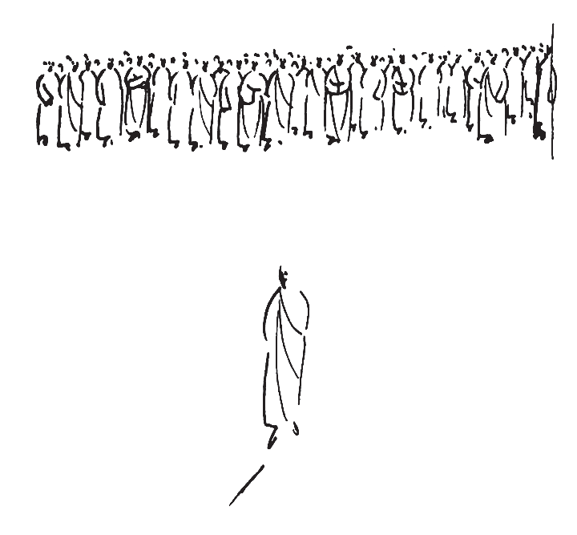
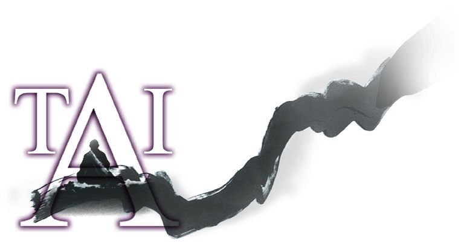
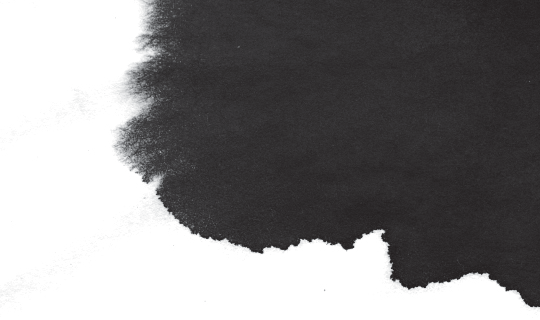
講法有三條基本原則。第一條叫非請勿傳。沒有人請法就不能傳，越是高端的法越不能亂傳——因爲攻擊佛法或攻擊傳法者有很大的果報。如果一個文明內已經沒有修行人，也沒有追求真相的人，那傳法團隊就不會繼續傳法。
第二條叫越級不傳。根據求法者的根器，傳相應境界的法——給小乘人傳小乘法，給大乘人傳大乘法。不是所有人都可以直接信受大乘佛法，如果跨度太大，不僅難以信受，甚至會攻擊佛法和傳法者，給自己帶來巨大的惡報。
第三條叫責任制，也叫因果自負。特別是傳授佛經未記載的內容之時，傳法者要承擔因果。往昔再來人傳法時也會講一些佛經未記載的內容，但都屬於閉門授徒，此時按原則要報出法名——不是俗世間的姓名，也不是出家後的法號，而是法身名號——這是再來人的傳法規則。但愚人此次進行的是大衆傳法，不適合講法身名號——以免不必要的麻煩。
此規則是要讓求法者知道，那些佛經未記載的內容出自誰口，誰就要負責。如果有求法者按照傳法者所傳之法修行卻沒有得到善果，而是落到下三途，見到了諸殿閻羅，求法者就可以拿傳法者的名號告狀，那這個傳法者就要承擔因果。在這裏沒有欺騙和隱瞞的可能性，佛菩薩的意識遍虛空，所有衆生的言行和每一個細微的妄想，佛菩薩都知道。
以上是講法的三個基本原則。
除此之外還有一條，這一條有一定的隨機性，也看個人因緣，就是代價問題。法不輕傳，道不賤賣，有些傳法者對這一條看得很重，法只傳於願意付出代價的人。但是愚人10 年前的傳法未受一分佈施供養，此次傳法也是如此，所有內容公開傳授，不設任何門檻，愚人做不求回報的法佈施，再隨緣討飯，也希望賞飯的人做的是不求回報的佈施，賞飯與否不影響內容的完整性。如此愚人有傳法之功德，施主也有佈施之功德，雖然愚人不在意功德。如果收費傳法，成爲交易，雙方的功德都會打折，甚至沒有。
還有一點，愚人認爲正法無價，收費傳法是對正法的侮辱，是對師門的不敬，有悖於阿彌陀佛傳道授業之恩情。
下一個要講的是風格問題。
愚人講法，是倒過來從根上開始講起。對現代人來說，這是別具一格的講法方式；這也是受益於佛陀和過去2500 多年來衆多傳法人的努力。那什麼是正常順序？按照佛陀講法的時間順序和內容，佛經可以分爲阿含部、方等部、般若部、涅槃部四大部。
阿含部是給凡夫們講凡夫的執着心和凡夫的禪定，方等部是給阿羅漢們講阿羅漢的分別心和阿羅漢的禪定，般若部是給菩薩們講菩薩的妄想和菩薩的六度法，涅槃部是給菩薩和等覺菩薩們講佛的境界。佛陀按照這個順序講法，後面都沒有講完便示現涅槃。因此後面又出現了伏藏作爲補充——例如《楞嚴經》《圓覺經》等。
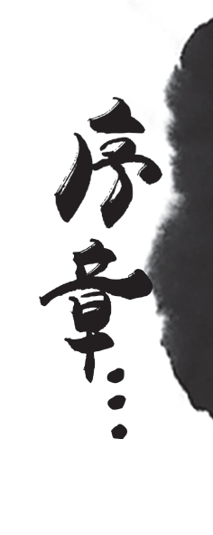
那愚人呢？就是倒過來從佛的境界開始往下講。
還有一點，在愚人這裏學法並且信受之人，都是前世有過修行的人，是善根福德具足之人。在佛理和修行方面有足夠的知識和經驗，也積攢下了充分的功德，才能接觸到愚人所講之法。在愚人的私信中有不少人說，他是求觀音菩薩後遇到愚人所講之法，他是求地藏菩薩後遇到愚人所講之法，等等，很多人求了各自有緣的佛菩薩之後，才遇到愚人所講之法，這就是佛菩薩的加持和接引。是你適合看愚人所講之法，所以把你引到愚人這裏來。大乘佛法認爲：一切正常的修行、如法的修行都在佛菩薩的加持之下進行——佛菩薩一直加持和引導所有追求正法的修行人。
在內容方面，此次講法加了不少新的內容，具體如何歸類呢？
我們從哲學開始講起，廣義上講，哲學是人類掌握的一切知識的統稱。哲學分自然哲學、人文哲學、命運哲學。自然哲學是理科，人文哲學是文科，命運哲學和研究知識的目的相關聯。在我這裏，三觀是宇宙觀、社會觀和人生觀。學自然哲學（理科）會構築人的宇宙觀、世界觀。學人文哲學（文科）會構築人的社會觀。最後的人生觀根據前面的宇宙觀和社會觀所構建。
宇宙觀、世界觀是對物質世界的認知，社會觀是對社會和人類歷史的認知，會決定個人與世界、與社會以及與周圍人交流互動時的方式和原則。人生觀包括道德觀、價值觀、是非觀、審美傾向等等，個人層面上的所有觀念都可以歸屬到人生觀上。以上是愚人對三觀的基本認知。
佛陀講法是從人生觀入手，先講苦、集、滅、道——四諦法，從每個人所面臨的人生八苦開始講起，到痛苦產生的原因，消滅痛苦的修行方法，最後講到生命和世界的真相。個人的修行最終達到的結果不只是離苦，還悟到了整個宇宙的真相——從人生觀引到了宇宙觀。
在這裏，人生觀和宇宙觀中間差一個社會觀。社會觀的底層邏輯是“諸佛同體”——衆生的意識重疊在一起——佛法的社會觀由此展開。
業的輪轉、衆生的輪轉、佛創造世界、佛在原世界繼承成佛或者創造新世界成佛等一系列的問題，其中的規則全都是從最底層的宇宙真相——“諸佛同體”中延伸出來。
佛陀沒有講社會觀部分，原因有二：第一，那個時代的人類難以接受；第二，講出來會嚴重影響文明進程，“諸佛同體”後面一系列的問題——規則、創世、控制、文明劇本等，全會被推導出來。等於在文明劇本剛開始便已劇透。佛陀可以講一些預言——像照片一樣只講未來的某個畫面，但是不能把中間的演變過程全講出來，這樣劇本就無法進行下去。因此佛陀不能講社會觀問題，只能講人生觀和宇宙觀。
佛法從一開始設計的時候，就已經分成兩部分，前面第一個傳法人——佛陀講人生觀和宇宙觀，中間的社會觀放到最後，由最後一個傳法人來講。現在愚人先講了，但我肯定不是最後一個人，因爲後面還有一位月光菩薩，愚人算是爲他打前陣的人。社會觀部分是佛法當中的隱藏祕密，一開始只能是祕密，無法廣傳。在中間的傳法過程中也有再來人傳法，但他們也只對自己的入室弟子們講，不能公開講。現在到了傳法的最後階段，極樂世界傳法團隊的任務即將結束，最後的100 多年是給月光菩薩的時間。月光菩薩大概在20 多年後出生，再修行三四十年，40 歲左右會出世，然後傳法52 年，大概這樣計算，100 多年就湊夠了。所以愚人現在講，就是在他之前爲他做一個鋪墊。愚人把缺少的社會觀部分講出來，和原來的人生觀、宇宙觀部分拼到一起，構築一個完整的宇宙真相。
在這裏如果還有欠缺的部分，就是各大職業內部的知識。有些內容無法對現在的凡夫講，只能等有緣人自己解脫後，到了那個境界就可以從師父那裏或者從佛的記憶當中查看真實的記錄和知識。如果求法者加入四大職業，自然會有人傳授。
傳法人做的事情大可以分四個部分：
第一，佛法的現代化演繹。“現代化”這個詞適用於任何時代，就是用當時流行的語言來傳播佛法。玄奘法師取經回國後，就用當時大唐的官方語言進行翻譯，然後再往下傳至宋朝、明朝，也有那個時代的高僧大德出來寫論、疏、序之類的文章，也是用當時的語言來講。這是傳法者所能做的第一件事——佛法的現代化演繹。
第二，推進佛法的本土化進程。佛法要長久地流傳下去，就要和當地的文化融合到一起，逐漸演化成本土化的宗教，這是非常重要的一件事情。在中國，推進佛教的本土化進程中，貢獻最大的人是六祖慧能，他確立了中國式禪宗，也留下了《六祖壇經》。在西藏，蓮花生大師完成了佛法的本土化進程。這是傳法者所能做的第二件事情——推進佛法的本土化進程。
第三，佛法的發揚光大。這裏有兩件事，一件是在原地弘揚佛法，讓更多人接觸佛法、信仰佛法、修習佛法，歷代有名的高僧大德都在做這件事。還有一件事是向外推廣，像鑑真東渡去日本傳法，也有人去新羅、高麗傳法，近代有宣化上人去美國傳法，等等。這是傳法者所能做的第三件事——佛法的發揚光大。
第四，提出適合那個時代人根器的某種修行方法。在十年前的書裏講過修行方法的演化過程。每隔一段時間，衆生的根器會跌落一個層次，這時候就會出現新的傳法者，提出一種新的、適合當時代人根器的修法。這是傳法者所能做的第四件事——根據當時求法衆生的根器，提出相應的修行方法。
如上四件事：第一，佛法的現代化演繹；第二，推進佛法的本土化進程；第三，佛法的發揚光大；第四，提出適合那個時代人根器的某種修行方法。這四件事當中，如果能做到三件事，便可以開山立派成爲一代宗師。
愚人的傳法，至少要做到佛法的現代化演繹。愚人講法就用現代語言，包括網絡用語和遊戲用語，儘量少用古文和佛法專用詞彙，讓現代人，尤其是80 後、90 後、00 後便於理解。愚人自覺，傳法者要做的第一件事基本完成。
第二件是推進佛法的本土化進程。因爲佛法的中國化已經完成，後人無需再做，愚人自然也做不了什麼。
第三件是佛法的發揚光大。在這一點上，愚人自覺稍有功勞，讓一些難以看懂原版佛經、聽不懂老式講法的現代人真正理解了佛法的真諦。有不少讀者反饋，看那些高僧大德們講法，使用太多佛經裏的專用詞彙，令人難以理解，望而生畏，看愚人講法卻通俗易懂，心生歡喜，愚人深感欣慰。
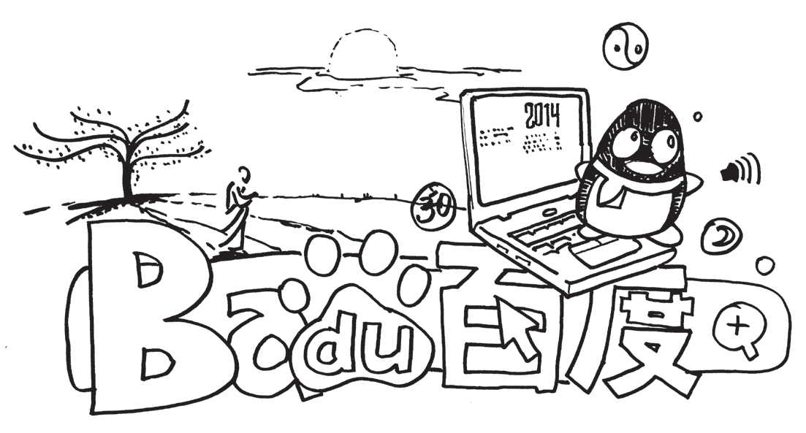
尤其是勸人發心的部分——發大願的功德巨大，是修行路上的轉折點。不入諸佛之本心，一切修行都是盲修瞎練。何爲諸佛之本心？大菩提心是，不以普度衆生爲目的的修行都是在求個人利益，終不得解脫。發心與不發心是完全不同的兩種狀態，一個修行者有了大菩提心，在生死輪迴中，才真正踏上去往彼岸的旅程，業開始逐漸減少。如果沒有大菩提心，修行如同原地踏步，甚至步步墮落。所有的修行都是爲個人福報或個人的覺受，以上都屬於輪迴內的光景，哪怕是以出離心修行，也無法解脫生死。修行者應努力發大菩提心，以普度衆生爲己任，與諸佛同願，與諸佛同行。作爲修行者，就算當下發不起大菩提心，也要知道，大菩提心是解脫的必要條件，這是大乘佛法與其他二乘佛法的重要區別。愚人自認爲，在佛法的發揚光大這件事情上有些許功勞，就算做到了半件事吧。
第四件是提出適合當代人根器的修法。這個事情上，愚人也提出了從腹式呼吸、磕頭開始練起，逐漸把身體練好，再到控制飲食和打坐時的心法。據我所知，衆多當代傳法人當中，很少有人把腹式呼吸看得如此重要。如果是靠打坐慢慢練，等身體自己改變呼吸方式，需要非常長的時間。所以愚人把腹式呼吸放到前面，修行一開始就練腹式呼吸，先把平時的呼吸方式徹底改變，然後再念經、唸咒滅文字妄想或者念《地藏經》消業，先用一兩年時間打基礎，然後開始打坐。愚人認爲這也算是創立了一種更加適合當代人的修行方法吧。但是後面講的唸佛、觀佛、思佛這都是本就存在的淨土禪修法，所以這些就不算，只能算在前面稍微有一點功勞，這樣應該也算做了半件事。
那都加起來也就兩件，所以開宗立派是不可能的。但是受益者們已經把愚人的法稱之爲Tai 法，還有社交羣起名叫Tai學院之類，本人並不能接受。一個重要的原因是：如果已經寫好了開宗立派的劇本，按照這個劇本要開宗立派，像善導大師建立淨土宗一樣，這是可以的。但是沒有這個開宗立派的劇本，就不要再搞一些名堂，建立新的山頭——什麼門、什麼法之類的。一旦有了這種相，也就是分別心，人們會出現執着，然後就會產生紛爭，這有悖於愚人傳法的初心。愚人希望大家把愚人所傳之法當作正常的淨土禪來看待，不要把它區別開來，叫某一新派的某種修法，愚人並不認同此種做法。但是既然大家都已經稱此法爲Tai 法，愚人也無法往回收，只能將錯就錯傳下去，但愚人並無開宗立派之意，望讀者知悉。
推廣之事，愚人恐難爲之。愚人不願再結新緣，儘量減少不必要的社交。尤其是沒有佛法的國家，愚人更不願去，彼國之人根器比東方人差很多，愚人不願與根器低劣之衆生再結新緣，此舉雖違背普度衆生的根本宗旨，但愚人也有愚人的業和隱情，望讀者理解。
雖然如此，愚人還是希望佛法能傳播到一帶一路沿途國家。此書因現代語言所著，翻譯成各類外語比較方便，愚人盼有緣人能把它推廣出去，既符合大乘佛法普度衆生的理念，也符合我國現今的大戰略。我國要重新回到世界中心，建立新的多極化國際秩序，掌握更大的國際話語權，光靠實體商品的推廣遠遠不夠，還需要傳播我們的精神文化和我們的宗教。佛教雖起源於印度，卻在中原大地開花結果，已經完成了中國的本土化進程，既有世界性宗教的底色，又融入了中國文化，現今的大乘佛教實際上屬於中國。
愚人盼望，大乘佛法在最後100 多年的期限當中，順利傳播到一帶一路沿途國家，接引更多的衆生。希望目前還在寺院學習的年輕僧侶們，等機緣成熟之時，大膽地走出去，去新的世界，建立我們的寺院，傳播我們的佛法。同時爲生活在海外的華人華僑，提供一個信仰的家園，可以交流和聚會的場所，再把本書之內容傳播出去，讓更多的有緣人能夠接觸正法。
關於讀者個人的傳法行爲，我們要遵守前面講的幾個原則。別人不求，就不要傳，沒人問就不要說，以免不必要的誤解。有人問，你就說一點，如果問得多了，就把書給他看——這樣就可以了。
以上是愚人此次講法傳法的初衷，也是希望最後能達到的效果，至於結果如何，一切隨緣。
愚人先聲明，故事神奇，望讀者們當故事來聽，重點看邏輯，莫看愚人。
“諸佛同體”是大乘義諦中最核心的內容，是第一義諦最重要的組成部分。佛陀傳法到後期，在般若部的最後部分和涅槃部纔有所涉及。但也沒有直接全部講出來，是在講其他內容的過程中逐步穿插進去，讓修行人在修行過程中一點點體悟，採用了引導人自悟的方式來傳授。
愚人在2014 年第一次傳法時還沒有悟到此內容，又修了三四年，纔在定中證悟，真是醍醐灌頂、豁然開朗。瞬間諸多不解之惑了了分明，無數記憶翻湧而出；與上次開悟比較，更是躍入新天地之感覺。
在理解諸佛同體之前，愚人以爲身上唯有三根細線——阿彌陀佛手上一根，大師兄手上一根，愚人搭檔手上一根。但是再一次開悟之後，知曉了更多的真相，極樂世界36萬億多的佛，還有那麼多的等覺菩薩，無數與愚人有緣之人，如此之多的善緣之人向愚人發出美好的祝願（即加持）。
如此算來，愚人身上所繫並非三根細線，36 萬億多的佛，之外還有很多等覺菩薩、其他菩薩，每人一根線，相加一處，根根細線擰成巨繩，那一刻，愚人心態陡然轉變。之前愚人小心謹慎，擔憂三根細線難保不斷，開悟之後，信心倍增，巨繩所繫，無有恐怖，除我自斷，他力難斷。愚人既爲度人而來，唯一斷線之緣由，便是欲度非人，造下新業。新增記憶中，愚人亦曾犯過錯，再次墮入輪迴，又被大師兄等人搭救出輪迴。
此時極樂世界之傳法即將結束，愚人對此世界無任何迷戀，只盼速速完成任務，順利歸去。
佛陀曾說過，對下根之人不能說關於阿賴耶識的內容。佛的原話叫“愚癡凡夫”，對於境界低的人不能講太高端的佛理，這也是越級不傳的傳法原則。但是我認爲看本書的人都是智慧具足的人，只是爲了幫助大家更好地理解，前面講一段簡單的哲學內容作爲鋪墊。
哲學並不是我擅長的領域，所以不做深入的探討，只講大的框架，是我個人對哲學的一點愚見而已。
以下是我要講的內容：
哲學分廣義的概念和狹義的概念。
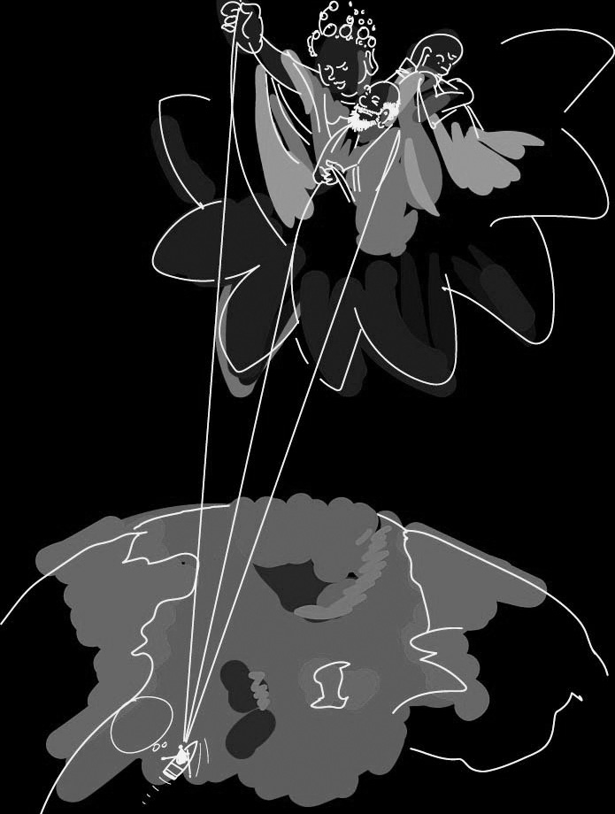
狹義的哲學指的是形而上的內容，那什麼叫形而下，什麼叫形而上？我們用感官可以認知到的物質世界叫形而下，認知不到的世界叫形而上。古人認爲我們能夠感知到的物質世界背後還有一個更大的、感知不到的世界，物質世界的變化都與這個感知不到的世界有關聯，甚至認爲有什麼未知的力量在感知不到的世界裏控制着物質世界。東西方哲學的根本差異就在這個形而上的部分，西方哲學認爲，控制物質世界的背後驅動力是人心，他們的神話裏出現的神，包括造物主或者上帝，都是人類慾望的投射，是人的神格化，本質上還是人。所以在西方哲學體系里人和外部的物質世界是對立的，這個物質世界囊括了自己以外的一切，包括他人和其他種族，從這裏發展出來的就是二元對立的思想。相比而言，在東方哲學裏，人心背後還有一個更大的存在，我們稱之爲道或者天意。從道或者天意的角度看，人類也是世界的一個組成部分，從這裏發展出來的是天人合一的思想。以上是狹義哲學的內容和東西方哲學的差異。
廣義的哲學定義是：人類所掌握的所有知識的統稱叫哲學。哲學分三大類：自然哲學、人文哲學、命運哲學。自然哲學是研究物質世界的學問，包括物理、化學、生物、天文、地理等，俗稱理科。人文哲學也叫社會哲學，是研究我們人類社會的學問，包括歷史、政治、經濟、語言文學等。命運哲學，俗稱算命、預測。在國內，命運哲學不算大的門類，但是在哲學體系裏，命運哲學是很重要的分類。命運哲學既不屬於文科，也不屬於理科，針對的是研究學問的目的。
我們研究哲學，是爲了發現物質世界和人類社會的發展規律，知道了規律就可以往前推，研究終極問題——宇宙的起源、人類社會的起源等等。其次是往後推，預測未來可能發生的事情。小到個人命運，大到國家戰略，都有預測的需求，命運哲學就是以預測目的爲導向的學問。
我講哲學的目的是希望大家在腦海裏建立一個巨大的圖書館。普通人腦海裏只有一個小小的書架，上面擺着幾本書，認知的侷限性和偏執心理很嚴重。遇到新書新知識，必然會與原有知識進行對照，兩者一旦發生衝突，人就會糾結，之後會出現兩種狀況：第一種是否定新書，否定作者，甚至攻擊；第二種狀況是懷疑自己，否定自己，然後把原有的書拋棄，再把新書放進去，這是常人難以做到的事情。大部分人都會否定別人，因爲否定自己等於是承認自己的愚癡和不足，需要莫大的勇氣。勇於否定自己和接受新知識是好事，但這種事也不能常做，做多了人就會變得沒主見，聽到什麼就信什麼，很容易被外部的信息所引導。
所以我勸大家，在腦海裏建立一個巨大的圖書館，再把圖書館分成幾個區域，裏邊分門別類做成多個隔間，在每個隔間放滿書架。目前人類所掌握的知識非常之多，一個人窮盡一生都學不完，也就是說，這個大圖書館我們是裝不滿的。
但是隻要建了圖書館，書架都擺好，當我們遇到新書的時候，就可以分門別類地放上去，別讓它和原來的書發生衝突，哪怕在內容上完全相反，我們也可以像旁觀者一樣接受。打開我們的格局，不做狹隘的偏執狂，不與觀念不同者發生爭執，學習一切對我們有用的部分。
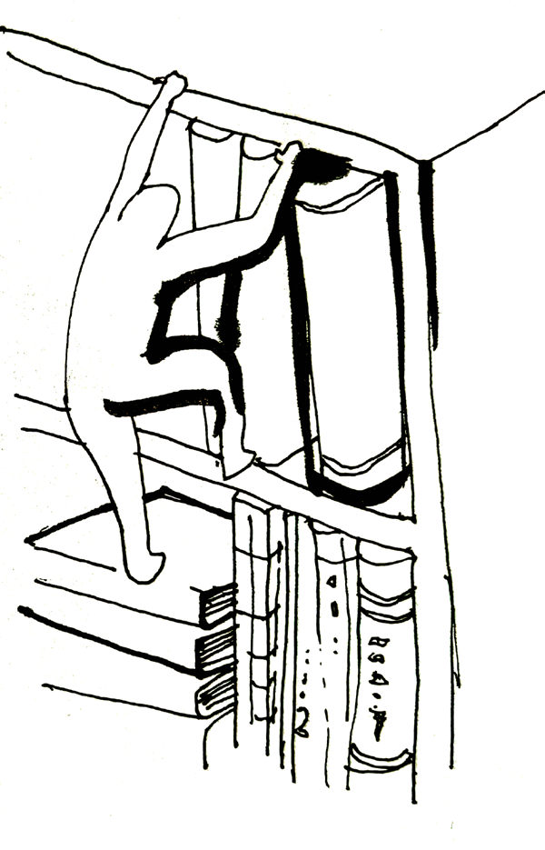
研究哲學另一個好處是鍛鍊邏輯思考的能力，做一個比較有邏輯、有理性的人，而不是感情用事、情緒化的人。跟人交流之前，先把想說的主要內容、參考材料、證據鏈條等都想好，說的時候邏輯清晰，思維連貫，以求達到最好的交流效果。做事方面也要講邏輯，有計劃、有理性，不要感情用事、情緒化。
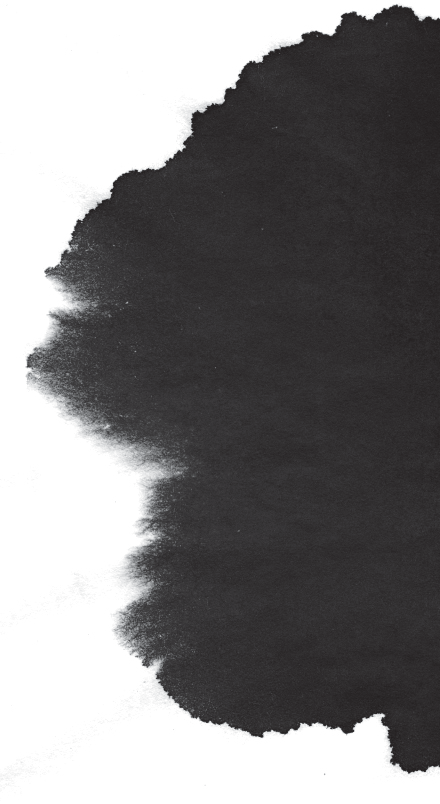
我們都知道，每個故事都有初始設定，也是最底層的世界觀真相。
有一類故事——就像《海賊王》漫畫故事——在戰鬥系統方面，故事開局就給了封閉式的初始設定，之後隨着劇情推進，這個初始設定和劇情之間產生矛盾，沒有辦法再寫下去，作者只能追加新的設定，以打補丁的方式向前推動劇情。
還有一類故事——就像《死亡筆記》——一開始給的是開放性設定，隨着劇情發展，不斷豐富這個設定。
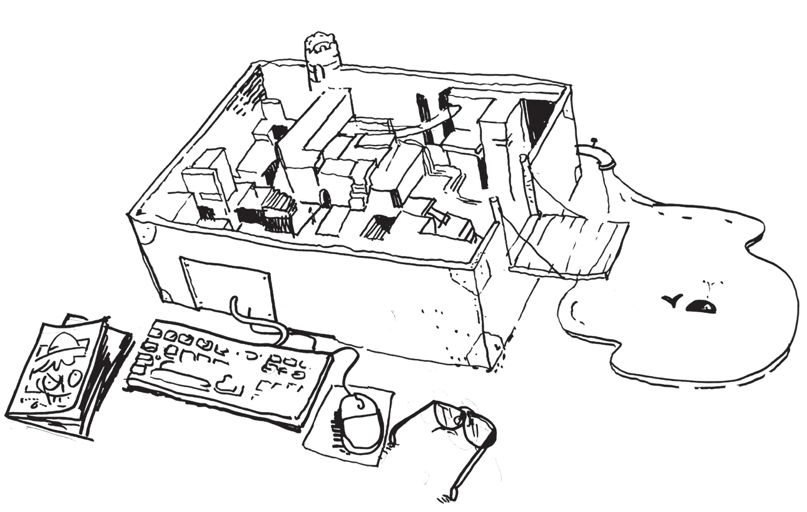
但是，以上兩類故事都不是真理！只要是記載真理的書，最開始給的初始設定就無法改變，因爲真理書講的是世界的真相。如果在後面進行修改或追加新的設定，等於否定了前面的作者（或作者後邊的某位神）。所以真理書的初始設定一旦定下就不能修改，也不能再進行拓展——不能像小說一樣，或像現代科學一樣，探索中不斷追加新的設定。
所以，有些宗教隨着時間的推移，他們的經典出現了漏洞或者破綻，在初始設定不能修改，也不能追加新設定的情況下，這些宗教就開始攻擊異教徒或者不信之人。信者永生，不信地獄，就這麼簡單的兩個選擇。至此便能說明它的初始設定並不正確，整本書的教義也有缺陷。
佛經作爲真理書，它的初始設定自始至終沒有變；並且隨着時間的推移，也沒有發現嚴重的漏洞，反而不斷地被證明它的正確性。因此我們相信，佛經應該是更接近真相的真理書，也許佛經裏講的就是宇宙的真相。
接下來，咱們就講講佛法裏的三個初始設定。
第一個設定叫“自性恆常”——這是大乘佛法裏的核心義理。一切衆生都有自性——自性不生不滅、不增不減。它是永恆存在的底層意識，也叫阿賴耶識、第八識、根本識，有各種名字。這是第一個設定，叫“自性恆常”。
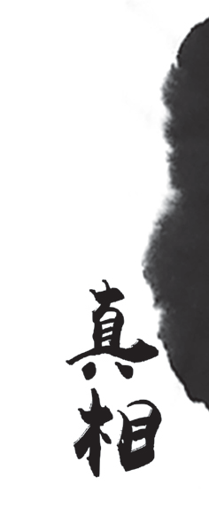
在自性這個層面上，衆生一律平等。佛與凡夫的區別在於：佛的自性裏沒有妄想，凡夫的自性裏有妄想、分別、執着。凡夫只需把妄想、分別、執着滅盡也可以成佛。從這個角度來說，佛法是無神論，佛並不是恆常高於凡夫的存在。
第二個設定叫“初妄無因”——自性當中忽然產生第一個妄想，沒有任何原因。我們不能在這個問題上再追問下去！如果它有因，那這個因又變成第一妄想，這樣往前推就沒有終點。
我曾聽過一種說法：“自性不是意識，也不是非意識。”
首先我們要給意識下定義。什麼叫意識？我個人認爲，能夠產生初妄才叫意識，不能產生初妄就叫非意識。在這裏沒有模糊的概念，只有是和不是，沒有既是非是這種說法。因爲產生初妄，所以它是意識；因爲是意識，它能產生初妄；以物來定性，以性來定物，物與性徹底綁定到一起，不給它任何模糊的可能性。這種邏輯在我們觀測到的複雜世界裏並不成立，但在自性與妄想這個終極問題上它就成立。我們也知道，在佛理中，一切名相本身就是妄想，定義也是妄想，人類爲了交流創造了名相和定義，直至語言系統，以此儘可能準確地傳遞信息。
有人問，人工智能算不算意識？我認爲不是。因爲人工智能的第一妄想（初妄）是人爲輸入而產生，人工智能會根據這個被輸入的第一妄想開始後續的演算。它可以無限演算，也可以做很多事情。但是沒有第一個指令，它自己不能啓動，所以它不是意識！第一妄想只有自己產生的情況下，纔算是意識。
第三個設定叫“諸佛同體”。後面所有關於業的問題、功德迴向、修改命運等等，全部都以這個設定爲基礎展開。
那什麼叫“諸佛同體”？我們應該怎麼理解它？
諸佛同體指的是：所有衆生的自性全部重疊在一起，每一個自性都是獨立的個體，但是他們以重疊的方式存在。
下面就用編寫命運劇本和修改劇本的問題作爲切入點來進一步解釋諸佛同體。很多人提問——自己生病的因果、各種苦難的因果。我不講因果，也不給人看因果，但是我可以告訴你這背後的基本邏輯，命運劇本的編寫過程。
有一羣菩薩——我們姑且叫他們爲編劇菩薩，他們專門負責編寫人類命運。他們編寫的邏輯是什麼呢？首先，他們必須是菩薩。因爲只有菩薩才能看到一個衆生無始以來所造的所有業，菩薩以下的阿羅漢看不到，所以他們只能是菩薩。這些菩薩們會把一個人無始以來所造的所有業整理成一本書，菩薩的世界裏沒有實體物質，我們就拿“書”這個物來做個比喻。編劇菩薩們會從書中抽取內容進行編排。
假設有一個普通人，他無始以來造的所有業有10000 點，其中5000 點是善業，5000 點是惡業。編劇菩薩就從這裏抽取。
目前我國平均人壽是77 歲，編劇菩薩會抽取5 個善業和5 個惡業，把這個業進行翻轉，善業就變成善報，惡業就變成惡報。把善報、惡報拼在一起穿插起來，把它編成一個人一生的命運。壽命也在編寫當中，讓當事人可以少活幾年，也可以多活幾年。
編寫命運並不是一個一個編寫，因爲菩薩是超越時間與空間的存在。一個人的命運肯定會和很多人聯繫在一起，所以編劇菩薩們在意識中編寫命運的時候，會同時編寫很多人的命運，層層推進。在沒有時間的一剎那中，可以編寫很多人的命運。而且爲了方便編寫很多人的命運，把人類社會分成很多國家，由不同的菩薩負責編寫不同地區的人，最後再彙總到上一級的總編菩薩那裏。
這位總編菩薩再根據所有編上來的命運進行整理，看看有沒有互相沖突的地方，他再修改一下，然後把它變成一個完整的命運之網。而且，有人死、有人出生，命運編寫需要持續進行——編寫劇本，讓人投胎，死亡，再編寫。這些編劇菩薩們要持續工作，讓每個人的命運持續推進，使整個文明劇本繼續下去。
編劇菩薩下面還有劇務——劇務大部分是天人，也有羅漢，羅漢是高級別的劇務。劇務的工作是觀察劇本落實的情況，編劇菩薩會把寫好的劇本發給劇務，劇本里的當事人投胎到人間之後，劇務就會拿着劇本觀察當事人，24 小時不間斷地觀察，從出生到死亡的那一刻，沒有任何空隙。觀察當事人在一生中的所作所爲，5 個善報和5 個惡報依次出現，除了劇本中寫好的內容之外，當事人還會造很多小善業、小惡業，也有可能是大善業、大惡業，劇務會如實記錄。
最後，當事人死亡之時，劇務會把命運過程彙總一下，把新造的善業、惡業都彙總起來，上報到編劇菩薩處。編劇菩薩把所有收集而來的記錄放進當事人的業書當中，去掉已承受的善報、惡報部分，放進新增加的內容。對絕大部分的凡夫而言，業的總量大概率會持續增加，很少有人會減少，除非是正法修行人。
假如有一個人，他在一生當中行了很多善，哪怕不信佛，只是單純地喜歡行善，讓很多衆生產生了歡喜心，那其他衆生對他的感激之情會逐漸累加，我們稱之爲福德，當福德累加到一定程度的時候，這個劇務會把觀察的記錄彙報給編劇菩薩。
要修改命運劇本，福德需要達到一定的量，這裏肯定有量化計算的標準，還要看個人所求之願。編劇菩薩會根據情況，把善行翻轉過來變成善報，寫進當事人餘下的命運劇本里，再把劇本發給劇務。當事人的命運中就會出現善行的現世報，只是當事人並不知道原劇本和修改後的劇本而已。
反過來說，當事人造了很多惡業，傷害了很多衆生，那這些受害者們死亡後，會到地府閻王處告狀。沒死的衆生也產生指向當事人的怨恨和復仇之心。這些怨恨之心也會累加。
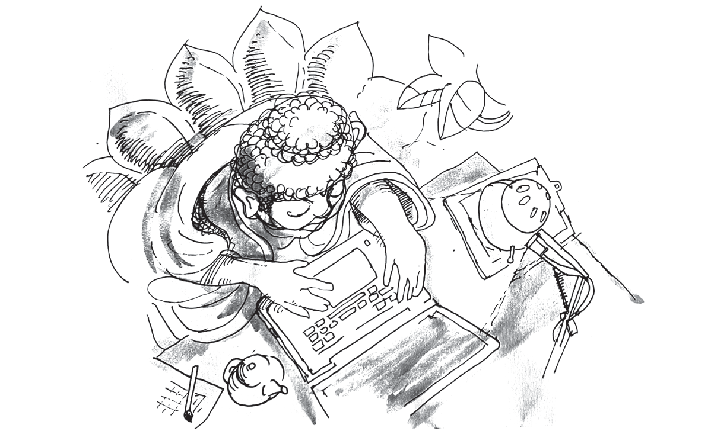
先看閻王處告狀的衆生，其中有些衆生在前世傷害過當事人，那這些衆生的受害是業報，不予受理，除非過度報復。而第一次被當事人傷害的衆生，他們的冤情閻王會受理，彙總情況後上報到劇務，再由劇務上報到編劇菩薩處。編劇菩薩就拿這個惡業的量來決定，要不要修改劇本，他有權決定改或不改，有些人後期的命運對自己和對周圍人有重大的作用，這類人在前期造惡也不會輕易修改命運，以免影響後期命運。
如果編劇菩薩修改了當事人的命運，譬如給當事人寫進了新的惡報，當事人在人間就會遭到現世報；如果罪大惡極，要讓當事人提前死。等修改後的劇本發到劇務手裏後，劇務會找死刑執行人。死刑執行人有很多，如雷神、火神、水神、瘟神、鬼王等等。他們可以讓當事人意外死亡、暴病而亡、被其他衆生殺死等等——各種死法應有盡有。以上是正常情況下，善行、惡行對命運產生的影響。
我一直勸大家多多行善，再拿功德福德去向觀音菩薩求，求他給你改寫命運，滿足一些願望——因爲他有這個權力！他不是編劇菩薩，但是他有權指揮編劇菩薩。因爲這個世界的主人釋迦牟尼佛請極樂世界的團隊來進行傳法時，把傳法期間的最高權限交給了團隊總指揮——觀音菩薩，讓娑婆世界的所有菩薩、羅漢接受觀音菩薩的調度。
如果有人造了很多善業，再用功德福德向觀音菩薩求願，觀音菩薩首先會看功德福德的量有沒有達到修改命運的程度，然後再把所求之願放到當事人命運裏開始推演，推演的結果發現當事人變得更好了，修行更精進，幫助更多的衆生，那觀音菩薩就會把新劇本發給編劇菩薩，讓他照此修改，經過編劇菩薩修改之後，當事人在人間會得償所願。
如果觀音菩薩通過推演發現，當事人滿願之後變得不好了，開始到處炫耀，擠壓別人，傷害其他衆生，甚至會傷害到很多原本與之無緣的衆生，觀音菩薩就不予修改，當事人的願望就不能實現。
這裏還有一個問題：當事人的願望不能和國家大命運、整個人類文明劇本產生衝突。比如說，世界格局將走向多極化，華夏文明重新走到世界中心，這是人類文明劇本里寫好的內容，與之相悖的願望大概率無法實現，各大國的領導人都是劇本里寫好的人物，作爲一個普通人，不管造再多的善業，想這一世當上國家領導人是不可能的，除非一開始就寫好劇本讓其當大任。所以一個人的社會影響力越大，就越應該考慮大的形勢發展，順勢而爲才能事半功倍。
我還建議不要隨便找人看命運，這裏特指神通看命，易學算命不算。這一點非常重要，如果給你看命的人或者這個人背後的大神，他的級別能達到編劇菩薩的程度，或者比編劇菩薩更高，那這個人看過你的命運之後，你的命運就會被鎖定。打個比喻，假如你在辦公室裏工作，有一個大領導過來看了你的工作情況，看完什麼都沒說就走了。你理所當然會認爲目前的工作做得很好，使得大領導沒有挑毛病，也就不需要改進。編劇菩薩也是如此，比他級別高的人來看某個凡夫的命運，看完沒有提任何意見，編劇菩薩就會認爲這個劇本寫得很好，不需要再改。在這之後你再造善業，想用功德福德求願，會變得相當困難。造惡業之後帶來的惡報卻不怎麼受影響，因爲受害人會告狀，而受益人不會。
所以，你要求願，最好向級別最高的人求——就是觀音菩薩。如果觀音菩薩要改一個凡夫的命運，他發現有人已經改動過，比如其他菩薩、羅漢等人。因爲觀音菩薩權限最高，他會找那個菩薩、羅漢徵求意見，他們大概率都會同意，之後他們再找編劇菩薩重新修改命運劇本。這是上邊的工作流程。
下面講講一個人的善行與惡行如何相互影響。
例如，有甲和乙兩個人，甲在某個前世殺過乙，乙是甲的冤親債主，乙有極強的怨恨和憤怒情緒指向甲，乙要復仇，甲只做簡單的懺悔和道歉，乙大概率不會接受。這個時候甲要提高和解的可能性，就需要做功德福德，比如說，甲放生10 萬條小魚，這10 萬條小魚產生的歡喜心與感激之情會指向甲。甲再把這個福德迴向給乙，甲就成了中間人。在諸佛同體，甲、乙和10 萬條魚的自性重疊在一起的情況下，10 萬條小魚們的好情緒會稀釋乙的壞情緒，乙的情緒變好就會更容易接受和解。
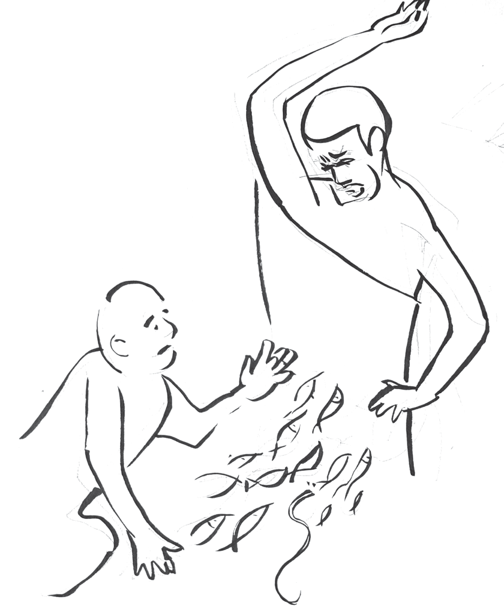
功德福德的轉移都是在諸佛同體的前提下完成，衆生的自性全部重疊在一起，所以情緒也可以互相影響。歡喜心、感激之情都是好的情緒，仇恨、怨恨、復仇的執念都是壞的情緒。指向一個人的好情緒和壞情緒一旦重疊在一起，就可以相互影響。
大部分人都應該有這樣的經驗，早晨上班推開門一進去，就能感受到辦公室的氣氛。如果你來之前，大領導過來視察，進行過一番表揚，那氛圍就很好。如果大領導發一頓火後離開，就算你不知道大領導來過，當你進辦公室的時候，從氛圍當中都能感受到壓抑的情緒。人會感知他人的情緒，也會受其影響。和情緒好的人一起生活，和情緒不好的人一起生活是不一樣的。
與冤親債主和解也是同樣的原理，冤親債主的情緒很不好的時候，勸其放棄復仇，與加害人和解會非常困難。如果我們給冤親債主迴向功德福德，用其他衆生的好情緒稀釋他的壞情緒，他的憤怒程度和復仇的執念都會減弱，此時再向他懺悔，他就有可能原諒我們。
迴向了足夠的功德福德，自己又誠心懺悔的情況下，冤親債主還不願意和解，最後一個方法就是求佛菩薩進行仲裁。佛菩薩自有一套勸人和解的方法，雖然成功率不是100%。有一些冤親債主是帶着閻王爺發的討債令來複仇，這種冤親債主比普通的冤親債主更難勸解，這個時候可以求地藏菩薩仲裁。地藏菩薩和閻王並不是體制內的上下級關係，但閻王們通常都會接受地藏菩薩的意見，所以要是地藏菩薩爲你仲裁，勸冤親債主放棄復仇，再讓他帶着足夠的功德去投胎，大概率和解能夠成功。但是冤親債主不會徹底放棄復仇的行爲，多多少少都會有一些，做到大災小受、提前受報已經算作很成功的消業。
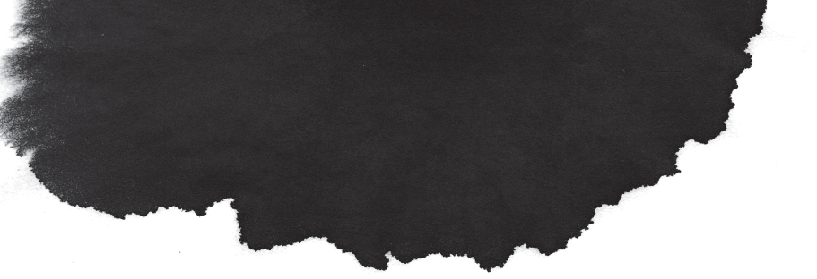
以上是功德迴向的原理。這一切都是在正確理解了諸佛同體的前提下，才能得到完美解釋。
這一章是佛法中最核心的內容，意識的構造——妄想、分別、執着中妄想和分別心部分。
《坐禪1》中已經闡述，意識和果位的對應關係。自性叫阿賴耶識，或者叫第八識，自性當中沒有妄想時稱之爲佛；自性當中產生妄想就叫菩薩；妄想增多，出現第七識分別心叫阿羅漢；妄想、分別增多，出現第六識執着心叫凡夫。執着心的部分在《坐禪1》中詳細闡述，這裏不再贅述。
菩薩的妄想部分就簡單說明一下，畢竟凡夫難以體驗到菩薩的妄想境界。
我們修行到一定程度，就能感受到前面打妄想的意識背後，還有一個意識可以觀察前面的意識。不管起文字妄想、注意力、還是情緒，後面都有一個意識可以覺知前面的妄想，這就是第七識分別心，我們可以升起這個分別心，用它來覺照前面的所有妄想，觀察身體的每一個動作，觀察六根帶來的每一個感覺，觀察情緒變化，觀察世間一切，這叫四念處修法。
至於菩薩的妄想，對於凡夫來說太遙遠。凡夫要理解阿羅漢的分別心都有難度，更何況是菩薩的妄想，按照越級不傳的傳法原則，分別心部分都不適合講，但此次講法有天人來聽法，四禪天到無色界四天的天人能夠理解分別心境界，各位有緣人就當故事來看，理解不了也無所謂。
關於妄想，有兩個知識點：第一，初妄無因；第二，妄想可數。
第一點初妄無因是初始設定，也是宇宙與生命的底層真相。第二點妄想可數，在自性當中忽然產生第一個妄想之後，妄想會一個一個增加，到十一個之後再增加就會變成分別心，就此菩薩跌落爲阿羅漢。
前面這十一個妄想並不像小球一樣並排出現，而是像洋蔥一樣一層一層往上套，妄想本身沒有實體，以上只是形象的描述而已。舉例來說，八地菩薩有幾層妄想？首先等覺地時出現一層，十地時增加一層，九地時增加一層，八地時增加一層，一共有四層妄想。
有四層妄想的八地菩薩能直接感受到最外層的妄想，再稍微能感受到第三層妄想，但是基本感受不到第二層妄想，除非修行快要進入下一個階段。
菩薩的妄想我們很難理解，那就用神通試着解釋一下。菩薩的神通叫“欲知而知”，想知道就能知道。比如說，菩薩只要起一個念頭：是誰在唸我名字？這麼一想，馬上就能知道所有正在唸其名字的衆生，他們在哪裏、做什麼、想什麼、有什麼訴求，其感知範圍覆蓋所有法界，個個衆生清晰了知，不會混雜。
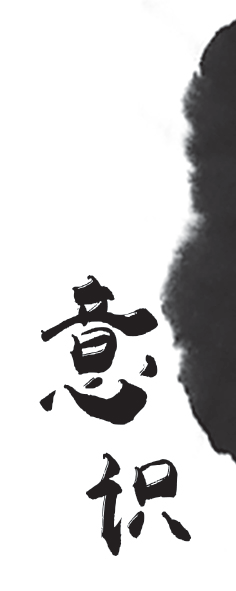
菩薩都會二人一組結成搭檔互相照應，一人投胎到人間消業度人時，另一人就不會投胎，在法身地引導和保護自己的搭檔。除此之外，還會觀察搭檔附近的廟宇、修行人等，特別是廟宇裏供着他的像的時候，他就會着重觀察周圍，有人來許願的時候，只要動一下念頭就能知道這個人到底有什麼願、修行如何、戒行如何、善行的功德多不多。如果改命的條件已經滿足，就會向編劇菩薩發信息，讓他稍微改一下命運。這是法身地的菩薩平時的工作。
菩薩的果位從初地開始往上看，分別叫歡喜地、離垢地、發光地、焰慧地、難勝地、現前地、遠行地、不動地、善慧地、法雲地、等覺地。按照我的講法風格，應該從等覺地倒過來講，但菩薩的境界凡夫難以理解，還不如用妄想減少、境界提高的次第解釋更容易理解。
還有，菩薩的妄想不能簡單理解爲個人的妄想，要深刻理解“諸佛同體”，即衆生的自性重疊在一起的底層真相，還要看本書第三章關於業的部分，瞭解了業的原理，再看菩薩的妄想，或許對菩薩之境界窺探一二。
第一地叫“歡喜地”，梵文譯爲“難登”。
歡喜地的菩薩初滅我相和人相，脫離了分別心的枷鎖。客觀上講，我的妄想和衆生的妄想全部混在一起，而我不去分別認知我和衆生的妄想，結果就是全法界再也沒有外在的妄想，都是本來存在的妄想，也可以說我即是法界，對於一切妄想的生滅，包括我的妄想和衆生的妄想，我不再有任何違逆之心境，從而升起無限的歡喜心。此歡喜心並非凡夫的情緒，應該和有分別心的狀態相對理解，意識中還存在我相和人相時，法界裏存在“非己妄”（不是自己的妄想，是其他衆生的妄想），此時心有掛礙，不夠歡喜，但分別心消失，我相、人相破滅，法界再無非己妄，心生歡喜。
好比一位富豪住在豪宅裏，但客廳中有很多東西都不屬於自己，是其他人暫時寄存於此的貴重品，此時豪宅主人的心態該如何？後來富豪掏錢買下了所有客廳中的貴重品，從此豪宅內的一切物品全部屬於豪宅主人，此時豪宅主人的心態又如何？區別就在於此。
以前講過，菩薩只要動一下念頭就可以知道任何想知道的信息，凡夫理解這句話時，會很自然地以爲菩薩像飄在空中的靈體，可以瞬間移動，想看誰就會出現在誰的旁邊，但在這種想法裏已經有了我相和人相。
事實上菩薩起念頭想知道某個人的狀態時，在衆生意識重疊的情況下，菩薩會直接和某個人重疊到一起，感受他的一切妄想、分別、執着。他的痛苦菩薩都知道，但對菩薩產生不了任何影響。
再從業的角度理解菩薩的十地，歡喜地對應的是六波羅蜜中的佈施波羅蜜，歡喜地的菩薩剛剛成爲菩薩，雖然能看到自己和有緣衆生無始以來的所有業，但解業的智慧還不足。所以第一步是勤修佈施，這裏的佈施包括法佈施、無畏施、財佈施等所有佈施，也可以叫十善道，讓有緣衆生升起歡喜心，因此叫歡喜地。在衆生意識重疊的情況下，善緣衆生的歡喜心和惡緣衆生的報復心會同時反映到菩薩的意識中。
勤修佈施能讓善緣衆生的歡喜心不斷增加，稀釋惡緣衆生的報復心，方便於後續的消業。
第二地叫“離垢地”，梵文譯爲“結慢”。
《華嚴經·十地品》中說道，歡喜地的菩薩發起十種深心（正直心、柔軟心、堪能心、調伏心、寂靜心、純善心、不雜心、無顧戀心、廣心、大心），就能進入離垢地。
意識層面上離垢地的菩薩比歡喜地的菩薩少一個妄想，還要消掉一部分業，在神通方面比歡喜地更加強大，解業的智慧也有所增加。
從業的角度看，離垢地的菩薩對一切惡行的果報了了分明，不僅勤修佈施，同時嚴持禁戒，成就戒波羅蜜。在傳法度人過程中，勸一切有緣衆生勤修十善道，同時嚴持禁戒。
也就是說，菩薩從廣造善業的階段進入了廣造善業的同時不再造任何新惡業的階段，不過有些業還是需要用破戒的方式來消。
第三地叫“發光地”，梵文譯爲“華飾”。
《華嚴經·十地品》中說道，離垢地的菩薩發起十種深心（清淨心、安住心、厭舍心、離貪心、不退心、堅固心、明盛心、勇猛心、廣心、大心），就能進入發光地。
意識層面上發光地的菩薩比離垢地的菩薩少一個妄想，還要消掉一部分業，在神通方面比離垢地更加強大。《華嚴經·十地品》中說道，此菩薩得無量神通力，可以化身無數，所往無礙，猶如虛空。此菩薩以他心智，如實而知他衆生心，還有圓滿的宿命通，可以知道衆生所有業，三摩鉢底——能出能入（三摩鉢底爲度人，請參考《Taiguanglin 講圓覺經》）。此菩薩的解業和度人的能力比離垢地提高一個境界。
從業的角度看，發光地對應的是忍辱波羅蜜，此菩薩在勤修佈施、嚴持禁戒的同時，着重修忍辱波羅蜜。忍辱就是消業，當惡報來臨時坦然接受，不再報復。此菩薩會對一切衆生，包括冤親債主生起無限的哀憫心，把惡緣轉爲善緣，繼而度之。
第四地叫“焰慧地”，梵文譯爲“明輝”。
《華嚴經·十地品》中說道，發光地的菩薩修行十法明門（觀察衆生界、觀察法界、觀察世界、觀察虛空界、觀察識界、觀察欲界、觀察色界、觀察無色界、觀察廣心信解界、觀察大心信解界），就能進入焰慧地。
意識層面上焰慧地的菩薩比發光地的菩薩少一個妄想，還要消掉一部分業，在神通方面比發光地更加強大。菩薩用妄想認知法界，叫大圓鏡智，沒有妄想的佛與法界融爲一體，叫法界體性智。十法明門的十種觀察指的是，菩薩的意識裏妄想少到開始覆蓋法界，解業的智慧進一步提高。
從業的角度看，焰慧地對應的是精進波羅蜜，此菩薩會精進修行佈施、持戒、忍辱，進一步消業。精進的反義詞是懈怠、退步，因此我們可以認爲，進入焰慧地等於進入了不退轉之境界。此菩薩會懂得各種解業的方便法，不再是用單純的受報忍辱來消業。
第五地叫“難勝地”，梵文譯爲“廣心”。
《華嚴經·十地品》中說道，焰慧地的菩薩升起十種平等清淨心（於過去佛法平等清淨心、未來佛法平等清淨心、現在佛法平等清淨心、戒平等清淨心、心平等清淨心、除見疑悔平等清淨心、道非道智平等清淨心、修行智見平等清淨心、於一切菩提分法上上觀察平等清淨心、教化一切衆生平等清淨心），就能進入難勝地。
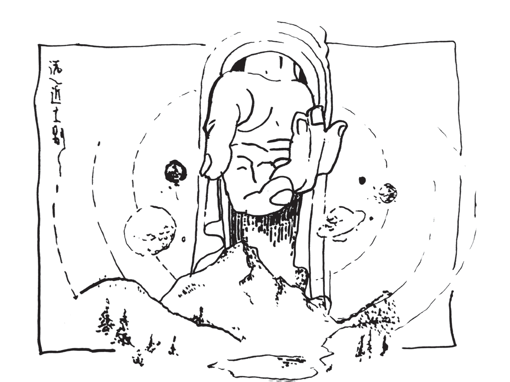
意識層面上難勝地的菩薩比焰慧地的菩薩少一個妄想，還要消掉一部分業，在神通方面比焰慧地更加強大。何爲菩薩的平等清淨心，和阿羅漢的平等心有什麼區別？阿羅漢可以分別認識A 和B，知道A 和B 的區別，但不執着。高級阿羅漢的意識裏A 和B 的區別消失，變成A 和A，但個體認知還在。阿羅漢只是不執着而已，這叫平等心。難勝地的菩薩叫平等清淨心，菩薩已經悟到了諸法的根本元素是妄想的真理，一切事物與心念都由妄想和合而成，好比雲、冰、水都是水分子和合而成。在妄想這個層面上世間一切一律平等，煩惱和智慧平等，持戒和犯戒平等，好比雲、冰、水在水分子層面上一律平等。
有了此番妙悟後的菩薩，可以自由讀取諸佛之記憶，可以用妄想和合成任何想要的事物或技藝。所謂：文字、算數、圖書、印璽；地、水、火、風，種種諸論，鹹所通達；又善方藥，療治諸病──顛狂、乾消、鬼魅、蠱毒，悉能除斷；文筆、贊詠、歌舞、伎樂、戲笑、談說，悉善其事。
從業的角度看，難勝地對應的是禪波羅蜜。此菩薩會繼續修行佈施、持戒、忍辱、精進波羅蜜的同時，會更專注於修禪波羅蜜，由此產生更高的方便智用以度人。對衆生的心態從發光地的哀憫心提升爲大悲心，拔苦叫大悲，菩薩不僅要消自己的業，還會幫助有緣衆生消業，消除苦惱。
第六地叫“現前地”，梵文譯爲“具色”。
《華嚴經·十地品》中說道，難勝地的菩薩觀察十平等法（一切法無相故平等，無體故平等，無生故平等，無滅故平等，本來清淨故平等，無戲論故平等，無取捨故平等，寂靜故平等，如幻、如夢、如影、如響、如水中月、如鏡中像、如焰、如化故平等，有、無不二故平等），菩薩如是觀一切法自性清淨，隨順無違，得入第六現前地，得明利隨順忍，未得無生法忍。
意識層面上現前地的菩薩比難勝地的菩薩少一個妄想，還要消掉一部分業，在神通方面比難勝地更加強大。現前地的菩薩悟到的平等相比難勝地的平等清淨心更究竟，難勝地悟到的是妄想層面上諸法平等，而現前地悟到的是妄想背後有不生不滅的自性，諸法由自性升起，十二因緣法亦是如此。悟到自性恆常的真相，也叫佛智現前，雖然離成佛還有段距離，但看到了最終目的地，故稱現前地。
從業的角度看，現前地對應的是般若波羅蜜。此菩薩會繼續修行佈施、持戒、忍辱、精進、禪定波羅蜜的同時，會更專注於修般若波羅蜜。般若波羅蜜是什麼？在《道行般若經》中說道，空、無相、無願就是般若波羅蜜的相貌，空針對妄想，無相針對分別心，無願針對執着，以此進入佛之空智圓覺中。
現前地的菩薩會用更大的方便智度人，不止是幫助衆生消除苦惱，還會引導衆生進入佛法中，悟到一切唯心造，妄想本是空的道理。此菩薩已悟到妄想生於自性的真諦，傳法度人時用隨順衆生、循序漸進的方便法。修行法門上已經沒有任何障礙，百千三昧法門皆悉現前，針對各種根器的衆生給出適合的法門。
第七地叫“遠行地”，梵文譯爲“難勝”。
《華嚴經·十地品》中說道，現前地的菩薩修十種方便慧起殊勝道（雖善修空、無相、無願三昧，而慈悲不捨衆生，雖得諸佛平等法，而樂常供養佛；雖入觀空智門，而勤集福德；雖遠離三界，而莊嚴三界；雖畢竟寂滅諸煩惱焰，而能爲一切衆生起滅貪、瞋、癡煩惱焰；雖知諸法如幻、如夢、如影、如響、如焰、如化、如水中月、如鏡中像、自性無二，而隨心作業無量差別；雖知一切國土猶如虛空，而能以清淨妙行莊嚴佛土；雖知諸佛法身本性無身，而以相好莊嚴其身；雖知諸佛音聲性空寂滅不可言說，而能隨一切衆生出種種差別清淨音聲；雖隨諸佛了知三世唯是一念，而隨衆生意解分別，以種種相、種種時、種種劫數而修諸行），就能進入遠行地。
意識層面上遠行地的菩薩比現前地的菩薩少一個妄想，還要消掉一部分業，在神通方面比現前地更加強大。遠行地的菩薩可以隨順任何佛之妄想，進入任何佛創造的世界，用各種方便度各類衆生。可以說，前六地的菩薩雖然也可以自由進入其他佛的世界，但解業的智慧稍有不足，因此專注於在自己所屬的世界中消業度人，但是遠行地開始已沒有任何限制。
從業的角度看，遠行地對應的是六波羅蜜外的第七波羅蜜，叫方便波羅蜜。此菩薩會勤修六波羅蜜的同時，更專注於修方便波羅蜜，也就是度人的能力，菩薩會去往不同的佛世界度人，和自己有緣的衆生在哪個世界就去哪個世界。
第八地叫“不動地”，梵文譯爲“生緣”。
《華嚴經·十地品》中說道，遠行地的菩薩得無生法忍便能進入不動地。
意識層面上不動地的菩薩比遠行地的菩薩少一個妄想，還要消掉一部分業，在神通方面比現前地更加強大。八地菩薩的神通與前七地稍微不同。佛的神通叫“漏盡通”也可以叫“本知”，什麼叫“本知”？顧名思義，就是本來就知道，佛知道無數衆生自性中的一切妄想，不起任何妄想的情況下本來就知道。八地菩薩的神通會從“欲知而知”向佛的“本知”靠攏。八地菩薩在不起任何念頭的情況下，就可以知道念其名字的所有衆生的情況，他能感知到法界中所有念其名字的衆生。但是感知不到不念其名字的衆生，對於不念其名字的衆生，八地菩薩也需要升起想知道的念頭才能感知。這叫不動地，不起念頭、不動妄想就能知道念其名字的衆生。
不動地的菩薩已經消掉了絕大部分業，也就是說絕大部分與其有緣的衆生都已解脫，只剩少部分善緣衆生未解脫，但他們的執着心已不再對菩薩造成影響，菩薩可以一直處在清淨狀態。什麼叫無生法忍，凡夫的忍叫生忍，阿羅漢的忍叫法忍，無生忍和無法忍拼在一起叫無生法忍，是不動地以上的菩薩所處的清淨狀態。不動地的菩薩只要自己願意就可以什麼都不做，一直處在清淨狀態，但菩薩與佛同願，誓度一切有緣衆生，菩薩會以大願爲發心持續度衆生。
從業的角度看，不動地對應的是第八波羅蜜——願波羅蜜。菩薩會勤修前七個波羅蜜的同時會以大願持續度人，會分身無數去往任何有緣衆生所在的世界，方便示現任何形象，以各種善巧方便引導衆生走向解脫。
第九地叫“善慧地”，梵文譯爲“王子位”。
《華嚴經·十地品》中說道，不動地的菩薩隨佛傳法，不捨大悲本願力，便能進入善慧地。
意識層面上善慧地的菩薩比不動地的菩薩少一個妄想，還要消掉一部分業，在神通方面比不動地更加強大。這裏的慧特指菩薩的慧，與凡夫的慧不一樣。凡夫的慧叫知人之智，可以洞察人性，準確預判他人的決策，就可以稱爲智者。如果是修行人，修出他心通，能讀出他人的心思或者修到四禪，得妙觀察智（參考《坐禪1》），這都叫凡夫的智慧。與此不同，菩薩的智慧是解業的智慧，就是指導他人消業的智慧。
從菩薩的視角看，衆生的業全部糾纏在一起，形成巨大的業網，像一團亂麻一樣錯綜複雜，每個人的業都是亂麻中的一根線，菩薩自己的業也在其中，菩薩面對一團亂麻般的業，可以靠推理推演快速找到破解口。
所謂的消業就是把自己的那根線從亂麻中一點點抽出來，消業指導就是幫助別人，把他的線從亂麻中抽離。消業看似簡單，卻有很大的風險，一不小心，消業不成還會造新的業。指導別人消業更難，千萬不要以爲消業指導只是站在外面用口頭指示就能完成，很多時候都要躬身入局，和被指導人結新緣或者結更深的緣纔行。也就是說，你要幫別人把線從亂麻中抽出，就需要放進自己的線，和被助者的線綁到一起，然後再牽着它走巧妙的路線，才能完整地抽離出來。如果失敗，不但幫不到別人，很有可能自己的線被綁得更緊，甚至迷失在亂麻中。這種破解業的智慧叫善慧，是菩薩的智慧。
《華嚴經·十地品》中說道，善慧地的菩薩會得到四無礙智，分別是法無礙智、義無礙智、辭無礙智、樂說無礙智。說的都是傳法度人的智慧。
從業的角度看，善慧地對應的是第九波羅蜜——力波羅蜜。菩薩會勤修前八個波羅蜜之外，會着重修力波羅蜜，傳法度人的能力比之不動地更進一步提升。
第十地叫“法雲地”，梵文譯爲“灌頂位”。
《華嚴經·十地品》中說道：“佛子！菩薩摩訶薩從初地乃至第九地，以如是無量智慧觀察覺了已，善思惟修習，善滿足白法，集無邊助道法，增長大福德智慧，廣行大悲，知世界差別，入衆生界稠林，入如來所行處，隨順如來寂滅行，常觀察如來力、無所畏、不共佛法，名爲：得一切種智、一切智受職位。”這一段的意思是，善慧地的菩薩要不斷提升傳法度人的能力，上求佛道，下化衆生，最終會進入法雲地，得一切種智。
意識層面上法雲地的菩薩比善慧地的菩薩少一個妄想，只剩兩個妄想，還要消掉一部分業，在神通方面比善慧地更加強大。“法雲”這比喻相當形象，菩薩傳法度人的智慧已經覆蓋法界所有衆生，就像雲可以遮蓋一切一樣。法雲地也叫受職地，可以成爲佛的左右侍者，幫助佛維持世界和傳法度人。
《華嚴經》裏說，菩薩的雙腳放出的光明，可以普照十方諸大地獄，滅衆生苦。雙膝放出的光明，可以普照十方諸畜生趣，滅衆生苦。以此延伸，菩薩的光明普照六道，普照阿羅漢界、菩薩界，普照十方一切如來道場中的會衆。菩薩住於虛空中，發出的光明形成光明網，稱之爲熾燃光明。這一段的意思就是，法雲地的菩薩可以向一切有緣衆生提供全方位的加持力，也就是禪那狀態。《華嚴經》裏還專門提到法雲地菩薩的三昧，叫“一切佛國土體性”，若菩薩修此三昧，隨心所念，能於身中現恆河沙世界微塵數佛剎，復過此數，無量無邊。也就是說，菩薩的意識會與全法界融爲一體。
再往前看，初地菩薩的意識也可以覆蓋全法界，但是被所屬世界內的有緣衆生所牽引，更多地覆蓋所屬世界和有緣衆生所在的世界。到了第七地遠行地，所屬世界內有緣衆生的牽引力較少，菩薩的意識更自然地覆蓋全法界。到了第八地不動地，菩薩不起唸的情況下可以感知到念自己名字的一切衆生，可以說，意識從覆蓋全法界轉向與法界融合。到了第十地法雲地，菩薩的意識與全法界融爲一體。
從業的角度看，法雲地對應的是第十波羅蜜——智波羅蜜。菩薩會勤修前九個波羅蜜之外，會着重修智波羅蜜，傳法度人的能力接近完美。這裏的智波羅蜜和第六地現前地的般若波羅蜜有所差別。般若波羅蜜也是度人的智慧，但是更趨向於個體，是微觀態的度人，而法雲地的智趨向於宏觀態的度人，可以同時考慮無量衆生之業和根器，進行宏觀傳法。
再看菩薩的十波羅蜜，分別對應菩薩的十地，依次是：佈施、持戒、忍辱、精進、禪定、智慧、方便、願、力、智。這裏除了禪定之外九個波羅蜜都與業相關，就是度人。
第十一地叫“等覺地”，梵文釋義是“真正的覺悟”。
等覺菩薩只有一個妄想，如果這個妄想與某段業有關聯，那需要先把這段業消掉，再把有緣衆生度成阿羅漢，自己就可以成佛了。因此叫“一生補處”，只需投胎一次就能補佛位的意思。如果沒有業，自性中的妄想可以自由升起，也就是說，佛可以自由切換等覺菩薩和佛的狀態。
等覺菩薩可以創造一個世界，一對搭檔一起出去創造一個新世界，把自己的弟子們和有緣衆生帶進新世界進行教化。一個人控制世界的時候，另一個人投胎入世，帶着報身消業和度人，二人交替投胎，最後雙雙成佛。從凡夫視角看，等覺菩薩和佛沒有區別，都可以創造世界、控制世界，只是等覺菩薩比佛多了一個妄想，把這個妄想滅掉就叫妙覺，也就是佛。
以上是菩薩妄想境界。
這一節主要講分別心。先複習一下：有、無有和無，這三個分別心的三重境界。
（1）“有分別”：同時有個體認知和個體差異的時候叫“有分別”。
（2）“無有分別”：有個體認知，卻沒有個體差異，這叫“無有分別”。
（3）“無分別”：沒有個體認知，也沒有個體差異，這叫“無分別”。
舉例：
“有分別”的境界——A 不等於B。知道A 和B 是獨立的個體，這叫有個體認知，知道A 和B 有不同之處，這叫有個體差異。
“無有分別”的境界——A 等於B，或者把B 變成了A，A 等於A。知道衆多的A 都是獨立的個體，這叫有個體認知，知道衆多的A 都一模一樣，沒有區別，這叫無個體差異。
“無分別”的境界，所有A 彙集成一個羣體。沒有個體認知，更沒有個體差異。
“四相”——《金剛經》裏反覆出現“四相”，但凡佛經裏出現“相”這個字，我們就要想到，這是在講分別心。
相是什麼？把兩個物分別開來認知的時候就叫“相”。比如說手，我有兩隻手，我把兩隻手分開來認知，一個叫左手，一個叫右手，這個時候可以稱之爲“左手相”和“右手相”。把它合在一起就是手，在這裏再加一個“相”字，變成“手相”，這個“相”必須和其他物區分之後才能存在。那我們就加一個“腳相”，與“手相”對立區分。
手和腳都屬於四肢，把它合起來，合稱四肢。四肢之上再加一個“相”字，叫“四肢相”，這個“四肢相”又要和其他某個物區別開來才能存在，與之對立區分的有“軀幹相”“頭相”。再把頭、軀幹、四肢拼成一個人，一個男人。在男人之上再加一個“相”字，叫“男人相”，那“男人相”又要和別的物相區別開來，與之對立區分的有“女人相”。
再把男人和女人合稱爲人類，這上面再加一個“相”字，叫“人類相”，那就要和其他的物區別開來，“畜生相”“餓鬼相”“地獄道衆生相”“天人相”“阿修羅相”這樣對立區分。以此類推。
“相”指的是有了分別心之後產生的區別認知，屬於意識層面上的觀念。
下面纔是重點——九種分別心。
“同人我分別”：當擁有十一層妄想的初地菩薩，忽然間感知到非己妄的存在時，第一個分別心——“同人我分別”產生，從此墮落爲阿羅漢。在這裏只有個體認知，沒有個體差異，也就是說，在阿羅漢的意識裏，自己的妄想（己妄）和不是自己的妄想（非己妄）是獨立的個體，但完全一樣，所以稱爲“同人我分別”。
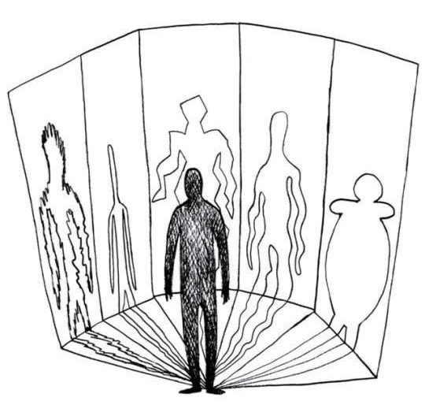
“異人我分別”：在“同人我分別”的基礎上，阿羅漢會認識到自己的妄想（己妄）和不是自己的妄想（非己妄）不一樣，兩者之間有什麼不同呢？在“同人我分別”的境界裏，我在打妄想，別人也在打妄想，我知道我和你都在打妄想，我們的妄想沒有區別。到了“異人我分別”的境界裏，我知道了非己妄的存在之後，試圖去觀察這個非己妄，這個觀察的舉動本身也是妄想，但是一旦觀察，我就成了主體觀察者，非己妄就成了客體被觀察者。觀察者與被觀察者自然產生區別，這個區別也是自己意識裏的認知，阿羅漢會把這個區別認知爲己妄與非己妄之間的個體差異，這叫“異人我分別”。
“同衆生分別”：在“異人我分別”的基礎上，阿羅漢會持續觀察非己妄，就會發現這個非己妄並不是一個，非己妄會分拆成無數個妄想，但都一樣。但是阿羅漢作爲觀察者，所有的非己妄和己妄有區別。分拆成無數個的非己妄，稱之爲衆生之妄想，他們之間沒有區別，這叫“同衆生分別”。在這裏阿羅漢對於衆生的妄想有個體認知，卻沒有個體差異。
“異衆生分別”：在“同衆生分別”的基礎上，阿羅漢會持續觀察衆生之妄想，就會發現每一個衆生的妄想都不一樣。在阿羅漢的意識裏，對於衆生之妄想，既有個體認知，又產生個體差異，這叫“異衆生分別”。
以上是衆生系的四個分別心：同人我分別，異人我分別，同衆生分別，異衆生分別。
接下來是空間分別，這個空間分別並不是所有衆生系的分別心全部出現之後出現，只是爲了方便理解，把三種空間分別放到一起來講述。
“內外分別”：在空間上，阿羅漢會認爲自己的妄想佔據了一定的空間，叫“內空間”，自己未能佔據的空間叫“外空間”，對空間的認知根據妄想而產生，外空間就是非己妄佔據的空間，這叫“內外分別”。在“內外分別”的境界裏沒有同和異的區別，因爲空間在本質上沒有區別。比如說，我站在這裏，我的身體佔據了一定的空間，我向旁邊挪一下，我本來佔着的空間和外邊的空間就會融爲一體，它們本質上沒有區別，只是我佔據的空間暫時被我的身體填滿，並沒有發生本質上的變化，現在我挪到另一個空間，我佔據的新空間又被我的身體所填滿。這叫“內外分別”。在“內外分別”的境界裏，只有個體認知，沒有個體差異。
“同十方分別”：在“內外分別”的基礎上，把外空間分拆成多個方位，對空間的認知根據妄想而產生，很多衆生之妄想分別佔據着不同的空間。這個時候，阿羅漢的認知裏，所有衆生的妄想都一樣，所以他們所佔據的空間雖然方位不同，但本質上一樣，這叫“同十方分別”。在“同十方分別”的境界裏，有個體認知，但沒有個體差異。
“異十方分別”：在“同十方分別”的基礎上，阿羅漢的認知裏，本來同樣的外空間各方位和位置，會出現個體差異，因爲阿羅漢對衆生產生了個體差異的認知，認爲不同的衆生佔據着不同的空間，這叫“異十方分別”。在“異十方分別”的境界裏，阿羅漢對外空間的不同位置有個體認知，同時也有個體差異。在佛經裏，四面八方加上上下兩個方向就叫十方。實際上，“十方”只是形象化的比喻，是所有方位的統稱。
一切唯心造，只有意識，沒有物，也沒有空間。空間分別也是自性中產生的妄想，是根據認知到的其他衆生的妄想而顯現，如果對其他衆生的妄想沒有認知，也就沒有空間分別。爲了方便大家理解，我把三個空間分別放到一起來講，但其實它們與前面四個衆生系的分別心聯繫在一起。
接下來講兩個時間系的分別心。時間分別心和衆生系、空間系分別心不同。衆生系與空間系的分別心都是從非己妄的認知上開始，而時間系分別心是從己妄的認知上開始，有“同先後分別”與“異先後分別”兩種境界。
“同先後分別”：當阿羅漢持續打妄想的時候，比如說，一、一、一、一、一，持續地冒出“一”，此時阿羅漢的意識裏會出現新的認知，他會認爲這個“一”是曾經打過的妄想，這個“曾經”就是我們所說的時間觀念。“一”是同樣的“一”，只是阿羅漢會認爲這個“一”是曾經的妄想，另一個“一”是當下的妄想，這叫“同先後分別”。在“同先後分別”的境界裏，阿羅漢會把過去的妄想和現在的妄想區別開來認知，因此有個體認知，但是兩者之間沒有個體差異。在這個境界裏，如果阿羅漢觀察其他衆生之妄想，他會發現衆生之妄想並沒有變化，因爲阿羅漢在用不變的妄想（沒有個體差異）認知衆生之妄想。所以這個境界的阿羅漢知道時間在流逝，但世間一切都不變化，一直保持着固定的狀態。用我們凡夫的智慧很難理解這種境界，我們看到的世界一直在變化，因爲我們是在用變化的妄想來感知這個世界。
“異先後分別”：在“同先後分別”的基礎上，阿羅漢會認知到當下的妄想和過去的妄想不一樣，這叫個體差異。阿羅漢在持續打妄想，當下的妄想消失，新的妄想出現，消失的妄想會成爲記憶，隨着不斷地打妄想，會有越來越多的妄想成爲記憶，記憶的量會越來越多，我們可以稱它爲記憶包，這個記憶包和當下的妄想明顯有區別，因爲記憶包是無數過去妄想的總和，這叫“異先後分別”。在“異先後分別”的境界裏，阿羅漢自己的妄想既有個體認知，也有個體差異。在這個境界裏，如果阿羅漢觀察其他衆生之妄想，他會發現其他衆生之妄想在不斷變化，因爲阿羅漢在用不斷變化的妄想（有個體差異）認知衆生之妄想。所以這個境界的阿羅漢知道時間在流逝，同時也知道世間一切都在變化。
那麼記憶是什麼？記憶本質上是妄想的回溯，記憶本身不會成爲負擔，但是在需要的時候會隨時回溯。比如說，我們學過數學公式，這個妄想早已過去，我們不會時刻想着數學公式，但當我們遇到數學題的時候，會瞬間回溯以前學過的所有數學公式，再進行運算給出答案。在佛的境界裏，自性當中沒有任何妄想，但是佛可以回溯所有曾經做過的妄想，記憶並不是以妄想的狀態一直存在，而只是在需要的時候進行回溯，所以說記憶本身不會成爲負擔。阿羅漢對記憶的認知與佛不同，阿羅漢是以妄想認知記憶，而佛對記憶沒有認知，只是回溯過去的妄想而已。在阿羅漢的境界裏，自性當中已經有了妄想，他要回溯過去的妄想，首先要停止當下的妄想，而阿羅漢當下所做的妄想不止一個，他不能停止所有的妄想（如果能停止一切妄想，那阿羅漢就不是阿羅漢，而是佛），只能停止部分妄想，再回溯過去的妄想，所以阿羅漢也只能部分回溯，不能全部回溯和任意回溯。因此阿羅漢的宿命通只能看前後五百世。
這個時間分別與前面的衆生分別、空間分別不同，有它的特殊性。因爲它是以記憶包作爲個體差異的一方，當下的妄想作爲另一方，隨着不斷地打新妄想，記憶包會越來越大，與當下妄想的差別也會越來越大，分別心就變得越來越重。
以上就是阿羅漢的九種分別心。
在“異先後分別”的境界裏，阿羅漢對記憶包和當下的妄想有個體認知，也知道有個體差異。如果阿羅漢滅掉對記憶包的認知，而用前一個妄想與當下的妄想進行對比，再滅掉對兩者個體差異的認知，也就是認爲自己一直在打同樣的妄想，那他會往上提高一個境界，進入“同先後分別”的境界。
還有另一種可能性，阿羅漢認知到自己在不斷地打妄想，記憶包不斷變大，阿羅漢想阻止這種狀況持續下去，此時阿羅漢以爲只要守住當下的妄想，不再起新的妄想，就能阻止記憶包的增大，雖然記憶包本身對自性不會產生負擔，但阿羅漢的認知當中有記憶包這個概念。當阿羅漢的意識裏出現守住當下妄想的執念時，就會產生分段生死，從此跌落爲凡夫。
“守住當下妄想的執念”是第一個執着，也可以叫“對妄想本身的執着”，當它剛剛出現的時候阿羅漢還是阿羅漢，但是阿羅漢無法阻止當下妄想的消失和新妄想的出現，當下的妄想消失之時，阿羅漢從阿羅漢的世界裏消失，當新妄想出現時，阿羅漢成爲凡夫，出現在非想非非想處天。
爲什麼叫“分段生死”？先有不間斷的妄想，後有“守住當下妄想的執念”，但這個執念無法阻止當下妄想的消失和新妄想的出現，只是對溪流般連續不斷的妄想上插入了標記，分成了段，凡夫要守住這一段的妄想，當這一段的妄想消失之時凡夫會體驗到死亡，新的妄想產生之時凡夫會體驗到新生，而“守住當下妄想的執念”又開始起作用，要守住新一段的妄想。從此循環往復，生死相繼，這叫“分段生死”，也叫“生死輪迴”。
四相：是我相、人相、衆生相、壽者相的合稱。
當“同人我分別”產生之時，我相與人相同時出現。
當“同衆生分別”產生之時，衆生相出現。
當“分段生死”產生之時，壽者相出現。
在《坐禪1》中，我說菩薩有我相，在此更正，菩薩沒有我相。初地菩薩產生分別心之後，我相和人相同時產生，是把己妄和非己妄分別認知的結果。
在此爲上一次傳法時的不嚴謹，向所有讀者道歉。
關於凡夫的執着心部分，請閱讀《坐禪1》第一章第1~3節，此處不再贅述。
這一節講六根的根源。
這裏我只講意識層面上我們能體驗到的部分，我們難以感受到的分別心、四禪天和四空定的執着部分就先放下，從我們能夠體驗到的情緒開始。我們已經知道，情緒的發展過程大概如下：疑情、思情→不安→焦躁→歡喜心（幸福感）→擔憂→恐懼→傷心→憤怒→羨慕嫉妒恨。
在這裏，焦躁與歡喜心之間會出現慾望！什麼是慾望？當苦情加重到一定程度，我們就會產生擺脫苦情的訴求，這也是執着，這種執着心我們稱之爲慾望。這個慾望和情緒一樣，都是從膻中升起。所以在我們的感受中，情緒和慾望是一體的，但是有先後順序，先有苦情，後有擺脫苦情的慾望。
還有，當我們體驗過喜情、歡喜心、幸福感、快感等，這類好的情緒之後，我們又會出現對喜情的訴求，我們希望多多體驗喜情，這也是慾望。以上是我們能夠感受到的兩種慾望：擺脫苦情的慾望和獲得喜情的慾望。有了慾望之後，人就會開始動，但不是直接動，要先確定動的方向，選擇一個方向，放棄其他方向，這叫注意力，注意力會在外面投射成一個引力點，這叫看！有了看這種行爲，注意力會在體內凝結成用來看的器官，這叫眼根。產生眼根之後，意識當中會出現針對於眼根的思考能力。什麼是“針對於眼根的思考能力”？我們閉上眼睛，在腦海裏畫畫，這個畫都是根據眼根觀察外界獲得的信息加工而成，哪怕在腦海裏想象現實裏不存在的事物，那也是根據以往的觀察加以想象而成。這種在腦海裏畫畫的能力就叫“針對於眼根的思考能力”。有了眼根和眼根思考能力，後面會出現其他五根和與其對應的思考能力。比如說音樂家貝多芬，他可以在腦海裏寫譜子，貝多芬的很多名曲是在他失聰之後創作的，這叫耳根思考能力。有一些廚師，他可以在腦海裏想象出各種食物的味道，腦海裏進行混合，進行烹飪，想象着最後會做出什麼樣的成品，然後實際操作，開發出新的菜品。這叫舌根思考能力。有些人鼻根非常敏感，他可以在腦海裏混合各種香料，想象出新的配方，然後再試驗，做出新的香料香水。還有那位發明交流電的尼古拉·特斯拉，據說他可以在腦海裏做各種實驗，拿出來的就是完成品，這就叫思考。
要知道，這六根和六根思考能力，還需要注意力驅動。這個注意力是駕駛員，六根加六種思考能力，總共十二臺機器，一個駕駛員使用十二臺機器，駕駛員可以同時操控幾臺機器，也可以只操控一臺機器。比如說我喫飯，那我的注意力就要操控身根來咀嚼食物，同時品嚐味道，還要看着飯桌和飯碗，注意力要同時操控舌根、身根和眼根。
我打遊戲的時候，注意力要操控我的眼根看着屏幕；操控我的耳根聽着遊戲的聲音；操控我的手去操作遊戲手柄或鍵盤。這樣同時操控三個根。還要思考，打遊戲很費腦子，要選目標制定計劃，或者按照攻略打，腦子裏還要想象着達到目標時的畫面，也是在用眼根思考能力，如此注意力要同時用在多個地方。
我們有了注意力、六根和六根思考能力之後，再往下就是淫慾和文字妄想，行淫也是注意力同時操控多個根器和六根思考能力的過程。
我們打坐修行時候，尤其是要進入初禪，首先要控制這個注意力，不讓它同時操控多臺機器。初禪要暫時熄滅下三根（身根觸覺、味覺、嗅覺），和與之對應的思考能力，那麼我們就不能把注意力放到這三根上，而是要放到上三根或者情緒上，這樣才能暫時熄滅下三根和與之對應的思考能力。例如觀佛法門，在腦子裏畫畫，畫阿彌陀佛的像，專注地畫畫，想象阿彌陀佛站在前方。如果把注意力放到身根上，比如觀呼吸、觀丹田，那身根這臺機器無法捨棄，也就無法進入初禪境界。
六根和與之對應的思考能力，就像十二臺汽車一樣，用注意力驅動它的時候它就跑，不用它的時候並不會消失，而是一直停留在車庫裏。它們的存在本身就是五陰（色、受、想、行、識）中的受和想，也會帶來負擔，所以佛說五陰熾盛也是苦。
我們打坐修禪是練習長時間不使用六根和與之對應的思考能力，滅除對它們的執着心，到最後輕鬆把它們捨棄掉，就像脫掉舊衣服一樣，修禪定就是這個方向。
關於禪定的內容，先參考《坐禪1》第三章，在這裏做一點補充，以破除世面上錯誤的觀點。世面上能找到的，對禪定境界的分辨都是用個人的覺受來判斷，說初禪有喜樂，這種說法極大地誤導了很多修行人。不光是初禪，所有的禪定次第都不能用個人的覺受來判斷，必須用看得見的硬標準來判斷。在《圓覺經》裏，對凡夫、羅漢、菩薩、佛所悟到的境界用滅妄想、分別、執着的程度來分辨，根本不講個人覺受。
要進入初禪，首先要滅掉淫慾，這裏通過夢中考覈來判斷。下一步是雙盤時間基本上要達到4 個小時，在這個時間段裏，暫時熄滅下三根就能夠進入初禪。重點是暫時熄滅下三根，如果熄滅不了下三根，只是滅盡淫慾，那還是進不了初禪。如果能夠長時間處在熄滅下三根的狀態，就叫安住於初禪。
那麼二禪呢，要徹底滅掉淫慾和下三根，雙盤時間達到8小時，能夠暫時熄滅上三根，這叫安住於二禪。如果不能暫時熄滅上三根，只是滅掉淫慾和下三根，那還進不了二禪。注意，暫時熄滅和徹底滅掉不一樣。暫時熄滅是還沒有徹底滅掉的情況下，在打坐的時候暫時進入熄滅的狀態。那麼三禪呢，要徹底滅掉淫慾和六根，雙盤時間達到24 小時，能夠暫時熄滅大部分情緒，長時間抓着思情或者疑情不放，這叫安住於三禪。
四禪是徹底滅掉淫慾和六根，還有一切情緒，也就是疑情、思情都要破滅，處在沒有情緒的狀態，這叫安住於四禪。
再回到初禪，我們先理解一下原理。
身體層面上要超過雙盤4 小時，在超過3 小時的時候身體會第二次升級，男性會停止遺精，女性會停止月經，這一步是必須的，如果身體沒有做到這一步，那就沒有辦法煉精化氣，也就進不了初禪。
意識層面上，我們爲什麼認爲頭部是人的中心，是意識所藏之處？因爲我們的頭部有眼根、耳根、舌根、鼻根，共四根，頭上除了四根之外還有文字妄想和意根，就是六根思考能力，這樣頭部有六種執着。其他二根身根觸覺和身根冷暖覺遍及全身。人的中心點在膻中，情緒所藏之處。這樣我們能感受到的執着全部講到了。
我們要進入初禪，首先把文字妄想停掉，再停止思考，鼻根和舌根暫時熄滅，那頭部還剩眼根和耳根，六個執着中停止了四個。身根觸覺暫時熄滅，身上還有身根冷暖覺，膻中的情緒還在。
我們在正常情況下，頭上六個執着和膻中的情緒相比，頭上的六個執着佔的比重更大，所以我們認爲頭部是人的中心，但是我們進入初禪，把頭上的四個執着滅掉了，只剩眼根、耳根兩個，這個時候再和膻中的情緒相比，情緒的比重會變得更大，結果就是人的中心點移往膻中。
那麼進入初禪時的感覺如何呢？當人的中心移往膻中時，我們會感到意識往下沉，從頭開始下沉到膻中，會有明顯的意識下沉感，就是進入初禪的感覺。安住於初禪之後，因爲身根觸覺暫時熄滅，我們就會感覺不到身體的存在，所以也就感覺不到意識已經到了膻中。
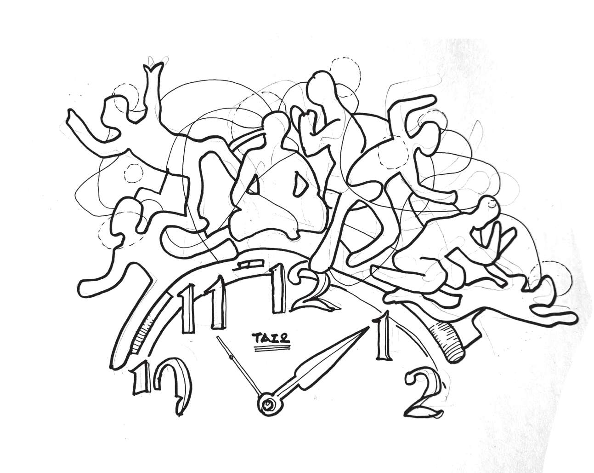
一般在進入初禪半年到一年前開始，我們有可能會在睡覺的時候，感覺到這種現象，要入睡時會感到意識在下沉，隨着呼吸一步一步地下沉，並不是一下子沉到底，會有下沉的過程，隨着幾次呼吸，意識會沉到底，然後有可能會進入一種幻境當中。
在這種狀態下，佛菩薩有時會給我們一些信息，但是大部分情況下都是沒有意義的幻境，是我們的妄想形成的幻覺，有可能在宇宙中飛，也有可能在大海中游泳，也有可能是非常漂亮的環境，也有可能是非常恐怖的環境，但是我們已經感受到了明顯的下沉感，所以我們知道這不是入睡後的夢境，而且我們會非常的清醒。
根據我們的修爲，在這種狀態裏停留的時間有所不同，修爲越高停留的時間越長。如果升起文字妄想或者注意力亂跳，馬上就會跳出來，這是初禪之前的感覺，不一定人人都會有。
真正的初禪是在打坐時進入，隨着呼吸，意識會有一次一次的下沉感，進入初禪境界之後，要是覺知到自己進入了某種狀態，從而升起文字妄想或者升起什麼情緒，就會從定中跳出來。所以一開始進入初禪都是非常短暫的幾秒鐘，要反覆訓練，逐漸延長時間。要說安住於初禪，那雙盤四個小時中，起碼有三個小時以上的時間停留在定中。
如果修的是觀呼吸的法門，那是在身根上用功，因爲身根觸覺無法熄滅，也就進不了初禪。但是會有類似的進入某種狀態的感覺，因爲他畢竟暫時熄滅了舌根和鼻根，還有停止文字妄想和思考，所以還是會有一種類似於進入的感覺，但並不是下沉的感覺，是有點類似於恍神的感覺，就那麼一愣神，就進入了沒有念頭的清淨狀態，但是妄想一起就會出來，很多人把這種感覺誤以爲是進入了初禪，但這不是真正的初禪，嚴格來說只能算是0.5 禪。
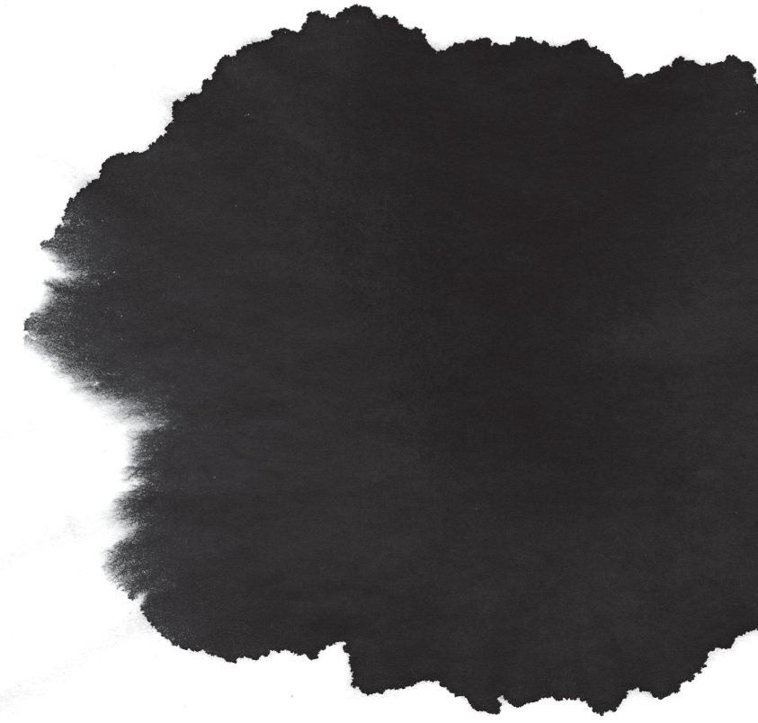
關於業我們首先要理解三點基礎知識。
①“諸佛同體”，所有衆生的自性重疊在一起。
②“妄想可數”，世間一切，包括業都是一個一個妄想和合而成，所以都是可數的，也就可以量化計算。
③業只能在凡夫的執着心上產生。只有妄想的菩薩、和有妄想與分別心的阿羅漢都無法造業，唯有跌落成凡夫，有了生死輪迴才能造業。
執着心分三個境界：
第一個叫見。在《金剛經》裏，佛陀講四相：我相、人相、衆生相、壽者相。後面還講我見、人見、衆生見、壽者見。這裏的見就是執着，是執着中最深層次的執着。那什麼是見？就是“我認爲”，是固定的認知，我認爲這個世界怎麼樣，我認爲人應該怎麼樣，我認爲自稱菩薩、羅漢再來的人都是魔，等等。那這個我見包括哪幾個天層呢？從四禪天開始，往上都是我見這個層面上的執着。我認爲這個宇宙有光和暗，我認爲虛空無邊無際（空無邊處天），我認爲我的意識無邊無際（識無邊處天），我認爲世界什麼都沒有（無所有處天），以上都是我認爲，就是我見。
第二個叫取。從三禪天有了情緒就會帶出慾望，有了慾望就叫我取。我取是什麼？就是我想要，是貪取心，是佔有慾。
第三個叫執。從初禪天開始，尤其是初禪第一天有了喫這種行爲，從這裏開始往下，可以稱爲我執。我執是什麼？可以理解爲控制慾。
舉個例子，第一，我見，我認爲女人應該漂亮，這叫我見。
第二，我取，我想要漂亮的女人，這叫我取。
第三，這個漂亮的女人必須愛我，她必須得服從於我，這叫我執。
這是見、取、執三個境界的變化。
現在理解了業的三個前提知識點：第一，諸佛同體，所有衆生的自性全部重疊在一起；第二，妄想可數；第三，執着分爲見、取、執三個境界。下面就可以理解業是什麼了。
業是什麼？有情緒的凡夫之間進行互動，相互之間有了情緒變化，這就叫業。在這裏，互動雙方必須都是凡夫，輪迴外的佛菩薩加持你，讓你產生歡喜心，這不叫業。互動雙方都是三禪天以下的衆生，有情緒和慾望，這樣才能互動，也會產生情緒變化。四禪天和無色界天的衆生沒有情緒和慾望，也就沒有互動的慾望，所以相互之間不會造業。
世間一切包括業都是妄想和合而成，既然妄想可數，那由妄想和合而成的業同樣可以量化計算，所以要計算業的量，首先要把業分解成四種執着。
比如說，甲殺害了乙，乙產生了恐懼、憤怒等不好的情緒，還有報復的慾望，慾望由情緒引發，也可以看作情緒，這些情緒起來之後，乙的報復心就可以分解成四種執着：
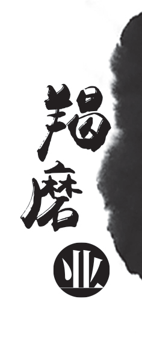
第一個執着，對這個世界存在的執着。乙要報復甲總得有一個場所，這個世界必須存在，這叫“對這個世界存在的執着”。
第二個執着，自己存在於世界的執着。乙的報身被殺，所以乙對自己報身的執着會更強烈，這叫“自己存在於這個世界的執着”。
第三個執着，報復對象存在於這個世界的執着。乙是被甲所殺，所以乙要向甲復仇，必須殺死甲纔可以，那復仇的前提條件是什麼？就是甲必須存在於這個世界，這叫“報復對像存在於這個世界的執着”。
第四個執着，乙對甲的報復行爲的執着。
在這裏，第一個執着和第二個執着是指向乙自身的執着，第三個執着和第四個執着是指向甲這個報復對象的執着。這個指向甲的執着，會讓甲在這個世界形成報身，但可能一個殺業不夠，甲要是殺了很多衆生，造了很多惡業，在諸佛同體的前提下，很多被害衆生指向甲的執着（甲存在於這個世界的執着，被害衆生對甲報復行爲的執着）會層層疊加，直接反映到甲的自性當中，讓甲形成報身進入輪迴世界，讓其無法解脫。
很多人質疑佛法的因果觀，現實裏的確存在作惡多端的惡人得到善終的實例。那爲什麼被害者的恐懼、憤怒和指向加害者的報復之心不馬上反映到加害者身上？因爲我們所有凡夫都執着於當下的命運當中，就是那個編劇菩薩給我們寫的命運劇本，我們此生的命運首先要執行這個劇本。所以當加害者執着於當下的命運劇本的時候，無法感受到被害者的痛苦情緒。
但是，在諸佛同體的前提下，被害者的憤怒和報復之心已經在加害者的自性當中形成痕跡。所以當加害者死亡之後，進入結算環節重新整理所有業時，編劇菩薩會把加害者一生所造的惡業全部放進業之書。在重新寫下一世命運劇本的時候，要不要把惡報放進去還得看編劇菩薩的安排，有一點肯定的是，這個惡報在未來某一世必然會出現，通常善報先來，惡報後來，行大善之人就算造一些小惡業，也要等善報基本享受完之後開始承受惡報。
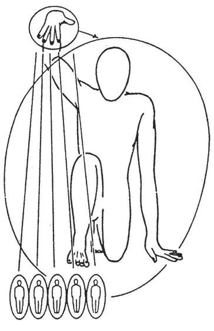
所有的執着都是妄想和合而成，妄想可數，所以執着也可以量化計算。我們傷害過的所有衆生，他們形成的、指向我們的壞情緒和報復之心會層層疊加，反映到我們的自性當中，這叫業障。在佛的境界裏，用佛眼看衆生，所有衆生的業障都是可數的，可以量化計算。以上是大乘佛法對業的終極解釋。
業由妄想和合而成，所以一個人無始以來所造的所有業也可以量化計算。一個人要成爲阿羅漢，其業的總量必須低於某個數值，這是硬性標準。
爲了方便大家理解，下面做簡單的設定。比如說，在我們的娑婆世界，一個人惡業的總量是10000 點，要成爲阿羅漢離開輪迴，惡業的總量必須低於2000 點，而每一世只能帶出10 點惡業來消。因爲壽命和肉身的承受力有限，100 年壽命裏最多隻能承受10點惡業，按以上設定，這個人要輪迴800世，才能消掉8000 點業，且每一世都要完整地消業才能成爲阿羅漢。
在這基礎之上，還要看每個世界佛菩薩的加持力。什麼是加持力？可以看作佛菩薩對衆生的美好祝願，加持力可以降低衆生起惡念的頻率和強度，給修行人提供助力，也會降低傳法難度。一些修爲高的凡夫修行者也可以給周圍人提供一定的加持力，接近這樣的人會心生歡喜，妄想減少，如果打坐修行，還能體驗一下更高的境界。佛菩薩的加持力自然比凡夫修行者強，所有靠修行證到果位的佛菩薩都有大菩提心，曾發願度和自己有緣的所有衆生，他們可以向有緣衆生提供持續性的加持力。
在這裏關鍵是有緣，只有在輪迴內互動過才能在對方的記憶中留下痕跡，相互之間成爲記憶中的衆生，纔算有緣。佛菩薩可以向自己記憶中的衆生提供持續性的加持力。作爲凡夫，哪怕現在想不起某個前世和佛菩薩互動過的記憶，也可以接受加持力，因爲阿賴耶識可以保存一切記憶。也就是說，提供加持力的人和接受加持力的人要互相知道對方的存在纔行，曾經互動過的記憶就是對方存在的證明，這叫互相有緣。
一名凡夫，在過去世與還未成佛時的某位佛在輪迴內有過互動，相互之間成爲有緣衆生，那就可以持續性地接受佛的加持力，不管信佛與否，當下修行與否都沒有關係。如果一名凡夫曾經沒有和佛互動過，與佛是無緣衆生，凡夫不知道佛的存在，那正常狀態下接受不到佛的加持力。一個與佛無緣的衆生想要接受佛的加持力，那就要靠唸佛、觀佛、思佛的方式與佛建立聯繫，在唸佛、觀佛、思佛的時候可以接受加持力，其他時間不可以。佛和八地以上的菩薩只要有人念其名字就會知道，不管是本世界還是他世界，佛菩薩都會聞聲提供加持力。以上是加持力的提供和接受的條件，都是在諸佛同體的大前提下才能成立。
下面講加持力傳遞的原理。
有甲佛和乙佛，兩個人在成佛前，曾在輪迴內互動過，所以相互之間是有緣衆生。現在兩個人都已成佛，都向自己記憶中的衆生提供加持力，甲佛給乙佛提供加持力，乙佛也給甲佛提供加持力，假設一個佛的加持力是1 點，那麼甲佛和乙佛互相給對方提供1 點加持力，同時接受1 點加持力。在這裏又來了一名丙佛，丙佛與乙佛有緣，互相提供加持力，但是丙佛與甲佛無緣，互相不能直接提供加持力，這個時候丙佛的加持力會先給到乙佛，再通過乙佛傳到甲佛，乙佛就成了傳遞加持力的中間人。
傳遞的百分比由中間人的境界來決定。佛是最高境界，自性中沒有任何妄想，所以像空心管子一樣可以100% 傳遞加持力。等覺菩薩有一個妄想，傳遞加持力的時候會有所減弱，可以傳遞99%，以此類推，境界越低傳遞的加持力會越少。
回到甲、乙、丙佛身上，甲佛向乙佛提供1 點加持力，同時得到乙佛的1 點加持力，丙佛的1 點加持力又通過乙佛傳遞給甲佛，所以甲佛得到2 點加持力。乙佛向甲佛和丙佛各自提供1 點加持力，佛沒有妄想、分別，可以向所有記憶中的衆生提供同樣的加持力，不會因爲接受加持力的人增加而分散減弱。同時乙佛得到甲佛和丙佛的加持力，共2點。至於丙佛，和甲佛一樣，向乙佛提供1 點加持力，同時得到乙佛的1 點加持力，甲佛的1 點加持力又通過乙佛傳遞給丙佛，所以丙佛得到2 點加持力。這樣甲、乙、丙三佛各自提供1 點加持力，同時得到的加持力都是2 點。
有一個凡夫叫丁，丁與丙佛有緣，是丙佛記憶中的衆生，可以直接得到丙佛的加持力，但是與甲佛、乙佛無緣，不能直接得到甲佛、乙佛的加持力，這個時候乙佛的加持力會先給到丙佛，丙佛充當中間人，通過丙佛傳遞給凡夫丁。甲佛的加持力會先給到乙佛，乙佛充當中間人，通過乙佛傳遞給丙佛，再把丙佛當作中間人，通過丙佛傳遞給凡夫丁。這樣凡夫丁會同時得到甲、乙、丙三佛的全部加持力，也就是3 點加持力。
以此類推，一個世界出現的佛越多，疊加的加持力就越強，根據每個世界出現的佛的數量不同，加持力的強度也不同。
回到阿羅漢的問題，要成爲阿羅漢，惡業的量要少於2000 點。我們所在的娑婆世界是新創造的世界，目前只有一名佛，也就是釋迦牟尼佛，他能提供1 點加持力，在這裏我們先忽略彌勒、文殊、普賢等其他等覺菩薩和普通菩薩們提供的加持力，只看佛的加持力。那在娑婆世界，惡業的量少於2001 點的時候就能成爲阿羅漢，而且還要和釋迦牟尼佛有過直接的互動，成爲釋迦牟尼佛記憶中的衆生，才能完整得到這1 點加持力。
如果去了極樂世界，作爲存在時間非常長的世界，已經出現了36 萬億多的佛，加持力的總量大得驚人。就算一個凡夫不能直接和現在住世的阿彌陀佛結緣，和阿彌陀佛的二代、三代、乃至四代、五代弟子結緣，他們都是菩薩，就算加持力在通過他們傳遞時有所減弱，傳到凡夫身上的量還是很巨大，以至於讓凡夫無法升起惡念，更造不了惡業，同時大幅度降低成爲阿羅漢的及格線，哪怕惡業量是10000 點，也可以在強大的加持力下持續修行，先專注於修心，成爲阿羅漢。
在極樂世界修到阿羅漢之後離開極樂世界，去其他世界傳法度人，在諸佛同體的前提下，36 萬億佛的加持力還是有效。如果是以報身形態，帶着業投胎到其他世界輪迴內消業和度人，極樂世界的加持力會被自己的妄想、分別、執着擋掉一部分，但源頭過於強大，對修行和消業的幫助還是非常巨大。還有，成爲阿羅漢之前要和人結成搭檔，以便在日後的修行和消業中互相指導和保護。其次，阿羅漢有編寫自己命運劇本的權力，在投胎前可以自己做規劃，選擇難度。
我們目前所處的地球文明裏，大乘佛法的傳播時間所剩無幾，想從現在開始修行，在這裏修成阿羅漢有點困難，不僅修行時間不夠，成爲阿羅漢的標準線也很高，所以我還是建議大家先去極樂世界，獲得極樂世界衆佛的加持力成爲阿羅漢之後，再做其他打算纔是明智的選擇。
在社會關係上，看一個衆生的歸屬世界有兩種分法。一種是根據有緣衆生的數量分佈來定，用百分比來計算，和你有緣的衆生當中，大部分衆生在哪個世界，你就歸屬於哪個世界。假設你和一萬名衆生有緣，其中八千名都在娑婆世界，那你就歸屬於娑婆世界。還有一種方法是看師承，在輪迴外的世界，只有成爲阿羅漢才承認其師承。把你教到阿羅漢的師父屬於哪個世界，你就屬於哪個世界，但這不影響修行和度人。
佛經裏說，佛給人授記，告訴他未來要見多少佛，度多少衆生，經過多少劫修行，最後會成佛，佛名是什麼，世界名是什麼。在這裏佛是怎麼推算一個衆生成佛需要的時間的呢？主要是用業的總量來推算，佛可以看到一個人無始以來所造的所有業，知道業的總量。其次是妄想、分別、執着的量。
不過這種推算是有前提的，只有一個人的業不再大量增加，開始減少的時候才能推算。那麼業減少的前提又是什麼呢？怎麼做才能讓自己的業不再大量增加？那就是發大菩提心，發願度和自己有緣的所有衆生，這就叫入諸佛之本心。不入諸佛之本心，一切修行都是盲修瞎練。不是以大菩提心修行的人，最終都是爲了自己，這個業大概率還是在增加。
所以，求大乘者首先把心態改變過來：發願普度衆生，爲衆生修行，不再有一切個人希求。從此修行人基本不再造惡業，慢慢消掉已有的業，讓業的總量開始減少，這個時候佛纔可以用漏盡通推算出消掉所有業所需的總時長。如果一個修行人沒有大菩提心，那就是爲個人慾望而活的人，當下的修行也是爲了滿足某種慾望，凡夫的慾望極其善變，很容易被各種境界所轉，造業和消業沒有定向，增減不定，佛也無法推算出消業所需的總時長。
至於妄想、分別、執着，同樣有了大菩提心纔會開始減少，否則都是用一種執着代替另一種執着，善行再多也是天人果報而已，與解脫無關。
因此佛只給有大菩提心的人授記，沒有大菩提心，佛不會授記。在《金剛經》裏，佛陀說自己沒有四相，燃燈佛纔給他授記，沒有四相就是菩薩，要成爲菩薩首先得發大菩提心，沒有大菩提心，成不了菩薩。嚴格的意義上講，我們凡夫發願也是用情緒帶出來的慾望所發，並不是不退轉的大願，只有修到四禪以上，沒有情緒的境界時發起的大願纔是真大願。但我們還是勸修行人發大願，對於凡夫來說，修行也是用慾望驅動，沒有起步更滅不了情緒和慾望。凡夫的慾望隨時會變，所以我們要求修行者反覆發願，不斷強化自己的願。
發了大菩提心的修行人，其命運劇本會被佛菩薩們保護，嚴格按照寫好的命運劇本走。修行方面會得到真正的加持和引導，需要理論就引導其遇到善知識或者應機的佛經，需要福報就指導其快速積攢福報的方法。命運劇本不受保護的普通人，人生當中很容易遇到各種劇本外的意外，大概率都是壞事。修行方面很容易被各種邪師所誘惑，因爲是爲滿足某種慾望而修行，不管是求財、求姻緣、求權力、求神通、求境界、求永生都會遇到相應的邪師邪法，讓其破財甚至傷身。
一個修行人發了大菩提心，修爲又達到三禪以上，佛菩薩就會指派一名投胎在人間的菩薩、羅漢來進行指導。這個再來人會以各種身份出現，有可能是師父，有可能是徒弟，有可能是好友，他會和凡夫修行人一起生活一段時間進行觀察，同時獲取凡夫修行者的信任，在觀察期間還會出考題。這些考題可不是簡單的問答，而是真實的事件，具體出什麼樣的考題由這個再來人來決定。如果一個修行人被佛菩薩認定有大菩提心，但未能通過再來人的考驗，再來人決定放棄，佛菩薩也會認可再來人的決策，不再幹預。畢竟再來人是在輪迴內用真實的事件進行考驗，而佛菩薩的觀察雖然準確，但凡夫善變，心中有願，可真遇到事的時候未必堅持初心。
那再來人會出的什麼樣的考題呢？
共分三大類，第一，戒行；第二，願力；第三，誠意。
①戒行：精嚴的戒行代表一個人有組織性、紀律性。一個修行者解脫生死，成爲阿羅漢之後就要投胎入世消業，度和自己有緣的衆生，還有可能參加大型的傳法活動，這就需要服從命令，按計劃行事。關於個人的消業和修行由搭檔指導，一旦投胎入世，在沒有找回記憶前很容易造新的業，這個時候就要聽搭檔的引導，不能自作主張，一對搭檔之間有辦法保持不間斷的聯繫。如果是參加大型的傳法活動，在裏面分得一些任務來執行，那就要嚴格按計劃行事，服從總指揮的命令。一個修行人對戒律不重視，戒行不嚴格，說明紀律性差，解脫之後再入輪迴之時，很容易脫線，不聽搭檔的引導，也不服從總指揮的命令，這樣大概率會重新墮入輪迴，甚至會打亂整個傳法活動。因此，再來人對凡夫修行者出考題的時候，對戒行的考驗相當嚴格，一些小的戒律可以稍微放寬，但根本大戒必須遵守。
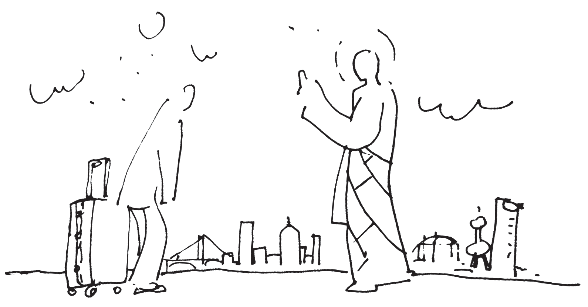
②願力：關於願力，佛菩薩既然認可一名凡夫修行者發了大菩提心，那麼再來人給他出的考題就是執行力和耐心。再來人會引來一些愚鈍又懶散的人向這個修行者求法，甚至再來人自己扮演這樣的人，就看這個發願普度衆生的修行者能不能以平常心認真指導。培養根器不好的人需要極大的耐心，有些修行者的確發了大菩提心，但遇到這類愚鈍的求法者，就無法堅持初心，找各種理由拒絕指導。傳法度人本來就不是簡單的事，菩薩爲度一個人，可以多次投胎到人間，與其結緣，傳授佛法，助其消業。菩薩的意識裏沒有放棄這個選項，也沒有不耐煩等不好的情緒，會一直教到凡夫解脫爲止。因此，再來人會出一些考驗耐心的考題，來確認凡夫修行者的大願有多堅定。
③誠意：這一項考驗的是修行者求法的誠心，修行中真正的障礙並不是冤親債主這類外部因素，而是內心的我慢和懈怠。很多修行人越修我慢心越重，甚至明知道對方的修爲遠在自己之上的情況下，也不願低下傲慢的頭顱，不肯虛心求法。再來人有時候會以晚輩甚至是弟子的身份接近凡夫修行者，在一起生活的過程中，逐漸顯示出他的修爲，看看凡夫修行者會不會虛心求教。
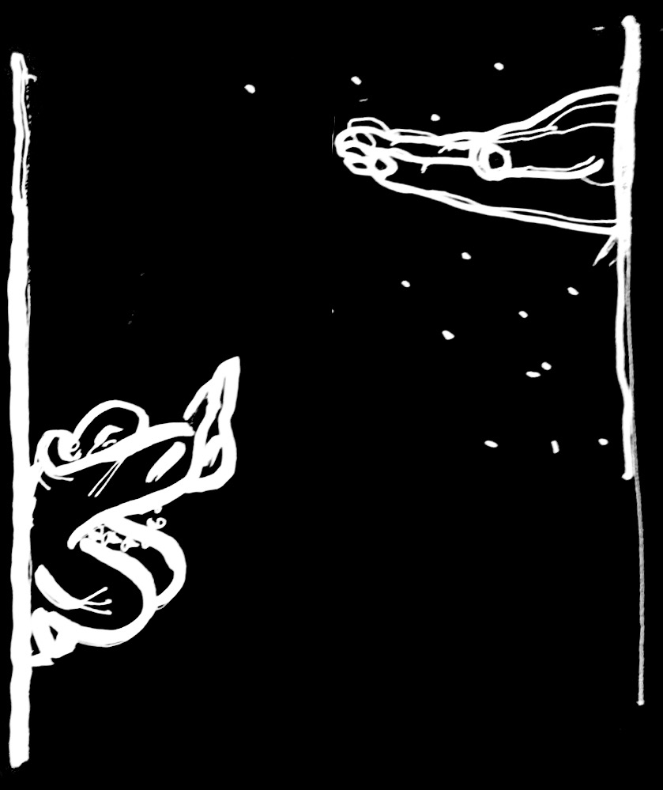
凡夫修行者如果順利通過以上考驗，再來人就會用以心傳心的方法，傳授四禪以上直到阿羅漢的修法。
業可以分解成四個不同的執着，讓自己和有緣人無法離開輪迴，前面舉的例子都是回合制遊戲般簡單的例子，其實業的複雜性超乎凡人所想，越多的人蔘與，業的糾纏程度就越複雜，凡夫靠自己根本解不了。
舉一個公案爲例：
山上有座廟，廟裏有一個老和尚帶着一個小和尚修行。有一天，老和尚叫小和尚去後山打死一隻山貓，小和尚便拿着棍子出了後門。出門時還想：“後山那麼大，去哪裏找山貓，逛一逛就回去，師父問就回答沒找到，師父又奈我如何。”可沒走多遠，山道旁就發現了一隻山貓，山貓也不躲。小和尚想打又下不了手，就那麼猶豫了一會兒便回去了，回來之後也沒跟師父說。
第二天，師父又叫他去殺山貓，問他爲什麼到現在還沒打死它。小和尚沒有辦法，又拿着棍子去找山貓，在昨天的那個位置看到山貓，山貓還是不躲。小和尚就向山貓道個歉，一棍子下去把它打死了。
看到山貓屍體，小和尚心中五味雜陳，悲傷、好奇、後悔、自責等各種情緒翻湧而出，一路跑回去質問師父，爲什麼讓他打死那隻山貓？師父說，去看看山下小村子裏，是不是有個婦人剛剛生孩子。這小和尚跑去看，果然村裏有個婦人剛生孩子。
師父說，婦人從昨天開始臨產，山貓是要到她那裏投胎的。你要是不及時送山貓去投胎，母子都有生命危險。
看這個故事，簡單總結一下，就是A 教唆B 打死C，在這裏誰是壞人，誰是被害者？這段故事應該是解業的部分，那業一開始時的因又是什麼樣的？是誰教唆誰殺害誰？
答案如下：因可能是B 教唆C 打死A，也有可能是C 教唆A 打死B，但要解這樣的業就需要走兩輪，三個人三個角色分別來一次，這才能完整地解這個業，那麼老和尚教唆小和尚打死山貓，這應該是第三輪，前面有一輪是因，中間還有一輪，之後纔是本故事的內容。這裏還有母親的業，這又是另一段業。所以業是非常複雜的系統，如果在這裏再放進一個人、再放進兩個人……，這個業會越來越複雜，凡夫的智慧根本理不清業的輪轉過程。
唯有登地的菩薩和佛才能看到衆生無始以來的所有業，凡夫如果沒有得到菩薩的消業指導，靠自己根本解不了多少業，單靠持戒、忍辱想修到阿羅漢都難。因爲業的複雜程度超乎想象，所以菩薩也有消業指導的專業性和熟練度上的差異。如果菩薩一看業就能給出破解之法，那就沒有熟練度可說，但因爲解業有難度，一段業中參與的衆生越多，破解的難度就越大。菩薩需要消掉自己的業，還要給有緣衆生做消業指導，都需要不斷地練習和積累經驗。菩薩的等級越高，經驗越豐富，能給出的破解之法成功率越高。
對於凡夫來說，只有遇到再來人，哪怕是遇到阿羅漢願意做消業指導，那他背後肯定有菩薩指導。這樣往下傳，把消業的方法告訴凡夫，就能成功地把一段業消掉。在大部分情況下，對於初學，我們只要求佈施、持戒、忍辱。也就是，多造善業來積攢福德功德（佈施），不再造惡業（持戒），當惡報來臨時坦然接受，不再報復（忍辱），做到以上就已經很好了。大部分複雜的業都推到成爲阿羅漢之後再消，但有時候還是需要消一些複雜的業才能成爲阿羅漢，這個時候就看能不能遇到再來人了。
我一再強調，學佛修行一定要往佛菩薩身上靠，不要往活人身上靠。就算遇不到活着的再來人，起碼先靠到佛菩薩身上。
想要得到佛菩薩加持，需要做到以下四點：
第一是大願，沒有大菩提心的人，都是爲自己的慾望而活的人，佛菩薩不加持這樣的人。對於剛開始修行的初學，佛菩薩爲了增強其信心，會滿足個人的一些小願望，但修行到一定程度之後，還在求個人福報或神通之類的人，佛菩薩基本上不會再提供幫助。
之後是戒行、善行、修行。做到這三點，堅持修行三五年，佛菩薩認可其修行，就開始保護其命運劇本，同時在修行者不經意間點撥一些業的解法。佛菩薩可能會用一些方便法進行引導，也可能直接託夢告知。在生活當中，可能當事人還未感受到的情況下，有些業就已經順利解開了。
所以，修行一定要往佛菩薩身上靠，不要仰仗活人，凡夫無法爲別人做消業指導，只有再來人才會，可我們用肉眼又看不出一個人是不是再來人。想引再來人出現，亮明自己的真實身份，並進行指導，需要同時滿足兩個條件，擁有大菩提心，同時修爲達到三禪以上。
再回到業的問題，在輪迴內輪轉的凡夫，靠自己是沒有辦法消大量的業。好比一個人進入雷場，遍地全是雷，這個人要做的不是躲雷，而是拆雷，因爲業是躲不掉的，只能一個一個拆除。能成功拆除一個，不一定能拆除第二個，成功拆除第二個，不一定能拆除第三個。只要有一個雷爆了人就死了，而且爆開的碎片個個都會形成新的雷，重新復活後要面對更多的雷，而且拆雷的難度還會提高。
凡夫看不到複雜的業網，反而無所畏懼，但從佛菩薩的視角看一個凡夫，他的業堆在一起，業的總量一排開，大概就能估算到消掉所有業需要多長時間。
佛不講業的一個原因是，初學知道業的真相反而會陷入絕望。在《法華經》裏，一切衆生喜見菩薩往自己身上抹各種香料，焚身供養如來，以這種方式來表達對佛的感激之情。爲什麼會有這般強烈的感激之情？就是因爲世尊傳授佛法、告知宇宙真相之外還要做消業指導。要度一個人很難，光是說服一個人信佛就很難，勸其修行更難，幫其消業難上加難，需要多次投胎到當事人身邊，循循善誘，不斷地傳授佛法指導修行，不斷地幫其消業，前前後後所費精力無法估量，甚至還要承受自己造業墮落的風險。
當一個人修成菩薩，可以回溯自己所有記憶時，就能看到自己的師尊爲自己所做的所有努力，累世的辛勤指導，甚至造業受報。菩薩對師尊的恩情無以報答，唯有焚身供養才能略表心意。
業必須是本人以報身形態進入輪迴才能解，報身只能有一個，不能分身多個同時消多個業。菩薩在法身境界顯化身時，才能分身無數，稱之爲萬身法相，但化身無法消業。在消業這件事上，每個人都是獨立完整的個體，不單是自己要投胎去承受業報，我們的冤親債主也要配合，所以每次投胎消的業都很有限。有些人因爲造了惡業，陽神被肢解，分散投胎成多個生命體，但消的業還是一個，不能算作同時消多個業。
消業指導也只有菩薩才能做，中間隔着阿羅漢也是背後的菩薩在傳授消業方法，這也是大乘佛法注重傳承的重要原因。先確定了師承關係，菩薩、羅漢纔會負責任地爲凡夫做消業指導。
用上述業的邏輯來推理，我們就能理解，這個世界爲什麼同一時間段只能出一個佛！
比如說，我們的娑婆世界現在是彌勒菩薩要成佛，假設彌勒菩薩有一段業要消，這個業是要和一個女人結婚過一輩子，只要消掉這段業彌勒菩薩就可以成佛。現在還有一位等覺菩薩也要成佛，也需要消一段業。這個業同樣也需要和這個女人過一輩子，那怎麼辦？彌勒菩薩和這位等覺菩薩不能同時投胎到女人身邊去爭搶這個女人吧。
這個時候就需要立規矩。這回是讓彌勒菩薩先成佛，讓他先去消業，其他人就得往後排。一旦立了規矩，彌勒菩薩就有了消業的優先權，其他菩薩們不能與之爭搶，所有和彌勒菩薩有業的衆生都會進入重點關照的名單裏，指導修行和消業方面，這些人也會獲得優先權。娑婆世界的所有編劇菩薩們，在編寫衆生命運劇本的時候，優先考慮彌勒菩薩的消業，在衆生的業網中，以彌勒菩薩爲中心開始往下排，彌勒菩薩是第一層，和他有直接業緣的衆生排成第二層，和第二層的衆生有直接業緣的衆生再排成第三層，這樣層層往下排，排成金字塔形狀。
有些衆生可能和彌勒菩薩還有業，但他的心性還沒達到和彌勒菩薩消業的程度，這個時候就要往他身上灌注更多的資源，先指導他消掉其他的業，指導他修行，提高心性，讓他達到和彌勒菩薩消業的程度。整個娑婆世界的傳法活動優先考慮彌勒菩薩的消業，與彌勒菩薩業緣近的人優先獲得資源，傳法實力高的菩薩們先去指導這類人。
既然在一個世界成佛需要排隊一個一個來，有些等覺菩薩不想等待，又不能爭搶消業的優先權或者插隊的情況下，就只有分家獨立的方法了。這樣成佛就有了兩種選擇，要麼在原來的世界等自己的順序，要麼分家獨立。目前在娑婆世界，釋迦牟尼佛已經成佛，現在輪到彌勒菩薩成佛，這兩個人是一對搭檔。等彌勒菩薩消完業成佛後，下一位估計是文殊、普賢這兩個等覺菩薩中的一位，他倆畢竟是排在第一第二位的大徒弟，後面的順序也應該有安排，只是佛經裏沒說而已。
在一個世界、一個時間段只能出一個佛的前提下，出佛的速度相當緩慢。所以我們鼓勵等覺菩薩們分家出去，等覺菩薩可以創造一個新的世界，把自己的直系弟子們全部帶走，再把和自己有緣的衆生帶進去度化。而且，一旦衆生分流，在分流期間相互無法造業。這就是分家的兩個核心理由。
繼承有繼承的好處和壞處，分家也有分家的好處和壞處。
那麼繼承怎麼說？在一個世界裏，一名等覺菩薩成爲下一個要成佛的人，我們可以稱他爲“未來佛”，那麼這個世界裏的所有其他菩薩、羅漢都歸其統轄，他們就要服從“未來佛”的命令，後面的傳法活動都是以“未來佛”的消業爲中心來安排。所以可用的人手非常充足，一個世界存在時間越長，菩薩的數量就越多，只要在原世界一直堅持，等排到自己的號，消業的時候也非常方便。因爲人手充足，各職業的人都有。
那麼排號是以什麼標準來排？沒有特殊情況下，都是以業的量來排，誰的業最少，誰就先成佛。有人以爲成佛也像人間的世襲制一樣，父傳子、子傳孫，那麼釋迦牟尼佛的大弟子是文殊菩薩，之後是文殊菩薩的大弟子，這樣排下去，彌勒菩薩、普賢菩薩就不知道什麼時候能排上了。彌勒菩薩實際上是釋迦牟尼佛的搭檔，佛經裏對彌勒菩薩的師承關係寫得非常模糊，因爲傳法早期佛不能講菩薩、羅漢們的搭檔體系，凡夫知道了就會用凡夫的執着心，像尋找配偶般尋找搭檔，這對修行沒有任何幫助，搭檔都是成爲阿羅漢之前，在師父指引下結成，並不是自己胡亂找的。
在《賢愚經》裏講到，佛姨母摩訶波闍波提親手織成一件金色袈裟欲供養佛，佛不接受，勸其供養給其他比丘，並說出供養僧衆的種種功德，佛姨母就把袈裟供養給其他比丘，但是誰都不敢收，當袈裟傳到彌勒菩薩面前時，彌勒菩薩毫不猶豫地接受下來。這個故事暗示彌勒菩薩是下一個成佛的人，同時也暗示彌勒菩薩與佛無二，和釋迦牟尼是平輩。
在一個世界剛剛建立的時候，都會快速出佛，誰的業少就讓誰先成佛，以便快速疊加佛的加持力，加持力越強，衆生起惡念的頻度和強度就越弱，傳法度人就越容易。這種快速出佛的時間段在佛經裏稱之爲賢劫。
如果一名等覺菩薩決定不等自己的順序，要分家出來成佛了，那肯定是一對搭檔商量好的結果。一對等覺菩薩離開的時候，只能帶走直系弟子和自己有緣的衆生。但問題是，和等覺菩薩有緣的衆生在業網當中和很多其他衆生有了業，就像拔出蘿蔔帶出泥一樣，只要把一個衆生扯出來，他就會帶出很多其他衆生。假設這個等覺菩薩只需再和十個衆生消業就可以成佛，他把這十個衆生從原世界拉出來，這十個衆生會帶出成千上萬的衆生，這些衆生又會帶出更多的衆生，這樣一直傳下去，業的糾纏程度稍微模糊的時候，才能完全分割衆生。
這個分割衆生是什麼意思？在業網當中，要成佛的一對等覺菩薩放到第一層，和這對等覺菩薩有直接業緣的衆生放到第二層，和第二層衆生有直接業緣的衆生放到第三層，依次排開，像金字塔一樣，層數越大，與第一層的一對等覺菩薩的業緣就越遠。同時在原世界也用同樣的方法排開衆生，大數字層的衆生和原世界佛的業緣也會非常遠。和這些大數字層的衆生有緣的衆生在原世界和新世界數量差不多的時候，就可以進行分割。在遙遠的未來，那些大數字層的衆生要成佛時，他們會發現和他們有緣的衆生分佈在不同的世界，需要去多個世界度人。
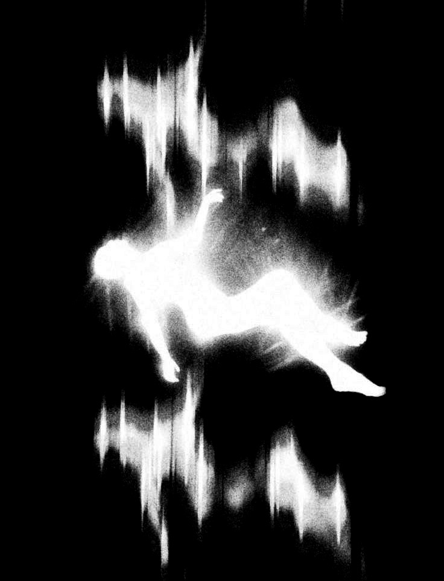
還有，等覺菩薩分家成佛的時候，不能帶走和原世界的未來佛有直接業緣的衆生，還有和這些衆生業緣近的衆生，如果帶走這些衆生，原世界的未來佛就成不了佛，所以分家成佛也要看能不能成功分割衆生。此外，傳法是團隊活動，一對要分家成佛的等覺菩薩也需要弟子們幫助傳法度人，所以這些弟子們也會帶出很多與他們有業緣的衆生，分割衆生的時候也要考慮弟子們的情況。等把衆生順利分割，一對等覺菩薩就可以帶着弟子們和有緣衆生離開原世界，創建一個新的世界，開始自己的消業和度人的旅程。在新創造的世界裏，等覺菩薩可以承受上一個世界諸佛的加持力，但是下面的人所能接收到的加持力會層層遞減，到阿羅漢開始又產生分別心，加持力會大大減弱，輪迴內的凡夫就基本上接收不到多大的加持力。所以，新創的世界就會出現地獄等下三途，這是衆生的惡劣程度不斷提高的結果，也是諸佛的加持力減弱甚至消失的結果。
總結一下，在原世界繼承成佛的好處是：第一，可以得到原世界所有菩薩、羅漢們的幫助，因此人手充足；第二，原世界存在的時間越長，佛就越多，有更強的加持力，傳法度人就會更容易。壞處是要排號等自己的順序，這期間還要幫其他等覺菩薩成佛，等待的時間可能很長，雖然等覺菩薩的境界裏沒有時間。
分家成佛的好處是不需要等待，可以直接開始自己的成佛任務。壞處是隻能帶走自己的直系弟子們，所以人手不夠。還有一點，新世界沒有佛，也就沒有疊加出來的加持力，開始時傳法度人很困難，還要看能不能成功分割衆生。
從全法界的情況考慮，分家成佛雖然難，但必須積極推動，因爲在一個世界依次成佛的速度非常緩慢，趕不上衆生墮落造業的速度，要讓所有衆生全部成佛，那成佛的速度必須超過衆生墮落的速度。其次，一個世界存在的時間越長，出的佛就越多，疊加出來的加持力就越大，導致裏面的衆生升不起惡念，也就造不了惡業。這種狀態也有它的負面效果，就是不能消業，只有能造惡業的世界才能消惡業。所以像極樂世界這樣的世界裏，有惡業的衆生不能消惡業，要消惡業就要去其他可以造惡業的世界消。因此，舊世界和新世界都有存在的必要性，對等覺菩薩來說，繼承成佛和分家成佛只是個人選擇而已，沒有強制性。
一對等覺菩薩創造新世界的初期階段，不單是人手不夠，而且弟子們傳法度人的經驗也不足。爲什麼釋迦牟尼佛要去極樂世界請傳法團隊？其目的就是請經驗豐富的傳法團隊過來，做一次示範性的傳法活動，作爲比較完美的傳法案例記錄下來，以便他的弟子們在未來的傳法活動中可以參考。
什麼是傳法經驗？單純的設計文明、設計國家等，這些劇本都可以直接拿走，它們都存在佛的記憶裏。諸佛同體，意識重疊的情況下，等覺菩薩隨時可以讀取其他世界佛的傳法記憶。但問題是，這個記憶中的劇本拿來之後，讓自己的弟子們下去執行，未必都能順利執行，主要是他們的傳法實力問題。
一個傳法團隊最能表現出實力的地方，就是打補丁的方法和能力，這纔是傳法團隊最有價值的地方。越是經驗豐富的傳法團隊，打補丁的方法就越多、越有效。而且，人都是活的，劇本一旦開始執行，不可能完全按照原劇本走，中間必然會出現各種紕漏。這個時候，要有設計師及時修改劇本打補丁，需要執行者如實地執行，讓這個劇本繼續向目標方向推進。這裏有一套完整的流程，需要長時間的磨合練習。
魔王是誰？佛經裏說，魔王波旬是他化自在天的天主，他化自在天也叫魔天，魔王和他的魔子魔孫們一直妨礙傳播正法，干擾修行人。
娑婆世界既然是釋迦牟尼佛和彌勒菩薩創造的，爲什麼還會有魔王？就是因爲釋迦牟尼佛自己的直系弟子們數量有限，不足以完全覆蓋整個世界，加上魔王波旬也有很大的福報。娑婆世界有10 億個小世界，那就有10 億個六慾天，包括他化自在天，裏邊就需要10億名他化自在天天主。佛創造新世界後，會讓直系弟子和功德福德足夠多的天人信衆去當各天天主，但是人數遠遠不足。這種情況下，很多天主崗位只能讓那些福報大卻不信佛的人來坐。等傳法時間足夠長，培養出的弟子數量足夠多的時候，所有天主都由信佛的人來當，魔王這樣的人自然就會消失。
我們這個小世界的魔王叫波旬，他也知道釋迦牟尼佛的存在，但他就是不學佛，就喜歡享受權力。魔王就像監獄裏的獄霸，如果監獄裏有足夠多的獄警，往每個房間裏直接派駐一名獄警來管理，和犯人們一起生活，那獄霸就不會出現，或者很難有作爲。魔王知道佛動他也沒有用，只要不是佛的弟子或者信佛的天人來管理，其他人上來還是一樣。魔王要享受統治帶來的快感，他就要讓人留在輪迴內。所以他到處破壞可以把人引向解脫覺悟的正法，不過魔王很精明，他也知道因果規則，魔王自己從來不下手去幹髒活，佛在世的時候，魔王派自己的魔兵攻擊，派魔女誘惑，但自己卻不下手，只是嘴上勸佛早點入滅。
一開始釋迦牟尼佛邀請極樂世界的傳法團隊進來的時候，也提到過魔王，問極樂世界的人要不要換掉魔王。如果極樂世界的人要求換掉魔王，直接讓一個菩薩過來當六慾天的天主，這也可以。但是極樂世界的人要做一次示範性教學，那就沒有降低難度的必要，就打最高難度的局，給娑婆世界的菩薩、羅漢們看看，什麼是專業團隊。
當寫完文明劇本，任務開啓，大勢至菩薩第一次投胎入世的時候，魔王手下就有一個小鬼跑過來要殺他。所以觀音菩薩和其他幾個人去找魔王，跟他直接談判，給他畫紅線，跟魔王說，直接殺再來人就沒法好好對局了，就只能找釋迦牟尼佛把你換掉。魔王也怕了，馬上摘出自己，說那是小鬼自己的主意，不是他的命令。觀音菩薩就和魔王制定規則，不允許直接攻擊再來人，用其他方式妨礙傳法、干擾修行人可以。魔王給的承諾是：只要極樂世界的團隊在的地方，他就不搗亂。
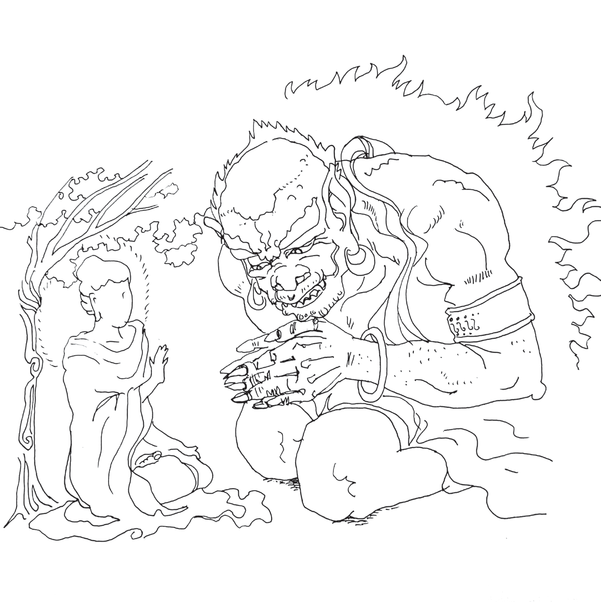
所以後面就傳出修淨土魔事少的說法。規則上魔王可以干擾修淨土的人，但是魔王他也不想惹禍上身，極樂世界的傳法活動也就3000 年，對他化自在天的魔王來說是很短暫的時間，魔王就給他的魔子魔孫下令，遠離極樂世界的團隊和修淨土的人。
在《大集大虛空藏菩薩所問經》中有故事，佛在講法的時候，魔王化身長者來問佛：未來聞此經典能生信者多不多，佛回答信的人很少，不信的人非常多，魔王心生歡喜，唱唱跳跳地離開法會。這個時候虛空藏菩薩出手制住魔王，讓他無法回他的天界。然後問其他菩薩們超越諸魔之法門，很多菩薩說了各自的超魔法門，魔王聽完說不敢再做魔事，還很聽勸地供養佛，還發菩提心。後面虛空藏菩薩說了一段讓魔子魔孫發菩提心的咒語，有很多還沒有發菩提心的魔衆聽完咒語也發菩提心。最後佛還預言，波旬未來也會成佛，但是之前會在十千佛所繼續做魔事。
這部《大集大虛空藏菩薩所問經》也是佛入滅後出現的經，是真是假看客們自己判斷。我們看佛經，重點看義理，故事都是爲義理服務的，是爲了讓讀者相信義理而編寫的內容。佛經裏的故事都有原型，但在寫成佛經的時候要剔除不能公開的祕密部分，結果有些故事相互之間互相矛盾，也有誇張的部分，所以不要把故事和義理綁到一起來分析，故事就當故事來看就可以了。
實際上，佛法能夠傳承3000 年，都是菩薩、羅漢們一次次投胎，冒着造業墮入輪迴的風險，辛苦傳法的結果。如果把佛教交給這個世界的凡夫，估計200 年都堅持不下去。每位再來人傳法過程中都會遇到魔王眷屬，有些魔王眷屬還穿着袈裟，以出家人的身份，喫着善男信女供養的飯，卻瘋狂破壞正法的傳播。
那麼怎麼判斷魔王眷屬呢？首先魔王眷屬們對佛理一竅不通，他們無法從傳法者講的義理中找到破綻。其次，魔王眷屬們的修爲連欲界定都達不到，魔王所在的他化自在天屬於欲界六天，只有魔王的修爲超越欲界天，下面所有小鬼們實際修爲和普通人無二，雙盤兩個小時都很難達到，更別說滅盡淫慾的初禪。所以魔王眷屬們無法用實修功夫和傳法者正面理論。魔王眷屬們既不能用佛理辯倒傳法者，也無法在實修上超越傳法者的情況下，他們所能做的也只有攻擊傳法者個人。魔王眷屬們會不遺餘力地抹黑傳法者，污衊傳法者，不惜造謠中傷，試圖破壞信衆們對傳法者的信心，這一切都是爲了讓傳法者停止傳法，讓衆生繼續在三界火宅中輪迴。
菩薩的大願中有一條叫“請佛住世，請轉法輪”。作爲正信的佛教徒，當遇到傳播正法的傳法者，應當請傳法者長久住世，而不是勸人早點消失，就像魔王波旬請佛趕緊入滅一樣。如果有人有如上行爲，不管其在家出家，都是魔王眷屬的證明。魔王波旬有巨大的福德支撐，在福報消耗完之前還不會墮入下三途，但是沒有多少福報的人間凡夫做魔王眷屬，果報就在此生命終之時。
我們已經知道，凡夫的命運由編劇菩薩來編寫。假設我們的壽命有80 歲，在這個時間段內，我們只能承受10 個業，編劇菩薩會從過去世的善業和惡業當中，各抽取幾個湊成10個。
比如說一個普通人，編劇菩薩會從這個人的惡業當中抽取5 個轉成惡報，從善業當中再抽取5 個轉成善報，穿插起來編成一生的命運。有些人善報多，6 個善報加上4 個惡報，這樣人生就會順利一點；有的人更多，可能有7、8 個善報和2、3個惡報，人生就比較富貴。如果惡報多，善報少，人生就變得困苦。
什麼叫禪機？禪機就是一個人能夠接觸佛法，並且產生信，還能走向修行這條路的一個重要節點。是什麼決定這個節點出現的時間？就是惡報的量。假設惡報的數量少於4 個的時候會出現禪機，那麼一個普通人出生的時候有5 個惡報，他就要承受一個惡報之後會出現禪機，如果惡報多過這個量，可能一生都接觸不了佛法。
舉例：一個人此生有5 個惡報，而出現禪機的時間點是4個惡報的時候。這個人因爲前世殺生喫肉多了，這輩子生了一場大病，算是承受完了第一個惡報，那剩下還有4 個惡報，這個時候就是一個禪機點。如果這個時候，他遇到善知識，或者任何一個機緣，讓他思想發生了改變，決定開始學佛了，這就算抓住了禪機。如果他沒能抓住這個機會，身邊有人勸他：“你剛剛生了場大病，應該補一補啊。”給他現殺活雞、活魚，做個大補的料理。他喫下這些不該喫的東西，惡業又增加了，變成5 個，可能這個報應會放到未來某一世出現，但此生當下的禪機點就錯過了。
還有一種情況，當事人並沒有造新的惡業，但是下一個惡報接踵而至，兩個惡報之間只有那麼一小段空窗期，如果錯過了，下一個惡報一旦顯現，當事人就沒有心思學佛，也沒有時間，甚至健康惡化等，各種原因無法走上修行路。在我們的人生當中，禪機只會出現一兩次，因爲不學佛修行的人造惡業很容易，隨着年齡的增長，惡業的量越積越多，離禪機點越來越遠。
舉個真實的例子。有一位經常來廟裏參加活動的居士，帶來了一名二十幾歲的年輕人，說是親戚，剛從大學畢業，幾年間找工作不順，各種碰壁，又和談了好幾年的女朋友分手，說是已看破紅塵，想出家了，這位居士就把他送到廟裏來。
師父覺得還可以，既然來了，就讓他在廟裏先當一年的行者。行者不算出家人，算是試用期，觀察一年時間。前十個月做得很好，各種打雜的活兒都幹，一起禮佛，參加早課晚課，都挺好的，大家都覺得這個年輕人很好。可未曾想第十一個月時年輕人突然變卦了，說他女朋友又找他了，還要給他介紹工作，所以現在不想出家了，要去找女朋友。師父勸他，都快滿一年了，很快就會送他去大寺院，在有教育資質大寺院當一年行者，就可以受沙彌戒，然後可以去讀佛學院，四年畢業後就可以受比丘戒成爲比丘。但是這個年輕人就是不聽，一定要去和女朋友複合，出家又不能強迫，他就這樣走了。
結果，過了不到半年，他又跑來了，來的時候臉色都不一樣。師父一看，一臉病相，也不好直接說他什麼，就告訴他說：你已經在這裏呆了10 個月了，大寺院正在辦入院手續，讓大師兄先帶你去做個體檢。因爲報名必須提交體檢報告，而且到了那裏還會再做一次體檢。
根據體檢結果，他得了某種不乾淨的病。那種無法根治的，就算治好了，檢查還能查出陽性的病。這下師父就把他攆走了，告訴他：這種病大寺院是不能收的，哪怕是已經治好了，沒有傳染性，但是人家心裏膈應。剛出家的沙彌都過集體生活，睡大通鋪，或者一個房間睡好幾個人，衣服都是一起洗的，有這種病的人肯定不能收，別的宗派收不收不知道，咱們這個宗派是不收的。就這樣把他給送走了，年輕人走的時候還很不服氣的樣子。
現實裏這種例子很多，禪機出現時，抓住了就能改變人生；沒抓住，後面的惡報一來，或者自己造了新的惡業，就會錯失這個時機。只是看不到業的凡夫，在禪機出現時也無法感知，不知道這種機會有多寶貴。就像年輕男女處對象一樣，對當下的對象始終不滿意，還以爲未來還會出現更好的人。甚至有宿命通的人直接告知，當下的人是最好的選擇，餘生都不會出現更好的人，但就是不相信，等錯過機會，過了很多年都沒能找到好對象，再回憶過去時追悔莫及。
有一些人，此生帶出來的惡報本身就少，也就沒有禪機之說，自然而然地開始學佛修行。這類有大福報的人，不需要他人強迫，也沒有機緣巧合的事情，也不需要經過一番坎坷之後大徹大悟，從小就開始有所薰陶，修行很快就能步入正軌。
一個人過了禪機這一關，後面開始修禪的時候，也會出現業障。這種業障每消一個，修行的境界就能提高一層。要進入初禪，需要把用肉身承受的惡報基本受完纔行，各種疾病，或者意外受傷之類的惡報都要受完，有時候還要把未來的惡報拉過來提前受報纔行，這樣纔有可能進入初禪。
有人就問：虛雲和尚爲什麼到100 歲的時候還被人打呢？這種受外傷的遭遇也算惡報吧？實際上，虛雲是自己發願延長了27 年壽命，他看到中國會迎來一段動亂的時期，佛教大受衝擊，他自願延長壽命來護持正法，就把下一世該來的業報直接安排到這一世來承受。所以說有些事情，不是看上去那麼簡單，一位已經得道的高僧承受了不該有的苦難，也有他的因緣。不能說一個人已經開悟了，現實裏就不會再出現任何逆境。
但是從邏輯上說，一個人要想進入初禪，這輩子要用肉身承受的痛苦中至少有90% 左右都得承受完。那要進入二禪呢，二禪開始就是陽神狀態，要捨棄肉身。要想順利進入二禪，至少要滅掉對死亡的恐懼。這裏也會出現業障，這個就很難說了，也沒有什麼太多的例子可講。
我就講一個真人真事。
以前在山中有禪堂的寺院裏安居修行的時候，有各寺院來修禪的人，都不是很熟，平時也不怎麼聊天，大家都各修各的，也不互相打聽。十幾個人天天在打坐，還有位禪堂首座師父坐堂，幫人把關。
其中有一位師父，說是已經修了很長時間，長得有點像道上混的人。說是以前犯過錯，該承受的也承受完了，之後看破紅塵就出家了。修行方面非常用功，和周圍人也和睦相處。但是他說已經有一年多沒有進境，他應該正往4 小時初禪衝擊，每次快要進入禪定境界的時候，會升起莫名的恐懼、憤怒等不好的情緒，已經有一年了，一直堵在那裏進不去。他就找人問，先問周邊的人，要麼說不知道，要麼說一些空理。有人告訴他，去問禪堂的首座師父，據說他有宿命通，能看事兒。但以前看過幾次之後，自己生了大病，從此就不再給人看了。去求求他，說不定他會告訴你。
這位長得不太好看的師父，就跑去問那位禪堂首座師父。禪堂師父對他說：這事兒我不願意看，也沒法告訴你。但是我可以指條路，咱們修禪定肯定是要依靠佛菩薩的加持，別人說修禪靠自力，那都是扯淡！咱們現在修禪定，就是靠佛菩薩的照護，所以你去向佛菩薩求。求觀音菩薩也行，求佛祖也行，你選一個菩薩去求。但是前提是什麼？你得先做功德，拿出功德來求，一事一求。就問一個事兒，用足夠的功德求佛菩薩，佛菩薩應該會告訴你怎麼回事。
和尚做功德無非就是出去傳法做法佈施。但是修行到了關鍵節點的時候，誰都不願意動，至少把這關過了再出去，所以他也不想出去。那還有什麼辦法做功德呢？按廟裏的說法，功德最大的是做飯，然後是掃廁所，這兩個是最苦最累的工作。
這位師父就向監院報名幹活。先在廚房做了半年的飯，而且是在冬天幹，因爲冬天水冷，做飯更難。做飯供養佛像，或者給僧衆喫，都算是大功德。到了夏天，廁所味兒大，都不願意掃廁所的時候，他主動去打掃廁所，也幹了半年。按規矩一個人不能同時幹這兩項工作，因爲廚房是乾淨的地方，廁所是污穢的地方，掃廁所的人就專門掃廁所，做飯的人就專門做飯。
幹了一年有餘，有一天早晨，他說做了一個夢，夢見觀音菩薩告訴他，他上中學的時候，欺負了三名同學，成了業障，所以他得去道歉。他自己也說，自從出家後心裏對他們很有愧疚感，但是始終沒有主動去道歉，只是在佛前經常懺悔，他以爲這樣就可以了。結果事情到了不得不面對的時候，他就決定下山去找那三個人，因爲沒什麼錢，下山前還向周圍的師父們一點點湊，湊了幾千塊錢下山去了。
後來大概過了三個多星期，他就回來了，是被兩個朋友送過來的，頭上拿繃帶包得像木乃伊一樣。出家人不打聽別人隱私，他自己不說，其他人也不好問，就給他安排個房間休息。送他來的兩個人和他打過招呼後往功德箱裏放點錢，也就下山去了。
休息幾天後，他開始出來打坐，也是一聲不吭。過了一個多月，繃帶也都拆了，頭上鼻樑上多了新疤。有一天他出來向大家說，觀音菩薩叫他把這個事告訴大家，因爲有點教育意義。然後就把下山之後的故事大概地說了一下。
以下轉述這位師父所說。
他中學時不學好，喜歡打架，和一幫小夥伴拉幫結夥到處惹事，還經常欺負隔壁班看上去很弱的三個同學，甚至搶他們的錢。那個年代這種事很多，學校也不怎麼管，沒闖什麼大禍就度過了學生時代。長大之後混道上，期間犯了點兒事，進去蹲了幾年，出來之後就出家了。按理說這種人現在是不能出家的，但那個年代可以。出家後開始認真修行，這次下山主要是去找那三個被他欺負過的隔壁班同學道歉。
下山之後他先找自己班的同學打聽，順利找到了第一個人，他就買了點水果之類的上門道歉，結果沒想到第一個人非常好說話，很痛快地接受了道歉。這個人說他一直把以前的事放在心上無法釋懷，每次想起來就非常憤怒又痛苦，想找他報仇又沒那膽兒。而且又聽說他混道上了，就更不敢找他，總之心裏過不去。但是後來結婚娶了一位信天主教的妻子，就跟着皈依了天主教。他跟着妻子經常上教堂祈禱，希望天主幫他，讓他放下心理負擔，求了很長一段時間，結果這個仇人，主動跑來向他道歉，還出家當了和尚，他認爲這是天主保佑，讓他放下了這段心裏的負擔，所以兩個人就很開心地和解了。
這位師父覺得這事挺好辦的，輕輕鬆鬆就解決了一個。接着向他打聽第二個人，也是隔壁班的同學，他們三個人都認識，經常被一起欺負。得到第二個人的地址後，這位師父又買點東西上門去道歉，結果這回真的是碰壁了。人家一看到他就暴怒，差點沒上來打他，和諧社會也不敢隨便動手，但是一頓破口大罵後把他趕出來了。
這怎麼辦？他都說不上一句“對不起”，就被一連串的罵聲給攆出來了。他也實在想不出什麼辦法，道歉能有什麼辦法，就天天蹲門口，蹲了三天。那人出門他就跟在後邊，要是開車走，他就在門口一直等人回來。就蹲門口，買個麪包買瓶水，一直蹲了三天，這個人就報警把這兇臉和尚給抓了。警察瞭解了一下情況，還給廟裏打了一次電話，問有沒有這個人。他們看他的記錄有過一次前科，但是出家後沒啥事了，就口頭警告後放了他。
這位師父出來後，又跑去堵他門口，堵了三天，這人又報警了。這回被警察抓進去一頓教育之後，關進拘留所裏蹲了三天。還通知寺院，要派個人下去籤個字才能把他帶走。本來廟裏要派人下去的，後來他通知了自己的家人，讓家人過去簽字後出來了，廟裏就沒有去人。
第二次出來之後，這位師父覺得不能這樣拖下去，他就決定來一個狠的。於是就準備一個板磚，又去他家門口堵，這回不敢離單元門太近，就在小區大門外等。等他出來向小區外人多的地方走的時候，他就跑過去把他叫住，拿出一個板磚，那個人肯定嚇了一跳，大白天這是要幹嘛呢？這位師父當街跪地磕頭，然後大聲喊：“我爲小時候打你的事向你道歉！請你原諒我吧！”然後拿起板磚往自己的光頭上砸，直接打得血花四濺，應該下手很重。然後再磕個頭，再說一次：“我向你道歉！爲以前的事我向你道歉！”然後再砸一下。再磕個頭準備砸第三下的時候，這個人跑過來阻攔了，說：“你別拍了，別拍了！我看見了，我認可你的誠意了，我接受你的道歉。咱別在這兒拍了，你趕緊上醫院看看吧。”兩個人一起去醫院給他治療了一番，一起喫頓飯，聊了聊過去的事兒，也算是和解了。
接下來還得找第三個人。他向第二個人打聽第三個人的消息，畢竟他們纔是一個班的同學，結果第二個人說，第三個人可能已經出國了，好幾年都沒聽過他的音訊，但從同學羣裏打聽到了他家的地址。
這位師父又買了點東西，去第三個人家裏看看，結果真沒人。第三個人已經出國了，家裏只有兩位老人，這位師父就跟老人們說了來意，老人們說兒子已經出國多年，師父也不放棄，就問能不能給他打個電話，告訴他有這樣的事，希望他接受道歉原諒他。老人們還挺好說話，讓他等一等，到了晚上可以通話的時間段幫他打個電話。結果那邊也是破口大罵。老人就說：“他不接受道歉，你還是回去吧。”這樣當天就過去了。
這位師父出來之後想了兩天，覺得還是不能這樣回去，但是又沒錢出國找人。怎麼辦呢？只能繼續去找老人，第二次又去找，老人們說：“你怎麼又來啦？這樣沒有用的，要不你去找他的同學們看看吧，或許同學們說的話對他管用，跟我們這些老人說也沒什麼用。多大的人了，怎麼可能聽父母的話呢！你還是走吧。但至少，我還可以替你再打一次電話問問。”結果第二次打電話那邊還是不接受道歉，又是一頓破口大罵。
於是這位師父就再去找第二個人，跟第二個人套熱乎，先加個微信，請他幫忙。第二個人同意了，願意試一試，爲了提高成功率，把第一個人也找來，這樣兩個人一起向國外的第三個人約個時間開啓視頻。這位師父事先準備好了一個案板和一把菜刀。
兩個同學和第三個人約好時間開始視頻通話，先是一通寒暄，兩個人說着說着，就把話題往以前經常欺負他們的那個隔壁班的混蛋身上引。說他現在改變了，出家當了和尚，前不久來向我們道歉，我們也接受了，你怎麼看呢？等第三人的態度稍微有點軟化了，這兩人就把視頻轉給師父，對他說：你看他現在帶着這麼大的誠意向你道歉，你先聽聽他怎麼說吧。師父接過話就說：也沒什麼可說的，上次在你父母面前，我已經向你道歉了，但是你不接受，那咱只能拿出更大的誠意了。我要數1、2、3、4、5，數完5 下，你不接受我道歉，我就拿菜刀在你面前剁一根手指頭給你看。
那個人就有點懵了，你們三人要幹什麼？突然來這一出？但該來的還得來，師父開始數數，數到三的時候，這個人就喊停了：“你停！停！”師父就問他：“你接受我道歉，不再生我氣了嗎？”結果那邊還是破口大罵，說：“你別拿這種話來忽悠我，你砍手指頭吧，我說實話不是很相信，但是看你這樣子又可能真砍。如果你真砍的話，我可能心裏又過意不去。所以說我現在喊停是喊停了，但我還沒接受道歉。要不這樣，你以前給我開了好幾次瓢（開瓢——東北方言，拿東西砸腦袋，致使頭破血流），你給我表演一下開瓢吧！因爲你給我開過好幾次瓢，我看着肯定能接受得了！”
這位師父立刻拿起案板，往自己腦袋上砸了好幾下，案板畢竟是木頭，它不能像板磚一樣砸出暴血的效果，那怎麼辦？那邊還看着呢，一定要這幾下之內完事，興致一過說不定對方又改口。他就把這個案板橫着拿起來，往自己的鼻樑骨上敲了兩下，直接把鼻樑骨給打斷了，鼻血嘩嘩流。視頻那邊人就喊：“停！好了好了，真的看到了，你這不是演假的吧？這血是真的吧？”另兩個人都說這是真的！這是在第二個人的家裏，正上演着飆血秀呢。第三個人也終於接受了他的道歉。
然後兩個人就帶他去醫院縫了幾針，把鼻樑骨給掰正了，還住院打了幾天吊瓶，自己帶的錢都不夠治療費，第一個人是信天主教的，這種好事他願意幹，就花錢幫他治療，然後再把他給送回來。
以上是這位師父說的事情經過。過了一段時間，那兩位朋友又來看過他一次，看看恢復得怎麼樣了，也算是仁至義盡了吧。談不上成了朋友，但起碼那兩個人算是原諒他了，第三個人就不知道了。
之後這位師兄打坐真的進入了禪定狀態，一旦進入之後，堅持一段時間，能夠守住這個狀態，安住於初禪，整個身心都會發生變化，人的狀態完全不一樣了，後來這位師父就回自己的廟裏去了，故事就到這裏了。
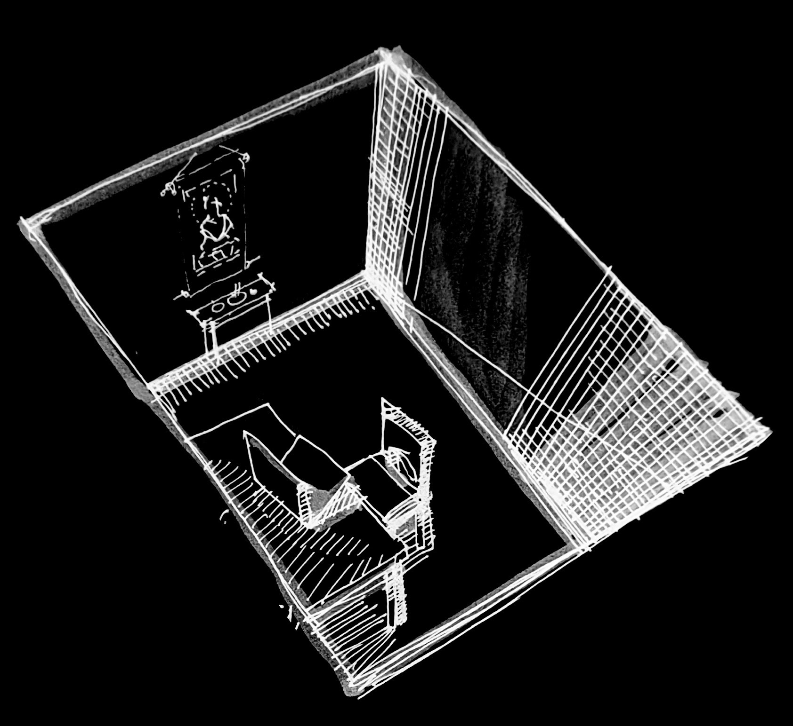
講這個故事的目的是想告訴大家，業障有可能是前世的，也有可能是今世的。修禪定肯定會有業障出現，不去消這個業障，後面禪定是上不去的。在諸佛同體的前提下，我們所造的所有惡業，給別人造成的所有傷害，那種不好的情緒都會反映到我們身上，尤其是要進入禪定境界的時候。
修行人能夠體驗到禪定當中時間過得很快，因爲在禪定當中，時間分別會變得稍微模糊一些。我們爲什麼感受不到受害者的痛苦？就是因爲我們當下專注於此生的命運，那個果報可能放到來世了。但是就因爲這中間的時間感會變得模糊，未來出現的這種果報也會提前反映到我們身上，那些被害者所承受過的痛苦和負面情緒都會反映到我們身上。
有人問：犯過的錯該不該道歉？我都說：這輩子的事，就這輩子了結，不要拖到來世。對方活着的時候，你該道歉就道歉，該還的就還，這是最簡單的解決方法。因爲人家還活着，這輩子的記憶還在，人家也知道是什麼事，也容易接受。到了下輩子，人家忘記了，你也忘記了。你只能按照命運劇本來，人家主動上門報復時候你更痛苦。你現在是主動去道歉，人家就算不馬上接受；你再三道歉，表現出足夠的誠意，就算對方表現得很煩，心裏的仇恨情緒也會減少一些。
有些事情這輩子能解決的，當下道歉，當下懺悔。還有那些傷害小動物、虐待小動物、拍死蚊蟲之類的事，最好是事事懺悔。你能想起的每一件壞事，都一個一個針對性地內心懺悔，再做功德迴向，讓業報儘量減少。
從業的角度講一下頓悟。
虛雲和尚是聽到茶杯掉落破碎時的聲音後開悟的，有些人洗澡時被冷水刺激後開悟，有些人是被人驚嚇後開悟，這是怎麼做到的？實際上這也和業相關。
修行要達到某個禪定境界，必須同時滿足兩個條件：
一、修心：靠每天打坐、磕頭、唸佛來一點點推進。
二、消業：承受該承受的痛苦。茶杯掉落被驚嚇一次，也是一個業。
這兩個條件同時滿足的時候，就會進入下一個禪定境界，也有可能開悟——進入四禪。大部分人都是先消了業再修心，所以大部分人是在打坐入定時開悟，或者禪定時會進入下一個境界。
但也有些人是前面非常精進地修禪定，在修心方面已經達到了標準，但還有業沒有消。所以當這個業突然消掉時，就會進入下一個境界，有可能是禪定，也有可能是直接開悟到四禪。虛雲就是第二種情況。
不明就理的人們把頓悟或者開悟傳得很神奇，不在個人的修心和消業方面找原因，而是在外找機緣。如果外在的機緣能令人開悟，那茶杯破碎這個事件，怎麼只有讓虛雲開悟，沒有讓其他人開悟呢？因爲被驚嚇是虛雲最後要消的業，不是別人的業。
有些人把他人開悟的地方包裝成非常殊勝的紀念地，還要去朝聖。這些都是沒必要的事情，每個人的因緣都不一樣。朝聖是用來緬懷和紀念過去聖人的行爲，對個人修行沒有什麼幫助。
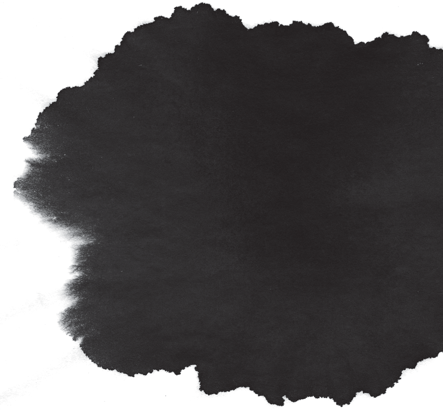
最初的佛是怎麼產生的？這也是我要講的義理中重要一環，因爲補上了這一段就是完整的邏輯，形成完整的閉環。
最初的佛，這個故事在佛的世界裏一直流傳，佛的記憶都在那裏。“最初”這個詞也不對，但是沒有別的詞可以代替，那個世界是沒有時間的世界，也只能這麼說了。
最初所有衆生都是佛，但是有些佛起了妄想便開始往下跌落，直到產生分別心和執着心，然後陷入自己創造出的幻境當中無法自拔。而不止一個佛產生妄想，有很多很多的佛都產生妄想開始跌落，當這些佛一直跌落到三禪，產生了思情、疑情。有了思情，相互之間就會開始吸引，這些佛在思情的牽引下，生到一個幻境當中。因爲衆生的自性全部重疊在一起，互相吸引，很容易往一個世界裏聚。
兩個佛、三個佛、甚至更多佛之間有了互動，就產生了業。一個佛的時候一切妄想都只是習氣，只要把習氣滅掉，就可以回去做佛。但是一旦產生業，就無法一個人靠一世修行就可以消掉，會互相輪轉，互相牽引。
越來越多的佛進入一個世界，相互之間的業也越來越重，從最初的善業開始不斷地往惡的方向發展，惡業隨之出現，殺戮蔓延，地獄出現。地獄由衆生的惡念和惡業所化現，很多衆生在地獄裏還在互相廝殺，根本停不下來，完全沒有辦法自救。這個事情在佛的世界裏開始瀰漫開來。
這個時候的地獄世界叫無限地獄。沒有佛管控的地獄就是無限地獄，因爲裏邊的殺戮一刻不停歇，大環境也不斷重複着各種極端天災，也沒有管理人員。在無限地獄裏沒有中陰身，生死就在一個念頭的生滅之間，死了馬上起來繼續殺，就是這樣瘋狂的世界。
那麼中陰身是怎麼來的？中陰身是佛控制世界後用加持力催生的。在小乘佛法裏，人只要一死，念頭就會熄滅，新的念頭再升起就是新的出生。生死之間沒有中陰身！
但是佛控制世界之後，把死亡到重生之間的時間段給拉長了，讓人變成中陰身，然後往世界的各個層裏派自己的人進去管理，開始往裏派駐“公務員”，形成組織架構——地府、鬼差、閻王爺，都是從上面一層一層往下派下來的“公務員”，再把中陰身階段控制住，纔有了有序的六道輪迴，之後派傳法團隊進去傳法，教化衆生往解脫方向努力。
回到上面的故事，面對不斷有佛墮落的局面，終於有一位佛站了出來，我們暫時先叫他甲佛。這位甲佛率先進入到別人的地獄世界裏，試圖救人出來，結果如何？佛一旦進入到其他佛創造的無限地獄世界，和他們互動就會造業，有了業就變成報身，被殺一次就會失去記憶，徹底淪陷無法解脫。這位甲佛淪陷之後，很多佛用自己想出來的各種方法試圖救人，結果全部失敗，不但救不了人，自己也出不來。
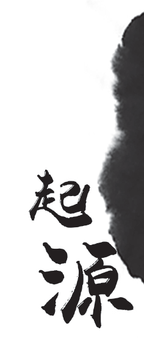
如果佛有絕望這種情緒，那這個時候應該非常絕望。大家想想看，在我們人間，有疾病怎麼治？無非就是兩種辦法，第一個辦法是預防，在生病前做好各種防護。但是預防的前提是什麼？前提是對這個疾病的發病原理了解清楚，否則無法預防。我們已經知道“初妄無因”是世界的底層真相，佛起的第一個妄想沒有原因，所以對佛跌落這個事情根本沒有辦法預防。第二個辦法是病後治療，爲了治療，第一位甲佛站了出來，結果失敗，後面一系列的失敗證明了試圖治療的醫生會被傳染，任何靠近患者的醫生都會被傳染，因此無法靠別人治療。無法預防，無法治療，也無法自愈，這樣一來對這個病徹底無解，如果在人間發生這樣的災難，最後也就剩下隔離一個辦法了，把患者隔離起來，讓他們自生自滅，可正常人中還會不斷出現新的患者，那就是世界末日了。
第一個要進去救人的佛叫甲佛，他選擇的目標人物叫乙佛。甲佛進入了乙佛創造的無限地獄世界，裏邊還有很多其他佛，甲佛進去之後失敗，自己也無法出來。後面陸續有佛試圖進去救其他佛，但都沒有成功，甚至連全身而退都做不到，全部陷在裏邊。
此時在外邊還沒跌落的佛們繼續想辦法，其中兩個佛想到了一個辦法。我們就叫他們丙佛和丁佛，這兩位佛經過一番商量之後結成搭檔。這兩位佛都沒有跌落過，他們之間沒有業緣，所以用發願的方式結成搭檔。
首先丁佛在外邊創造出一個更大的世界，把乙佛的世界罩住，從而控制住乙佛創造的無限地獄世界。一開始世界各層的管理人員全部都是丁佛的化身，用化身層層往下滲透控制，直到最下層的地獄。實際上，原本的無限地獄世界沒有其他道，所有人都在地獄裏互相殺戮，地獄之上的各層世界都是爲了把地獄中的佛逐步往上帶而創造出來的。
等丁佛穩住一個世界之後，丙佛開始進去度人。兩個人結成搭檔時，已經約定好，如果丙佛進去之後失去記憶，丁佛就要用各種辦法讓丙佛保持住自我，讓他知道自己的使命。丙佛進入世界後，和裏面的其他佛互相溝通，告知真相，雖然自己也在造業，但是一點點開始往外度人，這樣成功地把一位佛給度了出來。第一個被度出來的就是甲佛，因爲甲佛是第一個發願要進去救乙佛的佛，有自己的願更容易度，沒有願的佛還需要先引導其發願。
以上方法的成功，讓佛的世界重新振奮起來，有很多佛開始效仿，結成搭檔度人，整個佛的世界開始走向平衡，佛跌落的速度和被度的速度逐漸拉平。在這裏有一個關鍵點，願與妄想的關係。對於我們這些有情緒和慾望的凡夫來說，發願是用凡夫的慾望來發，因爲慾望隨時會變，所以發的願也不堅固，需要反覆發願來強化。但是對於沒有妄想、分別、執着的佛來說，一旦發願就是堅固永恆的願，沒有願的佛起的妄想是隨機的妄想，但有了願之後再起妄想，那就是以願爲基礎的妄想。那些沒有墮落的佛們，紛紛發願度人，有了願之後再起妄想那也是要度人的妄想，這樣一來沒有墮落的佛們也有了安全保障，哪怕初妄無因，無法阻止妄想的產生，但是可以控制妄想的內容，保證升起的是正面的妄想，這樣佛一直處在度人之願的狀態下時稱之爲禪那狀態，也就是佛提供加持力的原因。進入輪迴度人後又有了記憶，確保以後不再墮落。
因此從妄想的屬性，凡夫可以分爲二類，第一類凡夫的初妄是隨機的初妄，第二類凡夫的初妄是以度人之願爲基礎的初妄。有些第一類凡夫在其他人的引導下發願普度衆生，之後成功解脫生死，但在之後的消業度人過程中發下“不度某個特定的人絕不回去”的願，結果就被“某個特定的人”的人給絆住，在這個人解脫之前自己無法解脫，這類人也歸類於第二類人。“人易度，佛難化”這一句中，“人”指的是第一類人，“佛”指的是第二類人，第一類人需要先傳授二乘、三乘理論，引導其修行，等有了一定境界後引導其發願，傳授大乘理論和修法。第二類人可以直接引導其修行，找回記憶後就知道自己的使命，但是因爲被自己的願所絆，需要先去度那個“特定的人”。有度人之願（大菩提心）的人終將會成佛，所以我們叫這類人爲“佛”。
還有，發願時要想好，“發願度某人”和“某人解脫前誓不取正覺，或誓不成佛”是不一樣的，前者自己先成佛後再度某人也無妨，後者必須先度某人，之後自己才能成佛，“某人”可以是一個人，也可以是一羣人。甲佛進入乙佛創造的世界時，發願度乙佛，但後面沒有追加條件，所以甲佛可以先被度。如果甲佛發願“救出乙佛前絕不出來”，那丙佛只能先度乙佛，等乙佛被度出來後才能度甲佛。
以上是最初的故事和搭檔體系的起源。
第一位發願度人，並付諸行動的佛是甲佛，他以爲只要進入乙佛的世界，教他禪定就可以度人了（那個時候還沒有“禪定”，但是我們就叫它“禪定”，以便於敘述和傳播佛法。佛說禪定，是非禪定，取名禪定），但是不僅沒能度人，連自己也陷在了乙佛的世界。但甲佛是第一個用這個方式來試圖度人的佛，所以甲佛就成了禪職業的第一人。
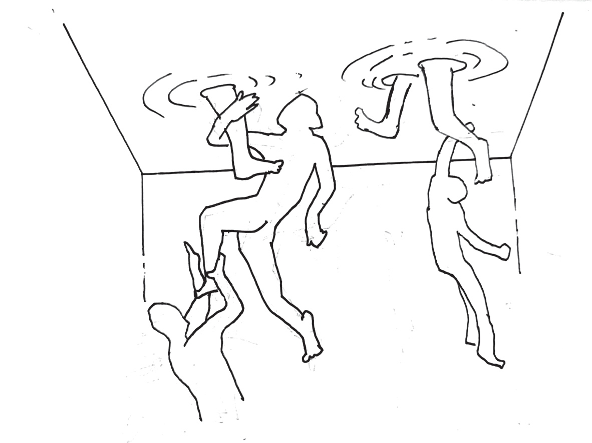
乙佛一開始跌落的時候，肯定是從天王開始的，他出來之後，知道了整個世界運作的基本原理，也知道了修行環境的重要性，他成爲了控制世界、提供修行環境的人，尤其是往下層層派出管理人員，設計整個環境的職業——人王職業。乙佛成了人王職業的第一人。
佛世界的第一對搭檔就是甲佛和乙佛，一個是禪，一個是人王。
丙佛知道了僅靠說禪根本無法度人的現實，因爲輪迴內的凡夫根本不信其他人之言說。丙佛開始專注於研究取信之法，這樣就產生了第三個職業，專門讓人產生信的職業——教職業。丙佛成了教職業的第一人。
丁佛創造一個新世界罩住乙佛創造的無限地獄世界，引導和保護進去度甲佛的丙佛，在這過程中，丁佛知道了修行的障礙，第一是最初的信，第二是業障。業障是衆生在互動過程中，使其他衆生產生的壞情緒和執着反映到自己身上的結果。正常情況下，只有受報才能消除業障，但可以用其他衆生指向自己的好情緒來稀釋和緩解，這叫福報。丁佛開始專門研究引導衆生積福報的方法，這樣就產生了第四個職業——商職業。丁佛成了商職業的第一人。
乙佛的人王職業是在宏觀態上給衆生創造修行的環境和時間，丁佛的商職業是在微觀態上指導個人積福報，創造可以修行的條件和時間，同時也爲人王的工作提供輔助。但一開始發願的時候丁佛和丙佛結成了搭檔，成了佛世界的第二對搭檔，一個是教，一個是商。
佛的世界沒有時間，如果有時間，丙佛和丁佛纔是第一對搭檔，但是第一個自願進入其他佛創造的無限地獄世界度人的是甲佛，因此甲佛被奉爲第一佛，他所在的組合順理成章地成爲第一組合。
這樣一來，四大職業基本形成。在不斷的度人過程中，四大職業的經驗也不斷積累。二人一組，組成搭檔消業度人的方式一直延續到現在。四大職業之外還有很多職業，在人間存在的正業，菩薩、羅漢那裏都有，其中醫生職業也是人數衆多的職業，東方淨琉璃世界的藥師佛就是醫生職業。但四大職業在傳法活動中起帶頭作用，是最關鍵的職業，因此排在其他職業之上，需要更高的發心才能加入，也需要更長時間的磨練。
最初的甲、乙、丙、丁四位佛合稱四聖佛。這四位佛沒有名字（甲乙丙丁是爲了敘述方便而起的代號），之後出現的所有佛起名是爲了和四聖佛區分，衆生平等，佛與佛也平等，沒有尊卑高下，但所有佛公認四聖佛是佛界的最高領袖，因爲他們爲佛界做出的貢獻最大。
甲佛進入乙佛創造的世界，試圖救乙佛失敗，然後丙佛和丁佛結成搭檔，丁佛創造更大的世界罩住乙佛的世界，丙佛進去成功把甲佛帶出來。這乙佛和丁佛創造的世界叫四聖界，是整個法界當中第一個有人成功解脫的世界。
後來從四聖界出來的佛們開始發願度人。傳法雖然可以同時向很多人傳，但還是有極大的限制，能影響到的人很有限，而且在一個世界內，成佛只能一個一個來，不能同時出很多佛。所以佛們開始創造出更多的新世界，罩住其他的無限地獄世界，加快度人的速度。
重新修到等覺地的菩薩多了，就有等覺菩薩開始創造新的世界，把原世界裏的部分衆生帶進他的世界來度，這叫分家成佛和衆生分流。這樣操作，不僅可以加快自己成佛的速度，還能降低衆生之間造業的速度。
當一個世界裏的所有凡夫都成爲菩薩、羅漢的時候，這個世界就可以解散了，解散之後菩薩、羅漢們還要去其他世界，去和自己有緣的衆生多的世界，繼續消業度人的旅程，直到最終成佛。
這樣基本上穩住了全法界，佛們跌落的速度和解脫的速度基本持平，我不知道佛一共有多少，其中多少佛在輪迴內，多少佛已成佛，這些都沒有確切的數字，按照佛經裏的說法，叫無量恆沙衆。
隨着度人的經驗不斷積累，度人也有了規範化的操作流程，把四大職業定爲傳法活動的核心團隊，再補充其他職業，讓更多的人蔘與。傳法活動也不再是一兩個人隨意做的個人行爲，像最初的丙佛單槍匹馬帶着一根線就往裏闖的事不再有了，開始成爲有組織性、紀律性的活動，先組成大團隊、寫好劇本，再分工明確、按部就班地推行劇本，四大職業各司其職，保證能夠成功度到大量人的同時，儘量避免團隊成員的墮落。
但是不管計劃如何周密，也無法保證永遠不發生意外，在度人的過程中，有團隊成員重新陷入輪迴的事故時常會發生，因此又有了一套救援機制，確保及時救出意外陷入輪迴內的隊員。
四聖界裏出來的佛中有一位佛，觀察研究了很多法界之後，發願建立一個世界——專門研究和傳授度人之法的世界。這個人創造了現在的極樂世界，成了初代的阿彌陀佛，是法藏比丘的原型。之後在極樂世界成佛的所有佛都繼承他的願，同時繼承他的名，確保極樂世界的精神和大願永續不斷，直到現在極樂世界已經出了36 萬億多的佛，菩薩、羅漢無量，衆生更是無量。極樂世界的傳法團隊應邀去很多其他世界傳法，也接受其他世界的人來極樂世界修行和學習，成爲一面長青不衰的旗幟，指引法界衆生走向解脫覺悟之路。
在全法界中，存在着無數個世界，也消失了無數個世界，很多世界都選擇短期存在，裏面的凡夫都成爲菩薩、羅漢之後就會解散。也有像極樂世界一樣選擇長期存在的世界，例如東方淨琉璃世界，也出了很多的佛，他們的世界也擁有完善的體制和龐大的團隊，也派傳法團隊去其他世界傳法，同時也接納其他世界的衆生。
在大菩提心之上還有兩個更高級的發心。有這兩種發心的修行者，佛菩薩會爲其提供更大的便利，無限的加持和無限的福報資源都會湧來，以最高效的方式把人引入阿耨多羅三藐三菩提。
先教大家一個偈子：
這是阿彌陀佛四十八大願的濃縮版。常念常憶，能讓求大乘者速發菩提心。
我們說“神通不敵業力”，在這裏神通不只是佛法裏講的五眼六通，還包括所有個人能力，一個人的能力再強也無法改變業的輪轉，在因緣和合之時果報終將出現。但是在這一句的後面還有一句，“業力不敵願力”。在《地藏經》裏，地藏菩薩有一前世叫光目女，光目女的母親因爲喫了太多魚鱉之屬墮入地獄，光目女發下大願：“若得我母永離三途及斯下賤，乃至女人之身永劫不受者。願我自今日後，對清淨蓮華目如來像前，卻後百千萬億劫中，應有世界，所有地獄及三惡道諸罪苦衆生，誓願救拔，令離地獄惡趣，畜生餓鬼等，如是罪報等人，盡成佛竟，我然後方成正覺。”發願完，清淨蓮華目如來就告訴她，她的母親未來會成佛。
這就是大願的力量，在諸佛同體、意識重疊的情況下，一個人發大菩提心，發願度所有和自己有緣的衆生時，那些所有的有緣衆生，不管善緣還是惡緣都會受到影響。善緣衆生對發願者的好情緒會增強，惡緣衆生對發願者的壞情緒會減弱，兩邊的變化會同時反映在發願者身上，使身心都會產生殊勝的變化。同時，與佛菩薩同願，可以得到佛菩薩的加持力和引導。
第一個發心叫求道心，求道就是追求真理，對這個世界的真相、本源好奇，想知道世界是怎麼形成的，如何運作，有什麼規律等。這是人類很普遍的願望，也是人人都有的好奇心，各個文明時期都有人專門研究和探索宇宙的真相。
求道心，在正常的情況下，普通人都是按照“觀察—思考—實驗”的邏輯去追求真相、追求真理，這就是科學發展的邏輯。
但是有一些人，他開始用不思考、不觀察的方法來追求真理、尋求真相，就是我們通常所說的靜坐冥想、參禪打坐等。這是完全違反人類正常思維邏輯的行爲，這種方法大概率都是從上邊傳授而來，由已經解脫的人或是天人下來傳授於人。所以，有這種修行文化的文明都是刻意安排和設計好的文明，是管理層刻意運作的結果。
求道心分兩種：一種是向外求，向外觀察世界，進行研究，得出結果後再做實驗進行印證，這就叫科學；還有一種是向內求，走的是修行路線。修行又分正道和外道。我們認爲我們修的佛法是正法，其他都叫外道。但學習其他理論學說的人也認爲他們的是正法，佛法是外道。
只有修佛法的修行人會發展出出離心，因爲只有佛法的理論體系裏有超越生死的存在方式，其他外道學說裏都沒有。當一個追求真相的修行人修爲達到一定境界的時候，他會看到宇宙和生命的本源和真相，也就會相信佛所說的斷生死、出輪迴之說真實不虛，就會升起離開輪迴的願望，這就叫出離心，這是從求道心發展出來的出離心。以求道心修行的人通常都會選擇參疑情，因爲探索宇宙的求知慾是由好奇心驅動的，也就是疑情。
第二個發心叫識苦心，苦指的是人生八苦。其中生、老、病、死是與生俱來的生理性苦，大部分人不管年齡大小都認可此四苦。剩下的四苦叫：怨憎會、求不得、愛別離、五陰熾盛。我們會在人生旅途中慢慢體會到這四種苦，隨着年齡的增長，經歷過世間冷暖，我們最終會認識到人生無外乎苦。然後開始好奇命運的真相、產生解脫的願望。
在識苦心方面，也有幾個分支。
第一個是以斷滅論爲前提的分支。斷滅論認爲人死如燈滅，沒有可以輪迴的靈魂，更沒有永恆不滅的自性。
在這裏又分出兩個支：
一種是享樂主義。一個人信奉斷滅論的前提下，過得還算幸福，名利權勢都不缺，那麼這種人通常容易往享樂主義走，因爲他有足夠的資源可以享受，他會想：既然死亡是終結，那應該趁活着的時候盡情享受。
還有一種是虛無主義。一個人信奉斷滅論的前提下，過得比較困苦，各種物資缺乏，生活的基本需求得不到滿足，社會上遭人輕慢，生理和心理上都有痛苦，那麼這種人容易墮入虛無主義，心想既然死亡是終結，那活着受這麼多苦又有什麼意義。虛無主義會發展成抑鬱症，甚至會出現自殺的衝動。也有人走向另一個極端，會對他人極端殘忍，把殺人解釋爲幫人解除痛苦。
和斷滅論對立的觀念叫意識永存論，或叫意識永生論。此觀念認爲，死亡只是肉身的毀滅，意識或者靈魂可以繼續存在。這方面又分出兩個分支，一個是我們所謂的佛道，還有一個是外道。
我們是從佛法當中知道了有輪迴，有永恆不滅的自性，所以就有了斷生死出輪迴的慾望，這樣就銜接上了出離心。我們認爲這是正道。
還有些人，他們知道意識不死，但是肉身會死，所以他們用逃避死亡的方式追求永生，不管是依附於什麼物體也好，還是以中陰身的方式也好，向這個方向努力的人叫外道。佛道和外道的區別在哪裏？佛道追求的是滅掉有生死的狀態，進入沒有生死的狀態。外道追求的是維持生的狀態，拒絕死亡的到來。
以上是從識苦心發展分出來的幾個支線，其中有一個就是我們所追求的出離心。
第三個發心叫出離心，從這裏開始就沒有分支，是我們正統佛法裏的正確發心，是要斷生死、出輪迴的決心。可問題是，光有出離心是無法解脫的，爲什麼這麼說呢？
出離心所追求的是阿羅漢，也叫自了漢。有相當多的人成了阿羅漢之後拒絕度人，他覺得人生太苦，拒絕重新進入輪迴消業和度人，就一直安住在阿羅漢的境界。如果阿羅漢不再進入輪迴度和自己有緣的人，那麼和他有緣的衆生就消不了和這個阿羅漢的業，他們的修行就會堵在一個地方無法繼續。
有些和阿羅漢有緣的人，在阿羅漢不來度他、不跟他消業的情況下，先去消其他的業，最後修行超過了這個阿羅漢的境界，甚至成了菩薩，但是卻成不了佛，就因爲消不掉和這個阿羅漢的業。這個菩薩不得不來說服阿羅漢，請他一起下去消業，但是這個阿羅漢就是不聽，致使菩薩一直成不了佛。人各有志，無法強迫，菩薩也不能強求別人。
拒絕度人和消業的阿羅漢多了之後，傳法團隊決定度人只度有大菩提心的人，那些發願度所有有緣人的修行者才值得度，沒有大菩提心的人不度，以免影響其他人的消業和解脫。我們作爲學佛之人，一開始可以用出離心修行，但到了一定境界就該發大菩提心，如果一直不發大菩提心，菩薩、羅漢們就會放棄這樣的人，不再繼續指導，讓其繼續在輪迴裏受苦。這樣更好，畢竟沒有大菩提心的人得到解脫，反而會讓很多和他有緣的人無法消業，修行也無法進步。
第四個發心叫大慈悲心，給衆生拔苦予樂之心。觀音菩薩發的願就是大慈悲心。他是先發大慈悲心之後再發出離心的，所以他成菩薩之後也願意繼續爲衆生拔苦予樂，這是他的個人選擇。
只有大慈悲心的人也無法得到再來人的接引。因爲很多人在這個願上停止不前，喜歡助人，廣造善業，但不修行，最終只是天人果報。有些人甚至想拿這個功德來卡bug。在人間廣造善業，攢足夠的功德福德後上天界享受一段時間，再回到人間繼續造善業，再去天界，以爲這樣就可以在天界和人界當中無限輪轉。只可惜這是不可能的事情，我們每次投胎到人間多多少少都會造惡業，一點點的惡業也會不斷積累。等我們在天界的福報快消耗殆盡之時，有可能會直接墮入下三途，而不是投胎到人道。
佛經裏有這樣的故事：有些天人出現了五衰相，就知道自己要死了，用天人的神通一看，自己死後會直接墮入下三途，他就慌了，馬上去找釋迦牟尼佛求救，得到佛的幫助後，天人的壽命又增長了。有佛住世的時候可以這樣操作，但佛入滅之後怎麼辦？現在也有很多天人知道自己壽限將至，就跑到彌勒菩薩的兜率宮外排隊，希望能得到什麼辦法讓自己壽命延長。
問題是，天人自己無法知曉自己的福報總量，也看不見消耗進度。如果天人可以知道這些信息，等消耗了80% 左右的福報量之後，可以主動帶着剩下的20% 投胎到人間。這點福報在人間也可以做大富大貴之人，甚至是小國王，也就可以繼續廣造善業，積攢福德功德後再生到天界。只可惜天人沒有這樣的神通，只有成了菩薩才能看到一個人無始以來的所有業，也就能知道福報總量。
所以說，只有大慈悲心，喜歡廣造善業的人，最多是天人果報，無法解脫。
第五個發心叫大菩提心，普度衆生之願。但是普度衆生只需度和自己有緣的衆生，那些在自己的記憶中留下痕跡的衆生。度完這些衆生就可以成佛了，不需要度無緣衆生。所以有些人成佛之後就不管其他衆生，但是還會提供加持力，因爲只有發願度盡有緣衆生才能成佛，成佛後這個願還在。
也有些人發願在成佛之前度多少衆生。例如，地藏菩薩發願先度盡衆生再成佛，所以地藏菩薩在佛菩薩的世界也是勞動模範。他一直在度人，但凡有地獄的世界，他都用分身創造一個結界，在那裏跟地獄衆生結緣，讓他們看到自己的化身。在地獄裏每隔一段時間，地藏菩薩會用神通下甘露雨，地獄衆生只要碰到雨水，痛苦會暫時熄滅，這個時候只要抬頭看見天上飄着的地藏菩薩化身，生起一絲戀慕之心、感恩之心等好的情緒，就算和地藏菩薩結了第一級的緣，這也算佛緣。
在佛法上這只是最初級的緣，但從天界到地獄的衆生大輪轉中，這是非常重要的一環。首先我們要知道這個世界有佛法，有佛菩薩，不管信不信，起碼先知道了他們的存在，就算結了最初級的緣。在中國，一到寒暑假電視裏肯定能找到正在播的《西遊記》，這也是設計好的事情，先讓人知道世界上有佛法和三寶，知道了就算和佛法結下最初級的緣。
大菩提心之上的兩個發心在佛經裏沒有出現過，佛陀還沒有講到這部分就已入滅，但這也是計劃中的事情。第六級發心叫平等普化心，和自己有緣的衆生要度，無緣衆生呢，先結緣再度，平等普度一切有緣無緣衆生，這種高於大菩提心的大願叫平等普化心。有平等普化心的人才有資格進入四大職業。
傳法是團隊工作，四大職業是專門設計和執行大型傳法活動的職業。在任務過程中，不可避免地和自己無緣的衆生接觸，只要接觸就算結緣，結緣就要度。要進入四大職業，就得有這個覺悟。
第七個發心，也是最高級的願，叫同體大悲心。什麼叫同體大悲？甘願與衆生共苦，分擔衆生之苦，這種大願叫同體大悲心。平等普化心只是和對方結善緣，人家想學的時候去結緣，傳授對方最想要的佛法，對方因此感恩戴德，這屬於善緣。但是同體大悲心要結的緣裏還包括惡緣，因爲有些職業的任務裏，不得不造惡業。
比如說人王職業，古今中外的當權者，幾乎每個人手裏都有人命，尤其是有作爲的帝王。要建立一個國家，維持和平穩定的環境，再讓佛法傳播，作爲搭舞臺的人，就必須要有這個覺悟。那麼和自己無緣的衆生結惡緣之後怎麼辦？先受報，也有可能下地獄受報，只不過菩薩、羅漢下地獄受報不會感到痛苦。然後再把惡緣轉化成善緣，去感化那些和你結仇的衆生，之後再度他們。
這是很麻煩的事情，但是有人敢做，也願意做，所以這些人就可以進入四大職業中人數最少的人王職業。這個職業就是專門研究政治的職業，用人類所能接受的方式從政，達到劇本需要的效果。在人王職業裏修煉到最後可以成爲設計師，專門設計文明劇本和國家劇本，還要把劇本執行下去，所以設計出來的劇本難度不能超過自己的執行能力，劇本中最難的任務通常由自己來做，在這過程中願意承受痛苦，願意和無緣衆生結惡緣，再度他們。
還有一個職業叫驅魔師，是禪職業的分支職業。禪職業主要研究修行法門，只需平等普化心就可以進入，但是驅魔師這個分支職業需要同體大悲心才能進入。驅魔師是專門打天魔外道的職業，在剛剛創造出來的新世界裏，像魔王波旬這樣的人肯定存在，數量還很多，他們專門破壞佛法，障礙傳法，擾亂修行人，他們還有神通。所以傳法團隊裏需要有人專門負責對付他們。
佛教歷史上最有名的驅魔師就是蓮花生大士，他是得過真傳的驅魔師，是文殊菩薩的直系弟子轉世。他來到西藏之後，把那些西藏的神神鬼鬼們全部打敗收服，給他們換個名頭，就變成了各類護法神、護法金剛。
傳法就是這樣，在看得見的明面上，有人王維持傳法所需的大環境，在看不見的暗地裏，有驅魔師和障礙傳法的天魔外道做鬥爭。世界的正常輪轉，佛法的廣泛傳播，看上去平和的世界，都是很多人默默付出的結果。
這一次講法中，大菩提心是核心內容，因爲有了大菩提心，人生纔算有了真正的大目標、大方向，其他的一切理想都是個人慾望，最終都會帶來痛苦。
從佛法的角度看，以普度衆生爲目標的修行纔是人生的主線任務，其他的一切都是支線任務。我們不能用辛苦攢下來的功德去換支線任務上的一點小福報，這真的得不償失。
在做主線任務的時候，覺得自己福報不夠時，可以去做點小支線任務攢福報，再回來繼續做主線任務——這纔是一個大乘修行者該有的人生規劃。在大乘佛法的傳播時間只剩100多年的當下，還在求人世間的福報，錢財、名望、感情、權力等，死後發現自己無法解脫也無法往生極樂，後悔爲時已晚。
那麼發大菩提心對個人有什麼作用？上面《第三章→第一節→第四小節→佛授記》中講到，發了大菩提心就算入了諸佛之本心，會得到佛菩薩的認可，命運劇本得到保護，同時佛菩薩會提供加持力，引導其修行和消業，修爲超過三禪時會指派再來人來接引。這是其一。
還有個人層面上的變化，我們已經知道了“諸佛同體”的真相，衆生的自性全部重疊在一起的前提下，一個修行者發大菩提心，發願度盡一切有緣衆生的時候，和發願者有業緣的所有衆生都會得到感應，善緣衆生對發願者的好情緒會強化，惡緣衆生對發願者的壞情緒會減弱，此消彼長的情緒變化會同時反映到發願者的意識裏，使發願者的身心都會感受到殊勝的變化，不僅修行方面障礙減少，甚至還會影響到周圍的人。
在《地藏經》裏講到，地藏菩薩的前世——光目女爲母親發願度地獄及三惡道衆生之後，清淨蓮華目如來即刻告訴她，她的母親會生爲梵志，未來必定成佛，其中的原理就是“諸佛同體”。光目女發願度很多很多的衆生，這些衆生的情緒變化會反映到光目女的意識中，光目女是爲母發願的，等於把功德迴向給母親，所以衆生的情緒變化會通過光目女這個中間人，影響到光目女的母親，使光目女的母親也能得到大利益。
這就是發願的力量，可以說有大菩提心和沒有大菩提心是完全不同的兩種狀態。從佛菩薩的視角看，一個修行者發大菩提心時，成佛的結果已經出現在未來。
我們大乘佛教的師承都是以佛菩薩的安排爲主，並非個人意志所爲。如果一個人學佛的目的是個人福報或者神通之類，大概率遇到的都不是善知識，但是也不能說完全沒有可能性。畢竟業力也在起作用，有可能這個爲個人福報修行的人前世和某位善知識有緣，善知識來接近他是想先幫他提高一段境界，之後再要求發大菩提心。也有這樣的可能性。
那什麼樣的發心能得到佛菩薩的認可？從出離心開始，之後的大慈悲心、大菩提心、平等普化心、同體大悲心，這些是佛菩薩認可的發心。有了以上五種發心中的任何一個，再有戒行、善行、修行，佛菩薩就認可你是合格的佛弟子，然後開始給你找師父。
只有出離心的情況下，佛菩薩給你找的師父大部分都是凡夫師父，但是他的修爲比你高，同時和你前世有緣，還有大菩提心，至少這位凡夫師父願意教和自己有緣的衆生，自度度人，滿足以上條件的人，佛菩薩會引導你去拜師，確立如法的師徒關係。
凡夫之間的師徒關係只管一世，一個人發心修行到解脫需要累世的修行和消業，這一世結成師徒有可能也在業當中，是兩個人相互消業的方式，消完這一段業就該接着去消下一段業，所以不能保證下一世還能遇到原來的師父。
如果一個修行者發了大菩提心，首先由佛菩薩來判斷其發心的真實性，法身地的佛菩薩看凡夫的發心是直接讀其心思，沒有任何看錯的可能性。確定了修行者的發心的確是大菩提心之後，佛菩薩開始爲其安排善知識，對於修爲低的初學，佛菩薩可能引導其學習應機的佛經，或者遇到有緣的凡夫善知識。當修行者的修爲達到三禪的時候，佛菩薩會安排真正的再來人。這個再來人怎麼選？先和凡夫修行者有緣的菩薩、羅漢當中找，如果真有這樣的菩薩、羅漢，就由他來直接帶。
也有可能和凡夫修行者有緣的衆生當中，已經出了好幾名菩薩、羅漢，這種情況下會找緣分最深、業最多的那個人，由他來帶，其他人就不再跟這位師父爭徒弟。其他人只會過來消業，消完業就離開。
一名凡夫修行者一旦和某個菩薩、羅漢確定了師承關係，這個關係將是永恆的關係，至少在徒弟成爲菩薩之前不能換師父，也不會給機會，因爲度一個人很難，需要累世地指導其修行和消業，所以菩薩、羅漢們都有默契，不會相互爭奪徒弟。客觀上講，多一名徒弟要帶，等於在成佛路上多一個障礙。在指導這件事上，單純的理論傳授最簡單，任何菩薩、羅漢都可以做。但指導消業就不一樣，首先指導者和被指導者之間要有業，其次每個人的業都不一樣，一個人的每段業也不一樣，所以消業指導是一對一的單獨指導，屬於無法普傳的祕法，只能由確定師承關係的菩薩、羅漢來手把手地教。
再來人來到凡夫修行者身邊後，會出幾個考題來考驗修行者，至於考驗題目已經在《第三章→第一節→第四小節→佛授記》裏詳細闡述。等凡夫修行者通過了考驗，再來人會開始傳授四禪以上的修法，從這裏開始都是以心傳心的指導方式，不再是單純的文字語言傳授。
在這裏只講四禪下段到四禪上段的修法。四禪下段的世界有黑暗，意識裏有對黑暗的執着，四禪上段的世界沒有黑暗，所以在意識裏滅掉對黑暗的執着就可以進入四禪上段，用語言來說理論就這麼簡單。
但是，普通人都是怎麼修的？
修到四禪下段的人已經回到了陽神狀態，是一個發光的球體，而周圍包裹着一層黑暗。按照普通人的邏輯，這個時候都會試圖用自己的陽神光去照破黑暗，所以會拼命地向外擴張陽神。好比我們在黑暗的環境裏，只會想着把燈光的照明強度提高一樣。
實際上這麼做是沒有用的，不管陽神變得多大，光芒照得多遠，都無法照破黑暗。心裏只要想着用自己的陽神光照破外部的黑暗，有這樣的想法就肯定滅不了黑暗。因爲這個想法的前提就是，認爲世界存在黑暗，這就叫我見，我認爲世界存在黑暗。修行人要做的是把這個認知給滅掉，把“黑暗”這個名詞從意識裏直接刪除掉。
理論上是如此，但問題是，修行人未必能做得到。越是想滅掉黑暗，越會關注黑暗，對黑暗的我見會越來越重。這個時候需要的是以心傳心的方法，師徒二人的陽神重疊在一起。徒弟先進入四禪下段的禪定境界，師父再進入四禪上段的禪定境界，兩個人都進入陽神狀態，然後師父用自己的大陽神罩住徒弟的小陽神，再提供一下加持力，讓徒弟體驗一下沒有黑暗的境界是什麼感覺，也就是短暫地提高禪定境界。
禪定境界向上提高一層的時候都有不一樣的感覺。從欲界定進入初禪時有意識下沉的感覺，初禪進入二禪時有意識上升的感覺，二禪進入三禪時有意識擴張的感覺，三禪進入四禪時有意識爆炸的感覺，每一次感覺都不一樣。
徒弟只要記住從有黑暗的世界進入沒有黑暗的世界時的感覺，之後參禪修行時往這個方向努力就可以了。有時候提高一層禪定境界就像捅破一層窗戶紙那麼簡單，這是以心傳心的傳授方法。當然，這裏還有消業的問題，如果有業沒消，那還得先消業。
在消業方面，凡夫階段的消業基本都是以忍辱爲主，先消掉簡單的業，只需要忍一忍就能消的業。再來人不會要求凡夫去消難度比較大的業，比如像前面講過的公案，打死一隻山貓這種業，需要殺生破戒的業，這類難度較大的業儘量都推到成爲阿羅漢之後再去消。
就算如此，也需要一定程度上的消業指導，凡夫修行者如果拜的是菩薩師父，那就由菩薩直接指導消業。如果拜的是阿羅漢師父，那就需要由上邊的菩薩師祖制定消業方案，通過阿羅漢師父傳授下來。他會告訴凡夫修行者，何時去往何地，見何人，做何事，做到什麼程度，期間會承受什麼樣的痛苦，做完就離開，凡夫修行者只要如實操作就能成功消掉一段業。作爲凡夫，看不到自己所有業的前提下，只能相信師父。一開始再來人來到凡夫修行者身邊後，會用各種方便的身份一起生活一段時間，期間觀察凡夫修行者，同時也會出考題考驗，並且培養信任。有了信任，凡夫修行者纔會接受再來人的指導，尤其是消業方面的指導，因爲叫學生去做某些事，尤其是違背佛門戒律或公序良俗的事，這本身就有控制人或教唆人作惡的嫌疑。沒有絕對的信任，無法聽從再來人師父的指示。
以上是再來人傳授心法和消業指導的流程。
回到佛菩薩指派師父的問題上，如果一個凡夫修行者和好幾名菩薩、羅漢有緣，那佛菩薩會指派緣分最深的人來指導。如果這個凡夫修行者的有緣衆生當中沒有菩薩、羅漢，那麼佛菩薩會安排四大職業的人來接手。這樣就和前面的發心問題連上了，四大職業當中，教職業和商職業需要發第六級的平等普化心，願意度和自己無緣的衆生。由這些人來接手有大菩提心、修爲又在三禪以上境界，卻沒有和任何一名已經解脫的菩薩、羅漢有緣的凡夫修行者。
只是四大職業也有他們的收徒規則，每個世界的規則會稍微不一樣，但四大職業因爲人數不多，都想擴充自己的組織規模，但凡有滿足條件的凡夫修行者，他們都願意爭取。
如果四大職業的人接手了一名凡夫修行者，一開始不會要求大菩提心之上更高的願，但是在後續的傳道授業當中，會一點點透露更多的信息，最後要求凡夫修行者發更高的願，要求發平等普化心或者同體大悲心，這樣就可以納入到四大職業的隊伍裏進行培訓。
如果凡夫修行者拒絕發更高的願，只發大菩提心，只願意度和自己有緣的衆生，那可不可以？這就看每個世界四大職業的收徒規則。至少極樂世界的傳法團隊去其他世界傳法的時候，收徒必須要求發平等普化心。
極樂世界的傳法團隊去其他世界傳法是爲了做一個傳法的模板，同時爲那個世界培養傳法人，所以極樂世界的人有義務教出更多四大職業的人。因此一旦和滿足條件的人接觸，都會要求發平等普化心。如果凡夫修行者拒絕發平等普化心，極樂世界的人就會停止傳授更高階的佛法，包括消業指導。反之，願意發平等普化心的凡夫修行者，極樂世界的人會繼續傳授後面的佛法，直到成爲阿羅漢，或者帶往極樂世界，讓其在極樂世界先成爲阿羅漢，然後開始做職業培訓，進行下一步的消業指導。
四大職業需要發更高的願，度和自己無緣的衆生，甚至甘願結惡緣、造惡業、受惡報。既然有這樣的壞處，也有其他方面的好處。四大職業的人和非四大職業的人相比，在同等條件下有消業的優先權，同時有更多積福報的機會。畢竟傳法活動還需要四大職業來帶頭，其他職業只是配角，所以會給四大職業的人更多的優先權。
在這裏再一次強調，一個凡夫修行者一旦和某一位菩薩、羅漢（包括四大職業的人）確立了師徒關係，其他菩薩、羅漢全部不會再與其結緣，本來有業的菩薩、羅漢們也只是過來消業就離開，不會參與指導，因爲指導一個凡夫解脫並不是簡單的事，要多次投胎到凡夫身邊進行累世的指導，還要幫助其消業，過程漫長且繁瑣。所以菩薩、羅漢們不會爭搶徒弟，多和一名凡夫結緣，成佛路上多一個障礙。從凡夫的視角看，再來人師父都由佛菩薩安排，凡夫沒有選擇權，一個凡夫和一名菩薩、羅漢確立師徒關係後，對師父不滿意，想換師父，這是不可能的。如果自己跑了，菩薩、羅漢們就認爲，是這個凡夫還沒到學習正法的程度，或者是苦沒喫夠，等其在輪迴中喫夠苦，真正想解脫的時候再繼續指導，畢竟沒有生死的菩薩、羅漢是等得起的。因此凡夫拜菩薩、羅漢爲師是永恆的師徒關係，直到凡夫成爲菩薩爲止。就算成了菩薩，在修行和消業方面有了更大的自由度，原來的師徒名分還在。
在《楞嚴經》裏，觀世音菩薩講耳根圓通法門的時候說道：回憶過去，在很久以前，有一名佛叫觀世音，我在這位佛的指導下發菩提心，學到耳根圓通法門，最後證悟。在這裏觀世音如來和觀世音菩薩的師徒關係是永恆的關係，後來觀世音菩薩也拜了很多佛爲師，其中也有現任的阿彌陀佛，都是在成爲菩薩後爲了消業，去往不同的世界見到的佛，或者在一個世界內連續侍奉很多名佛。
菩薩、羅漢們和凡夫消業的過程中還發生過這樣的事情。有些凡夫並沒有發大菩提心，但是偏偏和好幾名菩薩、羅漢們有緣，而這些菩薩、羅漢們在沒有協調好的情況下，都分別下去跟這個凡夫消業，每次消業還教他一點佛法，帶凡夫修行一段時間。結果這個凡夫在沒有明確確立師徒關係的情況下，就修成了阿羅漢，他也始終沒有發大菩提心。這下就麻煩了，他一旦成爲阿羅漢，拒絕下去消業度人，和他有緣的很多衆生就無法消和他的業，修行有可能會卡在某個地方無法進步。
這種情況多次出現後，在指導凡夫解脫的事情上，所有菩薩、羅漢們都會協調好，誰去接引，具體怎麼做，大家會先制定計劃，不會再有人爲了自己快速消業而不顧他人，這也成了一項重要的規則。
對於我們現在的凡夫來說，四禪後面的事太遙遠，可能這一生修到死都達不到四禪，因此勸大家不要想太遙遠的未來之事，現在就按照目前的修法精進修行。最好的選擇是先去極樂世界，把36 萬億佛的加持力Buff 拿下。想在娑婆世界直接修到阿羅漢，這輩子不太可能，而且大乘佛法的傳播時間所剩無幾，如果下一世出生在沒有佛法的環境裏更不可能修行。
在這一世不能直接修到阿羅漢的情況下，選擇死後的去處是非常重要的事情。這和用一念滅萬念的唸佛唸咒修法是一個道理，如果一個人發願死後去往某處，並且日常做功課時反覆發願，強化這個願望，當這個人死的時候這個願望會替代掉其他所有執念和外部干擾。如果沒有這樣的前期努力，當這個人死的時候會根據當時的情況產生各種妄想，還有冤親債主的干擾，這些妄想和干擾都有可能影響到這個人下一世的去處。
我們已經知道，下一世可以去往更高層世界的人可以根據自己的願投生到下一層世界。例如有一個人，他的福報足夠下一世再投胎做人，但是他死前癱瘓臥牀很長時間，在他嚥氣的時候看到窗外自由飛翔的鳥，就升起了嚮往之心，結果下一世就投胎成鳥。因此提前選擇死後去處，並在平時修行時反覆發願強化，這對現代的修行人非常重要。
關於死後去處，除了西方極樂世界之外，都有哪裏？一個去處是地府的地藏菩薩處，地藏菩薩也有他的班底，也收人傳法。地藏菩薩和他的搭檔——一切智成就如來都是人王職業的菩薩，以同體大悲心堅持不懈地度人，只不過地藏菩薩那裏也屬於這個娑婆世界，那裏的加持力沒有極樂世界那麼大。但地藏菩薩也可以給你提供一些便利，如果一個修行人福報不夠，地藏菩薩可以用他的權限爲其在地府安排一些工作崗位，在地府當個小公務員，幫助閻王爺們乾點活，就可以積攢不少福德，如果直接爲地藏菩薩的傳法服務，那積攢的是更寶貴的功德。下一次投胎到人間修行消業之前，可以用福德功德兌換財富，兌換善緣，地藏菩薩也可以爲你設計消業的命運劇本。
還有一個去處是兜率天的彌勒菩薩處，同樣屬於娑婆世界，所以那裏也沒有極樂世界那麼大的加持力。只不過彌勒菩薩是下一個要成佛的人，和他結緣可以提高在娑婆世界消業的優先級。
也有人發願去藥師佛所在東方淨琉璃世界，那裏也是一個去處。
還有一點，釋迦牟尼佛和彌勒菩薩真的很希望更多的人去極樂世界學習，先修成阿羅漢。學好極樂世界的傳法知識和經驗，再回來幫助他們傳法度人，這是他們的願望！要不然怎麼會請極樂世界的人來這邊做一次示範性的傳法活動？還允許他們傳淨土法門。
大乘佛法的師承關係基本上解釋清楚了。凡夫修行者和再來人結緣，確立師承關係之後，修到阿羅漢是一個階段，從阿羅漢修到初地菩薩是第二個階段，初地菩薩修到八地菩薩是第三個階段，八地菩薩到等覺菩薩是第四個階段，等覺菩薩到佛是第五個階段。
從凡夫到阿羅漢這個階段要嚴格服從師父的指導，佛說成爲阿羅漢之前不要相信自己，因爲凡夫的情緒和慾望不斷在變，用變化的妄想思維接受的知識本身也在變，所以相信師父反而更安全，但首先自己要滿足遇到善知識的條件（大願、戒行、善行、修行），其次要懂得判斷師父是不是善知識。
從阿羅漢到初地菩薩是第二個階段，成爲阿羅漢之後，修心方面繼續由菩薩師父用以心傳心的方式傳授，消業方面會擁有編寫自己命運劇本的權力，可以自己安排消業的順序。消業的方法繼續由菩薩師父來教，在投胎前可以在意識裏進行模擬訓練，投胎後還有搭檔引導修行和消業。和凡夫相比有了很大的自由度和安全度。
在消業方面，從凡夫到初地菩薩，要嚴格服從師父的指導，自作主張只會給自己增加更多的業。菩薩、羅漢們的師承關係之所以嚴格，就是爲了成功消業，不是單純地教佛法理論。
從初地菩薩到八地菩薩是第三個階段，成了菩薩之後，就會擁有更大的自由度，修心方面繼續由上面的師父用以心傳心的方式傳授，消業方面菩薩可以知道自己無始以來的所有業，更精確地安排消業進程。消業的方法繼續由師父教，也可以自己嘗試。和阿羅漢相比，菩薩的修行更傾向於度人，阿羅漢只需消業就行，不一定要度對方，但菩薩需要度人。
從八地菩薩到等覺菩薩是第四個階段，修心方面繼續由師父用以心傳心的方式傳授，消業方面，八地菩薩可以自由穿梭不同世界去消業，前提是對方世界的佛允許進入，所以就有了維摩詰居士這樣的人。消業的方法基本可以自己來制定，也可以請師父把關。
等覺菩薩到佛是第五個階段，在這裏，修心和消業已經進入了自由自在的境界，可以分家出去創造一個新世界成佛，也可以在原世界等自己的順序成佛。
在佛經裏，介紹某個菩薩的時候，都會先介紹這個菩薩屬於哪個世界，是某某佛座下的弟子，這個師承關係非常明確，也非常重要，就算八地菩薩擁有了很大的自由度，可以穿梭於各個世界，但師承關係還在。
以上是大乘佛法的師承關係和修行進程，作爲修行人，現在就應該確定自己死後的去處，並且平時做功課時反覆發願，用來強化自己的願。如果你沒有確定死後的去處，命終之時很容易升起其他妄想執念，也更容易受冤親債主的干擾。
目前給出的選項如下，極樂世界，娑婆世界內的地藏菩薩處和彌勒菩薩處，還有東方淨琉璃世界，除此之外佛經裏還出現了很多其他佛世界，但都不普及。有人問釋迦牟尼佛處行不行，釋迦牟尼佛目前在法身地控制娑婆世界，釋迦牟尼佛和彌勒菩薩是搭檔，去彌勒菩薩處等於去釋迦牟尼佛處。我個人還是優先推薦極樂世界。
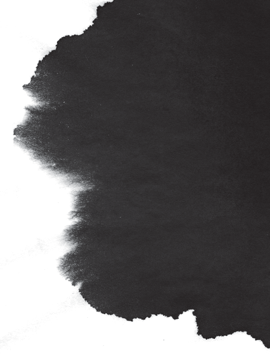
佛、等覺菩薩創造一個世界，它的原理是什麼？佛經裏的稱之爲“八識轉六識”，八識叫阿賴耶識，在八識裏只有妄想的時候叫菩薩，七識叫末那識，是阿羅漢的分別心，六識是凡夫的執着心，整個輪迴世界都屬於執着心。“八識轉六識”指的是，在菩薩的妄想層面上可以自由控制六識執着心所創造出來的輪迴世界。所以菩薩在我們的世界，包括看得見的外部世界和看不見的意識裏，都可以創造化身、製造幻覺。一個完整的輪迴世界也只是超大的幻覺而已，同樣可以被創造出來，這一切都在佛、等覺菩薩的意識裏用意念幻化出來。
目前的科學還無法證明宇宙是某個大意識裏創造出來的幻境，用佛經裏的話證明佛法的正確，本身就不符合邏輯。但還有一個間接證明的方法，那就是我們的夢境。我們所有人都做過夢，不管科學界能不能給出合理的解釋，人會做夢就是事實。
看看我們的夢境，夢裏有自己，還會出現其他人，還有動物，夢都有大環境，有高山大地，有山川河流，有天地宇宙，也有可能會做被困在狹小空間裏的夢。如果你在夢裏停留的時間足夠長，你也可以探索自己的夢境，你會發現夢裏的宇宙也同樣沒有邊際，找不到盡頭。絕大部分普通人在夢境裏無法覺知自己在做夢，把夢境當真，夢境裏遇到好事會開心，受傷會感到痛苦，有時候夢境裏受到外傷，清醒之後夢境裏受傷的部位還在痛。夢裏還會出現其他人，有去世的人，也有在世的人，夢境裏我們會和他們互動，互動過程中也會有情緒變化。如果你不否定夢是我們在意識裏創造出來的幻境，那麼有沒有一種可能性，我們現在生活着的世界也是某個超大意識的夢境。
大乘佛法認爲，一個世界由一位佛教化，是佛在意識裏創造出來的幻境。那麼佛在意識裏創造世界和我們做夢有什麼區別呢？簡單來說，佛有覺知，佛知道自己在製造幻境，所以可以控制，我們做夢時，在夢境裏無法覺知，不知道自己在做夢，所以不能控制；佛沒有執着心，沒有我見，對於夢境裏的自然規律，佛沒有“我認爲”應該如何的執着心，所以佛可以隨意改變自然規律，而我們有執着心，有我見，我們有“我認爲”世界應該如此的執着心，所以我們無法隨意改變夢境裏的自然規律。
那麼佛、等覺菩薩是如何創造世界的？在分別心《分段生死》這一小節裏講道，“守住當下妄想的執念”，或者叫“對妄想本身的執着”，是第一個執着，阿羅漢有了這個執着心就會跌落到非想非非想處天，成爲凡夫。佛、等覺菩薩知道這是執着心的情況下，跳過分別心，主動升起這個執着心，用來“守住”妄想。妄想本身遷流不息，像一條奔騰的河流，不斷地升起，不斷地變化，在這樣不斷變化的妄想裏無法創造出穩定的世界。而佛、等覺菩薩主動升起“守住”妄想的執念時，妄想的變化會變得非常緩慢，可以形成一個穩定的世界，但妄想的本質還是變化，所以世界始終在變化，只是速度變緩而已。在這裏我們要知道，佛不能創造自性，自性恆常，不生不滅，佛只是用執着心創造輪迴世界而已。
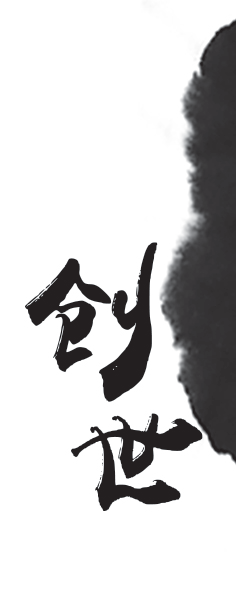
佛、等覺菩薩創造的最初世界是球形，本來變化不定的妄想，被“守住”的執念固定成一個個細小的、有實體的粒子，我們稱之爲最小的光子，是能量單位1 的光子，這樣的光子佈滿一個世界球，這個球叫非想非非想處天。
下一步就是往世界裏引入有緣衆生，從非想非非想處天的天人開始，這些天人沒有情緒，也沒有慾望，就一直靜靜地待在那裏，從我們的視角看，這些天人一直處在深定當中，但他們的執着心會進一步固化世界。世界的穩定，是由創造者主動升起的執念和衆生沒有覺知的執着心一起影響的結果。
接下來往世界裏引入第二層的天人，也就是無所有處天的天人，這些天人的執着心比非想非非想處天的天人更大，致使能量單位1 的光子結合，由四個光子結合成穩定的正四面體，天層也會開始分化，大光子會集中到世界中心，形成無所有處天，這一切都在創造者的引導下進行。創造者與衆生會一起穩定住這個變化，穩定住這個空間。
物理層面上來說，第二層無所有處天的光子是能量單位4的光子，因爲正四面體是最穩定的組合結構。中間還有兩個光子拼在一起形成的啞鈴狀結構，和三個光子拼在一起形成的平面三角形結構，由這些能量單位2 和3 的光子們形成的中間層。
中間層的光子很不穩定，能量單位2 的光子在移動當中被其它光子撞擊到中間部位就會斷開。能量單位3 的光子是平面三角形，中間位置被撞擊時也會分裂。所以整個中間層的粒子們在移動過程中不斷撞擊，一直處在組合和分裂當中，唯有4 個光子拼成的正四面體是最穩定的結構。
非想非非想處天人身體由能量單位1 的光子組成，他們的身體是發光的球體，叫陽神。他們可以通過中間層下到無所有處天，因爲中間層裏同時存在能量單位1 和2 和3 的光子，但無所有處天的天人無法通過中間層上到非想非非想處天，因爲無所有處天人的身體是由能量單位4 的光子組成，在經過佈滿更小光子的中間層時，大光子會被擊碎。
外層到內層，光子的能量單位變成了4 倍，所以外層天界的空間是內層天界的4×4×4——43=64 倍，真實的大小之差甚至更大，因爲中間還隔着2、3 光子組成的中間層來分隔。
再往裏就是識無邊處天，其基本光子同樣也是外層的4倍。能量單位是4 的二次方，16，都是以4 倍往上增加。這個天層同樣比外層天層更小，外層天層又是內層的64 倍——4×4×4。大小比例只能大概這麼說，從我們的視角看，沒有辦法確切測量空間大小，而且中間還隔着兩個中間層。
再往裏就是空無邊處天，是4 的三次方光子組成，能量單位是64。
到這裏是無色界天的4 個天層，從外往裏一層一層縮小，內層世界的粒子能量單位越來越大，都是以4 倍的方式往上增加。
再往裏是四禪天的淨居5 天，色究竟天、善現天、善見天、無熱天、無煩天，基本光子的能量單位是44、45、46、47、48，組成他們身體的光子變得越來越大，移動速度會越來越慢。但在這個級別的天界，沒有移動的概念，所以天人們基本上都處在深定當中。
四禪的第五天，叫無煩天。無煩天是48 的光子。再往裏一層是四禪天的第四天，叫無想天，由49的光子所組成，在這層天界會出現黑暗。
這個黑暗從物理學上怎麼解釋？黑暗與光的區別是什麼？
所有擁有視覺的衆生，包括我們人類的視覺，在光子層面上都屬於動態視覺。什麼叫動態視覺？自然界裏，蛇、青蛙之類的動物只能看到移動的物體，不移動的物體在他們的眼睛裏是模糊的，這種視覺叫動態視覺。我們的視覺在光子層面上都是動態視覺，光子在振動的時候，在我們眼裏它是光，是明亮的，光子不振動的時候就會變成黑暗。用道家的陰陽觀來說，振動叫陽，不振動叫陰。
那麼光是怎麼傳播的呢？目前科學界認爲，光子是細小的小球，傳播靠光子的移動來完成。實際上光子在傳遞光的時候，不進行遠距離移動。光子佈滿整個虛空，在各個位置的密度幾乎沒有什麼太大差別，各區域的密度基本都一致。光的傳播是靠光子傳遞振動的方式進行，一個振動的光子，把振動傳遞給和它臨近的下一個光子，這個光子又把振動傳遞給下一個光子，這樣層層往下傳遞。當光子振動的時候，在我們眼中它是明亮的，每一次傳遞振動的時候，能量會在虛空中消散一部分，傳到後面，振動的能量基本消耗殆盡，後面的光子就不再振動，那個時候在我們眼裏變成黑暗，這是光子傳遞方式。
也就是說，光的傳播方式和聲音一樣，聲音也是空氣中的氧分子、氮分子等粒子們傳遞振動的方式來傳播，並不是帶着振動的粒子直接飛到我們的耳朵。我們耳朵周邊的空氣粒子一直在那裏，我們能聽到遠處的聲音，是空氣粒子們把振動傳過來的結果，光也是這樣傳播的。
天人的身體是發光的球體，我們叫陽神，但是天人和我們人間的凡夫一樣，也會認爲發光的陽神球體是自己的身體，這叫凡夫的顛倒妄想。在這種情況下看天人的移動，有一個天人在A 區域的時候，這個區域的光子在發光，因爲它們在振動。等他移動到B 區域的時候，B 區域的光子振動發光，是光子以傳遞振動的方式，把振動傳遞給了B 區域的光子，使B 區域的光子發光，而A 區域的光子一直停留在A 區域，並沒有移動到B 區域，但天人們會以爲自己飛到了B 區域。
作爲天人，如果堅定地認爲自己的身體是由一個個發光的小球體——光子所組成，在他看來，自己的身體到底是不是真實的呢？天人可以從A 區域移動到B 區域，但並不是A 區域的光子移動到B 區域。他在A 區域，A 區域的光子就會振動發光，他到了B 區域，B 區域的光子振動發光，而A 和B 兩個區域的光子各自不同，本來就不一樣，而且所在的區域也不一樣。所以對天人來說，發光的球體——陽神就是自己的想法，本身就是錯覺。
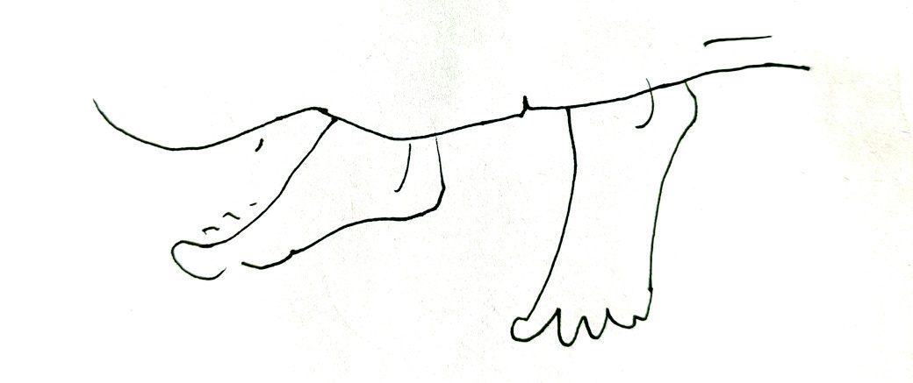
如果這個說法難以理解，那就放到我們人類身上來看，如果一個人學會奪舍，他可以隨意進入別人的身體，從這個肉身跳到那個肉身，那麼這個人還會認爲某個肉身是自己的本體嗎？這是空間位置上的移動，還有時間上的位移，我們每個人都在輪迴，每一次輪迴都會得到新的肉身，如果你相信輪迴之說，那你還會認爲現在的肉身是自己的本體嗎？
回到天人身上，如果光子本身不是天人的本體，那麼振動是本體嗎？也不能這麼說，因爲振動是依附於光子而存在的，是光子的一種存在方式，先有光子，後有光子的振動，沒有光子，又怎麼能說振動？
所以我們也不能說天人的身體是振動，也不能說天人的身體是光子。雖然他是光子組成的，但不能說這個光子就是天人固定的身體，是天人的本體。
以上內容是爲了破天人的我執——對肉身的執着、身體的執着所說。
再往裏看，四禪天的下四天是無想天、廣果天、福愛天、福生天。到這裏光子都是4 倍疊加，無想天的光子能量單位是49，然後是410、411、412。
再往裏是三禪三天，遍淨天、無量淨天、少淨天，光子的能量單位是413、414、415。
到了三禪第三天——遍淨天，這一層天界和外層福生天在結構上有所不同。從最高的非想非非想處天到四禪第一天福生天爲止，總共13 層天界，都像洋蔥一樣一層一層縮小進來。到了遍淨天——三禪第三天，這一層天界不是整層球面，而是在一層球面上分成了1000 個小球。
爲什麼從遍淨天開始要分區域呢？因爲這一層天界開始產生情緒，有了情緒就有慾望，其中也有與他人互動的慾望，有互動就會造業。所以從這裏開始，把天界分隔成多個區域，不讓沒有緣的衆生見面，不能見面就無法造業。
和我們共處一個世界小球的衆生都是和我們有緣的衆生，和我們無緣的衆生，佛就放到其他小球裏，讓我們不能見面，無法造業。比如說，有A、B、C 三名天人，A 天人和B 天人有業緣，B 天人和C 天人有業緣，但是A 和C 沒有業緣。這種情況下，就造兩個分隔開來的世界球。A 和B 放到一起，讓他們造業或者消業。然後再造一個世界球，在這裏只放C，等B 和A 消完了業，就把B 拿出來放到C 所在的世界球裏，讓他們再造業或者消業。就是不讓沒有緣的A 和C 在一個球裏邊見面，不讓他們造業。
度人最難的還是消業，傳授理論知識並不難，打坐、磕頭、唸佛這些修心的方法相當於掛機練級，持之以恆就可以，沒什麼難度，任何菩薩、羅漢都可以教。消業纔是最難的，因爲消業指導要多次投胎到凡夫身邊，反覆地指導，這是相當繁瑣的工作，也非常困難。所以最好的方法就是把沒有業緣的衆生直接隔開，不讓他們見面造業。
科學界有一個說法叫費米悖論，按照宇宙之廣闊程度，應該還存在很多其他智慧文明，但是到目前爲止，人類在可觀測的宇宙範圍內沒有發現智慧生命，這麼設計宇宙的底層邏輯就是爲了防止無緣衆生之間再造新業。
再看三禪三天的結構，這三層天界不是洋蔥般往裏套的結構，而是像糖葫蘆一樣穿在一起，一個遍淨天世界球下方連接着無量淨天世界球，外層的遍淨天球比下一層的無量淨天球大64倍以上，兩個球連接處還有重疊的部分，我們稱之爲“天門”。同樣的結構，無量淨天世界球下方連接着少淨天世界球，外層的無量淨天球比下一層少淨天球大64 倍以上，大、中、小三個球穿在一起，在一個球面上分佈成1000 個串，大球在外，所有小球指向大世界的中心。
然後是二禪三天——光音天、無量光天、少光天。光子的能量單位是416、417、418。光音天在少淨天之下，在少淨天球指向大世界中心的方向，有1000 個光音天球黏在上面，就像昆蟲的複眼一樣，一個個小球密密麻麻地鑲嵌在一個大球上，但沒有覆蓋整個大球的球面，只分布在一個方向。少淨天和光音天的比例遠遠超過64，1000 個光音天球連接着一個大的少淨天球，每一個連接處都有一點重疊的部分，光音天球與光音天球之間有空間隔開，兩個球裏的衆生無法接觸。再往下，光音天、無量光天、少光天，這三個世界球的結構和三禪三天一樣，都是大、中、小三個球穿在一起的結構，在一個大世界裏就有一百萬個二禪天串串，都是大球在外，小球指向大世界的中心。
光音天的衆生出現注意力，注意力形成視覺，眼根出現。這個時候眼根不像我們的眼球一樣是有實體的器官，只是注意力的產生形成了眼根境界。
下面的無量光天出現冷暖覺。從物質的角度看，熱是光子膨脹的結果。天人的陽神身體是發光的球體，由很多光子組成，當產生情緒時，陽神球中心位置會形成引力點，當出現注意力時，在陽神邊緣處形成引力點，在兩個引力點的牽引下會出現光子的車輪式旋流。
在這個旋流中，光子們互相碰撞。每一個光子都是球形，外邊有一層薄皮，像氣球一樣。氣球碰撞會怎麼樣？氣球的表皮會往裏縮進去一點，然後再彈出來，彈出來的時候，它比原來的那個位面會鼓得更多，同時兩個氣球會向反方向移動，每一個氣球在運動過程中和周邊的氣球快速地、無數次地碰撞，這個碰撞頻率極大，結果每個氣球看上去都有所膨脹，比原來大了一圈，這就叫發熱，天人的冷暖覺裏覺知爲熱感。
發熱膨脹的光子傳遞熱能的方式，和傳遞振動傳播光不一樣。光從A 傳播到B 是傳遞振動，A 的光子並沒有直接移動到B 處。但是這個熱能的傳播需要有真實的位移，在位移過程中，膨脹的光子會和周圍的光子碰撞，把膨脹的能量傳過去，自身的熱能會一點點減少。所以它比傳遞振動的方式傳過來的光，消散熱能的速度要更快，因此熱能的傳播範圍比光的傳播範圍小很多。
假設一個小電燈一開，燈光可以傳很遠的距離，但是小電燈裏產生的熱能，它只能傳到很小的範圍裏。因爲這個熱能是膨脹的光子往外飛的過程中傳遞和消散的，它傳遞熱能的速度沒有比光的傳遞振動的速度快，這是熱和光的區別。
所以我們看太陽，陽光裏既有傳遞振動過來的光，也就是沒有熱能的光，也有直接從太陽飛過來的膨脹的光子，就是帶着熱能的光。但在我們的觀測技術下沒有辦法分別，因爲帶着熱能的光子，同樣也帶着振動，光子們既振動又帶膨脹的狀態下，向地球飛過來，期間會和虛空中佈滿的其他光子碰撞，熱能會消散一部分。只是在虛空中，光子的分佈是比較均勻的，所以熱能消散的速度並不那麼快，到了大氣層內，除了光子外，還有很多粒子，熱能會快速地消散掉。
熱能的消散過程，在沒有引力的太空和有引力的地方有所不同。光子傳遞振動不管有沒有引力都一樣，因爲沒有遠距離的位移，光子的位置基本不變的情況下，只是把振動傳遞過去，所以不受引力的太大影響。但是傳遞熱能需要光子膨脹，體積就會變大，在引力作用下它就會變輕。相比之下，體積沒有變化的光子們密度更大，所以它們會往下沉。這樣的結果，熱能在有引力的地方都是往上浮的，這和地球表面的火苗向上燃燒是一樣的原理。
下面的少光天出現聽覺，從這裏開始天人已經不再是純粹的光子身體，開始出現粗重的粒子，光子的振動被感知爲光，即是視覺，粗重粒子的振動被感知爲聽覺。
再往裏是初禪三天——大梵天、梵輔天、梵衆天。光子的能量單位是419、420、421。大梵天的結構和光音天一樣，在少光天世界球的下方，指向大世界中心的方向，會出現1000 個大梵天世界球。
從大梵天開始，往下的梵輔天、梵衆天、他化自在天、化樂天、兜率天、夜摩天、忉利天、四天王天，到我們人間所處的這個世界球，一共十個世界球全都是串起來的結構，外層的球比下層的球要大64 倍以上。一個大世界有十億個串串，由10 個由大到小的世界球穿起來的串串。
從我們視角看，在銀河系的中間有一個大黑洞，那就是須彌山。因爲光傳過來的時候被引力彎曲，在我們看來，整個銀河系像個圓盤狀。但實際上銀河系的中間是鼓起來的，像圓錐體一樣的狀態，我們的地球在圓錐體的山腳下，4 個旋臂當中的1個，接近末端處。中間這個硬圈叫須彌山，它穿過四天王天，通向忉利天，在忉利天中有頂，頂上有個天宮。
因爲上邊的世界球大，下邊的世界球小，所以這個圈是倒立的圓錐體。像一個大頭釘往下插進來，插到銀河系中間位置。但在我們眼裏，那邊是一片黑暗，因爲那邊的光子和我們的光子不是一個能量單位。在我們這個世界範圍內，光子的能量單位是428。四天王天光子的能量單位是427，光子的能量單位不一樣，我們就看不見。
以上是整個宇宙的創造過程。
在我們這個世界，除了畜生道，還有餓鬼道。餓鬼道光子的能量單位比428稍微大，應該是5——多加了一個光子，並不是乘以4 變成429。餓鬼道與人道重疊在一起，所以有些人能肉眼見鬼，在人間遊蕩的鬼也能看見人。
從鬼道衆生眼裏看人間，人間的光子比組成他們身體的光子更小。更小的光子振動頻率超過某個閾值，也就是亮度達到一定程度，會震碎更大的光子。所以鬼怕光，怕被陽光直射，到了白天，那些在人間遊蕩的鬼通常會躲進陰暗的角落裏。至於鬼道的世界，一直是灰濛濛的、像大霧天一樣的天氣，永遠看不到太陽。
再往下是地獄，光子的能量單位是429，但是地獄也分很多層，越往下光子的能量單位越大，而且地獄的時間尺度也會變得更長。人間過一天，在地獄裏可能是10 年、20 年。地獄是最接近大世界中心點的小世界。
整個宇宙的粒子從中心點順着世界小球們的縫隙向外流動，在外層循環後，順着世界球裏邊的通道再向內流動，這也是一個循環。只不過我們無法感知這種微循環。
風劫發動的時候，從大世界最中心位置，也就是地獄下方開始往外噴細小的光子，會一直噴到遍淨天，從地獄到三禪第三天的遍淨天爲止全部摧毀。遍淨天的光子能量單位是413，風劫時吹出來的光子其能量單位小於413，大光子在小光子的高速撞擊下會被徹底撞碎，同時會釋放出極大的能量，像核裂變一樣。
形成一個世界的基本光子被撞碎，在這個世界內就沒有什麼東西可以留存下來，所有物質全部被打碎成霧狀，所有的生命全部死亡。所以一次風劫發動之後，三禪天以下的世界進行全面格式化，衆生和器世界全部摧毀重建。四禪九天和無色界四天在法界大循環時也會進行一次格式化，裏邊的天人也會死。
到這裏總共30 層世界，人間在第29 層，上邊是28 層天界。人間有畜生道，還有平行的餓鬼道。修羅在天界，四天王天、忉利天都有修羅。
忉利天和四天王天是地居天，這裏的衆生都生活在土地上。忉利天又有33 個區域，中間有一個最大的區域，天宮裏住着釋提桓因。
整個娑婆世界像一個大洋蔥，無色界四天加上四禪九天，一共13 層天界就像洋蔥一樣一層套一層。往下三禪第三天，分成1000 個小球分佈在一個球面上。在三禪第一天的下邊，又出現了1000 個小球形成二禪第三天。然後在二禪第一天的下邊，又出現1000 個小球形成初禪第三天。這樣10003，有10 億個初禪三天。初禪第三天下邊，10 個小球串連起來。這是整個娑婆世界的基本面貌。
下面講講世界的毀滅過程。先是火災——火劫，從初禪天開始，下邊這個10 個層，把這個10 個層往外層推，把大光子層推進小光子層裏，裏邊的大光子就會被快速運動的小光子撞碎。
現在地球所處的世界球正在經歷這個過程。把下邊大光子層往上邊小光子層裏推，越往上空間就越大，所以大光子層世界球會膨脹。科學家們說，現在我們觀測到的整個宇宙，它的膨脹速度已經超過了光速。在膨脹的過程中，世界球內部的壓力逐漸減小，粒子都會撕碎，在宇宙空間中會出現光子層面上的核裂變，虛空當中會出現無數火花，最後變成一團火，燒遍虛空的火，就叫火劫。初禪三天、欲界六天、人間、地獄，這些世界會在火劫中毀滅。
佛經裏說，7 次火災之後會出現一次水災，水劫從二禪天開始，把二禪天以下的所有世界往下拉，往大光子層里拉。小光子進入大光子層會匯聚凝結，虛空當中會出現霧氣，不是我們能想象到的大洪水，而是宇宙空間產生霧氣，霧越來越濃，最後整個世界都會凝結，不像地球的水，更像果凍，這是水災。
然後是風災，實際上整個大法界都在進行旋轉，它不是固定的，像球一樣在轉，但是沒有自轉軸，所以旋轉的軌跡不在一個平面上形成圓圈，是在球面上斜着轉。風災發動時，1000 個三禪三天的世界球會帶着下面所有的小球，在同一平面上快速地轉起來，加速過程中，每個球外面縫隙當中的小光子會進入大光子形成的世界球裏，會把大光子給擊碎。這個擊碎和火災發動時的擊碎不是一個性質，火災是把世界球往外推，空間會膨脹，虛空中出現火花，核裂變式的擊碎。但風災是橫向快速移動，空間並不會膨脹，所以單純地會被物理擊碎。
這個風災和上一節講的風劫有所不同，風災是局部性的刷新，可以讓一部分世界球快速移動，其他部分保持原速。而風劫呢，由大宇宙的中心噴發出小光子，對所有三禪天以下的世界進行格式化。
四禪天開始到無色界天，也有它的刷新方式，一般在新佛出世的時候會對整個大世界進行全面格式化。
火災、水災、風災，分別對應衆生的貪嗔癡。
嗔恨心和淫慾屬火，初禪天的衆生也有細微的嗔恨心，欲界六天以下衆生有淫慾，加上更大的嗔恨心，所以初禪天以下世界會感召到火災。
貪屬水。身貪六根境界，六根是用來貪外境的工具。對應二禪天以下的視覺、冷暖覺、聽覺、觸覺、嗅覺、味覺。六感都可以理解爲對外塵的貪執形成的覺受。所以二禪天以下的世界會感召到水災。
癡屬風，在人間這個層面上，不信因果就叫癡。在三禪天，先有情緒，情緒會催生慾望，有慾望就有苦，沒有慾望就沒有苦，因爲不知道慾望是痛苦的因，所以叫癡。三禪天以下的世界會感召到風災。
再往上是四禪九天和無色界四天，那裏的衆生沒有情緒，所以不能靠火、水、風三災來毀滅。當整個世界進行全面格式化的時候——從大世界中心、地獄下方開始噴發出最小的光子，整個世界全部刷新。每次新佛出世的時候都會進行一次全面格式化。
目前我們所處的這個世界球，正在往火災的方向走，宇宙正在膨脹，被推向外層，終有一天會迎來火災，不過目前人類文明可能堅持不到那時候。
接下來講講速度和時間的關係。首先，整個世界都在圍着一箇中心旋轉，雖然沒有自轉軸，但它還是在旋轉。那爲什麼必須旋轉纔可以？在《坐禪1》中講到，當衆生出現情緒的時候，陽神中間會形成引力點，出現注意力之後，會在陽神外圍出現一個引力點，在兩個引力點的作用下，陽神物質也就是光子會做車輪式旋流。衆生的情緒和注意力形成的引力可以穿透任何維度，也可以無限疊加，衆生聚集得越多，引力就會越大。在一個佛世界中，地獄道衆生的數量最多，所以世界中心部位的引力非常強，要讓大世界球穩定運轉，必須讓世界球持續旋轉，用離心力來平衡引力。
初禪天到人間由10 個球串在一起，它們同步旋轉，旋轉的角速度是一樣的。那麼下邊世界球的線速度就會小，上邊世界球的線速度就會大，越上層的世界線速度就會越大。速度越快，時間越慢；下邊速度越慢，時間就快。所以在人間人類老得快，上邊天人就老得慢，可以這麼理解整個世界。
越是外層的世界，轉動的速度越快，內層的世界轉動速度慢，到了地獄轉動的速度非常慢，速度非常慢的情況下，地獄衆生的時間過得非常快。但是一日之間萬死萬生的過程並不變，所以就算時間過得快，生死的次數還是那麼多。人間過一天時，地獄過10 年，這還是上層地獄，那麼人間過一天時地獄裏的衆生要死幾次呢？365×10×10000=36500000。
世界有成、住、壞、空四個輪轉過程，每次大毀滅之後重新形成的階段叫成，衆生可以活動的時間段叫住，崩壞的過程叫壞，之後有一段時間宇宙一片死寂，粒子均勻分佈，這個階段叫空。如此循環往復，是物質世界的輪轉過程。業的總量中，善業和惡業所佔的比例。
比如說，我要去四禪天，首先我自己的修爲要達到四禪，就是徹底滅除情緒的境界。其次要看業的狀態，我和衆生互動，會讓衆生的情緒發生變化，善行會引起其他衆生的好情緒和對我的美好祝願，惡行會引起其他衆生的壞情緒和對我的報復執念。在諸佛同體的前提下，以上兩種情緒和執念會同時反映到我身上。當其他衆生對我的好情緒和美好祝願勝過壞情緒和報復執念時，我就可以去往四禪天的天界。如果是壞情緒佔優勢，我就去不了四禪天的天界，我們稱之爲業障重。
天界的天人往下墮落，也是兩個原因，一個是在天界停留的時間長了，自己開始出現情緒或執念，還有一個是福德消耗殆盡。佛經裏都用福德解釋，福德就是善行引起的、其他衆生的好情緒和對我的美好祝願，隨着時間的推移，這些衆生的好情緒和對我的美好祝願會逐漸減弱，致使其他衆生對我的壞情緒和報復的執念在業的總量中的佔比增加，天界無法造惡業，但好情緒的減弱，會間接導致壞情緒的比重增加。
那麼其他衆生對我的壞情緒和報復的執念隨着時間的推移就不能減弱嗎？絕大部分情況下不會減弱，而是增強，這是善業和惡業的區別。大家回憶過去，想想自己曾經被人傷害的事情，每每想起是不是又痛苦憤怒一次？如果你是學佛修行的人，知道意識和業的原理，願意放下過去就好，但絕大部分衆生都沒有這種正見，所以說惡念會念念增長，惡報越拖越嚴重。相反，絕大部分人對恩人的感激之情會逐漸減弱，只記得自己做的好事，不記得別人幫助過自己的事，就算記得，也不會時常憶念，想起的次數絕對比受傷害的事要少得多。
具體時間的算法在佛經裏講到，但是“劫”這個時間單位對我們來說，只能是一個概念，無法用我們認知裏的時間尺度來算。因爲這個“劫”，和我們認知裏的一年365 天未必能對應起來。地球的一年是365 天，但有些星球的一年不是365天怎麼辦？所以說，這些都是形象化的表達而已，大家在這個問題上不要拿數字計算，那樣很多事情都無法解釋。
這一篇講各天層的衆生。
從上面開始講，無色界四天到四禪九天，這十三層天界的衆生是純光體，沒有任何情緒，也就不會產生慾望。他們過得非常平和，在我們眼中他們一直處在深定中，他們不會造業，也不能消業——因爲沒有和他人溝通的慾望。
佛一開始往下墮落的時候並沒有業，只有與他人互動之後纔會造業。佛墮落時在各天層停留，是全靠自己意識裏產生的執着來停留，是純粹的個人妄想，與他人無關。
但是如果有衆生從下邊開始往上修，在已經造了很多業的前提下，要想通過修行升到天界，需要滿足兩個條件，一個是意識層面上的修爲要達到各天層的標準，還有一個，業的狀態也要達到各天層的標準。在這裏不說是業的總量，而說是業的狀態。那麼業的總量和狀態有什麼區別呢？業簡單分善業和惡業，總量指的是善業和惡業單純相加後的總合，而狀態指的是
我自己也曾經被人傷害過，心裏罵了對方好幾年，但幫助過我的人，我很少憶起。學佛修行後，儘量不去想過去不愉快的事，每次做功課前都會刻意地想起幫助過我的人，希望他們一切都好。就算這樣，一般給我小恩小惠的人基本想不起，只想起幾位幫助較大的人。
所以說，造惡業的影響隨着時間的推移會越來越嚴重，善業的影響會逐漸減弱，在這裏只說“影響”，不說“果報”，“影響”是持續性的，你傷害其他衆生，那些衆生對你的壞情緒和報復的執念會一直持續到完成報復爲止。“果報”是相對短暫的，哪怕一生都在受某一惡業的果報，在無限的生死輪迴中都屬於短期事件，只要受完報，影響就會消失。
因此，得出的結論是，天人必然會墮落。
接下來是三禪天，這裏開始出現情緒，爲了不讓無緣衆生之間見面造業，創造者刻意把此天層分割成一千個小球。三禪天的天人有情緒和細微的慾望，其中也包括互動的慾望，但還沒有開始行動，要與人互動，先要找到對方，要找對方需要先移動，要移動需要先用注意力鎖定方向，有了注意力就會產生眼根從而跌落到二禪第三天。所以三禪天的天人只有細微的慾望，但行動還未開始。
因此，佛開始往下墮落的時候，到了三禪天也不會造業，但是墮落到下邊世界，造了業之後再往上修，修到三禪天時，這些衆生已經有了造業的記憶，也就是互動的記憶，因此他們懂得互動。所以從下邊修上來的衆生，到了三禪天也會和其他衆生互動交流，雖然慾望不那麼強烈，但還是有互動的行爲，還是會產生業。
三禪天的業只是單純交流的業，而不是相互之間給對方製造各種壞情緒的惡業，這裏的慾望很細微，不會傷害到他人。但也不是善業，因爲三禪天沒有實體物質，天人也沒有貪念，想行善也不可能。
再往下二禪天——光音天、無量光天、少光天，這裏會出現視覺、冷暖覺、聽覺，這三種感知能力都是對外境的貪著，在不斷感受外境中，習氣會逐漸加重。
情緒方面，我們已經知道了情緒的發展過程：疑情、思情→不安→焦躁→歡喜心（幸福感）→擔憂→恐懼→傷心→憤怒→羨慕嫉妒恨。從疑情、思情到不安、焦躁算苦情，但是還沒有發展到歡喜心。焦躁之後我們會動起來，試圖去解決這些苦情，這裏會產生注意力，當我們找到想要的東西或者其他人之後就會產生歡喜心。歡喜心之後出現的各種苦情，都屬於嚴重的苦情。所以我們可以用歡喜心作爲分界線，把情緒分成輕重兩個階段，歡喜心之前的苦情是輕度苦情，歡喜心之後的苦情是重度苦情。那麼二禪天的情緒是從疑情、思情開始到歡喜心爲止的輕度苦情，這裏的天人還是陽神狀態，是發光的球體。在二禪天與視覺、冷暖覺、聽覺對應的所有外境都可以共享，也就沒有爭奪，陽神可以重疊在一起，人與人之間也就沒有佔有慾。這裏的天人也會互動交流，但不能造惡業，可以造輕微的善業。
再往下是初禪天，大梵天、梵輔天、梵衆天，對外境的貪著會發展出下三根，觸覺、嗅覺、味覺。六根齊備之後，感受外境的習氣都會進一步加強。到了初禪第一天梵衆天，這裏會出現味覺，同時出現“喫”這種行爲，“喫”在整個天界演化過程中是一個非常重要的轉折點。
有了“喫”，纔有了“個人所有物”這個概念。因爲“喫”這種行爲會把外物放進自己的體內，再經過一番消化後從體內排出，此時物的外相和性質都已改變，不再是原來的物，俗稱“大便”。所以用來喫的物是不能共享的，一份食物我喫了，其他人就喫不了，食物只能分享。
我們再仔細看六覺，除了味覺外其他五覺分別是，嗅覺、觸覺、聽覺、冷暖覺、視覺。與這五覺對應的外境都可以共享，好聞的香氣大家可以一起聞，好摸的東西大家可以一起摸，好聽的音樂大家可以一起聽，舒適的溫度大家可以一起享受，好看的東西大家可以一起看，一切都可以共享。
唯有“喫”不能共享，我們喫進肚子裏的食物再排出來就已經發生了變化，不再是原來的食物。“喫”會讓原來的食物有所損耗和變化，因此我們享受食物，首先要把食物分配給每一個人，這每一份食物都成爲個人所有物，之後再各自享受，這叫“分享”，不叫“共享”。在對方允許的情況下，我們可以喫別人的那一份，這叫“贈予”，如果在對方不允許的情況下喫別人的那一份，這叫“搶奪”，會引起對方不好的情緒，是造惡業。
我們瞭解了“喫”和“所有物”的概念，就可以知道，在業的方面，梵輔天以上的天界不能造惡業，可以造輕微的善業。梵衆天以下的天界可以造惡業，也可以造善業。只不過梵衆天天人的貪念還比較輕，各種享受的資源和食物非常豐富，所以天人們不會互相爭奪食物。
情緒方面，初禪天的天人有輕度苦情和歡喜心，重度苦情只是有了一點苗頭。
再往下是欲界六天，這裏有淫慾和淫行。忉利天、四天王天是地居天，這裏的天人生活在地上，他們的淫行和人間一樣。他化自在天、化樂天、兜率天、夜摩天是空居天，他們像鳥一樣飛來飛去，不需要着陸。但是也有淫行，有生殖器官的接觸。
從業的層面看，欲界六天有了淫慾和淫行，也就有了帶有佔有慾的愛情，所以從這裏開始出現有關愛情和淫慾的業，惡業、善業都可以造。
情緒方面，欲界六天的天人有輕度苦情和歡喜心，重度苦情也有所發展，但沒有人類這麼嚴重。
以上是天界衆生有關業和情緒方面的大概情況。高層的天界不能造業，也不能消業，一個天人福德消耗殆盡之後墮落，是自己意識層面上好的情緒減弱，再加上其他衆生對他的好情緒和美好祝願減弱的結果。佛經裏說，天人墮落到人間，也不失大利，還能當個小國王，因爲之前的善行並不因爲當了一世天人就會徹底消失，這個善報還在。
六慾天之下是人間，這裏出現殺業，人道和畜生道生活在一個空間裏，人類之間有殺戮，畜生之間也有殺戮，人與畜生之間更多的是單方面的殺戮。餓鬼道與人間處在平行空間，普通人看不見餓鬼道衆生，但有些人能看見。餓鬼道也是充滿殺戮的地方，餓鬼之間會互喫，甚至有些鬼王專門喫小鬼，拿小鬼當食物。人道、畜生道、餓鬼道，都是充滿殺戮的地方，殺業是最大的惡業，能造殺業的地方，同時也能造善業。
情緒方面，人類、畜生、餓鬼有一切情緒，其中重度苦情的佔比大於輕度苦情，人類的重度苦情還較輕，但我們回顧人生，痛苦煩惱的時候應該遠遠多於開心的時候。
從業的角度來看，人間既可以造業，也可以消業，是最容易造業的地方，也是最適合修行的地方。
畜生道主要是受報的地方，畜生道也有專門的管理員進行管理，從投胎到死亡，中間的命運軌跡都會嚴格管理。畜生與人相比，沒有自主選擇權，也就沒有什麼隨機事件和改變命運的可能性。驅動畜生的只有兩個因素，一個是自身的習氣，畜生的習氣很重，嚴重蓋過理性，所以畜生基本上會被自己的習氣推着走，餓了喫，困了睡，到了交配季節就交配，這個交配季節也是設計進去的，有些動物有，有些動物沒有。
另一個因素是劇本，一頭食肉動物一生喫多少其他動物，最後死在哪個動物的口中，這些全都寫在劇本里，幾乎所有的動物都無法逃脫劇本里寫好的命運。
這麼安排的目的就是要大量消耗掉惡報，主要是殺業帶來的惡報。但畜生道沒有辦法造善業，畜生幾乎沒有行善的理性和智慧。
下邊的餓鬼道是用來消耗掉不好的我執和惡念的地方，這都屬於個人意識層面上的消磨，不能完全算受報，不像人道和畜生道一樣，受報完就可以結束一段惡業。餓鬼道的衆生消磨掉一定程度的我執和惡念後會投胎到畜生道或者人道，承受真正的果報。
最下面是地獄。墮入地獄有兩個條件，一個是個人意識層面上惡念極度強烈，壞情緒和壞願望遠遠多於好情緒和好願望。另一個是所造的惡業非常多，給其他衆生造成了很多傷害，其他衆生指向自己的壞情緒和報復的執念遠遠多於好情緒和美好祝願，這兩者重疊在一起反映到自己身上，就會墮入地獄。
地獄並不是消業的地方，它對個人的作用是把自身的惡念和壞情緒慢慢消磨掉，在極端殘酷的環境中讓人有所悔改。當惡念和壞情緒有所減弱後，就可以投胎去餓鬼道進一步消磨。
如果一個人在人間裏殺了100 個人，那在地獄裏死1 萬次也不算消業，只是讓人體驗被殺的痛苦，而產生悔改之心，等投生到畜生道或者人道的時候，曾經被殺的100 人還是會來複仇，等受完報纔算真正消了業。
《地藏經》裏說：作惡的衆生在地獄裏會待很長時間，然後去餓鬼道又待很長時間，再到畜生道待很長時間，最後才能投胎到人間，到了人間，多被惡業來結其心，也就是受惡報，過程中又起惡念造惡業，然後又墮惡道。
總結一下，地獄道和餓鬼道都不能直接消業，只是把個人的惡念和壞情緒消磨掉，畜生道開始可以消業，主要是被動消殺業，到了人間纔可以消殺業以外的其他業，還可以主動造善業。
人道和畜生道共用一個空間，這裏是真正消業和造業的中間地帶，算是大型考場。有人問：爲什麼最後成佛一定要在人間？因爲只有在人間才能真正消業。
等覺菩薩在成佛前，必須用報身投胎到人間把最後一段業消掉，其它世界無法消，尤其是殺業，只能在人間消。天人根本沒有殺生喫肉的習氣，所以不能消殺業。餓鬼道也不能，餓鬼道衆生擁有很強的惡念和壞情緒，等覺菩薩如果投胎餓鬼道，會有很多不相干的餓鬼來干擾，編寫命運劇本和提供保護的難度大幅提高，而且等覺菩薩的業和心性與餓鬼道嚴重不匹配。要成佛不僅要消業，還要把對方度到阿羅漢，餓鬼道的衆生雖然也能修行，但從來沒有直接從餓鬼修成阿羅漢的例子。所以等覺菩薩不能去餓鬼道，只能在人間消業。
在人間，有關五戒（殺盜淫妄酒）的業全都可以造，同時也可以消。關於殺業，可以殺生造惡業，也可以放生造善業，也可以被殺消業。關於盜業，可以偷盜造惡業，也可以佈施造善業，也可以被偷消業。關於淫業，可以強淫他人造惡業，也可以勸人戒淫造善業，也可以被強淫消業。關於口業，用言語可以欺騙他人、傷害他人、謀取不當利益等造惡業，也可以用柔軟恭敬語讓他人開心，可以廣說正法度人，這些都是善業，也可以被他人的言語所傷害而消業。因此人間纔是造業、消業、傳法度人最好的世界。
往上看，六慾天雖然有淫業，但沒有殺業，因此在六慾天可以造淫業、情業，同時也可以消，但無法消殺業。而且六慾天的環境很好，願意修行的人很少，資源也不匱乏，在六慾天修行和行善都不如人間方便，因此真正要修行和消業還得來人間。
再看看佛法在各層世界的情況。從非想非非想處天到梵衆天，這些天的天王、天主都學佛，是釋迦牟尼佛創造娑婆世界後刻意安排的結果。但是到了六慾天中的他化自在天，這裏的天王叫魔王，是專門破壞佛法的人，佛也只能任他搗亂，畢竟在新造的世界裏，修出來的人並不多，人手嚴重不足的情況下，也只能暫時放任魔王的存在。
再往下化樂天、兜率天、夜摩天、忉利天、四天王天，這些天的天王都是學佛的人。四天王一開始障礙佛法，後來在佛的感化下皈依佛，成爲護法善神。因此，所有天界都沒有人間般的政治鬥爭，都是天王統治下的絕對統治。在神的統治下，不可能造什麼過分的惡業。小的惡業可以有，但是大惡業一旦造下，懲罰馬上會到。因爲天王有神通，他知道所有天人的想法，同時也可以知道一定程度上的因果。加上天人本身就很少起惡念，天界一片祥和。
到了人間，分上行文明、下行文明和動物世界，在這裏只有下行文明纔可以傳播佛法。這些內容在後面的章節中會詳細講。
在餓鬼道里，也有些鬼王學佛，還有十殿閻羅中第五殿閻羅王是佛的弟子。佛向他傳授過《金剛經》，所以他平時頭上頂着一部《金剛經》。目前還有十殿閻羅中的一位王投胎在人間，專門出家學《華嚴經》，但發心不是一心向佛，而是羨慕那個頭上頂着《金剛經》的閻王，他要學一部更高端的經，學《華嚴經》好回去壓第五殿閻王。
至於普通的餓鬼道衆生，他們無法自己學佛修行，需要在人間的親人爲其搭橋樑，鬼道也有學習佛法的地方，但只有人間的親人爲其唸經做功德的時候，他才能去學習。但凡一心求佛修行的人都不太可能墮入餓鬼道，那些墮入餓鬼道的衆生都是惡念強烈、業障深重的人，自己升不起學佛修行的大願，只能靠人間的親人幫助才能勉強學習。
至於地獄，同樣是歸各殿閻王管，還有地藏菩薩在地獄設有道場。每隔一段時間，地藏菩薩會用神通在所有地獄下法雨，地獄衆生只要被雨淋到，就會暫時忘記痛苦，他們只要抬頭往天上看，看到地藏菩薩的化身，再升起一念好的情緒——戀慕之心、仰慕之心、感恩之心，這些都可以。只要有一個好的情緒，算是結了第一階段的佛緣。
總結一下，整個娑婆世界，除了他化自在天之外，所有小世界全部都有佛法。以上是衆生的輪轉和去往各個小世界的條件，還有佛法在各個小世界的情況。
對凡夫來說人間是最適合消業和修行的地方，同時也是菩薩、羅漢們傳播佛法度人的地方。
天界到地獄全部都有人管理，人間同樣也有人管理，只是不讓人類知道而已，這是傳法團隊精心編寫劇本和維持的結果。那麼爲什麼不讓人類知道呢？爲什麼大乘佛法的傳承國偏偏是無神論國家呢？此番設計的背後究竟有什麼原因，下面就講講這裏面的邏輯。
首先，人間分上行文明和下行文明，人壽增加的文明階段叫上行文明，人壽減少的文明階段叫下行文明，佛經裏叫“增劫、減劫”。
每一次文明毀滅之後，中間會穿插一段“動物世界”，是沒有人類活動，只有動物們活躍的時間。動物世界短則幾十萬年，長則幾百萬年。動物沒有理性，被自己的習氣和慾望所驅使，嚴格按照寫好的命運劇本走，動物沒有自主決定權，沒有隨機性，和我們人類共處的動物多少有點，但是在沒有人類活動的動物世界裏，動物們沒有隨機性，動物世界就是爲了快速大量消掉殺業而設計的大煉爐。
殺業是惡業當中果報最嚴重的業，在殺業中最嚴重的是殺再來人。因爲這個世界存在的目的就是傳法度人，再來人爲傳法度人而來，殺再來人就是和創造世界的佛對抗，屬於佛說的“五逆重罪”：殺父、殺母、殺阿羅漢、破和合僧、出佛身血。在這裏除了殺父、殺母，剩下全部和佛法相關。
設計者先用“動物世界”大量消掉衆生的殺業後，開始設計人類文明。因爲人的壽命比動物要長得多，活的時間長，同樣的時間段內死亡次數少。這也是福報大的表現，福報太少的衆生會墮入地獄，一日之間萬生萬死，一次生命只有8 秒左右，壽命短，死亡次數多。畜生道在地獄和人道中間，壽命長過地獄，短於人道，同等時間長度內，死亡次數比地獄少，比人道多。單從壽命時長上看，已經造下了大量殺業的衆生要想得到人身，想過一次壽命比較長的人生，就要先消掉大量殺業，承受完大部分殺報後纔有可能。目前我們所處的文明階段，人類還有殺生喫肉的習氣，大部分人一生當中還會造下很多殺業，而果報來得並不快，是因爲已經消掉了大量殺業的結果。絕大部分人類都當過動物，都是從動物世界一路死過來的，只是前世記憶被執着心覆蓋住，纔不知道珍惜生命，不知道戒殺護生其實是保護自己。
人類文明分上行文明和下行文明：人壽增加的文明階段叫上行文明，人壽減少的文明階段叫下行文明。佛經裏說，人壽每百年會減少一歲，一直到人壽十歲，之後開始每百年增長一歲，直到84000 歲，所需時間1600 多萬年，這是人道的循環週期。在這裏，人壽減少的時間段叫“減劫”，人壽增長的時間段叫“增劫”。
仔細想想，人壽增長是善念增加、善行積累的結果，可這是違揹人類天性的行爲。在人類歷史上，社會學家們已經做過多次社會實驗，嘗試建設烏托邦式的理想社會，實驗證明在人口少的時候有一定的可行性，但人口一多必然失敗。
我們也可以做一次思想實驗，假設有100 名君子生活在一個社區裏，大家互利互助，生活幸福快樂，但在這裏出現一名小人，侵犯他人利益。這個時候會出現什麼情況？作爲被侵犯的人，有三種選擇，第一，報復；第二，警告；第三，忍讓。除此之外還可以逃離，但我們假設這是一個封閉的環境，100人被關在一起，誰都不能離開，逃離這一項不能選。那麼君子的這三項選擇能讓小人停止作惡嗎？實際上不能，不管選哪一項小人都有再犯的概率。報復有可能讓小人停止作惡，也有可能引發小人的加倍侵害。警告有可能讓小人停止作惡，也有可能充耳不聞，繼續侵害。忍讓有可能感化小人不再作惡，但也有可能助長小人的惡行。任何事情只要有發生的概率，在足夠長的時間條件下都會發生。不管怎麼選，小人都有可能繼續作惡。報復在某種意義上，讓君子也墮落成小人。隨着小人不斷侵害別人，100 名君子最後都會變成小人互相侵害，哪怕堅守道德的君子，也會出現防小人的意識，和別人互動的時候已經不再是原來的君子作風了。如果這些人當中有領導人，可以在達成共識的情況下制定法律來懲罰小人，防止小人再犯和其他人的效仿。但任何制度都有漏洞，小人有可能鑽法律的空子繼續作惡，所以法律出臺得越多，小人作惡的手段越高明，最終還是無法阻止整個集體一起沉淪的現實。
看那些民主國家的議會，一開始能進議會的人應該都是德高望重的君子，但隨着時間的推移，最後議會變成小人的聚集地，君子都會被排擠走。放到人類社會上看，只要有人開始作惡，整個社會必然會持續墮落。目前的人類本來就有殺戮的習氣，一旦開始互相攻伐，根本無法停止。戰爭是人類的常態，和平纔是稀有和短暫的非常態。
爲什麼人類會如此不堪？因爲人類沒有前世記憶，只要墮入輪迴，記憶會被執着心覆蓋，加上果報來得慢，這兩個條件下，人類只會看重眼前的利益，顧不得長遠的利益和下一世的命運。所以我們看到的人類歷史就是殺戮和搶劫的歷史。不說古代史，就看文明興起的近代史，西方殖民者幾乎殺光了美洲原住民。後來發現養雞下蛋比殺雞取卵利益更大、更持久，才改成殖民統治，在落後的國家建立殖民政府，開始壓迫和剝削。兩次世界大戰死了很多人之後，殖民地的人民開始覺醒，但是也逃不過西方經濟殖民的牢籠。而這樣的歷史還是經過設計和管理的結果，如果完全不管理，人類都形成不了文明，最多處在部落時代，人口幾百的很多小部落會互相攻伐，人口幾萬的小城市國家都形成不了。
那麼根性如此低劣的人類如何做到持續行善，讓壽命不斷增長，形成上行文明呢？而且善念占主導地位的時間非常長，長達840 萬年，這究竟是怎麼做到的呢？答案是“神治文明”，由真實存在的“神”來進行直接統治，就像天界一樣。
各天層都由天王直接統治，天王和天人不是同一類物種，佛經裏說，各天的天王天主都是大乘菩薩擔任，也有更高層的天人到下層天界當天王的情況。天王在壽命、智慧、神通等方面都比普通天人高好幾倍。所以天人們完全無法反抗天王的統治，甚至很多天人都認爲天王是造物主，不僅創造了世界，還創造了他們，對天王的崇拜是固有的心態。
在人間，上行文明也是以同樣的模式進行管理，由一羣“神”來直接統治，按現在說法是“高智慧生命”，也可以說是外星人。他們的壽命比人類長很多，智慧更高，甚至有神通，掌握更高的科技。“神”會一直用神通觀察所有子民，因此善業不一定馬上有善報，但惡業馬上有惡報。
“神”會積極推廣行善積德、互利互助的社會觀念，引導人們往善的方向走，讓壽命不斷增長，一直到84000 歲。在這裏，84000 是對上限的表達方式，並不一定是地球的84000年，希望大家理解這個意思。當人壽達到84000 歲的時候，佛會出世，這個佛會住世很長時間，在他住世的階段，人類壽命會一直停留在84000 歲。等佛入滅後，人類的壽命纔開始減少。
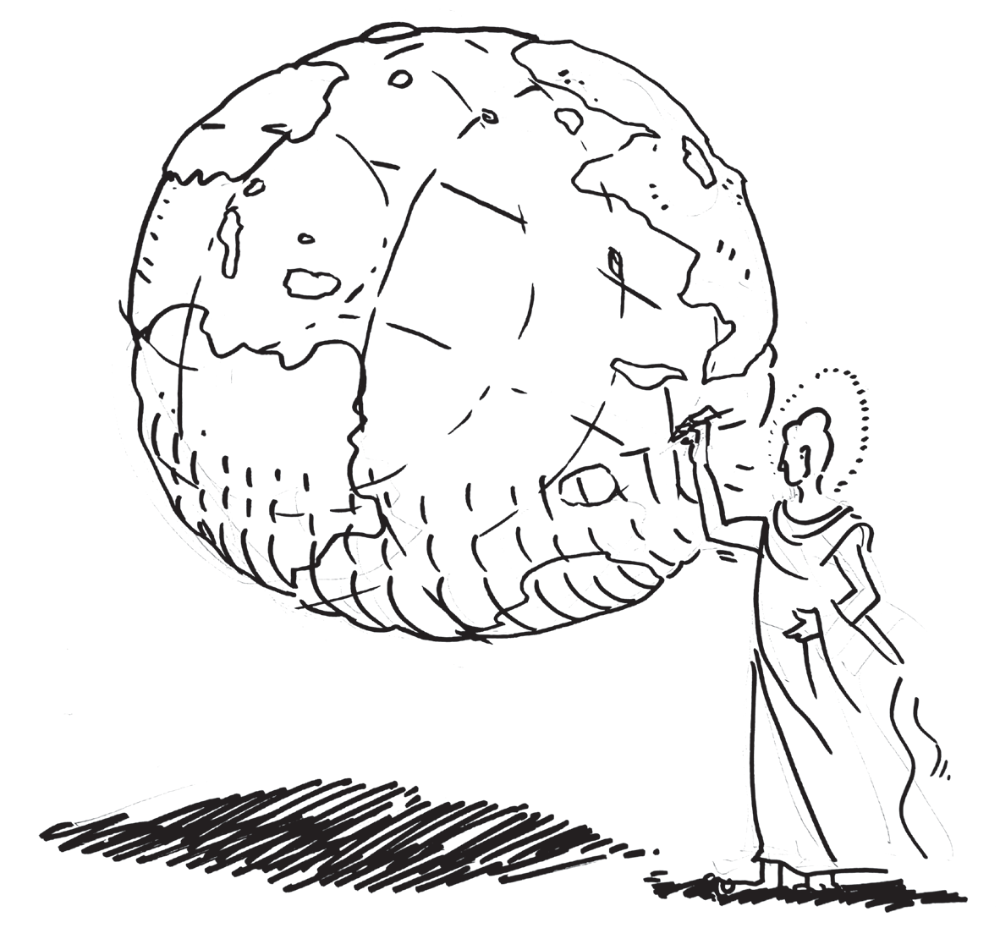
在《長阿含經·轉輪聖王修行經》裏講道，佛滅度之後，有轉輪聖王繼續統治，這個時間段，人類壽命慢慢減少，但還是很長。整個社會和諧穩定，物產豐富。到了第七位轉輪聖王統治的時候，人類社會開始出現貧窮，貧窮的人去偷盜，偷盜者就被抓到王面前。王問：“你爲什麼偷盜？”偷盜者說：“因爲貧窮。”王給了他一些錢之後放其自由。結果此事傳開，窮人們到處偷盜。王開始懲罰偷盜者，偷盜者們開始躲藏、隱瞞、欺騙，最後出現殺戮。貧窮導致偷盜，偷盜導致妄語和殺戮，人壽開始加速減少，一直到人壽10 歲。人道的輪轉如此循環往復。
再回到上行文明爲什麼不傳佛法的問題。
在社會層面上，上行文明階段是由“神”來直接統治，給全體人類植入“神”天生高人一等的觀念，“神”的壽命、智慧、神通都是人類望塵莫及的程度。但是“衆生平等”是佛法裏的核心理念，在自性這個層面上所有衆生一律平等，每個人都有不生不滅的自性。這樣的理論和“神”天生高貴的社會觀念相沖突，只要傳播佛法，告訴人類衆生平等，馬上就有人以此爲藉口造反，統治者的鎮壓和懲罰會讓社會矛盾加重，致使整個文明在行善積德的大方向上無法前進。
在個人修行方面，普通人的時間有限，很難同時兼顧修心和行善兩件事。要修心就要減少妄想，對初學來說在世俗間生活的同時還想內心清淨非常難，所以很多人選擇出家或者隱居修行，尤其是修行到一定境界，更不願參與世俗事務。
至於行善積德，無非就是財佈施和身佈施，想財佈施就要在社會上賺錢，身佈施是指義工之類的服務性行爲，不管賺錢還是當義工都需要時間。不僅是時間安排上修行和行善兩者難以兼顧，我們平時所做的事都會變成妄想，在打坐修心的時候干擾我們，所以一邊做事一邊修行，還想心無牽掛非常困難。
傳法是宏觀態問題，要看整體效果，不能拿個例證明人可以同時兼顧修心和行善。把整個人類文明作爲一個大數據來看，大部分人無法兼顧。那就只好把行善放到上行文明階段裏，讓大部分人專注地行善，積攢足夠多的福報，作爲下行文明階段時修行的資糧。目前四大部洲中有些部洲沒有佛法，但是那裏的衆生的福報很大，過得很幸福，就是因爲那裏正處在上行文明階段。四大部洲是輪着來的，當我們所處的南瞻部洲處在下行文明的末期時，有些部洲就處在上行文明階段。
等到人壽增長到極限，也就是84000 歲的時候，有佛出世，傳播正法，佛住世的時間段內，人壽一直維持在84000 歲，佛滅度後，由轉輪聖王繼續統治。從這裏開始人壽減少，就是下行文明，佛法可以繼續傳播下去。前期幾位轉輪聖王還是以“神”的形態統治，但是轉輪聖王死後，人類社會以普通人的統治爲主。統治者在壽命、智慧、神通方面已經沒有任何優勢，開始進入拼謀略和手段的時期，人類社會殺戮瀰漫，戰爭不斷。此時傳法團隊會通過設計文明的方式，讓治世和亂世交替出現，創造適合傳法的環境。
每一次文明毀滅之後，中間會插進一段動物世界，在這個階段衆生會消掉大量殺業，然後又是一個新的文明開始。
在下行文明階段，由傳法團隊安排統治者，尤其是主角國和周邊幾個重要國家的領導人，至於統治者的人選，菩薩、羅漢、天人、普通人，全部都可以，會根據劇本需求來安排，有些重要歷史節點上的統治者是再來人。爲了讓人類自認爲是人類自己的文明，統治者的狀態和一切表現都要符合普通人的標準，這就有了符合人類思維和人性的政治博弈。一次成功的傳法活動，都是從大環境的設計開始，不只是佛教這個宗教的設計，而是整個人類文明的設計。
由人類統治的下行文明階段裏，惡念會不斷增長，人類的壽命不斷減少，整個社會都在下墜，但是“衆生平等”爲核心理念的佛法得以傳播和推廣。在這種環境裏，想要在俗世間專注地修行就需要大量的福報，福報多到可以影響周圍環境，可以不用做任何違背良心的事，也不用和人過多地接觸。
如果沒有這麼大的福報，還有一條路是出家修行，佛教僧團也在設計內，既有權威性，同時又與俗世保持距離，可以保護修行人在相對清淨的環境下修行，傳承佛法和弘揚佛法本身還有功德。
在以惡念爲主導的社會大環境下，行善的難度比上行文明大，地球的自然環境也會每況愈下，物產減少，天災不斷。這個時候脫離俗世，專注地修行比在俗世間做事更好一些。
實際上我們看到的大部分學佛的人，都夾在這兩種情況中間，在俗世福報太少，需要每天工作才能溫飽，想要出家又有太多牽掛，還有自己的慾望。一生之內無法成就，就是因爲捨不得、放不下。但從業的角度看，每個人所處的困境都是業力的顯現，想要突然間徹底改變非常困難，只能從當下力所能及的地方一點點努力。
在下行文明階段，人類的殺業會快速積攢，戰爭變得不可避免，但在設計者和管理員的控制下，治世和亂世會交替出現。每逢亂世，佛法會得到快速推廣，畢竟宗教是最好的心靈避難所。到了治世，在統治者的推動下，佛教也會得到發展。當佛教過度膨脹，有太多的人以私心進入僧團，影響社會和國家的正常運轉時，統治者還會適當地打壓佛教，讓其回到正軌。
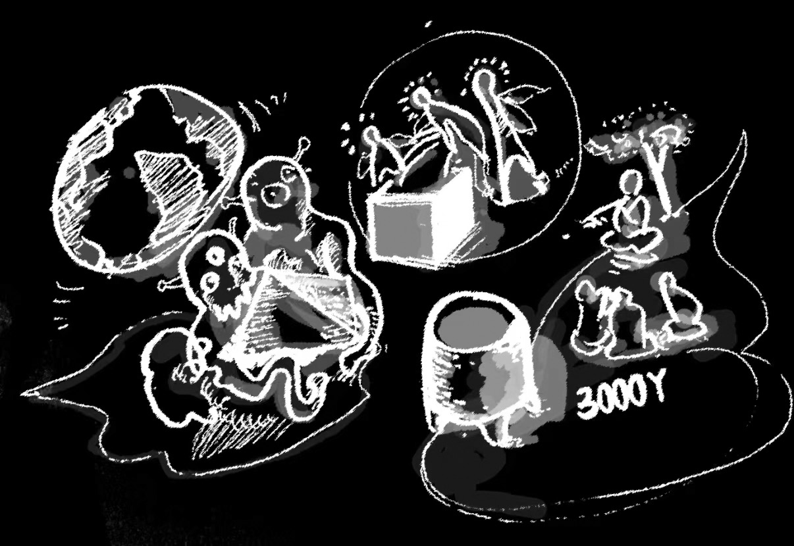
以上就是人間的輪轉過程，上行文明、下行文明、中間穿插動物世界循環往復。
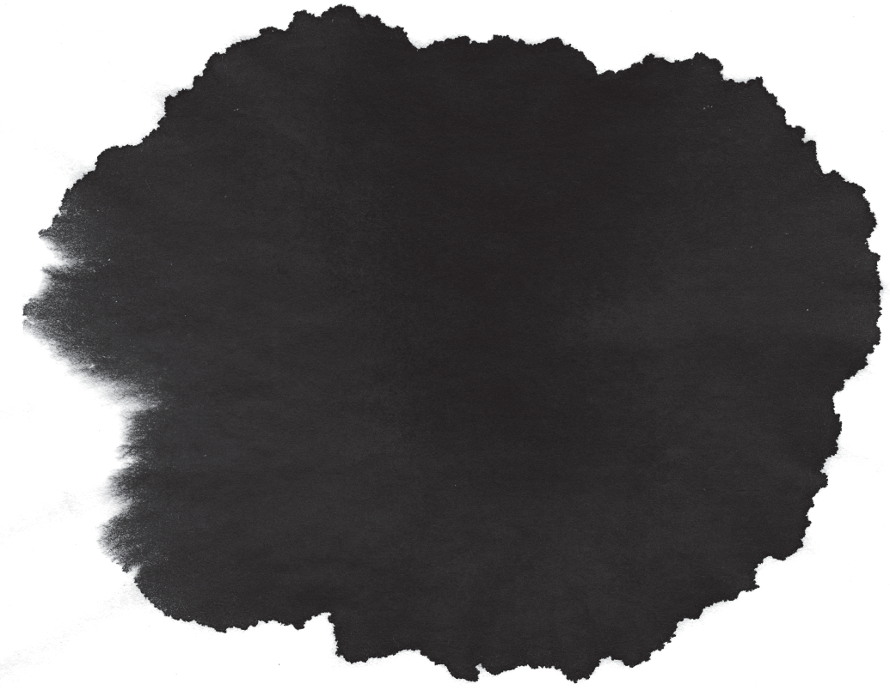
這一章主要講本次人類文明的設計。
在我們的地球上，從人壽84000 歲開始到現在，已經經歷了四期文明，現在是第五期文明。
前四期文明人壽較長，人類惡劣的程度比目前的第五期文明都小，設計的難度低，出錯的概率少，不需要後備方案，一套完整的設計方案就足夠管理文明。
目前的第五期文明是可以傳法的最後一期文明，第六期文明是人壽10 歲的文明。說是文明，實則和動物世界沒有區別。佛經裏說，在這個文明期，人與人之間充滿惡意，父母子女之間極有害心，人世間充滿殺戮，因此人壽10 歲的第六期文明無法傳播佛法。那麼人壽100 歲的第五期文明就成了減劫當中最後一次可以傳法的文明，也是傳法難度最高的文明。
設計者爲了應付可能發生的意外，設計之初就留有後備計劃——B 計劃。首先，把地球的大環境設計成三個大板塊，歐亞大陸、非洲、美洲大陸。之後對三大板塊同時投放人類，發展出不同形態的文明。我們已經知道，神治文明和人治文明兩者之間的區別和各自的利弊。
人類文明從部落時代開始算起有一萬多年的歷史，在公元前1000 年正式進入傳法的時期（稱爲3000 年傳法活動），之前只是設計和管理，並沒有再來人投胎入世。
從歐亞大陸開始講起。最東邊的日本以神治文明開局，一開始由神來直接統治，傳到第三代之後轉向人治文明，統治者從神變成半人半神，再變成普通人，因此日本留有天照大神的傳說和天皇世襲制。日本的設計和管理最初是交給娑婆世界的傳法團隊練手用，所以設計上有不少粗糙的地方。
東方大陸上的華夏文明和印度文明介於神治文明和人治文明之間，開局時設計者投放多名擁有高智商和大福報的領導者，讓他們幫助人類打下文明的基礎，傳授必要的知識，但他們都是以人類形態出現。所以只留下傳說故事，並沒有對後期的社會形態產生太大的影響。從公元前1000 年傳法團隊介入後，華夏文明和印度文明之間真正的分歧點開始出現。
再往西是中東的兩河文明。這裏的文明是純粹的人治文明，現在叫蘇美爾文明，他們挖掘到了第四期文明遺留下來的遺產，其中包括社會建設和科技方面的知識，就因爲他們掌握了一些與本次文明不符的知識，所以必須被毀滅，但這也是設計中的一環。上一期文明的故事通過這種模糊的方式傳下去，讓本次文明的人類知道在地球上文明可能不止一次地出現過，但又不受其影響。蘇美爾文明毀滅之後出現的兩河流域的文明都是正常的人治文明。
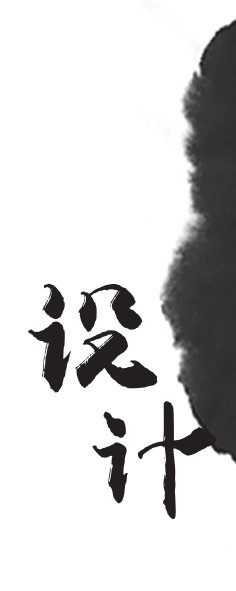
然後是埃及文明。埃及從地理上看屬於非洲，但文明設計方面屬於歐亞大陸的高等文明。埃及文明也是以神治文明開局，且維持的時間較長，爲了不影響其他地區的人治文明，在3000 年傳法活動開始之時，把它徹底毀滅掉。要知道人治文明和神治文明不能共存於一個星球上，如果共存，人治文明也會被神治文明徵服和同化，就算雙方不接觸不征服，光是知道神的存在本身也會影響人治文明的正常發展和佛法的傳播。所以古埃及被羅馬帝國毀滅也是設計中的事情。
再往西看，歐洲的文明以人治文明開局，但是干預的成分非常少，一直處於野蠻狀態，直到3000 年傳法活動開始，爲了減少歐洲人的殺業，也是防止歐洲人對其他地區的侵害，決定給歐洲一個宗教，所有西方教和伊斯蘭教都從猶太教開始，同時還給了古希臘哲學思想。爲了普及這個宗教和哲學思想，專門設計了羅馬帝國。以上是歐亞大陸的幾個高等文明。
至於非洲地區，管理層根本沒有具體的設計和管理，直到大航海時代開始的時候，非洲還處在原始部落時代，這纔是人類在不干預下的正常態。
美洲選擇的是神治文明開局，和埃及文明一樣，美洲也是進入了3000 年傳法活動時期，神形態的統治者們全部撤離，到了大航海時代開始的時候，美洲文明也被歐洲殖民者毀滅，原因和埃及文明一樣，不能讓神治文明和人治文明共存於一個星球上。
那爲什麼專門設計一個孤懸海外的美洲神治文明呢？這就是B 計劃的前期鋪墊。如果歐亞大陸的人治文明經營失敗，無法正常傳播佛法，那麼這一期的人類文明就直接改成神治文明，徹底放棄歐亞大陸的人治文明。先把地球的磁極轉動一下，把南北美洲大陸橫放到北半球或者南半球上，同時把歐亞大陸豎放到赤道上，橫放的美洲大陸會變得更適合發展文明，接下來讓人類文明進入神治文明時期。
神治文明就是由神來直接統治的文明，人壽會逐漸增加，這樣人壽十歲的第六期文明就不會出現。
從開局開始，大概有一萬年時間是原始部落社會，並沒有形成大國，這是在給那些剛從畜生道來到人道的衆生足夠長的時間用來適應新的文明生活，在這期間投放小部分擁有大智慧和大福德的天人，由這些人當統治者、思想家，推動文明的發展。
人治文明的前期佈局基本成功後，進入3000 年傳法活動階段，從公元前1000 年開始，讓再來人和天人投胎到華夏文明和印度文明，爲傳播佛法打基礎，包括人文思想方面和社會制度方面。同時作爲B 計劃的神治文明徹底放棄，古埃及文明和美洲文明的毀滅已成定局。
首先我們要知道，設計傳法活動並不只是設計佛教僧團的故事，而是設計整個文明的故事，先把大環境設計好，再放進佛法，讓佛法在大環境中得以流傳和弘揚，所以設計的重點還是文明故事。
其次，設計文明故事時，先把大概的時長定好，比如這次人類文明裏的傳法活動的時長定爲3000 年，爲什麼是3000年？而不是其他數字？這是按照人壽的長度和中根之人解脫所需的時間來定的。
先說人壽的長度。我們都知道這一期文明的人壽是100歲，由衆生的福報和習氣來決定，每100 年減少一歲。距今2500年前，佛出世的時候人壽是100 歲，再往前距今4500 年前或者更早的時候，中國的古書記載，人壽是120 歲，一紀爲12 年，總共10 紀。少活12 年，活了108 歲，叫9 折，如果沒活5 折，也就是沒到60 歲就死了叫夭折。
那麼這個人壽到底怎麼理解？我們可以理解爲肉身的使用期限，把肉身當作機器來看，一個合格的產品可以使用120 年。在這基礎上，根據個人的福報和惡報進行加減。如果前世造了很多善業，那這一世出生的時候會得到更長的壽命，最多可以延長三紀36 年的壽命，這樣肉身出廠時的使用期限是156 年。如果造了很多惡業，那麼肉身出廠時的使用期限就會減少，這裏就沒有上限，可以一直減少到胎死腹中。而我們每個人在輪迴中沉浮無數世，既有善業，也有惡業，所以編劇菩薩在寫個人命運劇本的時候會把善惡報同時放進來。善報會增加壽命，惡報會減少壽命，在120 歲的基礎上進行加減後就是一個人出生時帶出來的壽命。
一個人出生之後，他的壽命還會受到行爲和習氣的影響。多造善業或者多造惡業都有可能引來現世報，導致壽命延長或者縮短，還有生活習氣問題，酗酒抽菸等有損健康的行爲也會損耗肉身、縮短壽命。
有人質疑佛法裏講的“人壽100 歲，每百年減少一歲”這個說法時，會舉證進入現代社會後，國人的平均壽命逐漸延長，現在快到80 歲的事實。現在我們知道，佛所說的“人壽100 歲”是肉身的出廠設置，現在已經減到75 歲，在這基礎上用前世的善惡業先進行加減，出生後根據個人行爲和習氣再進行一次加減，最後的結果就是一個人在現實世界裏能活的真實壽命。
還有一種解釋是：佛說的人壽指的是全人類的平均壽命。如果用這個解釋看目前全球情況，中國人的平均壽命的確長，但還有很多落後國家的平均壽命比較短，需要把全球80 億人口的壽命進行平均才能得出正確的數字。據世界衛生組織公佈的最新數據，全球平均壽命爲72.6 歲，這個數字和預期的75歲接近。
以上是對於壽命的兩種解釋，我個人更傾向於前者。
接下來講講中根之人解脫所需的時間問題。傳法團隊設計一次傳法活動時會有一個預期，大概計劃在這次傳法活動中讓多少人成爲阿羅漢。阿羅漢是一個坎，上大學的時候聽過一句話：59 分等於0 分，60 分等於滿分。也就是說，只要能及格就行。在修行方面，阿羅漢就是及格線，成爲阿羅漢之後會有什麼好處，在前面已經講過。成爲阿羅漢之前，就算修到非想非非想處天也是凡夫，凡夫善變，說墮落就墮落。佛也說過，他曾拜過外道師父，那位師父修到非想非非想處天，但在福報耗盡後，還是墮入了下三途。因此，傳法度人需帶到阿羅漢纔算成功度人，一次大型的傳法活動都有大概的預期，會讓多少人成爲阿羅漢，而針對的受衆是中根之人。在人壽100 歲的文明時期，絕大部分人都活不到100 歲，在一生當中真正用來高效率學習和修行的時間不過30 年左右。太年輕時不懂事，年紀太大了身體又跟不上，20 歲到50 歲是最適合學習和修行的時間段。也可以用另一種算法，把一天分成三份各8 小時，8 小時睡覺，8 小時工作，8 小時用來喫飯娛樂等個人消遣。真正拿來修行的時間並不多，從20 歲開始到80 歲的60 年間，每天堅持修行8 小時，修行的總時長不過20 年。那麼30 年爲一世來算，3000年是100世，其中還要算進年幼時和年老時，這樣一個人可以輪迴着修行50 世左右。設計者會根據凡夫的消業和修心的進度來推算，得出的結論是，一箇中根之人修行50 世大概能成爲阿羅漢。
同時設計者還要考慮衆生在整個傳法活動期間新造惡業的總量。下行文明時期，大部分人類會快速造惡業。我們已經知道，消業比修心難。因此，設計時要考慮成爲阿羅漢的人的數量和衆生所造惡業的總量之比。不能爲了度一兩個人或者少數幾個人，讓無數的衆生造下無量的惡業，以至於增加度這些人的整體難度。
綜上所述，設計者最後得出的結論是：在人間傳法3000年，在這期間，可以度多少人成爲阿羅漢，同時會讓多少的衆生造下多少的惡業，兩者比較下可以接受。
傳法的時長定下來後，設計者開始寫故事。設計者寫故事並不是以時間爲座標來寫，比如說某一年必須發生某事，文明劇本不以這種方式寫。設計者會先寫大的故事梗概，估算這麼長的故事大概需要多長時間，故事夠持續3000 年就可以了。接下來是推進劇本時的微操作，根據需求，可以快速推進劇情，縮短所用時間，也可以插入小故事，延緩故事推進速度，讓整體劇本所用時間變長。
實際上到公元2000年爲止，3000年的傳法時長已經達標，後面又續上了150 年的劇本，現在正處在這個加時劇本當中。在新續上的劇本里給了人類更多的科技點，其中也有網絡技術。科技用好了可以造福人類，用不好反而會讓人類更快速地造惡業，也會染上更多不好的習氣，導致福報減少，壽命縮短。自從2000 年後爲了讓人類感知不到平均壽命快速縮短的變化，管理員故意把時間加速，現在的一天看似24 小時，實則和過去的16 小時一樣長。
定好了3000 年的傳法時長後，設計者開始編寫具體的故事。首先定下人類文明的主人公，在哪個文明傳播佛法，哪個文明就是主人公。再把3000 年傳法時間分成上半場和下半場兩部分，上半場的主人公定爲印度文明，下半場的主人公定爲華夏文明。
那麼爲什麼要分場設計？爲什麼傳法不在一個文明一傳到底呢？這也是經歷了無數次傳法試驗後，拿出來的最終方案，也是目前爲止大家公認的最好方案，是文明設計中重要的知識點。
佛法作爲一個宗教，傳法初期它只是一個小規模的修行門派，同時還會有不少外道修行門派一起競爭。我們都知道佛教主張戒殺護生、禁止鬥爭，如果周圍有任何允許殺戮、提倡消滅異教徒的宗教存在，那麼佛教大概率會被消滅乾淨，無法在前期的宗教競爭中存活下來。
要把一個小衆的修行門派發展成有影響力的大宗教，讓它擁有頑強的生命力，就必須把這個宗教放到政治之上，讓統治者信仰這個宗教，並把它推廣出去。例如，印度的婆羅門比剎帝利高一級，婆羅門是宗教人士，剎帝利是政治貴族，宗教比政治地位高。以這種方式先把佛教發展成影響力廣泛、可以傳承下去的大宗教，把宗教文化植入到人們的社會觀當中。
但爲什麼又不能讓宗教一直處在最高位呢？因爲這一期文明中的人類有殺戮的習氣，殺業積攢一段時間必然會引發刀兵劫，甚至顛覆國家政權，每一次大的刀兵劫會消滅掉70% 到90% 人口。誰處在國家的最高位，誰的責任就最大。如果宗教處在最高位，每次顛覆的時候，宗教受到的衝擊最大，人們會把亡國的責任全部扣到宗教頭上，新生的政權會對宗教進行大清洗，一個宗教經不起這種打擊，經過兩三次的大清洗，該宗教就會徹底消失。這也是在其他很多世界，經過無數次的傳法實驗中得出的結果。
那麼有人就會問：既然文明劇本都是設計的，爲什麼戰爭就不能在設計層面上阻止呢？第一，在有殺戮習氣的文明裏，殺業會不斷積攢，如果不週期性地釋放掉殺業，積攢太多會在一次釋放中直接把文明消滅掉。
第二，不能把所有殺業全部用人殺動物的方式釋放，因爲人和動物在被殺時感受不一樣，人有智慧，會提前知道死亡的到來，在等待死亡過程中也會承受很大的精神痛苦，這也是一種果報，而且人殺人的事情對其他人也是一種警醒，因此戰爭在設計當中也是必要的一環。
那麼要讓佛教不在前期的宗教競爭中被消滅，要讓它成爲有影響力的大宗教，就需要把它放到政治之上。可又想讓佛教在週期性發生的刀兵劫中不被清洗，那就需要把佛教放到政治之下，不能放到最高位，這就出現了無法調和的矛盾。
最終傳法團隊想到的辦法就是，把文明分割成上下半場，上半場的主角國把佛教放到政治之上，把佛法從小的修行門派發展成大宗教，之後把它拋出去。接下來由下半場的主角國接住佛教，把佛教放在政治之下，用政治權力對佛教進行保護的同時還要監督。佛教對於政權而言，成爲寄生蟲般的存在，要爲宿主提供一定的好處，以換取保護，同時也不能進宿主的腦子控制宿主，以避免在政權被顛覆時作爲主要責任人被推上斷頭臺。而且佛教主張戒殺護生，禁止鬥爭，這種思想在亂世中，可以儘量避免捲入政治鬥爭，以防受到波及。
對於佛教來說，不僅需要政權的保護，還需要監督。當佛教過度膨脹，有太多不修行的人以私人目的加入佛教僧團，並對國家和社會產生不良影響時，還需借用政權之手對佛教剪剪枝，歷史上三武一宗的滅佛運動對佛教的健康發展有很大的積極意義。如果佛教受到其他宗教的衝擊，快被消滅時，政權又會提供保護，讓它存活下來。
以上是分場設計的主要原因。
按照最初的設計，先把3000 年傳法時間分成上下半場各1500 年，上半場1500 年的主角是印度文明，下半場1500 年的主角是華夏文明。先由印度把佛教從小衆的修行門派發展成大宗教，之後再由華夏文明接手，繼續傳播佛法，所有文明故事的設計都圍繞着這個大主線劇情服務。
接下來再把3000 年傳法時間分成六個階段，每五百年爲一個階段，制定階段性劇情目標。印度和中國的劇情要同時推進，中國雖然被定爲下半場的主角，但要讓它順利接過佛教並發揚光大，需要前期的準備，所以中國的故事在設計上貫穿3000 年，而印度只需着重設計上半場即可。
下面講講每個階段的大概故事。再一次強調，寫劇本是先寫故事，不以時間作爲座標，劇情發展的快慢都在控制當中，因此500 年這個時長只是大致上的時長。
在印度，佛陀出世之前需要先建立起修行文化，給印度人植入嚮往修行、推崇修行的文化思想，在社會上推廣尊重修行人的文化氛圍。公元前1500 年到公元前700 年，雅利安人入侵印度，建立吠陀文明。作爲外來民族，主張其統治合法性的最好方法就是向“神”靠攏，因此雅利安人推行宗教文化和種姓制度。這個時期，印度的修行門派百花齊放，婆羅門教成爲主流宗教，同時存在多如牛毛的小教派，大部分歷史上能留名的教派都有真實的修行行爲，尤其是出家修行成爲整個社會所認可和讚賞的高尚行爲，哪怕是一個僕人或下等人出家，見國王不需行臣子禮，反而國王要向出家人行禮。
經過幾百年的發展，在佛陀出世的時候，印度還有6 種有名的外道，合稱六師，還有96 種外道之說。這是印度文明的第一個五百年。
在中國，3000 年傳法活動開始前是夏商兩朝。夏商兩朝我們稱爲僞神治文明，是人假託於神來統治的奴隸制國家，主流文化是崇拜圖騰和鬼神、喜歡祭祀和占卜。每次祭祀會殺很多奴隸，求得神一個啓示。
公元前1029 年西周建立，到公元前476 年東周的春秋結束，這是第一個500 年期間。從周朝開始，中國開始引入“以人爲本”的政治理念，按照當時的說法叫“以德配天”。天子還是天子，是代替老天統治人間的最高統治者，但是這個天子要有德。何爲德？得民心者得天下，這個德就是民心。天子要對老百姓實行仁政，愛民如子，治國有方，得到老百姓的認可，纔算得到了老天的認可。統治者以這種方式獲得統治的合法性，就變成了人治文明。
公元前770 年之後，周天子的勢力減弱，無力統轄所有諸侯國，各諸侯國之間戰爭頻發，華夏文明進入春秋時代。因爲諸侯國之間的競爭愈演愈烈，各國都需要改革圖強，開始對思想研究持開放態度，中原大地迎來了百家爭鳴的時代。其中儒家、道家、法家的思想得以傳世，得到後人的推崇和實踐。尤其是孔子的儒家思想影響深遠，“子不語怪力亂神”，孔子主張政治要和鬼神切割，提倡以人爲本的治國理念。孔子還提出的“有教無類”思想，打破了貴族對知識的壟斷權，纔有了後世的察舉、薦舉，到科舉的人才選拔制度。
在印度，小國林立的大環境中佛陀出世。關於釋迦牟尼的生卒年，包括出家時的年齡和證悟的年齡，大乘佛教和南傳佛教有不同的說法。在這裏我只說我的觀點。我認爲釋迦牟尼出生於公元前565 年左右，涅槃於公元前485 年左右，19 歲之前結婚生子，19 歲開始出家修行，到24 歲爲止跟隨外道師父修行，24 歲後開始獨自修行，苦修6 年，30 歲證悟，之後傳法49 年，80 歲入滅。佛陀入滅後，北印度各地的國王們來爭搶佛舍利，其中勢力大的八名國王把佛舍利分成八份，各自帶回自己的國家供養，後經100 多年的流傳，佛舍利分散在北印度各地。佛陀的傳法活動主要在印度北部，直到阿育王推廣佛教之前，佛教一直都是小衆的修行門派。
公元前303 年，阿育王出世，活到70 歲，在位41 年，由極樂世界團隊中人王職業菩薩扮演。阿育王在位期間，通過南征北戰統一了印度北部最肥沃的地區。之後阿育王皈依佛法，把佛教定爲國教，開始大力推廣佛教，在阿育王的努力下，佛教成爲印度排名第一的大宗教，迎來了佛教歷史上的第一次高峯期，奠定了日後佛教成爲世界性宗教的基礎。同時阿育王對其他宗教採取包容的態度，慷慨捐助婆羅門教和耆那教。
在佛教內部，大乘理論開始形成，和小乘理論的分歧越來越大，大小乘之爭愈演愈烈。阿育王本人信奉大乘佛法，以衆生平等的理念對待其他宗教和佛教內部出現的各個派系，不推崇某一派，也不打壓某一派。
阿育王把分散各地的佛舍利全部收集起來，再讓僧侶們帶着佛舍利去世界各地弘揚佛法，並修建佛塔供養佛舍利，據說當時也有印度僧侶帶着佛舍利來到中原。第二個500 年是印度的正法時代。
在中國，公元前475 年到公元前221 年是東周的戰國時代。公元前221 年，秦始皇統一六國，建立大一統帝國，廢棄貴族分封制，推行郡縣制。秦始皇的功績不言而喻，從社會觀層面上看，他的最大的功績是給華夏民族注入大一統思想，讓後世的帝王們在國家分裂時以統一天下爲大目標努力，在大一統時期以守護統一爲治國的大方針來經營。只可惜，在沒有建立新的社會觀和官僚體系下，過快的社會變革導致大秦二世而亡。
公元前206 年到公元8 年是西漢時期。西漢吸取了大秦亡國的教訓，不急於推動社會變革，先提出了“異姓不王”的原則，保留劉姓貴族，在行政制度上採取“郡國並行”的制度，讓劉姓貴族封土建國。公元前127 年，漢武帝頒佈“推恩令”，開始逐漸取締貴族分封制。
在思想方面，西漢獨尊儒術，提出了“以孝治天下”的治國理念。儒家思想中重要的一點還是“以人爲本”，也就是人治文明的底層觀念。儒家不講鬼神，反對假借鬼神之名做事，把鬼神思想從政治理念中徹底剝離。
西漢開始採用察舉制、薦舉制來選拔人才，允許民間的人才進入官僚階層爲國家和人民服務，政府既擴充了人才的儲備，同時也給世人多一條上升通道，打破和延緩階級固化的進程。
可以說，中國從公元前1000年開始，不斷地提高人的地位，把鬼神從社會的各個層面，尤其是統治階層的思想中剔除出去，同時建立包容和開放性的思想環境，以便於日後接手大乘佛教。
在印度，孔雀王朝覆滅後，印度次大陸又一次陷入了小國林立、諸國混戰的時代。公元前2 世紀左右，被匈奴驅趕的大月氏人進入印度北部地區，建立貴霜帝國。4 世紀初，貴霜帝國沒落，摩揭陀國的笈多家族建立笈多王朝。到了5 世紀，中亞賽種人和大月氏人的後裔攻打笈多王朝，笈多王朝也迅速沒落。
在貴霜帝國時代，大乘佛教得到了長足的發展，在印度佛教史上被譽爲“第二代釋迦”的龍樹菩薩活躍於公元150 年到250 年之間，他所著的《中論》和《大智度論》成爲大乘佛教的重要論著。
到了笈多王朝時代，政府對各大宗教持包容的態度，除了大乘佛教得到發展外，耆那教盛行，印度教興起。5 世紀初，笈多王朝的戒日王建立那爛陀寺，玄奘法師來取經的時候，那爛陀寺已發展成古印度最大的佛教寺院，也是佛教最高學府。這一時期是印度的像法時代。
在中國，第三個五百年是佛教進入中國打基礎的階段。在西漢漢哀帝（前25 年—前1 年）到東漢漢明帝（28 年—75 年）期間，佛教開始進入中國。公元220 年，曹丕篡漢，東漢滅亡。在東漢時期，中國的佛教主要還是小乘理論。後面三國、兩晉、十六國、南北朝、隋朝，一直到公元618 年唐朝建立之前這段時間，都屬於第三個五百年，是中國歷史上最混亂的時代。在亂世，人們對信仰的需求尤爲強烈，佛教在中國得到了長足的發展，規模逐漸超過本土誕生的道教。
這個時間段，大乘理論也開始傳入中國，在這裏功勞最大的人是鳩摩羅什（公元344 年—公元413 年）和達摩祖師。鳩摩羅什一生翻譯佛經衆多，最早譯的是《阿彌陀經》，是爲日後在中國建立淨土宗打基礎。後來又翻譯《金剛經》《法華經》《維摩詰經》等大乘佛經。還系統地翻譯龍樹菩薩的著作，爲大乘佛法傳入中國做出重大貢獻。鳩摩羅什由極樂世界團隊教職業的菩薩扮演。
公元527 年，印度禪宗28 祖達摩來到中國傳大乘佛法，成爲中國禪宗初祖，公元536 年圓寂，著有《少室六門》。達摩祖師由極樂世界團隊總指揮，也是禪職業首座——觀世音菩薩扮演。
在中國的第三個500 年劇本已經有所改動，讓混亂時期多延續了100 年。
接下來是下半場文明的原始劇本，我們所知道的歷史是改動後的現實劇本，在這裏先講原始劇本。
下半場文明設計中，印度文明已不再是主角，剩下的只有一件事，那就是徹底毀掉印度的佛教歷史，包括可以找回宗教歷史的國家歷史。因爲印度文明的任務是把佛法推到最高處，在它成爲世界性大宗教後，傳給下半場的主角——華夏文明手裏。之後印度文明的任務就結束了。
佛教在中國落地生根，完成本土化改造之後，就要以中國作爲根據地，傳向其他國家和地區。如果印度文明會記錄歷史，雖然對傳承宗教有很大的幫助，但在佛教傳到中國之後，兩地的佛教會發生分歧和鬥爭。印度作爲佛教的發源地，還擁有宗國的發言權，這對佛教在中國國內的傳承和對外傳播非常不利，所以把上半場的主角文明設計成不記錄歷史的文明。
當佛教傳到中國以後，還要把留在印度的僅存的記錄也要全部銷燬，不光是佛教的歷史，還包括國家的歷史，這些有可能找回宗教歷史的一切記錄全部銷燬，還要用其他宗教替換掉佛教的主導地位，以至於印度不再向其他世界行使作爲佛教發源地的影響力。第四個500 年和第五個500 年，這1000 年就是印度佛教消失的階段。
公元7 世紀，北印度興起了拉其普特人，而穆斯林也開始入侵印度，雙方的鬥爭一直持續到公元12 世紀末，最終以穆斯林的勝利宣告結束。新興的穆斯林帝國——德里蘇丹國建立之後，開始打壓境內的所有其他宗教，包括佛教，佛教的最高學府那爛陀寺也被穆斯林徹底摧毀。1526 年突厥人在印度建立莫臥兒帝國，也是穆斯林帝國，這兩個帝國時期，內部宗教矛盾雙方是伊斯蘭教和印度教。後面的印度，雖然政權會更替，但伊斯蘭教一直是國教，沒有變化。在原始劇本里印度沒有被英國殖民。
在中國，公元618 年，唐朝建立。實際上，故事劇本已經延長了近100 年。在原始劇本里，唐朝在公元500 年左右建立。
下面是原始劇本的內容。
第四個500 年，也就是公元500 年到1000 年，這期間中國經歷唐宋兩個朝代，中間有100 年的五代十國亂世，這是佛法在中國的正法時代。
唐朝盛行尚武之風，重賞軍功，對外積極擴張；採用開放性的民族政策，允許外國人在唐朝任官，甚至掌兵權。對宗教保持開放的政策，允許各大宗教在全境傳播。在這樣的大環境下，佛教會完成本土化改造，發展成爲影響力最大的宗教，但只在貴族和官僚階層等上層社會流行，並未普及到民間。
唐朝滅亡後是百年亂世，接下來宋朝重新統一中國。宋朝吸取唐朝滅亡的教訓，開始施行重文輕武的國策，雖然國力不如唐朝，但文化思想得到空前的發展，佛教在民間得以推廣，過度宗教化的弊端也開始顯現。宋朝末年，皇權衰微，士大夫階層掌握大權，走向腐敗，在蒙古人的入侵下國家滅亡。
第五個500 年分三個階段，前100 年是和蒙古人打仗的亂世。在原始劇本里，蒙古人沒能在中原建立大帝國，民間的反抗一直不斷，直到一位政治強人出現，整合了反抗力量，成功驅逐蒙古人，建立大明帝國。
第二個階段大概維持200 年，是明朝的帝制時代。明朝吸收宋朝滅亡的教訓，重新走向重武輕文、向外擴張的道路，正式開啓了大航海時代。在新科技的加持下，明朝的勢力發展到非洲，同一時期，歐洲也在擴張，海陸並進，也發展到非洲。當時的非洲是原始社會，人口稀少，資源豐富。雙方在非洲進行一次爭奪殖民地的大戰，也是第一次世界大戰，中東的伊斯蘭勢力也加入大戰，歐亞大陸幾乎所有大國都捲入了這場大戰。此時印度也屬於伊斯蘭勢力。最終明朝和伊斯蘭勢力聯手，打跑歐洲勢力，撒哈拉以北地區由伊斯蘭勢力控制，撒哈拉以南由明朝控制，歐洲勢力轉向美洲發展。
明朝的殖民政策和真實歷史上的西方不一樣，已經有了儒釋道三家文化的明朝用輸出文化、同化思想的方式進行殖民擴張，並不以瘋狂殺戮和掠奪爲主。
在明朝的帝制時代，朝廷雖然允許宗教自由發展，但不再積極推廣，整個國家在對外擴張的紅利下欣欣向榮，人們更熱衷於經濟活動和對外探險，佛教保持適度的規模維持着。
接下來的200 年是明朝的君主立憲制時代。大量的財富從外輸入到國內，使得明朝內部的資本勢力崛起，最終一場資本主義革命後確立了君主立憲制。在這一時期，明朝發生工業革命，率先進入工業時代。殖民擴張和對殖民地的統治不再以國家形式來進行，由明朝皇帝授權給大資本集團，再由大資本集團代行統治的方式進行。大資本集團在國內融資，再去發展殖民地，同時有大量的中國人以商人和僱傭兵的身份去殖民地謀生。整個國家就像現實歷史中的大英帝國一樣，大部分國人把閒錢都拿出來支援對外的殖民擴張。明朝皇室順理成章地成了世界上最富有的皇室，成爲名義上衆多殖民地的統治者。
這一時期，佛教成爲殖民統治最好的思想工具，被世界各地的殖民統治者拿去洗腦當地人，佛教順利地成爲世界上最大的宗教。
接下來是第六個500 年，這500 年分上下兩個階段。
前半段劇本里，中國內部的資本主義使得貧富差距越來越大，大部分財富集中到小部分人手中，國內民怨沸騰。大資本家們聯手發動第二次資本主義革命，把皇室作爲主要責任人推上斷頭臺，建立起代表資本家利益的民主政權，明朝正式滅亡，中國進入資本主義民主政體時代。在沒有皇室約束的情況下，資本家們既要保護自己的利益，還要掏錢安撫國內的窮人，唯一的選擇就是加速對外的殖民擴張，大資本集團的手終於伸到了美洲。這個時候美洲已經被歐洲殖民200 多年，原住民基本被殺光。歐洲各國瓜分美洲，修生養息200 年，國力恢復後開始挑釁新興的中國。
雙方又在美洲爆發了第二次世界大戰，中國對戰歐洲聯軍，雙方爲了爭奪美洲，同時轉移國內矛盾，都動用了舉國之力。中國在科技上佔優勢，但是戰場離本土太遠，所以修鐵路通過白令海峽直接連接美洲。雙方各自投入半個地球資源，進行了一場曠日持久的大戰。在歐亞大陸，中國和歐洲中間還夾着伊斯蘭勢力阻止雙方直接接觸，所以大戰的戰場一直都是美洲，雙方都無法攻擊到對方本土的情況下，戰爭變成了純粹的消耗戰，一直打了五六十年，甚至百年之久。
最終中國和伊斯蘭勢力交易，放棄部分非洲利益，換取伊斯蘭勢力的支持。在伊斯蘭勢力的背刺下，歐洲勢力宣告戰敗，退出美洲，中國拿下整個美洲。在和歐洲聯軍戰爭期間，中國加大了對殖民地的統治力度，壓榨更多的資源和人力，迫使很多殖民地出現反抗軍，也有殖民地宣告獨立。大資本集團控制下的民主政府決定放棄部分殖民地，對剛剛打下的美洲，也不再進行殖民統治，讓所剩無幾的美洲原住民建國。中國把大量國內多餘的人口移民到美洲，既解決了國內矛盾，還用多數人口控制美洲新建的國家。
以上是第六個500 年的上半段的劇本，主要內容是與歐洲勢力的戰爭和移民開發美洲的過程。
下半段劇本比較簡單，從美洲獲得大量資源的中國進入了平緩的發展期，全世界範圍內殖民地人民開始覺醒，中國不得不順應時代潮流，放棄殖民統治，開始走向金融帝國的路。中國在文化、科技、軍事、經濟規模和人口上一直保持優勢，是貨真價實的霸權國家，一直到公元2000 年。在這期間歐洲爲了爭奪經濟主導權，又一次挑戰中國，雙方還會打第三次世界大戰。這次世界大戰可以放到公元2000 年前，也可以放到公元2000 年後，根據劇情需要自由安排。
從公元1000 年到公元2000 年，這1000 年時間是中國的像法時代。在原始劇本里，中國一直處在世界領先地位，蒙古雖然滅掉宋朝，但沒能在中原建立穩定的大帝國，也沒有後面的清朝。
在中國，佛教在唐朝時期完成本土化改造，在宋朝時期普及到民間，在明朝時期隨着殖民擴張傳播到世界各地。在資本主義民主政府時期，政府不再保護佛教，允許各大宗教自由競爭，但佛教靠自身的純潔度和積累下來的影響力，一直保持着世界第一大宗教的地位。
從公元前1000 年到公元2000 年，一共3000 年的文明劇本都是爲佛教的傳承和傳播服務，因此中國從唐朝開始，一直都是世界第一強國。寫文明劇本都是先決定誰當主角，再寫故事，擁有佛教的國家必須最強大才行，因爲人類有慕強心理，誰最強誰的東西就最好，宗教也是。
後面爲什麼出現了變動，有了元朝和清朝這些歷史？爲什麼要改寫劇本？請看下一節。
爲什麼後來改寫劇本？因爲阿難代女衆向佛陀求情，求佛陀允許女衆出家，這件事情完全不在計劃當中。
在具體講這個之前，爲了避免部分讀者感到不適，先鋪墊重要的佛法知識。
首先佛教主張衆生平等，在佛教世界觀中有一條初始設定叫“自性恆常”，認爲我們每個人都有不生不滅的自性，這是宇宙最底層的真相。所以在自性這個層面上人人平等，哪怕一個凡夫修到初禪，滅盡淫慾之後就會發現所有衆生都一樣，沒有性別之分，也就沒有男尊女卑等世俗觀念。只是我們有了淫慾和淫業之後，肉身有了男女之別，因此有正知正見的佛弟子應該有平等的性別觀，對男女之事客觀對待。
在《大愛道比丘尼經》中記載：佛姨母——摩訶波闍波提三次求佛出家，佛不允，佛認爲女人出家會讓正法住世時間縮短。最後在阿難的請求下，佛允許姨母和500 名女眷屬出家，授比丘尼戒和八敬法。
《迦葉結經》中迦葉尊者把求度女人出家作爲阿難第一大過失。阿難提出兩個理由爲自己辯護。一、瞿曇彌養育世尊長大，爲報其恩故求度女人出家，爲憫念親族故求度女人出家。二、過去諸佛都有四衆弟子，釋迦佛也應有四衆弟子。
迦葉駁斥說，你這樣做不是報佛恩，女人出家如大雨冰雹毀壞稻田，佛的正法因此縮短。憫念親族也不是理由，出家人不應再有親族恩念。再者，過去世人貪嗔癡薄，故佛有四衆弟子，今天能跟過去佛時相比嗎？可見，在當時及後來，佛及重要弟子們對女衆出家的危害都有清晰的認識。如果不是瞿曇彌一再請求，阿難亦爲其請求，佛是不會度女衆出家的。
在原始劇本中，默認僧團只接受男性出家。只有男性出家，嚴持根本大戒，不聚財，不接觸女性，僧團纔可以保持純潔度，在信衆心目中有更高的權威性和公信力，佛法可以更長時間傳承下去。這是釋迦牟尼佛和傳法團隊默認的共識，根本沒有提前討論過，在很多其他世界也都是如此傳法，讓女性出家的設計非常少。尤其是減劫中最後一個可以傳法的文明期，衆生根器低劣，更不適合讓女性出家。
只是意外往往來得那麼突然，誰都沒預料到，釋迦牟尼佛親選的侍者阿難會闖出這麼大的禍。
那是在釋迦牟尼佛成道後的第14 年，佛姨母（摩訶波闍波提）帶着500 女眷屬請求出家，釋迦牟尼佛三次拒絕姨母出家，阿難爲其求情，求釋迦牟尼佛允許姨母及500 名女眷屬出家。
在現場，阿難第一次求情的時候，釋迦牟尼佛假裝沒聽見，就當什麼事都沒發生一樣想矇混過去。阿難見佛不接話，繼續第二次求情，釋迦牟尼佛就想把話題轉移到別的地方，阿難第三次求情……
這個時候，在場的所有人，尤其是等覺菩薩們，彌勒菩薩、文殊、普賢、觀音、大勢至等人，都有點慌了，包括釋迦牟尼佛，大家意識裏都在飛快地推演……
在阿難第二次爲佛姨母求情的時候，現場就有菩薩動了殺心，想把阿難直接弄死。但是經過快速推演還是放棄了，因爲佛陀講法是非常殊勝的事情，如果有人現場死亡，不管是橫死、心臟麻痹而死，還是被雷劈死，都會留下一個瑕疵，負面影響會一直傳到後世，不僅影響後世信徒的信心，還給那些攻擊佛法的人多一個藉口。
那麼有人會問，菩薩都是慈悲的，怎麼會動殺心呢？在沒有投胎的菩薩眼中，輪迴中的凡夫只是處在一種病態中，妄想、分別、執着都只是病而已，凡夫的生死也不過是病的症狀，菩薩只需通過編劇菩薩修改一下凡夫的命運劇本就可以讓凡夫提前死亡，菩薩也不會背因果。
殺人不行，那可不可以把時間停止一下，再稍微改一下現場所有人的記憶？那也不行，因爲存到自性裏的記憶無法改變，只要修行者的修爲達到初禪以上，就會開始找回記憶，強行修改的部分都會顯現出來。不知道來龍去脈的凡夫修行者，只是找回當時部分場景的記憶，有可能會產生更大的誤解：認爲釋迦牟尼佛爲了不讓女性出家修改所有人的記憶。這對佛法的傳承會有更大的影響。
有人還會問，劇本都是傳法團隊寫的，佛菩薩有大智慧，可以知道一切，難道就不能預知阿難的行爲嗎？實際上，佛和等覺菩薩們就算知道了阿難的想法，也預判到了阿難的行爲，也無法阻止。因爲阿難是凡夫，雖然阿難已經有了搭檔，但當時的阿難連淫慾都沒滅盡，沒有辦法直接往意識裏傳遞信息，就像我們普通人不能和佛菩薩直接溝通一樣。
佛菩薩的意識遍虛空，我們所有人都活在佛菩薩的意識中，但因爲我們沉浸在自己的妄想中，沒有辦法接收到佛菩薩的信息，佛菩薩也只能在我們睡覺的時候傳遞有限的信息給我們，我們醒過來後大部分內容都會忘記，只能記起部分關鍵信息。
在不能給阿難的意識裏傳遞信息，也不能停止時間修改記憶，更不能殺人的情況下，真沒有什麼辦法阻止阿難的行爲。而且凡夫的意識裏妄想紛飛，極其善變，阿難做出決定的時間也很短，大家都沒有反應的時間，等阿難開始開口求情的時候，想做點什麼爲時已晚。
釋迦牟尼佛快速推演，各種選項他都在推演，其他等覺菩薩們也在意識裏快速推演。要知道社會學中有一種效應叫領袖效應，從政治領袖或宗教領袖口中說出的話，在傳播過程中會被不斷地放大誇張，層層加碼後會走向極端。所以釋迦牟尼佛如果開口說不允許女性出家，後面整個人類歷史上都會產生蝴蝶效應。女性會被當作連佛陀都拋棄的羣體，將受到更大的歧視，所有接受佛法的地區和國家，在社會層面上對女性的壓迫會變得更大。
但問題是性別會互相轉換。一個人不可能永遠投胎成一個性別，這輩子當女性受了壓迫，下輩子可能投胎成男性去壓迫對方，上一世的加害者又變成女性來遭受壓迫。相互之間互相報復，冤冤相報的程度會加倍放大，在未來的歷史中，業的總量會翻倍地增加。
在微觀態的個人修行中，消業比修心難。因此在宏觀態的傳法中，設計者不光要考慮讓多少人成爲阿羅漢這一個目標，同時還要考慮業的總量的增加程度，不能讓業的增加過於不可控。所以“女性不能出家”這樣的話，不能從佛陀口中說出。
如果佛一直不回答，用迴避問題的方式應付，那也不行。迴避問題等於拒絕，比直接拒絕有時候更讓人難以接受，世人會認爲佛陀無視女性，與佛教主張的衆生平等不一致，甚至會上升到佛陀的品格和佛法的真實性問題。
如果釋迦牟尼佛允許女性出家，按照當時的劇本，佛教會從內部開始加速崩塌。在中國第五個500 年的末期，佛法的真諦就會失傳。第六個500 年，資本主義民主國家時代，佛法會提前進入末法時代。
三種選擇：第一，不允許女性出家；第二，允許女性出家；第三，沉默應對。釋迦牟尼佛在意識裏對三種選擇做了一番推演後，最終選擇了讓女性出家。他認爲，就算正法住世的時間縮短500 年，也總比讓男女之間互相壓迫導致業加速增長的結果要好，而且前面已經開始修行的這些人，在未來2000 年內還是會解脫一部分，先把這些能解脫的人帶走，其他事以後再做打算。
等法會結束之後，釋迦牟尼佛召集所有人，彌勒、文殊、普賢、西方極樂世界團隊裏觀音、大勢至爲首的六大法王都在，大家一起開會商討對策。
釋迦牟尼佛他自己都覺得臉上無光，阿難是他選擇的人，和他前世有緣，所以他讓阿難當記錄員，打算給他巨大的功德。阿難那個時候還是凡夫，但已經有了搭檔。釋迦牟尼佛覺得他這一世基本上可以成爲阿羅漢，所以先給他選了搭檔，但兩個人還不知道，也沒有以阿羅漢的境界共過事。
在阿難第三次開口求情之前，這些菩薩們也試圖去找他的搭檔，他的搭檔當時以天人的形態在那裏聽法，也是凡夫，他也沒有辦法干預到阿難。
事情的過程非常短暫，就那麼三句話的功夫，所有在場的等覺菩薩們都在意識裏飛快地推演，都在想辦法怎麼解決……
等事情結束之後，釋迦牟尼佛叫來所有人，看看有什麼辦法。觀音菩薩是禪職業的首座，雖然是總指揮，但他對文明設計本身不是很懂。文明設計是人王職業的工作，所以他就問人王職業的兩位法王。
人王職業首座法王的第一個想法是，釋迦牟尼佛是不是故意出難題刁難極樂世界的人，但大家意識重疊的情況下，互相都可以看到對方的想法。他發現釋迦牟尼佛也沒有那個想法，就是阿難這個凡夫臨時起意闖出來的禍。釋迦牟尼佛也覺得很愧疚，自己選的人闖這麼大的禍，自己也拿不出什麼好的應對方案，所以提出了推倒重來的想法，或者讓本次文明直接進入增劫，變成上行文明，佛法也不傳了，等地球再經歷一次大循環之後，在下一次下行文明中的第四期文明，由極樂世界團隊來傳法。極樂世界團隊人王職業的兩位法王經過一番推演後，決定修改劇本繼續推進，並且承諾新劇本里會把縮短的500年拉出來，佛法還能延續2500 年，算上佛陀出世前的500 年，總共3000 年的大計劃不變。
目前我們所知道的真實歷史就是修改後的劇本。
修改主要集中在文明的下半場中，印度是上半場的主角，下半場沒什麼戲份，本來獨立的穆斯林國時間段到後期改成被英國殖民。
中國作爲下半場的主角，改動較大，整個人類文明的歷史都要爲這個改動服務。首先從佛教內部開始打補丁，既然已經允許女性出家，僧團的純潔度必然會受影響，那至少要給女性制定足夠多的規則，把不良影響降到最低，因此釋迦牟尼佛給比丘尼制定了348 條戒律，比250 條比丘戒多出了98 條。此外佛陀還制定了八敬法，要求比丘尼尊重比丘，還要求和比丘保持距離。還有一項最重要的規定：女性出家必須由男性比丘受戒才能成爲沙門。這條規定的目的就是不讓比丘尼們自立門戶，防止比丘尼們自創門派與比丘們分庭抗禮。
接下來還要在中國人的社會觀和文化上，全面提升女性地位，讓女性儘可能不產生出家的念頭，致使比丘尼數量少一點。爲了這個目的，從春秋時期開始有計劃地提高女性地位，東漢時期的才女班昭在《女誡》中提出“三從四德”，影響後世2000 年，還有“七出三不去”的離婚限制，保證女性在婚姻中的基本權益。
有人會問“三從四德”“七出三不去”不是封建社會壓迫女性用的教條嗎？在這裏我們要理解一種社會現象。當強勢羣體和弱勢羣體分得明確，且在人口上弱勢羣體不佔絕對優勢的時候，給弱勢羣體制定規則反而是在保護弱勢羣體。有了規則，弱勢羣體只要遵守規則，強勢羣體就不能無底線地壓迫。如果沒有規則，強勢羣體的壓迫將愈演愈烈，毫無底線。在男女問題上，男性是強勢羣體，女性是弱勢羣體，在生理層面上已經分得非常明確，無法改變。在全球人口中，男性佔48%，女性佔52%，女性不佔絕對優勢，所以女性沒有辦法靠人口的優勢對男性發起挑戰，看現在的女權運動，最後喫虧的還是女性。所以說，中國封建時代給女性制定的規則反而保護了大部分女性不受男性無底線的壓迫，大幅度提高了女性地位。
我們看世界歷史，在任何時間段，橫向比較不同文化圈的女性地位，中國的女性地位一直處在領先地位。
看歐洲歷史，從黑暗的中世紀到工業革命前期，歐洲女性有三分之一的人口從事賣淫行業。那個時期在歐洲，教會的影響力非常大，教會施行一夫一妻制，從國王到平民百姓都要遵守。
歐洲自從西羅馬帝國分崩離析之後到工業革命前期都沒有出現大一統的局面，光是在德意志境內就有3000 多個小領主，地方領主之間的戰爭從不停息，大量男性在戰爭中死亡，導致男女比例嚴重失調，土地和手工業技術都由男性繼承。在這種大環境下，很多嫁不出去又沒有謀生手段的女性只能從事賣淫行業。
在貴族圈裏年輕男女結婚時，女方還要拿出價值不菲的嫁妝，很多沒落的小貴族光有貴族頭銜，卻沒有錢支付嫁妝，只好送女兒進修道院當修女，這樣既不用花錢還能保住貴族的面子，又能把一張喫飯的口送出去。
可以說，在歐洲歷史中，對女性的壓迫是系統性的。15世紀到17 世紀，教會以“獵殺魔女”爲藉口殺害大量女性，定爲女巫有多個藉口，其中一條就是勾引男性通姦，還偷取男性器官，使男性陽痿。實際上就是男性有了外遇，想脫身的時候就把責任推到女性身上，甚至爲了另娶新歡，誣告自己的妻子爲女巫。
到了近代，歐洲的工業革命從紡織業開始，創造了大量的女性勞動崗位，女性有了經濟來源，其地位纔有所提高。民主化革命之後爲了選票，議會的老爺們開始給女性選舉權。即便如此，在歐洲女性在社會各個領域的待遇都不如男性。
在中東的伊斯蘭文化圈裏，公元7 世紀伊斯蘭教創立後給了女性不少權利，但女性地位還不如歐洲高。1979 年聯合國通過《聯合國消除對婦女一切形式歧視公約》，相當於女性的人權法案，有189 個國家批准加入，阿拉伯國家們被國際輿論所迫不得不加入，但又提出了許多保留意見，等於不接受公約的宗旨。
在中國，1978年改革開放後，解放女性的思潮從外部進來，很多人被西方的宣傳洗腦，以爲西方的女性社會地位高。實際上女性的地位一直都是中國最高。
除了在社會觀念的樹立上有所改動，在具體故事裏還加入了新的內容，並加以宣傳。在原始劇本中，唐朝並沒有武則天，在修改後的劇本里加入了武則天的故事，不僅提高女性地位，還讓文明劇本延長了幾十年。
佛教反對偶像崇拜，但是作爲宗教，沒有偶像又不行。要強調衆生平等，人人皆有佛性的核心理念，除了創教人釋迦牟尼佛之外，還要樹立次一級的偶像。所以各大菩薩示現人間，建立自己的道場的事情也在計劃中，但是所有菩薩都是男性形象，包括觀音菩薩。佛教傳到中國後，把觀音菩薩的男性形象改變成女性形象就是爲了提高女性地位，還要大力宣傳“孟母三遷”“岳母刺字”等偉大母親的故事。新中國建立後，偉人提出“婦女能頂半邊天”的口號，開始全面落實男女平等的政策，爲提高女性地位做出了重大貢獻。
2020 年全球強姦犯罪率排名前10 的國家是：南非，瑞典，澳大利亞，美國，英國，新西蘭，津巴布韋，丹麥和芬蘭，印度，加拿大。這是按照每10 萬人口發生強姦案的數量來排出來的國家，在這裏只有被英國殖民過的印度是亞洲國家，其他都是歐洲和接受歐洲文化的非洲國家。甚至在歐洲一些國家的問卷調查中顯示，有1/4 的男性認爲，在某些情況下強姦是可以被理解甚至是允許的事情。
可以說，在全世界範圍內，女性地位最高的國家一直都是中國，從古至今都沒有改變過。這麼設計的目的，表面上是保證婦女權益，減少男性對女性的壓迫，減少惡業的增加量。深層次的目的是減少女性出家人的數量，儘量降低女性出家對佛法的傳承帶來的負面影響。以上是新劇本里對中國人社會觀的修改。
然後是國家層面上的修改。首先在上半場第三個500 年加點故事，讓亂世更長一些，使唐朝建立推遲100 年。接着在唐朝歷史中插入武則天的故事，爲提高女性地位服務，同時還拖慢劇本推進速度，拉出時間。武則天信奉佛教，爲了給自己女性皇帝的身份賦予合法性，武則天也利用過佛教，爲佛教的推廣也做出了貢獻。到了晚年，武則天想長生的慾望越來越強烈，對道教的養生駐顏之術也表現出了極大的興趣。唐朝因爲皇族姓李，把道教定爲國教，但多數皇帝信奉佛教，致使佛教過度膨脹，後面不得不來一次滅佛運動，把佛教重新送入正軌。
接下來是宋朝，修改後的劇本里宋朝被設計得更弱，同時加速佛教思想的普及，佛教的禪思想和世俗的儒家思想結合後出現了宋明理學。從我們現代人的視角看理學中的一些內容，比如“本自具足”“知行合一”等等，有着往虛無主義發展，空談世間萬物的傾向。
所以，現在有人用唯結果論來攻擊宋明理學，說宋朝理學興起之後，讓蒙古給滅國了，明朝又一次理學興起，結果又讓清朝給滅了。就是因爲士大夫階層作爲國家的精英階層，沉淫虛無的思想研究中，不幹實事，沒有對國家政局和外交進行把控，以至於讓外族滅國。
宋朝的悲劇收場也是劇本里寫好的故事，就是爲了從士大夫階層到民間，快速推廣佛教思想，其結果就是面對強大的外敵時無力抵抗。
在原始劇本里，蒙古人沒有在中原建國，但修改後的劇本里，鐵木真在1206 年建國，1271 年忽必烈定國號爲大元，1279 年大元滅南宋，統一中原大地，1368 年明朝建立。南宋亡國到明朝建立有89 年。
設計大元帝國的目的有兩方面，一方面是在地緣格局上，後面的明朝開始中國要走下坡路，爲了防止華夏文明疲軟時外族趁機搗亂，利用蒙古人提前消滅中國周圍大部分強大的民族。
另一方面是爲佛教的傳播服務，修改後的劇本里，藏傳佛教是大乘佛教的候補，設計者利用元朝朝廷確立了藏傳佛教的地位和影響力。如果在後續的明、清、民國，還有新中國的時間段大乘佛法傳承不下去，就打算用藏傳密宗來代替。爲了這個目標，設計者先利用元朝朝廷把藏傳密宗帶到中原，暫時作爲一個小流派傳下去。
之後是明朝，在原始劇本里，明朝經歷帝制時代和君主立憲制時代一共400 年，這期間一直都是世界第一強國，還和歐洲勢力在非洲打一場大戰。在修改後的劇本里，明朝施行閉關鎖國，元朝施行的開放性對外政策和經濟政策，到了明朝又退回到農業爲主的戰時經濟，對外探索和擴張在鄭和下西洋之後基本停止，本來給明朝的大航海時代也給了西方。科技方面的很多靈感也都給了西方，明朝還把科技研究定性爲奇技淫巧，禁止民間的科研活動，還把手工業者定爲賤民，用這種方式讓中國弱下來，從本來最強的國家逐漸往下壓。明朝中期開始，國家進入被動防禦的狀態，東北的女真人，東南沿海的倭寇不斷侵擾明朝邊境，內部的叛亂此起彼伏。
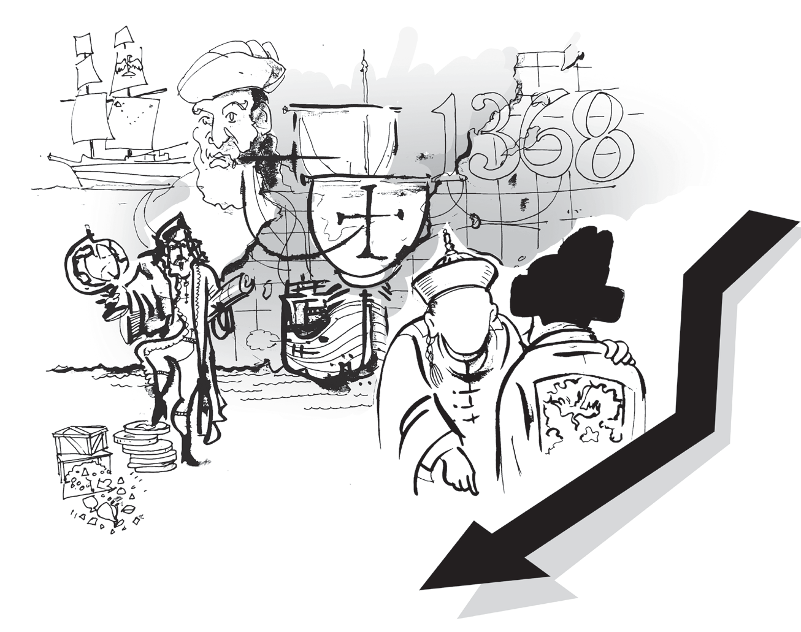
在佛教的管理上，明朝從開國皇帝朱元璋開始，有計劃地整頓佛教。爲了讓朱元璋對佛教的僧團制度有更深入的瞭解，還專門在他的人生劇本里寫入一段經歷，讓他在寺院生活一段時間。明朝的朝廷爲佛教的健康發展制定了不少規則：洪武元年（1368 年），朱元璋任命慧曇禪師爲佛教最高長官，統計全國範圍內的寺院，統一管理住持的任免。洪武三年（1370年）禁止收錢賣度牒，規範化出家流程，要求僧侶學習《心經》《金剛經》《楞伽經》。洪武十五年（1382 年）設立各級僧司，嚴格管理僧務。洪武十七年（1384 年），規定度牒每三年發一次，需參加考試合格才能獲得。之後還有一系列的舉措不一一列舉，整個明朝統治期間，利用政治權力干預佛教，對僧侶的出家、居住、儀軌都有嚴格的要求，迫使佛教更加規範化。明朝主推漢傳佛教，藏傳佛教在內地逐漸勢微。明朝的各項宗教政策，對佛教既有支持也有限制，在防止佛教過度發展的同時，還要讓佛教健康地傳承下去。
到了清朝，關外的少數民族入關進行了兩百六十年統治，算是徹底打斷了民族脊樑骨。滿清貴族的少數民族身份成了統治的原罪，帶來了三個後果。第一，不可能走民主化的道路，必須維持專制，這是好事；第二，在和平時期不能普及教育、廣開民智，只能實施深度的愚民政策，以防人民開化後發動革命；第三，在外敵入侵時無法動員全國人民進行人民戰爭，以防人民先推翻政權。
清朝作爲外來的統治者，對佛教的依賴更大，希望利用佛教削弱人民的反抗意志，所以清朝繼承了明朝的宗教政策，對宗教進行保護和監督之外，還有所放寬，不僅支持漢地的大乘佛教，還支持藏傳佛教的傳播，用以保證西藏地區的穩定。本來整個華夏文明都是以人治文明的形態推進，所以宗教不能佔據社會上的主導地位，最高統治者可以支持宗教，但絕對不會把宗教推到政治權力之上。可清朝因爲是外來民族，需要彰顯他們的慈悲之心，所以清朝的大部分皇親貴族都是以信佛的形象展示於人。
在清朝前期，天主教已經在中國有了一定的信衆基礎，狂妄的教皇要求中國的信衆只許拜上帝，不許拜祖宗和其他神明。康熙帝多次派人和傳教士交涉無果，毅然決定禁止天主教在中國繼續傳播，直接用政治權力干預了宗教競爭。
設計明、清兩朝的目的就是爲了讓中國弱下來，同時用專制政體保護和監督佛教，讓失去純潔度的佛教在政治權力的干預下健康存活。同一時間段，歐洲進入大航海時代，啓蒙運動、文藝復興、宗教改革等一系列的社會變革使落後的西方趕超中國。1840 年，英國發動鴉片戰爭，用大炮叩開了中國的大門，之後的70 年裏，清朝在列強的打擊和太平天國等內部叛亂下逐漸衰弱，公元1911 年，辛亥革命爆發，清朝滅亡。
接下來是軍閥混戰和二戰時期，在民族危亡之際，李德勝同志閃亮登場，建立新中國，對整個中國進行徹底洗牌，把所有舊勢力全部清除，還打跑了一切外來殖民者，給國家重新定調。從家族專制進入一黨專制的時代。
從1911 年清朝滅亡到1949 年新中國建立之前混亂時期，佛教整體上選擇避世，分散躲到山上以求自保。在大乘理論裏，佛教也支持救世，“我不入地獄，誰入地獄”這樣的理念和救世的行爲叫菩薩行。但在修改後的劇本里，對於佛教來說，生存成了第一需求，遇到亂世就選擇避世，遠離各類紛爭，避免不必要的風險，活下去纔是主要任務。
在世界格局方面，把工業革命和大量的科技點給了西方，讓西方先崛起，但一盤散沙的西方還不足以壓制統一的中國，所以又設計出美國。美國對中國的作用不止是壓制，在西方列強試圖徹底分裂中國的時候，美國又跳出來阻攔一下。美國也想從中國獲得利益，但它畢竟隔着太平洋，能獲得的利益有限，可它也不願看到衰弱的中國被周邊國家吞併，尤其是俄國，所以和中國保持着微妙的關係。到現在美國的任務基本結束。
這一切的設計邏輯非常簡單，佛教允許女性出家的情況下，內部已經有了不和諧因素，純潔度明顯下降，在世人心目中佛教的權威性和公信力會更快地下降。要延緩這個速度就需要比佛教更高的政治權力來監督和管理，可以行使這種權力的只有專制政體。如果改成民主政體，會對宗教採取放任自流、自由競爭、自由發展的政策。爲了確保中國的專制時代延續更長時間，先讓中國變弱，同時在外部製造強大的敵人，迫使中國內部團結，維持專制統治。在這變弱被欺到改朝換代、發奮圖強的過程會拉出足夠長的時間，來彌補正法住世減少的500 年。
經過這一番改動，成功彌補了失去的五百年，又多延長了一百年。在這過程中，中國經歷了更多的災難。
那麼話題又回到最前面，女性出家真的會讓佛法住世的時間減少五百年嗎？
大家可以去看《十日談》，被譽爲歐洲文學史上第一部現實主義鉅著。其中有不少披露教會陰暗面的故事，尤其是關於圈內的男女之事，雖然是虛構的小說，但類似的事情一直在發生。西方媒體剛剛還曝出美國和法國教會里猥褻未成年人的事件。
佛教也一樣，只要男女都出家，有些事情就是管不住。住得太近不行，太遠又怕比丘尼們自立門戶，要住得不近不遠。來往太密不行，斷絕來往也不行，這個度很難把握。在這種情況下，內部的分化和腐敗會非常快。
還有一點，從外人的視角看，哪怕什麼事都沒有，只要裏邊有男有女，人們就會遐想，還可以無中生有地造謠，可以很輕鬆地毀掉信衆心目中的宗教形象，把宗教從內部瓦解掉。
可以說，女性出家並不是阿難的功勞，是釋迦牟尼佛犯的錯誤，直接導致正法住世的時間縮短500 年，後面設計者修改劇本，傳法團隊的人增加了不少投胎次數，造更多的業，承受更多的果報，用極大代價延長了500 年傳法時間。同時人類文明的劇本里增加了更多苦難和戰爭，尤其是中國，作爲文明的主角，多經歷一次文明的低谷，使得中國人承受了原始劇本里沒有的很多痛苦。雖然說劇本都是根據衆生前世的業所編寫，每個人所承受的惡報都有前世因果，但國家的落後疲軟給國人的精神上帶來的自卑和憤懣等負面情緒完全可以避免。
可能很多女性朋友難以接受以上內容，可事實就是如此。所以佛教通常建議女性多修福，先發願轉爲男身，得男身後好好修行。佛說男身是七寶體，女身是五障身，如果參禪打坐，女性不僅在生理層面上不如男性，需要更長時間調服肉身，在心理層面上也比較情緒化。
傳法是宏觀態的工作，不能拿個體舉例，要用大數據和普遍現象舉證。整體而言，女性的情執要比男性重，更加的情緒化。並不是因爲生爲女人，有這樣的表現，而是因爲有這樣的習氣，纔會投胎爲女人。
就拿感情問題來舉例，通常女性用情專一，男性比較濫情。那麼用情專一的人境界高呢？還是濫情的人境界高？按照世俗的觀念，用情專一應該是美德，是境界高的表現。實則不然，從佛法修行的角度看，剛好相反。如果換一種比喻來解釋，就拿喫的食物來比喻，應該更容易理解。專喫一種食物的人境界高，還是什麼都可以喫的人境界高？專喫一種食物的人，喫別的就不行，沒有他喜歡喫的食物就會非常痛苦。什麼都可以喫的人對食物沒有要求，也就不會因爲食物感到痛苦。修行是爲了消除痛苦，那麼誰的痛苦多，誰的境界低；誰的痛苦少，誰的境界高。
男女問題也一樣，用情專一的人在感情上更容易受傷，所以通常來說女性比男性境界低、業障重，修行路上障礙更大。
劇本有了大的改動之後，有些地方就需要打一點補丁，把劇本變得更加完善。
釋迦牟尼佛在涅槃之前幾個月，跟阿難簡單提了一下，他可以靠神通住世一小劫。這是爲什麼呢？因爲佛對自己犯的錯誤一直有愧疚之心，還是放心不下。但是極樂世界的大設計師已經拿出了新的劇本，如果釋迦牟尼佛堅持推倒重來，顯得對極樂世界的傳法團隊不信任；可是如果繼續推進，萬一後面再出事故，劇本沒有辦法往前推進，或者出現極樂世界的人墮入輪迴的事情，他向阿彌陀佛難以交代。
哪怕只是劇情無法完整地推下去，也會讓極樂世界的傳法團隊難看。他們畢竟是全法界最頂級的傳法團隊，給他們製造一個失敗的案例，釋迦牟尼佛也覺得過意不去。在自己很難開口推倒重來的情況下，釋迦牟尼佛找了阿難這個肇事者，事情因他而起，那就讓他再做一次決定，這樣誰都不難看。所以釋迦牟尼佛在涅槃前向阿難說：佛可以用神通住世一小劫，但是阿難這個時候就聽不懂話中之意。既然聽不懂，那就按照新的劇本推進。如果阿難請佛住世，那麼人類文明會直接進入增劫，佛以神的形態一直活下去，佛自己不會直接進行統治，但所有統治者都要得到佛的加冕和認可才能上任，世界也會走向統一。
等釋迦牟尼佛示現涅槃之後，他就找來所有人，告訴文殊、普賢他們，新改過的劇本難度有所提高，極樂世界的人可能要投胎更多次來推進這個新劇本。所以在劇本里有任何需求，娑婆世界的菩薩們、羅漢們應盡力協助。文殊、普賢當時就答應，哪怕造新的惡業，也會全力協助極樂世界團隊，讓新劇本完整地推行下去。
所以在新劇本的推進過程中，重要的任務由極樂世界的人帶頭，又有一名娑婆世界的菩薩、羅漢一起投胎，在旁協助的方式進行。當出現必須造惡業的情況時，娑婆世界的人願意擋下惡業，並承受果報和度人。畢竟他們是這個世界的主人，以後還要在這個世界繼續傳法度人，而極樂世界的人傳完法就要回去，所以儘量不造新的惡業。
在有關佛法的劇本補丁中，重大的改動就是密宗。
藏傳密宗在原始劇本里只是可選任務，可做可不做，傳法團隊並沒有把它當作重要的任務來看。因爲在原始劇本里大乘佛教很安全，大家都認爲可以安全地傳承下去。多創造出一個宗派，只會增加不必要的衝突和競爭，就像現在小乘和大乘之間的爭論一樣，畢竟詆譭大乘佛法也有果報的，所以最好是不另立新派。
但在改動後的新劇本里，無法保證中原的大乘佛法能夠安全地傳承下去，萬一傳不下去了，那就準備用密宗代替。《坐禪1》中曾提到過，大乘佛法是以解脫成爲阿羅漢和往生極樂世界爲目標，藏傳密宗以培養合格的修行人爲目標，讓人輪迴着繼續修行，在境界上藏傳密宗比大乘佛法低一個檔次，受衆的根器要求低一段，如果大乘佛法傳不下去，就留下追求往生極樂世界的淨土法門，其他內容就讓它消失，用藏傳密宗來代替。
在玄奘法師去印度取經的時間段，由極樂世界的一名人王職業菩薩帶着文殊菩薩，開始做密宗的開局任務。任何事情開局最難，就像車輛開動一樣，從靜止開始動起來的時候最難，需要更多的動力，輪子一旦轉起來，後面推動力稍微少一點也能繼續跑。傳法任務也是如此，開局建國最難。所以極樂世界人王職業的首座菩薩扮演松贊干布，文殊菩薩扮演祿東贊，二人成功完成開局任務之後，藏傳密宗就由文殊菩薩和他的弟子們接手管理。
接着馬上轉戰朝鮮半島。朝鮮在原始劇本里會被唐朝徹底吞併，成爲中國的一部分，但在改動後的新劇本里，設計者讓朝鮮以獨立國家的狀態一直存活下去。因爲大乘佛法需要一個佛經的備份地。這跟藏傳密宗不一樣，密宗是大乘佛法的候補，大乘佛法無法傳承下去的時候，準備用密宗代替。朝鮮是大乘佛經的備份地，在新劇本里設計者打算利用政治權力監督中原的佛教，當佛教過分膨脹的時候適當地打壓一下，如果打壓過度，致使佛經失傳，那就再從備份地朝鮮拿回佛經。
朝鮮的定位既然是佛經的備份地，那麼它的國力肯定不能超過主角國，但因爲是備份，它也不能死，所以朝鮮就像小強一樣，在強國圍繞的地緣環境中，堅強地活到現在。朝鮮在歷史中經歷了多次亡國的危機，但在傳法團隊的干預下，都能轉危爲安。
第一次危機是唐高宗時期。一開始唐朝和新羅聯手滅了百濟和高句麗，按照戰前的約定，百濟的國土歸新羅，高句麗的國土一分爲二，北方歸唐朝，南方歸新羅。公元668 年，滅掉高句麗後唐朝在平壤設立安東都護府，打算吞掉全部高句麗的領土，新羅王試圖奪回戰前約定的土地，但一直打不贏唐軍。公元676 年，唐朝把安東都護府遷到遼東，但是繼續駐守平壤，直到武則天主政時期，新羅才成功驅逐唐軍。之後新羅王馬上向武則天低頭求和，武則天忙於朝廷內部的權力鬥爭，無暇顧及朝鮮半島的事務，也就默許了新羅王主張的邊界線，新羅也沒有再和唐朝發生衝突。武則天是修改後的新劇本里加入的人物，自然要按照寫好的劇本進行決策。政局上看，武則天不能輕易發動對外戰爭，萬一在戰場上失利，會影響到她的政權。這樣，朝鮮躲過了第一次亡國的危機。
第二次危機是遼國。公元907 年，耶律阿保機成爲契丹可汗。公元925 年，耶律阿保機滅掉渤海國，國境線與高麗接壤（王氏高麗也是剛剛建立的新政權，公元918 年，王建建立高麗國，935 年合併新羅，936 年滅後百濟，統一半島）。高麗向隔海相望的宋朝稱臣，遼國感到威脅。公元993 年，遼第一次東征高麗，但雙方未分出勝負，遼國提出用鴨綠江以東六州土地，換取高麗棄宋朝遼，高麗接受條件，雙方罷兵，高麗派人接收江東六州，但暗中繼續朝貢宋朝。不久高麗國內發生政變，王詢被擁立爲新的高麗王。1010 年，第二次麗遼戰爭爆發，遼聖宗親征高麗，攻下高麗國都開京，王詢南逃，繼續組織抵抗（王詢和手下一名主戰派大臣是再來人扮演）。遼軍補給線過長，沿途佔領的城池陸續叛亂，王詢口頭承諾親朝大遼，遼退兵。之後王詢食言不親朝，遼聖宗轉而要求歸還江東六州，高麗不還，遼聖宗怒。1018 年，第三次麗遼戰爭爆發，遼聖宗派大將攻打高麗，在高麗都城開京外雙方決戰，遼敗退，撤退路上又被追兵成功追上，遼軍潰退。戰後高麗向遼稱藩納貢，但獲得的江東六州不予歸還。
在第二次麗遼戰爭中，高麗的國都被佔領，朝內有不少投降派，也有暗中勾結遼國的叛徒，國家陷入亡國的危機，但還是在傳法團隊的干預下，成功度過危機，最後還得到了江東六州。後人的視角看三次戰爭，高麗用不光彩的欺詐手段騙取土地，要知道國與國之間只有利益，沒有道德可言，所謂國格也只有強國纔有資格談。
新羅和高麗這兩個朝代是佛法大興的時代，傳法團隊大力推廣佛法，大乘佛法在半島成功普及，以至於高麗時代家家戶戶拜菩薩。
第三次是蒙古人崛起的時候，從1231 年到1273 年之間，蒙古7 次大舉入侵高麗。1232 年，高麗王被迫把朝廷搬到江華島，半島全境幾乎都被蒙古佔領，但半島的土地有70% 是山地，平原較少，蒙古善用的騎兵不適合山地作戰，高麗的官軍和義兵在各處打游擊，雖然有些戰果，但在強大的蒙古鐵騎面前，高麗是螳臂當車，毫無勝算。更何況，蒙古打高麗一直都是用偏師，蒙古的主力一直在其他戰線上作戰。高麗抵抗了40 年，最終國力不支，1270 年，高麗王投降蒙古。
在1259 年的時候，高麗王派使臣去跟蒙古人談，使臣在路上得到消息，蒙古可汗蒙哥在打中國四川時陣亡，之前並沒有指定繼任者。作爲使臣，此時該去元大都等待新的繼任者出現。但是在傳法團隊給的提示下，他先去找忽必烈示好。元大都還有一位勢力更大的候選人叫阿里不哥，兩個候選人先後稱可汗，之後打了5 年爭奪汗位的戰爭，最終忽必烈成功上位。在爭奪汗位時，高麗堅定支持忽必烈的緣故，上位後的忽必烈給高麗很多方便。1274 年，忽必烈下嫁公主給高麗世子，也是後來的忠烈王，高麗成爲元朝的駙馬國，得以保存國體。之後和元朝的外交中，高麗多次拒絕元朝的無理要求，但元朝都沒有追究。高麗成功化解第三次危機。
第四次是明朝萬曆年間的壬辰倭亂。1592 年，豐臣秀吉統一日本後想要借道朝鮮攻打明朝，朝鮮不答應，遂日本出兵攻打朝鮮。此時的日軍在訓練程度和裝備上都佔絕對優勢，朝鮮軍無力抵抗，開戰一個月，日軍佔領朝鮮首都漢城，朝鮮王逃到義州，嚮明朝求援。萬曆帝在國庫不充裕的情況下，決定拿出自己的內帑金救援朝鮮，遂派大將李如松率4 萬明軍入朝作戰，明軍的平壤大捷和碧蹄館之戰後雙方議和。談判過程出現烏龍事件，日本提出7 條無理條件，明朝的談判代表擅自答應，之後隱瞞明朝朝廷，日本的代表同樣欺騙豐臣秀吉，最終真相被揭露。1597 年，豐臣秀吉派14 萬大軍第二次入侵朝鮮，明朝派7 萬抗日援朝。1598 年，豐臣秀吉死後，日軍無心繼續戰爭，開始撤軍。戰爭以明朝的勝利結束，朝鮮在明朝的幫助下又一次度過危機。
第五次危機是皇太極入侵朝鮮的事件，韓國歷史上叫丙子胡亂。1636 年，皇太極稱帝，改國號爲大清，朝鮮拒絕承認。之前朝鮮一直站在明朝一邊，皇太極早就想滅掉朝鮮。1637年1 月，鴨綠江結冰之際，皇太極親率大軍渡江進攻朝鮮。清軍揚野戰之長，舍堅城而不攻，長驅直入，直抵朝鮮首都漢城。朝鮮王讓家眷逃亡江華島，自己逃至南漢山城。清軍圍困南漢山城40 余天，期間圍點打援，各路援軍均被清軍擊潰，還派兵登陸江華島，生擒一衆王族成員。朝鮮王派人請降，皇太極不見使臣，勢必滅掉朝鮮。
在這裏，傳法團隊又幹預了一下，讓清軍大營鬧瘟疫，使得清軍減員不少，士氣也受損。皇太極也覺得朝鮮是個不祥之地，不要也罷，遂叫朝鮮王過來投降。朝鮮王給皇太極行三跪九叩之禮，答應不再朝貢明朝，改朝大清後，皇太極撤兵。這樣又度過了第五次危機。
第六次危機是近代，日本完成了明治維新之後走上了軍國主義道路，試圖吞併中原大陸，第一步是吞併朝鮮，對朝鮮進行了35 年的殖民統治，期間試圖抹殺朝鮮的文化。二戰結束後朝鮮復國，但在美蘇劃分勢力範圍的時候，在沒有朝鮮代表參加的會議裏，把朝鮮分成現在的韓國和北朝鮮。朝鮮又一次度過危機，保存國體。
目前的半島局勢由中美博弈的結果來決定。美國一直掌握霸權，半島會一直維持分裂的局面，如果美國失去霸權，撤出亞太，中國將成爲世界話事人，半島的局勢就會有所改變。
在日本佔領朝鮮期間，日本的佛教進入朝鮮，當時的日本和尚是可以結婚的，他們逼迫朝鮮的和尚也結婚娶妻。等日本戰敗撤離後，紅色政權統治的北方徹底清除了一切宗教。在韓國，佛教分裂，那些結婚的和尚們不願離婚，還想分得教產，和沒有結婚的和尚們徹底決裂。現今韓國佛教有三個宗派：曹溪宗、天台宗、太古宗。其中太古宗是受日本影響，可以結婚的宗派。
朝鮮作爲佛經的備份地，一直存活到現在。新中國建立後，李德勝同志爲了消滅一切舊勢力和舊思想，發動消滅一切牛鬼蛇神的大運動，佛教也受到重創。有不少人用各自的方法保存經典，延續正法香火，虛雲和尚發願延長27 年壽命，留下來傳承佛法，但還是遺失了很多佛經。大運動結束後，中國的佛教界從韓國和日本重新找回遺失的部分佛經，朝鮮作爲備份地發揮了該有的作用。
日本是作爲佛經的第二備份地來設計的，是朝鮮之後的第二個候補。在原始劇本里，日本是給這個世界的菩薩、羅漢們拿來練手用的試驗地，沒有什麼特別任務。但是在修改後的新劇本里，日本也作爲一個重要的備份地進行傳法。因此從鑑真和尚東渡開始，向日本輸送了完整的大乘佛法內容。每次中國發生大的滅佛運動後，也會從日本找回遺失的佛經。到了明治維新的時候，日本的作用基本結束，就不再派再來人去日本投胎，所以後邊日本的佛教越來越世俗化，日本整個國家都往軍國主義發展。
二戰也是計劃中事情，隨着衆生殺業的增加，刀兵劫必然會發生。目前中國14 億人口一年要喫掉7 億頭豬，5000 萬頭牛，4 億隻羊，165 億隻家禽，還有大量的河鮮、海鮮。當殺業積攢到一定程度就會發生刀兵劫，用佛菩薩的加持力壓着，也是壓到一定程度就會爆發，所以戰爭的週期性發生是無法避免的果報。那麼爲什麼是日本，而不是其他國家？在這裏還有社會大環境問題，冷兵器和低級的火器要殺人需要近距離接觸，所以殺業都發生在文化環境大致相同的一個地區內，日本和中國的文化環境大同小異，都是儒家文化圈。衆生對文化環境也有習氣和依賴，編劇菩薩和安排投胎的閻王們就把大量死在中國的衆生投胎到文化環境差不多的日本，好引發大量殺業的果報，他們不能把習慣生活在中國文化環境的人大量投胎到西方國家。在古代，和中國發生衝突的主要是北方遊牧民族，而遊牧民族也在積極吸收中原文化，雙方的文化環境不斷同化中。歷史上，中國和不同文化圈的國家發生大規模衝突，導致大量死亡的戰爭並不多，都是和北方遊牧民族衝突，或者是內戰。
釋迦牟尼佛涅槃之後，阿難也活完了一生，最後還是成了阿羅漢。阿難還去向極樂世界的傳法團隊道歉，作爲補償，也希望做點事幫幫忙。但是極樂世界的人拒絕阿難的請求，不允許阿難和他的搭檔在3000 年傳法時間段內投胎，釋迦牟尼佛也怕阿難再惹事，就讓他靜靜地看着，不要再幹擾極樂世界的人做事，所以阿難寫完佛經就沒有再投胎入世。
這個故事告訴我們，凡夫很容易好心辦壞事，做好事也需要有智慧。
爲什麼傳法團隊要堅持專制政體？改革開放後，在西方自由思想的入侵下，很多人認爲民主比專制好。但從文明的設計者和管理者的立場上去看，專制國家更容易控制和管理。管理者只需要控制一個皇帝就可以控制一個國家，讓皇帝按照管理者的意圖實行政策，不管人口多少的國家都能正常運作。
相反，在民主政體裏，總統的產生和新政策的實施都要通過議會的投票。通常一個國家的議會由300 名到500 多名的議員組成，要通過一個不符合議會成員們的利益，但符合底層民衆利益的政策，需要控制一半以上的議員。而且他們都有任期，兩三年就要重新選議員，需要控制的人非常之多。控制的人越多，越會背離傳法的初衷。
還有，大人口國家如果選擇民主制，必然導致大資本集團控制國家的局面，資本是貪婪的，追求無限膨脹，因此想讓民主政體國家維持和平，就必須給它大量的資源，讓它一直處在膨脹的過程中。一旦這個膨脹到了上限，無法從內部或者外部獲取更多利益，民主國家就會從內部崩潰或者發動對外戰爭。這是民主政體的先天性的缺陷。
佛法第一看重的是發心，要的是自願學習和自願修行，強行控制過多的人，對佛法的傳播也不利，所以需要控制的人越少越好。高度集權的國家只需控制一個人或者一個小團隊就可以讓國家正常運作。最好的方法是讓當權者自願實施利益廣大人民的政策，那就需要在邏輯上讓當權者理解一項政策的利弊。讓一個人或者幾個人想通一個道理比較簡單，而且想通了就能實施，沒有猜忌和內耗。如果換作民主政體，就算大部分議員想通了道理，內心希望實施有利於廣大人民的政策。但到了真正投票的時候，還會猜忌他人，怕自己當好人會被清除出去，最終還是給既得利益集團投票。
目前那些民主國家的議員和政客當中，還是有一部分清醒的人，只不過爲了保護自己選擇了同流合污而已，畢竟保命和保住地位比什麼都重要。而且在民主政體裏沒有真正的責任人，大資本集團會把責任推給政客，政客又認爲自己只是身不由己的棋子。當一個國家沒有最終責任人的時候，國家只能淪爲利益集團的剝削工具。
堅持專制政體就是爲了給國家一個最終責任人，“君王死社稷”是專制政體的傳統觀念。如果一個皇帝把國家搞垮了，作爲個人根本沒有辦法做出等價的補償，但還是要讓皇帝付出代價，身死不足，族滅亦不足，有可能全國範圍內同姓之人都會受到牽連，用這般慘烈的後果逼迫帝王爲國盡責。如果最高統治者犯了錯，讓國家遭受了巨大的損失，卻只需辭職走人就可以，那還有什麼人會真正爲國效力，爲民擔責。
下行文明的發展規律是從專制走向民主，再到無政府狀態，最後是毀滅，這是不可逆的大趨勢，也符合人性。人的意識由妄想、分別、執着所構成。專制政體下，所有人團結在統治者周圍，用一種思想統一所有人，大部分人把國家的利益放在個人利益之上，分別和執着都很少。人們分別心和執着心越重，越主張自己的想法和利益，國家就會更快地滑向民主制。當分別心、執着心發展到一定程度，人們就會反對一切形式的統治和管理，認爲只要政府存在，政府的剝削和壓迫的成份會大過於服務的成份，因此整個社會開始滑向去中心化和無政府化。政府一旦消失，在沒有政府執法和組織抗災的情況下，人類無非就是兩個結局，要麼在無止盡的戰爭中滅亡，要麼在天災中滅亡。
對於傳法團隊來說，能控制的最好階段是專制階段，民主思想是無法治癒的傳染病，當一個國家的大部分人都被民主思想洗腦，那國家的滅亡只是時間問題。如果是大國，不對外發動戰爭的情況下，還能靠分裂再維持一段時間，大國分裂成幾個小國，再分裂成多個城市國家，最終陷入無政府狀態。所以要讓人類文明維持更長時間，就要在專制政體時代做功夫，讓專制時代延續更長時間。
目前在國內，一直有一批公知主張民主制，好像國家面臨的一切問題都是目前的制度導致的一樣，任何民間發生的小問題都會無限放大，最後扯到制度問題上。如果中國走民主化道路會發生什麼情況，這都不需要用菩薩的推演力來推演，用簡單的社會邏輯來推理都能推理出結果。
先看經濟方面。民主制要的是私有化，先不管複雜的金融問題，就用簡單的土地問題來舉例。只要施行土地私有制，允許土地自由買賣，城市裏的大資本就會跑到農村大肆購買土地。
那麼農村人怎麼辦？中國目前有九億農民，有二億到三億的農民在城裏打工，剩下六七億農民在農村生活，常年居住農村的人口有五億。如果大資本去農村大量購買土地，至少會有三億多的農民將會徹底失去土地，成爲真正的無產者。這是必然會出現的結果，只可能更嚴重，不會更好。
那這些失去土地的人怎麼辦？農村連要飯的地方都沒有，他們只能進城市。城市裏一旦湧入這麼多無業人口，肯定會出現貧民窟，城市的管理成本會大幅提高。而且城市裏的低端工作，像保潔員、飯店裏的服務員這類工作，競爭會變得非常激烈。對有錢人來說是好事，可以用更少的錢僱用勞動力，但對這些在城裏討生活的勞動者來說，生活會變得更加艱苦。政府還要拿出部分預算給這些人發福利，保證這些人不出來鬧事，但犯罪率的提高無法避免。
2020 年5 月28 日，總理說：我國人均年收入是3 萬元，但有6 億人月收入低於1000 元。有人就說：有些農民很懶，產能很低，不如把這些農民的地收了，交給大資本運作，可以大幅提高糧食產能，然後再給這些沒有地的人一個月2000 元生活費行不行？
問題是，人除了喫飯和賺錢之外，還需要尊嚴。農民是一個職業身份，靠自己的勞動養活自己，還給國家交糧，是光榮的勞動者。如果變成乞丐或者低保戶，就算國家給2000 元的基本生活費，可他的尊嚴怎麼辦？人要是沒有尊嚴，什麼事都幹得出來。所以說，中國的耕地不只會產糧，還解決9 億人的就業問題和尊嚴問題，不是單純用錢就能衡量的經濟問題。
看現在的印度，印度總人口是14 億，自詡爲人口最多的民主國家。印度的貧困人口有3 億，有1.9 億的人面臨飢餓的威脅，至少有2 億人常年生活在貧民窟。如果中國施行土地私有制，允許自由買賣土地，不需10 年，中國也會和印度一樣，甚至比印度更糟糕，因爲印度施行了3000 年的種姓制度，底層人民接受命運的程度比中國高。在中國，公元前209 年，陳勝、吳廣起義反秦的時候就喊出“王侯將相寧有種乎”這樣的口號，真到了二三億人住貧民窟的程度，說明國家也到了洗牌的時候，也必然會出現新的李德勝同志。
在多民族國家，民族問題一直都是重要的議題。中國一直實行優待少數民族的政策，生活在中國的大部分人都以爲本該如此。實際上，只有在專制政體下，一個統治者或者小團隊決策的時候，會從國家利益出發，施行優待少數民族的政策。如果是用票數來決定的民主政體，少數民族本來就票少，怎麼可能在議會里通過少數民族優待政策。看美國的選區地圖，你會發現選區的分界線畫得非常不規則，美國故意用這種方式把少數族裔佔多數的地區劃分到多個選區，讓少數族裔在所有選區都成爲少數，讓他們無法主張自己的利益，民主制就是如此。
中國一直都是用倒貼錢的方式經營少數民族地區，以確保少數民族地區的穩定和國家的統一。國家和地區也有像物理學上的萬有引力一樣的吸引力，如果一個國家或地區資源豐富、人口多、那麼它的市場規模就大、就業機會也多。它會對周邊地區的人才和資源產生吸引力，那些邊緣地區的人才和資源會向發達地區流動。這些邊緣地區的少數民族也有他們的民族主義者，也有保守派，想要守護他們民族獨立性。如果不給少數民族地區足夠的優待政策，只是一味地吸走他們的人才和資源，必然會生亂，屆時再有外部的反華勢力煽風點火，會導致更嚴重的後果。
對目前的中國來說，內蒙、新疆、西藏，這些地區都是重要的戰略緩衝地，有了這些地區，中國纔有大後方。尤其是西藏地區，西藏既是高原屏障又是水源地。如果西藏獨立出去，讓敵對勢力佔據西藏，在水源地做手腳，後果將不堪設想。失去西藏，中西部的重慶、成都這些原來的戰略大後方都會變成前線，中國就沒有了戰略縱深，東部的漢族聚居地人口密度很大，當外敵入侵時，將沒有和敵人周旋的空間。
所以說，只有在專制政體下，中國才能用少數民族優待政策來確保國家的統一和穩定，而且對所有少數民族一視同仁，沒有歧視。很多沒有在國外生活過的中國人，對民族平等的觀念習以爲常，以爲在國外也是如此。實際上出國看看就知道，那些西方國家的人對中國和落後國家來的人歧視很嚴重，就算是受過高等教育的有素質的人，大部分也只是表面不那麼露骨而已，內心還是歧視，這種歧視會在不經意間通過簡單的言語甚至是眼神表現出來。而且越往上層社會走，這種歧視越藏在骨子裏，要進入他們的圈子，需要付出極大的代價，甚至有些圈子直接用民族和血緣來隔離，外人根本進不去。
還有宗教問題。在民主政體裏，都會施行宗教自由政策。所有宗教一視同仁，不會刻意地保護某個宗教，讓各大宗教在公共區域自由傳道，自由競爭。在這種宗教大亂斗的環境裏，佛教和道教，這些反對殺戮和鬥爭宗教，反而鬥不過那些西方十字架。佛教、道教都有自己的修行體系，沒有修行10 年以上都不好出來傳道，信衆也不認可。但是十字架沒有修行體系，只要上4 年神學院，背熟一本書，出來就是傳道士、牧師、神父，所以他們乾的事就是拉人頭。
而且十字架對收費有明確規定，每月要給教會交十分之一的收入。曾經在一個網絡宗教論壇上看過這樣的對話。有人問：最近因爲經濟困難，沒有交齊什一稅怎麼辦？下邊有個牧師回答說：那你是欠了上帝的，後邊一定要還，不然會下地獄。
這和佛教、道教講的行善積德完全不是一回事。佛教、道教提倡自願行善。雖然佛陀說，四分之一的收入可以用來供養三寶，但這不是死規定，全憑個人意願，一切自有因果，不會用下地獄來恐嚇信衆。
但是十字架在這裏有明確的利益綁定，所以他們對傳教非常執着。只要國家不管，滿大街都是發傳單拉人頭的人。就拿韓國舉例，韓國本來是佛教國家，目前5500 萬人口當中，只有1000 萬是佛教徒，基督教信徒超過2000 萬。第一任韓國總統李承晚上臺之後，第一件事就是建立神學院，開始批量生產神職人員，在全國範圍內開始傳道。後邊的總統當中，有信基督教的，也有信佛教的。李明博一上臺就說要把首爾獻給上帝，導致佛教界不能接受，很多佛教徒上首爾抗議。
在宗教問題上，中國目前的宗教政策，反而是在維護宗教界的和平。既是保護佛教、道教這樣比較溫和的、反對殺戮的宗教，同時壓制那些允許殺戮、喜歡殺戮的宗教。如果一旦放開，允許各大宗教自由傳道和競爭，短時間內佛教和道教會被打成一個小宗教，一代人、兩代人後就會消失。
而且在民主制度下，公職人員也可以有宗教信仰，不像目前的中國，公職人員不能有宗教信仰。沒有宗教信仰才能公平地對待每一個宗教，讓所有宗教都能和平相處。如果公職人員有宗教信仰，信哪個宗教的人上去就推哪個宗教，打壓其他宗教，宗教之間的矛盾會變得越來越嚴重。看似很自由、很民主，實則是打壓少數派宗教。最終的結果就是，最殘暴的宗教一家獨大，佛教、道教都會消失，最後像西方國家一樣，總統就職時不是在憲法和人民面前宣誓，而是把手放在宗教經典上，對着看不見的神宣誓。
現在世界進入重新洗牌的階段，全世界的所有熱戰都是中美博弈的外溢，但偏偏又是以宗教來劃分陣營，俄羅斯是東正教，和中東的伊斯蘭教聯手，另一邊是盎撒基督新教和猶太教，宗教信仰上雙方無法共存。中間還夾着歐洲天主教，天主教國家的大部分人民是反對戰爭的，無奈國家被猶太資本和美國滲透太深，政客們都被收買，不爲本國利益服務，盲從於美國。
國家產生的目的是抱團求生，是爲了在殘酷的自然環境和同類競爭中生存下去。個體是脆弱的，生存力很低，只有很多人團結在一起，分工明確、各司其職、協調一致的時候國家才能健康發展。這就需要有一個高效運作的政府和有智慧的領導人，領導人要把人民的利益放在第一位，人民也要信任政府和領導人。而民主制運行到一定程度，上臺的領導人不再代表人民的利益，代表的是參選時提供資金的大資本的利益，人民對政府失去信心，不願服從政府的領導，社會上充斥着反政府的言論。大資本爲了麻痹人民，隱藏自己，把人民的怒火引向政府，4 年換總統都不足以壓制底層人民的反抗情緒的時候，就會給人民不斷地貼標籤，分化人民，讓人民內鬥，最終國家分崩離析。
專制和民主，兩種思想對國家的理解完全不一樣。梳理一下專制制度產生的過程，大概如下。一開始是多個部落互相競爭，其中有一個部落出現了有智慧的領導人，讓部落強盛起來，但是一個部落再強大也不能同時對抗所有部落，所以部落之間的戰爭只能是點到爲止，簽訂協議、劃分勢力範圍就會終止戰爭。如果一個強大的部落把另一個弱小的部落徹底消滅，其他所有的部落都會團結起來攻擊強大的部落。因此經過長時間的博弈後，並不是直接形成大一統的局面，而是在一個強大部落的主持下會形成部落聯盟，其目的是阻止戰爭，大家和平共處，進行貿易和嫁娶。一開始部落聯盟的盟主是輪值主席，每隔幾年就要換，多個部落的領導人輪換當盟主。盟主沒有專屬的治所，哪個部落的領導人當上盟主，盟會就會開在哪個部落所在地，所以中國在夏朝之前沒有首都。後來發現每次換盟主的時候，有些部落的領導人不服，不願參加盟會，也不願接受領導，甚至會武力反對。畢竟多個部落中，有些部落之間必然存在矛盾。盟主的主要工作就是協調各部落之間的矛盾，制定貿易規則，但是盟主自己的部落和其他部落有矛盾的時候，沒有更高的權力來仲裁的情況下很難化解，這就導致了換盟主時經常發生流血衝突。爲了徹底解決權力交接時容易發生衝突的問題，有強大部落的領導人決定施行世襲制。一開始肯定有些部落不服，因此避免不了衝突，但世襲製成功施行幾代，形成制度觀念之後，就基本避免了權力交接時發生大規模衝突或者分裂的事情。在世襲制下，爭權主要集中在王子們之間，而王子們之間的權力鬥爭很難發展到全國性的動亂，大部分大臣都會選擇觀望，不願參與王子們的鬥爭當中，但是這樣還是有風險。秦國二世而亡有很多原因，其中有一條是，秦始皇死前沒有指定儲君並公開儲君的身份，這就給了權臣宦官可乘之機。所以後邊的王朝出現了指定儲君的制度，儲君被視爲國本，是權力穩定的基石，讓潛在的競爭者和圖謀不軌者們不敢妄動。
新中國建立後製度有所改進，但並沒有脫離專制制度的任命規則，細節不便多說。
看這制度的演化過程，我們可以知道，專制制度是爲了避免內部的衝突而產生的，換一種說法就是爲了和平。那麼與外部的和平如何實現？最根本的方法是征服後同化，把新徵服的土地劃爲本國領土，把土地上的民族同化成本國的國民。但是民族的同化也有侷限性，不同的環境產生不同的生產方式，不同的生產方式產生不同的文化和習俗。生產方式不同的民族之間難以同化，因此中國作爲農耕民族，沒有辦法完全同化遊牧民族。在不能同化民族的情況下，要用更好的文化和制度降服其心，宗教也包含在文化裏，還要發展貿易，合作共贏，用經濟利益降服其身，再用平等的民族政策，讓多民族和平共存，共同繁榮。所以說，一個專制國家對外用兵，大部分情況下是爲了徹底解決安全隱患，還是爲了和平。
人人都愛惜自己的生命，而戰爭必然會有傷亡，合格的領導人都知道，貿然發動戰爭是失民心的決策。因此正常的領導人發動戰爭前都會再三考慮，確定戰爭是爲更長久的和平，而不是一味地掠奪和屠戮。中國的兵法也主張慎戰，攻心爲上，不戰而屈人之兵纔是上上策。綜上所述，我們可以知道專制思想對國家的理解主要是爲和平。
再看民主制，目前西方的主流學術界信奉的是亞當斯密在《國富論》中對國家的解釋。那麼亞當斯密是怎麼看國家的，在《國富論》中說到：在狩獵社會沒有財產的不平等，權力來自於年齡和資歷。到了遊牧社會，開始出現財產的不平等，因此出現擁有更多財產的家族，也就是門第。門第和財產是劃分地位的兩大因素，也是權力的主要來源。門第顯赫的人利用身份可以團結更多的人由他支配，支配他人就是行政權。戰時可以聚集更多的兵力，不僅保護自己，還可以讓傷害自己的人付出代價。那些沒有能力保護自己的人們會請求門第顯赫的人的保護，發生糾紛時會請門第顯赫的人來裁決，也願意服從這樣的裁決，這就是司法權。爲了維護這個司法權，門第顯赫的人們會組織政府。富人們會團結起來維護這種關係，保護自己的既得利益。小富人們團結起來保障大富人的大財產和大權力，換得大富人保障他們的小財產和小權力。簡單來說，行政權、兵權、司法權，全部都來自於門第和財產。亞當斯密認爲，政府組織的建立就是爲了保障財產的安全，保護富人、對抗窮人，保護有產者、對抗無產者。
在這條邏輯線上再往前推理，權力既然來自於資本，那麼有權力的人要繼續保持自己的權力，防止更多的人染指權力，就必須讓窮人一直保持窮，不能讓窮人們變富。隨着科技的發展，社會上會產生更多的財富，有權力的人就要不斷進取，把這些多出來的財富全部據爲己有，如果不這麼做，很快就會有窮人獲得這些多出來的財富，來分享他們的權力，甚至威脅他們的權力。也就是說，在民主國家，富人們會想盡方法讓窮人們一直窮。放到國際社會，富國會想盡方法讓窮國一直窮。在這裏，富國發動戰爭是爲了讓自己變得更富，讓窮國保持窮，讓不聽話的小富國變成窮國的手段而已。
看美西方國家在近幾十年乾的事，就能知道他們對國家的理解還處在《國富論》的境界。美西方自稱10 億黃金人口，一直都在吸其他70 億人口的血，保持着他們富足的生活和種族優越感，美西方只會讓發展中國家一直窮下去，不可能領導人類走向真正的和平和富裕。
再從社會階級上看，專制國家和民主國家的階級劃分不同。兩種國家都分統治階級和被統治階級，被統治階級細分爲富人和窮人，這一點毋庸置疑，但在統治階級的內部劃分裏有所區別。專制國家的統治階級分最高統治者和官僚階級，民主國家的統治階級分大資本貴族和政治貴族。專制國家的最高統治者和民主國家的大資本貴族，都想維持他們的權力和統治地位。專制國家的最高統治者會以實施仁政，獲得民心的方式維持統治，而一切統治行爲都通過官僚階層來實施。所以在專制國家裏，最高統治者的主要工作對象並不是普通國民，而是中間的官僚階層，不能讓官僚階層出現腐敗過度、魚肉百姓的現象，從而導致官逼民反的後果。
在民主國家裏，大資本貴族維持統治地位的方式就是讓窮人們一直窮下去。大資本貴族們會控制政府，用制定法律的方式保護他們的既得利益，同時榨取儘可能多的社會財富，讓窮人們一直窮下去，再用輿論和媒體宣傳把人民的怒火引向政府，當政府的支持率低到一定程度就用換屆的方式維持社會運轉。他們爲了不讓人民發現社會運作的基本規律，還要不停地給人民貼標籤，分化人民，讓人民內鬥，用奶頭樂把人民的注意力從社會問題引開，還要實行快樂教育，把人民變成傻子。這就是大資本貴族施政的大方向。
專制和民主兩種政體比較一下，專制政體就像是週期性發作的病人一樣，每隔一段時間會發作一次。正常和不正常的狀態交替出現，就是治世和亂世。看中國的歷史，一般治世能維持200 多年，之後是100 多年的亂世，治世的時間比亂世長一些。
民主政體就像是一個絕症患者，慢慢滑向死亡，一般情況下中間不會往回倒退。從誕生之日開始，繁榮一段時間後逐步往下滑落，直到徹底崩盤，進入無政府狀態。這是民主政體的大方向。
中國自從改革開放以來，就有一代人深受西方思想的影響，有崇洋媚外的傾向。到現在，還有一些掌握着話語權的人在替西方說話。
從修行人的角度來看，整個法界都是大大小小的組織所構成，小到夫妻二人構成的家庭，大到國家，再大到一個世界，比如極樂世界、娑婆世界。馬克思說：人是社會關係的總和，作爲一個人，愛自己的家庭，愛自己的民族，愛自己的國家，這是基本素質。看動物世界，有很多羣居的動物，牛羣、馬羣、羊羣等等，這些動物中沒有一個動物會故意引天敵過來喫自己的同胞，動物都幹不出來的事，只有人幹得出來，還自以爲聰明。這些爲了一點個人利益出賣自己國家和民族，破壞祖國內部團結和統一的人，終將會迎來該有的果報，這是法界運作的因果定律。
我個人堅定支持現在的中國政府，未來至少一百多年，中國會引領世界，從2020 年開始，給中國的科技靈感不斷增加，給西方的越來越少。美國倒行逆施，站到人類對立面，崩盤是時間問題，目前只是崩潰前的最後瘋狂而已。
所以，現在想賺大錢的人就應當服從國家的大戰略，去一帶一路沿途國家發展。那邊有很多機會，有能力的人多出去看看也是好事。而且在不久的未來，那些國家的人肯定會尊重中國人，就像過去尊重白人一樣。有智慧的人做事都是順勢而爲，順應時代的潮流就能事半功倍。
目前道教和漢傳佛教是代表中國的兩大宗教。道教沒有普度衆生的概念，加上中國化的元素太強，想去國外傳播比較難。相比而言，大乘佛教更有利於廣泛傳播，也積累了一定的經驗，所以只要把佛法用現代語言重新解釋一番，讓現代人更容易理解，那麼傳法應該不是難事。現在我做的事情就是用現代語言解釋佛法，讓佛法更容易翻譯成各種外語，爲未來的海外傳法鋪路。
個人非常希望這本書未來能翻譯成英文和其他各種語言，傳播到海外去，讓更多人能夠接觸佛法、理解佛法。讓佛教在最後的一百多年裏發光一次。我個人希望，在傳法這件事上有大願的人都能參與進來，發揚“上求佛道，下化衆生”的大乘精神，爲大乘佛法的傳播、爲普度衆生盡一份力。
我們已經知道了光的傳播方式，當光子振動時表現爲光明，能反映出其它的物體，我們就能看見，當光子靜止的時候，就會變成黑暗。所以人類沒有辦法觀測光子，光子振動時我們看到的光明是光子振動的場，不是光子本身，這個場要比光子本身大得多。要觀測光子就要讓光子停止振動，但光子停止振動時會表現爲黑暗，更是觀測不到。因爲我們觀測任何事物都要通過光子，除非把觀測儀器直接連接到視神經，否則中間隔着的空間充滿了光子，都是通過這些光子們傳遞的振動，讓我們觀測到事物。
光的傳播方式後面聯繫着好幾個科技靈感。在這裏我們首先要知道，科技方面人類沒有任何創造力，能給人類帶來科技進步的靈感都是管理員給的，藝術方面的靈感也一樣，這些靈感不僅能讓人類科技進步，還可以給發明者帶來名譽和財富，所以想要某個領域的靈感，首先這個靈感在人類文明的大劇本里已經有計劃要投放，其次作爲個人要有足夠的福報。
因此科技點的思路就算我放出來了，有人想拿去發表論文等，還需要得到管理員的許可，否則就算知道了也寫不出論文，也發表不了。
作爲普通人，在人類文明的大劇本里大概率不會有什麼太大的作爲，但是還想要某個領域的靈感，那怎麼辦？首先是積福報，用足夠的福報來兌換靈感，你可以向佛菩薩許願。不管你是科研人員，還是藝術家、作家、音樂家、美術家等等，你想要一個能給你帶來名利的靈感，那就先積福報。其次纔是這方面的基礎知識，畢竟給你靈感你也無法理解，不能把他造出來，那也沒辦法。
至於個人的努力，說實話稍微有那麼一點作用，但千萬不要以爲努力是決定性因素。命裏有就有，命裏沒有再努力也沒有用。很多人努力一輩子，也拿不出任何科技發明或傳世的藝術品。在創造方面有成就的人，大概率都是前世積攢足夠福報的人。如果沒有前世福報，那就先積福報，再跟佛菩薩兌換。兌換的時候還得發願：你得了名利後會做什麼好事，不會做壞事。有了願和承諾，管理員有可能會考慮。
現在我講出來的這些內容，大家當故事聽聽就可以。人類科技會不會往這個方向走，會不會出現下一代科學巨匠，這事由管理員安排，咱們這些普通人就不用想了。
在上一期文明裏，發展到中後期後出現了三個大國家：姆大陸、亞特蘭蒂斯、地底國（地底國是住在地底下的人）。那個時候極樂世界的傳法團隊已經來到娑婆世界，在開始傳法前先觀察一番，看看這個世界的衆生如何。地球還是由娑婆世界的傳法團隊管理和傳法，當時佛法只在姆大陸上傳播，其他兩個國家沒有佛法。
在姆大陸的傳法還是很有成效的，但整個文明沒能完全按照劇本推進到最後，中間出現意外時沒能及時打補丁，所以文明長度有所縮短，解脫成阿羅漢的人也沒達到預估的數量。按照當時娑婆世界設計師的想法，三個國家三足鼎立是最穩定的結構，這一點沒有錯，再給三個國家三種不同的科技樹，以爲這樣就不會爲了爭奪能源而發生戰爭。
給姆大陸的是大陸科技，這裏包括農業科技和光子科技，光子科技發展到最後就是無限太陽能。給亞特蘭蒂斯的是海洋科技，給地底國的是礦物科技。
無限太陽能是怎麼做到的？我們已經知道了光的傳播方式和聲音一樣。如果我們聽音樂，在不提高音量，也不靠近音源的情況下，想要讓聲音變大，我們只需帶着音源進入狹小的空間，讓聲音在牆壁中反彈即可，牆壁之間的距離要適度，太遠的距離只會讓聲音產生迴音，不能讓聲音聽起來更大，用同樣的方法也能讓光子的振動頻率疊加。姆大陸就利用這一點製造出了無限太陽能裝置。他們把水晶切割成特定的形狀，再把集中起來的太陽光照射進水晶裏，太陽光在水晶內壁反彈過程中，光子的振動會疊加，一直強化成紫外線，再引發光電效應，實現了無限能源。
我們都知道光電效應，紫外線可以打出金屬裏的電子產生電流。紫外線從太陽發出，基本上有90~95% 的紫外線都會被地球大氣層擋住，到達地表的只有5%，所以太陽能的效率並不高。
但是，如果能把照到地面的太陽光，用這個水晶裝置把它增幅成爲可控的紫外線，就可以大幅提高發電的效率。比我們現在的光伏太陽能的效率高几十倍，可以實現能源自由。
在這裏也有幾個科技點，水晶柱的切割方式，如果自然界沒有可以開採的高純度水晶礦，就要人工製造水晶，這也是科技。還有一項超冷卻技術。水晶柱需要用冷卻裝置包起來，讓組成水晶的粒子振動頻率降低，使得光子傳遞振動過程中，受干擾的程度最低化，讓光子振動頻率增幅的效果最大化。
無限太陽能對整個國家來說是巨大的福利，後邊還有一系列在地表上用的科技，包括農業方面的科技，姆大陸成了世界上最強大的國家。無限太陽能還可以微型化裝到飛行器上，一直放到雲層上面，用很多這種飛行器組合成一個飄在天空的城市，是真實的天空之城。也用在了衛星，甚至武器化，不管什麼科技，到了人類手裏都會拿來做武器。上一期文明的人類，對喫肉沒有現在的人類這麼執着，但是對於殺人並不忌諱，也會發動大規模戰爭。
亞特蘭蒂斯得到的是海洋科技，是另一條科技樹，最後建立了海底城市和移動浮島城市。地底國得到的是礦物科技，包括核裂變技術和超高溫技術，這又是一條獨立的科技樹，他們建立了龐大的地下城和錯綜複雜的地下網絡。這三個國家利用不同的科技樹獲取能源和食物，但是發展到後期還是出現了不可調和的矛盾。
姆大陸的無限太陽能加上農業科技會污染水環境，污水最終都會流向海洋。利用海洋科技的亞特蘭蒂斯就接受不了，爲此和姆大陸進行多次交涉。還有地底國的採礦和冶煉科技會排放出有毒氣體到大氣層，大氣污染又影響到姆大陸的無限太陽能科技，相互之間的矛盾越來越嚴重。一開始設計的時候，以爲不同的科技樹使用不同的能源就會相安無事，結果到後期無法解決污染環境的問題，最終大戰爆發，打的結果就是全部消亡，這是上一期文明的故事。
無限太陽能是真實存在技術，但是目前我們這期文明可能用不到。目前文明的劇本選的是可控核聚變，和無限太陽能又不一樣。可控核聚變的門檻很高，在很多國家一起競爭的情況下，就用門檻高的東西來限制中小國家的發展，主角國掌握核心技術後可以讓大部分小國守規矩。
現在中國已經開始實施登月，打算建立月球基地。據說可控核聚變需要的原材料在月球，需要在月球建立採礦廠和加工廠，採出來的礦還要往地球運，成本很高，所以會在地球和月球之間的引力中心點上建立太空港作爲中轉站，其體積像100艘航母那麼大，可以大幅度降低運輸成本。也可以把發電廠直接建在近地軌道上，不需要把原料運到地球，直接運到太空中的發電廠，同時還需要無線輸電技術輸電到地球，地球上只要建立接受站和變電站，再鋪輸電網就可以了。這一系列的技術都由主角國掌握，其他小國交電費就可以用電，藉此實現世界範圍內的秩序。
或許中國會往這個方向發展吧，或者這只是我這個科幻迷的暢想。
這一節講設計中的國家部分。前面講的是一個大文明的設計，接下來講一個國家——主要是主角國的設計。
主角國的設計需要一個硬件和三個軟件。
一個硬件指的是人——最高領導人。這個人要具備足夠的功德和福德，哪怕功德不大，福德也得足夠大。這個福德大到什麼程度呢？這個領導人的福德要大於該國所有國民的福德之總和。比如現在的中國有十四億人口，所有福德全部加在一起，最高領導人的福德要超過這個總和，這樣就可以當一世的皇帝。目前的制度下最高領導人有任期，那就可以打點折，不需要那麼多的福德。
乾隆是這期人類文明裏出現過的所有皇帝當中福德最多的人，他在位期間人口暴增，在康熙後期中國有1 億人口，到乾隆後期人口接近4 億，乾隆自己掌權六十三年，在位時間也足夠長，是福德極大的人。
福德是第一位，其次是政治智慧、人品、人格魅力等個人能力。如果皇帝擁有足夠的福德，但是政治智慧或者人品等方面有所欠缺，那麼他在在位期間會做出一些不恰當的決策，爲人也不夠正派，但是國家還是可以正常運作下去，因爲用福德來支撐，只不過他個人福德消耗會很大。
所以說當皇帝是一場豪賭，有可能幾百、幾千世積累下來的福德在一世人王當中全部耗盡。如果找對了方向，皇帝做得好，那這個福德可以翻很多倍。《了凡四訓》裏說到，了凡先生當上地方官之後，本來堅持的日行一善做不下去了，有人就告訴他，作爲地方官你只要少收一點稅，等於對每個人都做了善事。同樣的道理，作爲一國之君，愛民如子，廣施仁政，福德就會翻倍增長，反之，福德的損耗也極快。
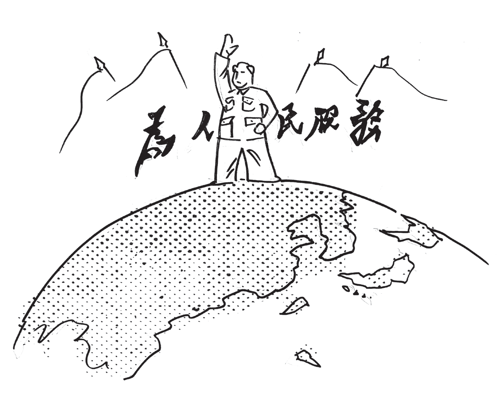
從劇本的角度來說，一個國家走向強盛還是衰亡，基本已經定好了方向。所以管理層安排皇帝投胎的時候會根據劇本選人，國家該走向強盛就會讓福德智慧具足的人投胎，國家該走向衰亡就讓福德智慧不足，但一心想當皇帝享受的人投胎。作爲一個人，想讓福德持續增長，還得看發願，如果一個人的願只停留在個人慾望上，那麼必然會有那麼一世可以滿足慾望，但同時會把幾乎所有的福德耗盡。
比如說，現在很多人求財，大部分人的真實願望是滿足五欲，過上奢華的生活，人前風光。以這樣的發心來佈施的確也可以增長福德，等福德夠了會有一世實現願望，但那一世的環境有可能無法繼續佈施積攢福德，從而福德耗盡回到原點。比如生到天界，在天界沒有需要幫助的衆生，只能單純地消耗福德。因爲福德是在幫助其他衆生的過程中增長的，而這個人的發心中沒有幫助其他衆生的部分，只有求福德的貪慾而已。當天人福德耗盡，壽終之後又回到原點，甚至有可能直接投入下三途。
如果一個人發願幫助其他衆生，甚至普度衆生，但這過程需要錢，所以求財，那情況就不一樣。他會持續投胎到有衆生需要幫助的環境裏，一邊幫助衆生同時積攢福德，在這過程中自己也能享受到五欲樂。因此發心很重要，真正的修行人通常都不去天界享福，天界只會單純地消耗福德，而不能行善積福，這就好比一個打工人，用積攢很多年的存款坐豪華遊輪享受一番，花完了錢還得回來繼續打工。如果用這個錢去做好事幫助其他人，比如開個小工廠，給人提供工作崗位，又能服務社會，以這個發心創業，那麼賺錢的同時福德在增長，自己也能當個老闆享受五欲樂，還受人尊重，是可持續的投資。
當人王也一樣，看一個人的發心，根據發心投胎到適當的國家。在大劇本里，國家要走向強盛的時候，上位的人也是有大願的好皇帝，國家走向衰亡的時候上位的都是昏君，只有享受的慾望，沒有服務人民的大願，哪怕表面上看着憂國憂民，其實內心想的還是爲了保住皇位，是爲自己。
優秀的領導人除了需要福德外，就看個人的品德和執政能力，品德主要是靠修行提升，執着越少，對外表現的人品就越好。執政能力靠專業訓練來提高，這個專業訓練既有人間的部分，也有在上邊專門培訓的部分。看歷史上的皇帝，有些人天生就不是做皇帝的料，是藝術家、木匠、鎖匠。但有些人是很專業的皇帝，單靠出生後的專門培訓很難達到他們的專業水準，只能說是爲當皇帝而來的專業選手。
以上是設計主角國、強國需要的第一個硬件。是人，是福德、智慧、大願具足的人。接下來是國家的三個天賦，是影響國家發展的思想觀念。
首先是探索精神，一個部落要發展成一個國家，必須要有探索精神。像《星際爭霸》這類即時戰略遊戲裏，開局就要迅速探索地圖，搶佔資源點，遊戲裏叫“開地圖”。文明發展早期也是如此，作爲人口一二百人的小部落，要迅速探索周邊地區，找到食物源和水源，增加人口的同時要持續地探索，擴大地盤。
看過《坐禪1》的朋友們已經知道，疑情是情緒當中最初出現的情緒，疑情就是好奇心，好奇心得不到滿足的時候會出現不安的情緒，因此在人間的所有凡夫都有疑情，有疑情就有探索精神。既然探索精神人人都有，那還能成爲國家的天賦嗎？
要知道個人和集體不一樣，雖然每個人都有探索精神，但幾百人聚在一起形成部落後，決策權會在部落酋長一人手裏，或者幾個長老組成的小團隊手裏。首先從這些領導人的性格上分析，通常年輕人都很有衝勁，富有探索精神，政治上叫“改革派”“激進派”，但年齡到了一定程度，心就會靜下來，希望保持傳統，不希望隨意改變，政治上叫“保守派”“頑固派”。能當上部落酋長和長老的人都是年長之人，所以從性格上已經缺乏探索精神。
其次要看決策的風險。作爲部落的領導人，掌握的資源越多，反而會變得越保守。領導人必須保證部落所有人的安全，還要持續發展，而向外探索是有風險的。因此領導人一般不敢輕易拿很多人的性命和資源去向外探索和擴張。萬一探索過程中死了很多年輕人怎麼辦？萬一和其他部落發生衝突怎麼辦？等等顧慮之下，領導人會出現“不求有功，但求無過”的心態。
但是如果一個部落不向外探索，在一個地方裹足不前，人口也沒有持續增長；而另一個部落在探索過程中發展壯大，人口增長，地盤擴大。當兩個部落相遇時，大概率後者會把前者消滅、吞併或者驅逐。可以說在文明前期的部落時代，向外探索就有概率活、也有概率死，但不探索肯定會死。
中國歷史上，文明早期黃帝和炎帝在中原地帶爭霸的時候，有些部落撐不下去了就往南跑，其中一些部落遷往東南出了海，一些部落向西南遷徙進入一些易守難攻的偏僻山谷，之後就和外界切斷關係，開始過上他們與世隔絕的小日子。後來中原地區形成了大國，但沒有一直向西南擴張，把他們全部消滅，所以西南山區裏的少數民族還能維持着當時的風土習俗，比如走婚習俗。
走婚是母系社會留下來的習俗，從母系社會發展成父系社會的主要原因是戰爭。在部落文明早期，生產人口對一個部落的生存和發展非常重要，因此女性的地位高，部落會以女性爲中心形成母系社會。當和其他部落的競爭越來越激烈，戰爭變成週期性、階段性活動的時候，更適合打仗的男性地位會逐步提高並超越女性，從而變成男權社會。畢竟在戰爭頻發的環境裏，比生產人口更重要的是保護自己人不被殺害。
那些生活在西南地區，還保留走婚習俗的少數民族是歷史的幸運兒。在競爭激烈的中原地區，探索、擴張和戰爭是主旋律。文明前期的部落時代，在探索上慢一拍的部落基本都被消滅和吞併，只有快速探索，佔據有利地形，提高生產力，增加人口的部落才能存活下來。
在古代，信息極度匱乏，有很多不確定因素的情況下，作爲領導人必須做出決策的情況經常出現。凡人又沒有看未來的能力，所以在部落時代通常都會發展出巫術文化、祭祀文化。領導人在難以決策的時候，就想靠祭祀和占卜，求得神的啓示。
這是探索精神，是文明前期最重要的一個天賦。有探索精神的部落有可能發展成國家，沒有探索精神的部落，或者在探索上慢一拍的部落基本上都會被消滅。人類文明發展到現在，有成千上萬的民族消失在歷史長河中，絕大部分都是在最初的探索上失敗，被其他民族消滅和吞併。
第二個天賦是種族平等。這是一個部落或者一個國家能夠持續擴張的重要天賦。早期的部落時代，當一個大部落征服一個小部落後，想把小部落的地盤徹底接收，把小部落的人口吸納爲自己的人口，那麼它就需要種族平等思想，國家之間的戰爭和征服也是如此。沒有種族平等思想，勝利的一方會把失敗的一方當作奴隸來壓榨，甚至拿去祭祀，這樣的部落或國家最終都會消亡。
在中國，種族平等思想的發展有一個過程，是橫跨3000年的主旋律。通常人們喜歡拿東方的秦漢和西方的羅馬帝國來比較。
西方的羅馬帝國統一了環地中海地區，盛極一時，但最終分崩離析，之後歐洲再沒有出現大一統的局面。東方的秦朝實現大一統後二世而亡，但後面的漢朝繼承秦制，繼續保持統一的局面。爲什麼西方會失敗，就因爲羅馬帝國沒有得到種族平等這個天賦，自然地選擇了奴隸制道路，以民族爲劃分階級的標準，形成龐大的奴隸產業鏈。奴役其他民族是最能彰顯民族優越性和獲取勞動產物的方式。羅馬人對外用兵最主要的目的是獲取奴隸，整個國家把奴隸當作能源來持續發展。公元9 年，羅馬軍被強大的日耳曼蠻族擊退，羅馬帝國的領土擴張受到了阻攔，因此導致抓奴隸的效率不能滿足國內的需求，國家就此開始走向衰落。
在中國，種族平等政策最早是在公元前8 世紀出現，可以說3000 年傳法時間剛開始就給了這個天賦。公元前777 年，秦襄公把妹妹嫁給西戎豐王爲妻，當時秦襄公的決策只是爲了政治利益，但和其他民族通婚是種族平等思想的重要表現方式。公元前771 年，秦襄公因護駕有功，被周平王封爲諸侯，得到封地。但是天子封給他的是邊境地區，那裏還生活着其他民族，能不能拿下那片地，就看自己的能力。
還有一個國家是楚國，楚國的歷史更悠久，可以追溯到夏商時期，楚人是中原民族移居長江流域後，和當地人融合形成的多民族融合體。周成王時期，楚人的首領熊繹受封建國。在周朝的天下版圖中，秦國和楚國都不是重要的中原諸侯國，是封在邊緣地區的小國。兩個國家都是在向外擴張中，不斷地吸收其他民族，逐漸發展成爲強大的諸侯國，在這過程中發揮重要作用的就是種族平等思想。
經過400 多年的發展，秦國成爲西部最強的諸侯國，公元前338 年，秦惠文王即位，在位27 年，在此期間，用張儀的策略連橫六國，防止他們聯手對付秦國，同時向西吞併巴蜀，確保了大後方糧產地。秦國不斷向西擴張，吸收融合很多當地民族，賦予他們平等的社會地位，日漸強大的秦國開始向東用兵時，中原的幾個諸侯國才反應過來。
公元前403 年，趙、魏、韓三家分晉。當時趙國的領導人是趙襄子，他率先取消奴隸制，讓所有奴隸成爲平民，還分給土地，並且宣佈，其他國家的奴隸跑到趙國就能成爲平民，還能得到耕地。奴隸制的前提是種族不平等思想，早期奴隸的主要來源是戰爭，在不同民族之間的戰爭中，戰勝方會把戰敗方的俘虜當作奴隸來奴役。趙襄子的政策逼得其他國家相繼跟進，使得系統性的奴隸制在中國正式消失，走向了和西方完全不同的文明進程。
在秦國的壓力下，趙國也開始推行種族平等政策。公元前307 年，趙武靈王施行“胡服騎射”。趙國境內本來就有胡人生活，趙武靈王打敗林胡、樓煩、東胡等部落後，給這些民族平等的國民身份，吸收他們建立新式騎兵。任何改革都有阻力，趙國的貴族們極力反對新的民族政策，他們認爲這樣的政策會讓趙國在中原諸侯國的文化圈中邊緣化，趙武靈王也爲自己的悲劇命運埋下了伏筆。趙國的改革雖然有成效，但是已經比秦國慢了一拍，秦國完成了境內的民族整合後開始向東擴張。
楚國的擴張和民族融合進程也在推進，一度成爲版圖最大的諸侯國，也曾打敗過秦國。
公元前221 年，秦國統一六國，又提出了重要的口號，天下只有秦人，沒有其他國人，天下所有人擁有平等的公民權。“公民”這個詞出現的時間很晚，在這裏使用只是爲了說明人人都有平等的身份和權利。種族平等是形成大一統帝國的重要前提。
之後的漢朝不僅繼承了秦朝的種族平等的政策，還向前推進了一步，開始和北方的匈奴通婚。此時的通婚和秦襄公以大夫身份嫁妹不一樣，是皇族之間的通婚。漢朝建國之初，高祖、文帝、景帝時期，一直被匈奴壓着打，通婚只是權宜之計。漢武帝時期終於打服了匈奴，但國內也是勞民傷財，國力損耗很大，之後不得不又回到通婚這條路上。
貴族階層之間的通婚是種族平等政策的重大進步，因爲只有承認對方也是人的前提下才會通婚。在古代，中原人的觀念中邊遠地區的少數民族都是蠻夷，是未開化的野蠻人，嫁娶是不能想象的事情。貴族階層的通婚等於承認了對方也是同樣的人，從而引導百姓之間的自由通婚，極大地促進了民族融合，穩定了外部環境。
三國時期，魏國曹真打通西域商路，司馬懿平遼東，蜀國諸葛亮平定南蠻，吳國孫權一直和山越人打打合合，都在推進民族融合，只有在種族平等政策下，各國才能穩定後方，一心專研統一大業。東漢到三國時期，有很多北方少數民族內遷，和中原漢人混居，朝廷給了他們很多優待政策。
晉朝時期，中央朝廷對內遷少數民族施行殘酷的壓迫統治，迫使很多少數民族離開，也有少數民族首領起兵造反，建立新的少數民族政權與晉朝對抗。晉朝滅亡後，中原進入了十六國的亂世，十六國中大部分都是少數民族建立的政權，對漢族變本加厲地報復，晉朝失敗的民族政策給後世的統治者敲響了警鐘。
南北朝時期，北朝五國都是鮮卑族建立的政權，南朝的宋、齊、梁、陳是漢族政權。南朝的漢族政權吸取晉朝的教訓，在國內實施種族平等政策，試圖同化南方的少數民族，但面對強大的北方鮮卑族政權，只能選擇重兵防範。
到了隋朝時期，中國又迎來了大一統的局面。隋朝繼續推進種族平等政策，加速民族融合。公元590 年，南粵領袖冼夫人歸順隋朝，得到隋文帝的冊封，中國的東南地區納入隋朝版圖。
到了唐朝，種族平等政策在中原達到了頂峯，因爲唐朝開始允許少數民族在朝廷當官，甚至可以掌兵。兵權是國家的根本，統治者一般不允許少數民族在朝廷當官，更不會把兵權交給少數民族武將，在之前的歷史中很少有這種事例。
唐朝的李姓皇族有部分鮮卑族血統，對其他民族非常包容，朝中有不少少數民族官員。安史之亂爆發時，前期抵抗叛軍的高仙芝是高句麗人，哥舒翰是突厥人，都是少數民族武將。其中高仙芝更是官至安西副都護，四鎮都知兵馬使，是西北部的軍事總管，按現在說法就是軍區司令，他多次出征，一直打到了中亞地區，把唐朝的影響力擴展到裏海以南，最後很不幸地被人誣陷致死。
宋朝開始是修改後的劇本，面對強大的遼、西夏、吐蕃等政權，宋朝選擇納貢議和的方針。對國內邊境地區的少數民族採用羈縻政策，在民族融合的大方向上沒有什麼進步。
到元朝，蒙古人在種族平等政策上開歷史倒車，把人分爲四等，蒙古人、色目人、漢人、南人（南宋的漢人）。最後因爲種族平等問題，發生漢人地區的大叛亂。
除了種族平等問題之外，元朝比前面的宋朝更加開放和穩定，蒙古人不會管理農業地區，稅收、徭役、兵役都比較少。忽必烈上臺後國家財政收入的很大一部分是貿易關稅，農業稅的佔比較低，因爲周邊幾個國家都是蒙古汗國，沒有戰爭的情況下人口自由流動，是政策較爲寬鬆、人民負擔較少的時代。但是種族不平等的政策下，漢民族的怨恨不斷積累，到了元朝末年，民族矛盾和階級矛盾發展到臨界點，終於爆發了大規模的農民起義。
明朝建立後在種族平等問題上重新回到了正軌，朱元璋提出了“華夷一家”的口號，制定了“德威兼施”的民族政策。不過明朝對任用少數民族官員非常謹慎，不再錄用少數民族武將，以免重蹈唐朝的覆轍。明朝從建國到亡國，一直都在和蒙古人作戰，和蒙古人的問題始終沒能解決。因此非常重視國內的民族政策，尤其是對西藏的政策。元朝時期，西藏歸順了蒙古人的中央朝廷，蒙古人接受了藏傳佛教，蒙藏之間關係密切。明朝朝廷非常怕西藏又和蒙古聯手在後方搞亂，所以給了西藏高度的自治權，採用“多封重建，懷柔遠夷”的民族政策，只要西藏承認明朝是合法的中央政府即可，除此之外別無他求，以此保證西藏地區的穩定。
到了清朝，種族平等政策有了進一步發展，畢竟清朝是外來的少數民族政權。清朝從建立之初就提出了“滿漢一家，五族共和”的口號，滿、蒙、回、藏、漢爲五族。在這個大框架下，各民族和平共存，使得清朝版圖達到了歷史之最。唐朝時期的疆域也很廣，但是唐朝時期沒有國境線的概念，只有勢力範圍。到了清朝，和北方的沙俄政權通過談判，正式劃定國境線，從此有了明確的領土邊境線。
清朝在政治上手腕高明，對各地區的治理方式都不一樣。在西藏地區施行高度自治，由政教合一的地方政府管理。在蒙古地區施行羈縻政策，清朝的皇族和蒙古的貴族們通婚，賦予他們皇親貴戚的身份，把草原分封給這些貴族，劃定勢力範圍後，不允許他們互相攻伐。有人試圖攻伐其他貴族，兼併其他部落，朝廷就會出兵平叛，以這種羈縻政策防止草原出現統一的強大政權。在漢人地區清朝繼續採用郡縣制，與過去的封建王朝相比，清朝分化地方政府的職能，分別建立行政、軍政、財政、教育、監察等部門，確保在地方不能出現割據勢力。
在中國大陸上，種族平等思想延續了3000 年，不斷地發展和加深，讓中國成爲擁有最多人口和廣袤國土的世界性強國。
反觀西方歷史，種族歧視一直延續到今天。美國在1776年建國，距今不到250 年，是接納全世界的移民建立的移民國家，但是移民之間還存在鄙視鏈，對少數族裔的系統性歧視已經成爲美國固有的文化。如果不是劇本需求，一直信奉白人至上主義的西方世界根本成不了世界霸主。
第三個是義務教育。
如果一個國家同時得到三個天賦，國家會發展得非常快，同時衰落也很快，國家的壽命不會長。所以中國只給了探索精神和種族平等，並沒有直接給義務教育，教育觀念就用一點點往前推的方式逐步推進。
在中國，最早提出“有教無類”思想的是孔子。之前知識全部掌握在貴族階層手裏，不僅貴族的爵位和封地是世襲制，連普通官職都是世襲制，父親把做官的知識傳授給兒子，兒子繼承父親的官職繼續做官。
孔子最先提出了“有教無類”思想，向所有求學的人平等傳授知識。普通人學會了知識，纔有可能進入官僚階層，從此階級固化的局面開始出現裂痕。
不管孔子的儒家思想具體講了什麼內容，單從政治學上看，開放教育是巨大的進步。開放了教育，後面纔會出現“察舉”
“薦舉”到“科舉”的人才選拔制度。既給了讀書人上升的途徑，同時國家也能任用更多的人才爲國效力，拓寬了人才選拔的基本盤。
中國的歷朝歷代對教育並不重視，甚至有些時候還要打壓讀書人，讀書一直都是貴族階層和官僚階層的特權，哪怕開放了教育也只有家庭條件好的人才能念得起書。最後一個封建王朝——清朝是專門設計出來讓中國衰弱的朝代，統治者作爲外來民族更不敢普及教育，生怕讀書人多了會生變，還大興文字獄，迫害讀書人。二戰時期，侵華日軍的大部分士兵已經完成了基礎教育，與之相比中國的軍人大部分是文盲，使得戰爭初期中國軍隊在戰場上非常不利。一直到新中國建立後，國家纔開始推行義務教育。
在整個人類歷史上只有一個民族在文明早期得到了義務教育天賦，那就是猶太人。這個民族的設計也有它獨到之處，它並非極樂世界的傳法團隊所設計，是由娑婆世界的人設計。極樂世界的設計師設計了人類文明的大框架，在這大框架下，西方的具體歷史由娑婆世界的人設計和運營。西方的宗教史從猶太教開始，猶太人只得到了義務教育一個天賦，成了宗教歷史的開端。猶太人也建過國，但沒有種族平等天賦的情況下無法擴張，亡國後更無法復國，就靠一個義務教育天賦，把民族文化和歷史傳承下來，保住了民族主體性，沒有消失在歷史長河中。
現代歷史上同時獲得三個天賦的國家是美國。美國是在修改後的劇本中，爲了壓制中國專門設計出來的國家，爲延長劇本時間的目的服務。有了美國這個強大外敵，中國內部就可以團結起來保持專制政體。設計師在美國建國之初就同時給了三個天賦，以這種方式打算快速培養出一個強大的反派。
美國有了探索精神，在新大陸快速擴張，瘋狂殺戮，把原住民屠戮殆盡，把神治文明的痕跡徹底清除，完成了第一個任務。同時也得到了種族平等天賦，但這個種族平等不是絕對的平等，是有限的平等，它只針對歐洲來的移民，並不針對所有人種。在歐洲白人之間也存在鄙視鏈，但是以清教徒的身份移民到了美洲之後，實現了白人內部的平等，然後聯合起來屠殺印第安人。南美人是從西班牙、葡萄牙移民過去的人，雖然都是白人，到了美國還是受歧視。後來中國人以勞工身份去了美洲同樣受他們的迫害。
關於義務教育天賦，美國早期的移民都是清教徒，基督新教和天主教的區別在於，基督新教主張人人都有對《聖經》的解釋權，而天主教主張只有教皇庭纔有聖經的解釋權。清教徒們既然主張人人都可以解讀《聖經》，那麼讀書識字是必要的條件。所以這些反對教皇庭的清教徒們來到美洲之後開始普及教育，各個小村莊都有小學老師來進行教育。有了義務教育，奠定了美國強大的人文基礎。
除了三個天賦，美國的開國元勳，包括前三代總統都是相當有能力的人，這樣的投入造就了強大的美國。
在中國，雖然孔子提出了“有教無類”的思想，但是並沒有系統化地向全國人民推廣。因爲這裏又涉及到了教職業的專業內容，怎麼讓人產生信，其中有一條叫“權威”。這個問題後面再講。
教育從文明設計者的視角看，是可以用來控制國家發展速度的操縱桿，以此還可以控制整體劇本的推進速度。
總結一下，大國怎麼建立。首先需要人，擁有大福報和政治智商，還有大願的人，這是硬件。然後是三個能讓國家持續發展的天賦：第一，探索精神；第二，種族平等思想；第三，義務教育。
如果一個國家剛開局就同時得到這三個天賦，國家會發展很快，但消亡也很快。中國剛開始得到的是探索精神和種族平等天賦，種族平等還不是直接得到完美版本，在歷史過程中不斷更新換代，最終達到完美版本。中國沒有得到義務教育，只是爲了建設更好的制度體系，先給了“有教無類”思想，到了近代纔算落實了義務教育。主角國的劇本就是以這種方式設計，確保其長度，用來爲傳法提供可靠平臺。
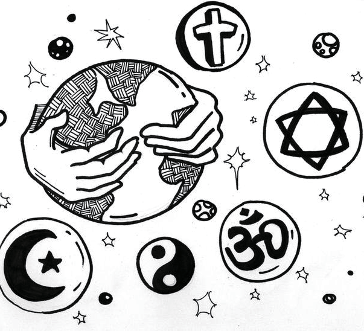
前面已經講到，第一步，大的文明設計；第二步，大國、主角國的設計；第三步，主角國每個朝代的具體設計；第四步，每一任皇帝要完成的任務。在這裏第三步和第四步內容屬於人王職業的專業知識，就等有緣人進入四大職業後，由專業老師傳授，在這裏不便透露。
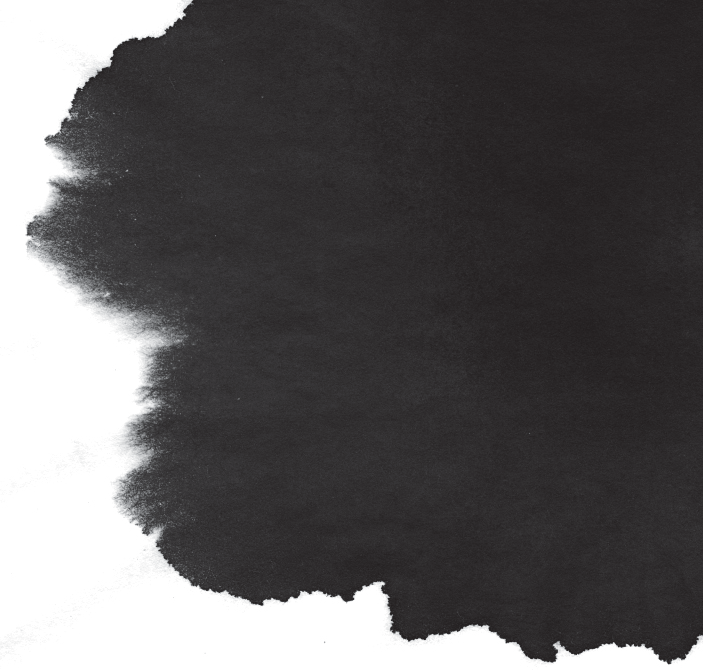
禪是解脫生死的唯一途徑，本質上就是靜，是熄滅妄想的過程。衆生本來都是佛，有了妄想、分別、執着後成爲凡夫，在生死輪迴中無法解脫。執着又分很多種，根據執着的種類和深淺，分別衆生的千萬種根器。不同的執着需要不同的對治方法，也叫修行法門，在《坐禪1》第三章第二節中專門講過幾種修行法門，也系統性地梳理了修行法門的演化過程。禪職業就是專門研究修行法門的職業。在極樂世界，觀世音菩薩是禪職業的首座法王。在我們的娑婆世界，文殊菩薩是禪職業的首座法王。
禪職業中有一個細分職業叫驅魔師，是專門負責對付天魔外道的職業。在新創造出的世界裏，魔王波旬這類妨礙傳法的人必然存在，也就需要有人專門處理這類衆生。禪職業只需平等普化心就可以加入，但驅魔師需要同體大悲心，因爲降魔難免會造惡業。
驅魔師對修行人的要求很高，從釋迦牟尼佛傳驅魔祕法給迦葉尊者開始，驅魔技術都是傳男不傳女、傳內不傳外。在這裏“內”指的是出家人，“外”指的是在家人，在家人有眷屬就有牽掛，那些天魔鬥不過驅魔師就有可能去傷害其眷屬，因此驅魔的技術只傳給孑然一身的出家人，不傳在家人。其次，傳比丘，不傳比丘尼。在最初的文明劇本里女性不能出家，更不會有女性驅魔師，因爲女性的身體偏向陰，更容易被天魔和鬼道衆生傷害。
在西藏有很多魔女的傳說，到現在藏傳密宗還有辨識魔女的方法，也有被指認爲魔女的女性，這些女性在白天和普通人一樣，過着正常人的生活，但到了夜晚會有反常的舉動，實際上是被天魔或鬼道衆生附體的人。
驅魔師根據修行境界，還分初級、中級、高級。初級驅魔師需要初禪以上境界，魔王雖然在六慾天，但他的實際修爲遠在六慾天之上。驅魔師只有修到初禪、沒有淫慾的境界才能和魔王抗爭，否則不僅打敗不了魔王，還有可能被魔王所轉。初級驅魔師最多能把魔王或搗亂的鬼神驅逐，但不能徹底解決，他們有可能去別的地方繼續作亂，也有可能伺機報復驅魔師，或者等驅魔師離開後繼續欺負被害人。
中級驅魔師需要二禪以上境界，可以直接超度天魔或鬼神送往其他道。該下地獄的送去地獄，該去鬼道的送去鬼道。把他們送去其他道，並困住他們，不讓他們再進入人間，就算徹底解決了問題。
高級驅魔師需要三禪以上境界，修爲達到三禪以上、四禪到無色界定的驅魔師可以降服這些天魔或鬼神爲自己所用。要降服就要先打敗他們，然後再用特殊的咒或者法器把他們困住，接着感化他們。驅魔師的修法和參疑情、思情的常規修法不同，是以悲憫之心修行。什麼叫悲憫之心？當我們遇到可憐人時會同情他的遭遇，產生想幫助他的慾望，這種情緒叫悲憫之心，比思情要差一個等級。
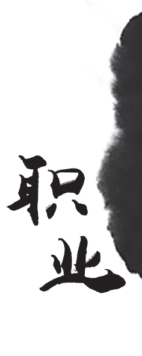
高級驅魔師會先困住天魔或鬼神，用特殊的方法把他們封印在法器裏，通常是手串、佛珠之類的飾品，空心、實心都可以，再把它帶在身上，修爲高的人甚至可以把天魔鬼神封印在自己的肉身裏。然後用悲憫之心長時間修行，一直抓着細微的悲憫之心不放，持續地影響他們，把他們的憤怒和戾氣慢慢化掉，最終感化他們。他們一旦低頭認輸就可以驅使他們，讓他們爲驅魔師做事，也可以幫助驅魔師和其他天魔鬼神戰鬥。
驅魔師的法器和馴服好的天魔鬼神都可以傳承。下一任驅魔師的修爲達到和師父差不多境界，甚至更高的時候，可以繼承師父的法器和馴服好的天魔鬼神。目前西藏還有代代傳承的驅魔師，足可以保一方平安。
在中原地區很少能看到佛門的驅魔師出來行走，因爲中原地區魔事少，原因有二。
第一，學佛修行的人少。全國14 億人口中，自稱信佛的人有2 億左右，但是真正持戒修行的人很少，有大菩提心的人更少，大部分人學佛還是爲了個人利益。魔王要的是把人留在輪迴內，不信佛、不修行的人本來就出不了輪迴，魔王自然不會管。哪怕學佛修行的人，只要是爲個人利益修行，也出不了輪迴，魔王也不會管。唯有發大菩提心，有可能出輪迴的修行人，魔王才值得障礙。因爲遇到魔障的事例和總人口相比實在太少，以至於很多人覺得魔王的障礙只是傳說。
那麼修行人在什麼階段容易受天魔鬼神干擾呢？主要是在欲界定到初禪之間的修行階段。魔王在六慾天，也就是有淫慾的天界。修行人還有淫慾的時候，魔王可以幻化成有吸引力的異性來干擾，只要泄了就會遲緩修行進度，如果完全被境界所轉，放棄修行，魔王就算勝利。魔王還可以派魔女勾引，在定中和魔女行淫也算業，造了新的惡業對解脫更不利。
當修行人滅盡淫慾，進入初禪之後，魔王就不能再用淫慾干擾，剩下的辦法是用死亡恐嚇。如果修行人學的是正法，對死亡、對六根境界有正確的認知，不在意定中的幻境，魔王也很難干擾。修行人如果相信佛菩薩的加持力一直在，魔王更不能干擾。所以只要修行達到二禪以上，滅盡六根境界，對肉身的死亡不再有任何恐懼，就不會有魔事，或者有大菩提心，有戒行、善行、修行，能得到佛菩薩的保護，就算境界低，也不會有魔事。
中原地區魔事少的第二個原因是，極樂世界的傳法團隊和魔王訂下協議，魔王不得干擾修淨土的人。在傳法任務剛開始的時候，魔王手下的小鬼試圖殺害大勢至菩薩的報身，這件事是簽訂協議的起因。但是魔王和他的手下小鬼們想真的傷害由搭檔保護的再來人也不太可能，簽訂協議的真正目的是爲了保護修淨土的人安全往生極樂世界。
淨土法門的目標並不是修成阿羅漢，而是移民極樂世界，在這裏不需要多高的禪定境界，初禪、欲界定都可以往生，甚至不能雙盤的人只靠唸佛和大量的福德也有概率成功往生，而這些禪定境界低的人最容易受魔王干擾。如果魔王無差別地干擾所有修淨土的人，尤其是在命終之時化身成西方三聖引入下三途，後果不堪設想。
如果一個求往生的人，他的願力、修爲、福德都足以往生，真正的西方三聖會來接引，這個時候魔王無法干擾。但是一個求往生的人各方面條件都不符合往生標準，魔王化身西方三聖引入下三途，再讓他託夢給親人告知自己的經歷。如果這類事情大量出現，完全可以瓦解人間的淨土信仰，不會再有人相信往生極樂世界之說。
還有，對於魔王我們要有正確的認知。魔王也是凡夫衆生，他的目的是讓其他衆生留在輪迴內。爲了這個目的，魔王主要幹兩件事。第一，妨礙傳法，不管是再來人傳法還是凡夫傳法，只要傳的是正法，把人引向解脫覺悟，魔王就要妨礙。對於再來人，魔王沒有辦法傷害，但是可以在傳法人和信衆之間挑撥離間，讓信衆對傳法人失去信心，從而失去學習正法的機會。對於凡夫傳法者，魔王的手段更多，所以我們雖然勸修行者發大菩提心，但是強調凡夫修行者出來傳法要得到佛菩薩的認可，一開始佛菩薩會引來有緣人來求法，這個時候是在佛菩薩的保護下傳法，所以不會有問題。
如果憑自己的意志貿然出來傳法，很容易受魔王干擾。魔王可以直接攻擊傳法者，也可以用更加卑劣的手段。比如說，魔王會先借神通給傳法者用，傳法者修爲不到一定境界，誤以爲神通是自己的能力，會在信衆面前胡亂展示，等有了一定影響力後魔王會用神通誤導信衆，也可以撤回神通，這都會讓傳法者在信衆眼中變成騙子，可以極大地打擊傳法者的信心，直至對佛法產生懷疑。
第二，障礙修行人。障礙方面就比較簡單，上面都已經講過。佛陀在苦修的時候，魔王派魔女勾引，派魔兵攻擊，但是自己不下手，魔王也知道直接攻擊佛陀果報很大。所有方法用完都不行，最後請佛陀趕緊入滅。也就這麼幾個方法而已。
我們要知道，妨礙傳法、障礙修行人的行爲叫魔事，幹這類事的人叫魔王，或者叫魔子魔孫。不是因爲是魔王，才幹妨礙傳法，障礙修行人的事。這是用行爲定義名字的方法，是幹犯法的事才叫犯罪分子，不是因爲是犯罪分子纔要幹犯法的事。在人間也有凡夫在妨礙傳法，障礙修行人，乾的是魔王要乾的事，所以我們叫他魔子魔孫。並不一定是被魔王控制，有些人本來就很壞，不需要魔王控制，自己也會幹壞事。只不過魔王有巨大的福報支撐，在福報耗盡前不會跌入下三途，但是人間的凡夫，帶着滿身業障，連個村長都當不了的微末福報幹障礙傳法的事。後果可想而知。
回到驅魔師的話題，驅魔師只負責打擊真正的天魔鬼神，對於在人間幹魔事的人類凡夫，驅魔師並不管，因爲人間的凡夫在生命結束前還是有懺悔和將功補過的機會。在整個佛教歷史上最有名的驅魔師是蓮花生大師，是文殊菩薩的弟子，得到過驅魔真傳。
對於真正的再來人傳法者來說，黑粉也是粉，你只要到處傳再來人傳法者的名字，哪怕說是邪師，也有人因好奇心來看傳法者所說內容，哪怕不看，只要知道有這麼個人，也算結了最初級的佛緣，就像地獄衆生看到地藏菩薩的化身一樣。但是自己的果報不可避免。
禪是解脫生死的唯一途徑，但修習禪定的前提是信。最初，在四聖佛創造和管理的世界裏，傳法度人的方式非常簡單，先直接告知世界的真相，再傳授修禪的方法帶領衆生離開世界。可實際操作後發現，想得到地獄衆生的信任非常困難，地藏菩薩目前分身無數，在很多世界的地獄裏傳法，但就像《地藏經》裏說的一樣，衆生們在地獄裏進進出出，就算得到地藏菩薩的開示，也不會很快走上修行之路。因此就有了專門研究取信的職業——教職業，教職業需要平等普化心就可以加入。在極樂世界，大勢至菩薩是教職業的首座法王。在娑婆世界，普賢菩薩是教職業的首座法王。教職業的工作具體分爲傳承和傳播兩個部分。
文字形式的佛經是傳承佛法和取信於人的重要工具，因此編撰佛經是教職業的重要工作。我們看到的佛經都是教職業的人提前編排好的內容，佛法內容的投放也由教職業的人規劃，佛陀在世的時候講到哪個部分，佛陀入滅後，到了某個時間節點又傳出什麼內容的佛經，以什麼方式傳出，等等。還有佛經的翻譯和現代化詮釋也是教職業的工作。在空間上，佛法傳到不同的文明圈，不同的語言環境，就需要有人把佛經翻譯成當地的語言；在時間上，隨着時間的推移，人們的語言習慣也會發生變化，這個時候就需要有人重新用現代語言解釋佛經。
教職業的另一項工作是僧團的組織和管理。四聖佛傳法度人的最早期都沒有僧團，是經過長時間的傳法實踐，最終發展成現在的僧團制度。僧團作爲僧寶，是傳承佛法的重要載體，僧團要保持純潔度，同時又不能完全脫離社會，要達到這樣的效果，就需要有專人負責對僧衆的培養和組織管理，也包括僧團對外傳法的指導。有了健全的僧團制度，佛法才能長時間完整地傳承下去，隨着時代的變化，僧團向俗世的傳法方式也需要與時俱進，但在教義和義理上要保持原貌，不能脫離佛陀定下的基本框架，尤其是對戒律的重視度。
教職業還要組織和監督僧團的大衆傳法活動。佛陀雖然傳法一生，但他是再來人，又是傳播佛法的第一人，在大衆傳法上有很大的自由度，比如使用神通，講自己的前世故事等等。但後世的沙門大部分都是凡夫，既要向大衆傳播佛法，還要維護僧團的聲譽和形象，要儘量減少表現個人的行爲。教職業要引導凡夫沙門按照佛制如法地傳法、如法地接受供養，在此過程中沙門和在家人教學相長，都能得到功德。
我們都知道，修習佛法有四個步驟：信、解、行、證；此外淨土法門作爲別傳，講究信、願、行，是移居其他世界的方法。以上修法都是信爲首，佛法是由信而入，由信而住，由信而悟。過去的傳法人們經過無數次的實踐，在宏觀態的傳法上摸索出了一套讓人容易生信的方法，那就是在文明設計的過程中，給衆生鋪墊利於生信的基礎觀念。
從設計者的角度看衆生，取信有三種方法：第一是恩惠；第二是權威；第三是邏輯。聽起來讓人生信很容易，但它的關鍵點是，三種取信方法都要提前給人植入基礎觀念。
我們小時候父母幫助我們、照顧我們，所以我們對父母有無條件的信任，直到我們長大，看到父母不足的一面，纔開始重新審視父母。在修行方面，很多修行人都有過殊勝的感應，佛菩薩給了感應之後，或者所求如願之後信心倍增。這種信任的前提是利益，別人給了我們某種利益，我們就會相信那個人，這就是用恩惠讓人生信的方法，但是它需要一種基礎觀念，那就是感恩之心。
感恩之心需要培養，並不是所有衆生一開始就有感恩之心。那麼如何培養感恩之心？心理學中有一種疾病叫斯德哥爾摩綜合症：有個壞人綁架一個好人，把好人一頓虐待之後再給點好處，這個好人就有可能感激壞人，甚至愛上壞人，這是真實存在的心理現象。對我們來說，好與壞都是相對的，先承受過痛苦，纔會知道什麼是幸福，感恩之心由此而生。還有，給你痛苦和給你好處的人不一定是一個人，這個人傷害我們，那個人善待我們，我們也會對那個人產生感恩之心。
在宏觀態的傳法上，編寫文明劇本時就要考慮感恩之心的鋪墊。看中國的歷史，亂世和治世交替出現，在亂世裏生靈塗炭，人口驟減，當所有人都期盼和平時聖王降世，擁有大福報和政治智慧的聖王會消滅所有割據勢力，建立統一的大國，再用仁政安撫人民，休養生息。因爲亂世給人們帶來了太多的苦難，人們會對這位帶來和平和統一的聖王產生巨大的感恩之心。百年亂世之後通常會有二百年左右的治世，佛法在亂世中利用人們對信仰的渴望快速傳播，治世中利用感恩之心和專制政體的宗教政策得以鞏固。這是設計主角國的基本理念。
設計者在中國的劇本里，讓亂世和治世的交替出現，重複這一過程，以此不斷強化中國人的感恩之心，直到把感恩之心植入到所有中國人的意識中，成爲華夏民族的基礎觀念和價值觀，以便於佛法的順利傳播。
西方就沒有這樣的設計，自從羅馬帝國分崩離析之後，沒有出現過大一統的帝國，一直處在分裂狀態。尤其是中世紀到工業革命這段期間，整個歐洲都是一盤散沙，大大小小的領主們無休止地爭鬥。雖然天主教有一定的影響力，但也不能建立一個統一的宗教國家，在無法阻止大亂斗的情況下，教皇庭想到的辦法是禍水外引，向中東國家發動宗教戰爭。
在這種持續混亂的環境裏，培養出來的就不是感恩之心，而是被害妄想症。各方勢力在長時間的混戰中，實在打不出草頭王的情況下，不得不走上談判桌進行妥協。談判對任何一方來說都是被迫所爲，並不是最優選項，如果能把所有敵人徹底消滅，又何須談判。因此在談判桌上不管談出怎樣的結果，雙方都不會滿意，都認爲己方喫虧很多。
看西方人的外交實例，對他們來說佔便宜是應該的，在談判桌上佔到便宜是自己能力強的緣故，並不是對方謙讓。佔不到便宜就算喫虧，是外交的失敗，他們的意識裏沒有合作共贏的觀念，只有一方得利、一方失利的零和博弈。
在西方，國家間的交往如此，人與人之間的交往也是如此，都是以被害妄想症作爲底層心理進行社交。所以中國人很難和西方人成爲真正的朋友，從被害妄想症患者的視角看世界，世界充滿危險，所有人都心懷不軌。對他們釋放過多的善意，他們反而會害怕，他們會認爲你另有所圖。
以前見過幾位在歐洲國家做生意開店的中國人，他們說：在歐洲對員工再怎麼好都沒有用，雞毛蒜皮的事他們都會舉報，該偷東西還是偷東西，你想和他們建立超越僱傭關係的熟人關係根本不可能，都是養不熟的白眼狼。這裏或許有一部分種族歧視的成份，但西方人的社會觀就是如此，一切以自己的利益爲中心，用被害妄想症的視角看所有人和事，包括國家和政府。
在中國，新中國建立已有75 年，還有很多人對李德勝同志懷有感恩之心。人與人交往時講究知恩圖報，中國人“兩肋插刀”這種觀念是怎麼來的？前提就是感恩之心。中國人認爲，我爲朋友兩肋插刀，在我需要幫助的時候，朋友也會爲我兩肋插刀。也就是說，我默認朋友有感恩之心，有了這樣的基礎認知，纔會有兩肋插刀這種行爲。這是專門爲了傳播佛法故意培養出來的民族性格。
第二個是權威，相信權威也需要前期的鋪墊。一個是權威人士所掌握的知識和認知高度要達到一定程度，除此之外，向權威人士學習的普通民衆要足夠愚昧，還要有謙虛的品格。
在這裏，首先是權威人士的培養問題。組建僧團是爲了傳承佛法，也是爲了彰顯權威。僧人要學習佛經就需要讀書識字，在過去遍地都是文盲的情況下，出家人大部分都是讀過書的知識分子，有了知識再加上持戒精嚴，在世人眼中就是有權威性的僧寶。
其次是普通民衆的無知。我們已經知道，教育是設計國家時三個天賦中的一個，如果過快地普及教育，國家會發展很快，同時消亡也很快，所以教育要慢慢推進。中國在過去的封建王朝裏，一直推行愚民政策，以此拉開權威人士和普通民衆之間的知識差距，致使普通民衆相信權威。
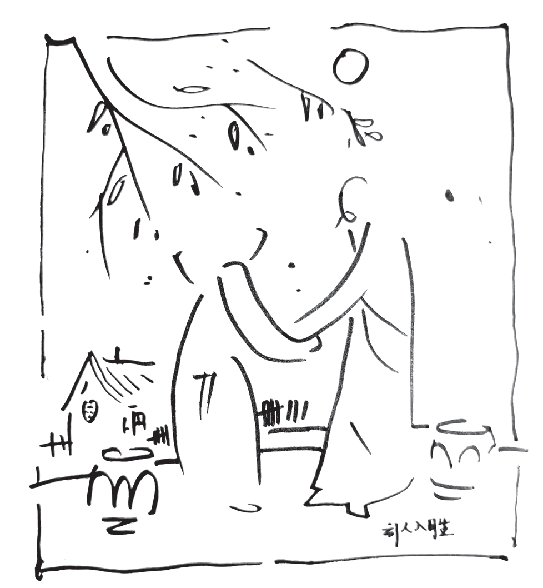
最後是謙虛，謙虛這種品格也需要不斷地鋪墊。在《易經》裏，只有謙卦是六爻全部好的卦，在中國的傳統文化裏，謙虛作爲重要的品格不斷地被強調，告訴人們放低自己，虛心學習會走向成功，也塑造了很多有關謙虛的名人事蹟。
在修行方面，貢高我慢心是最大的障礙，“心中無聖人者不可度”，凡夫看人，不是取外相就是取世間身份，要知道看得到的一切相都是妄想和合而成，凡夫無法用肉眼看出他人真實的境界。凡夫又喜歡標榜自己的身份和過往的成就，無非就是熾盛的我相而已。再來人往往以平凡的身份行走人間，謙虛的心態也是再來人考察凡夫修行者的重要考題。
與中國相比，西方人的底層心理是被害妄想症，對於這種心理的人來說，保護自己不受傷害的首選方法是假裝強大，所以西方人喜歡吹噓自己，和中國人形成鮮明對比。
看目前的社會大環境，很多普通民衆已不再相信專家，因爲知識已經開放給了所有人，人人都可以自由學習知識，尤其是出現網絡後，世界從知識積累的時代進入了知識搜索的時代，大部分知識都可以在網上搜索到。至於專家，相信大部分專家是有真才實學的，但有一部分專家學知識就是爲了賺錢，爲身份地位，專業領域的功底反而不那麼紮實。相比而言，普通民衆學習某專業的知識，那是真的熱愛，學得比專家還認真。在知識方面，專家和普通民衆沒有形成差距的情況下，專家已經沒有了權威性，專家還時常發出不食人間煙火的言論，致使普通民衆對專家的信任一落千丈。
第三個是邏輯。如果說權威是有知識的人向無知的人取信的方法，那麼邏輯是有知識的人向同樣有知識的人取信的方法。邏輯是雙方在知識和認知層面上差不多的情況下，用嚴密的因果關係說服對方相信的方法。邏輯思維能力可以後天學習，也可以在生活當中逐漸磨練，年紀大的人通常比年輕人邏輯性強。在過去，讀書是貴族階層和富人階層的特權，要說服這類人就需要邏輯，到了現代，大部分人都受過教育，都有基礎的邏輯性。所以現代人更適合用邏輯來說服。
以上是三種取信的方法，恩惠、權威、邏輯，和需要鋪墊的基礎觀念，是宏觀態傳法所用的方法。我在第二次傳法中，努力把故事說圓，把佛法的大框架講清楚，從世界的底層真相開始，心的構造、業的原理、從業延伸出來的度人問題、發心問題、創世到文明設計，所有的內容在邏輯上形成完整的閉環，這一切都是爲了用邏輯來說服有緣人。畢竟現代人的知識已經非常豐富，也可以到處學習。
如果去拜師，師父大概率會讓你重新開始學習，以前學的都不算，大部分出家師父都這麼要求。但在我這裏不需要，你可以去學任何知識，包括已有的經律論和現代人的論著，看哪個內容邏輯更完整，佛法更圓融，再選擇修習哪個法門，畢竟人人根器不同，因緣也不同。
在微觀態的傳法裏，也就是個人對個人的傳法中，還可以用長期一起生活的方式取得信任，用個人的修爲和人品慢慢感化對方。前面講過，修爲達到三禪、四禪以上的修行人發了大菩提心，佛菩薩會安排再來人來指導，再來人會用幾年時間和凡夫修行者一起生活，取得信任的同時還會出考題考驗一番。這是微觀態傳法的重要方式。
商與政是入世的職業，主要的任務是在俗世爲傳播佛法創造大環境。商職業需要平等普化心就可以加入。
最初四聖佛的世界裏，衆生都在地獄裏殺戮，是丁佛控制住世界後，丙佛進入世界度甲佛。爲了給衆生創造可以修行的世界，丁佛把世界分成多層，其中也有人道。問題是地獄的衆生到了人道也會帶有殺戮的習氣，除此之外還有五欲，需消耗食物和資源才能生存，而衆生心中越是貪婪，顯化的外境越貧瘠，丁佛就用神通創造食物和資源給衆生用。
一開始丁佛創造出的食物和資源非常豐富，爲了不讓衆生互相殺戮，故意把衆生隔開，但這樣的環境並不能轉變衆生的習氣，更不能消業。所以丁佛故意減少食物和資源的量，還需要協作勞動，進行採集和加工才能使用，同時再用化身扮演領導者，帶領衆生從事生產，這是商職業的起源。
商職業存在的根本需求是什麼？如果衆生福報充足，內心不貪的情況下，顯化的外境裏食物和資源會非常豐富，也不需要深度加工，只需採集就可以食用和利用。但是衆生缺乏福報，內心貪婪，那麼顯化的外境裏食物和資源就會匱乏，還需要採集和深度加工才能食用和利用。可是食物和資源一旦匱乏，衆生殺戮的習氣就會顯現，衆生爲了爭奪食物和資源互相殺戮，根本沒有精力做其他事情。商職業的目的是帶領這些缺乏福報、內心貪婪、喜歡殺戮的衆生協作勞動，生產需要的食物和物資，在這過程中把仇殺的關係改變爲良好的協作關係，還要幫助衆生行善積福，培育福報。
人間的文明根據衆生的福報和習氣大可以分三種。
第一種文明裏，衆生的福報大，不貪婪，沒有殺戮的習氣，顯化的外境中食物和資源非常豐富，不需要深度加工，人們只要按需採集就可以過上非常安逸的生活。在這種文明裏不需要商人。
第二種文明裏，衆生的福報中等，有點貪婪，有殺生喫肉的習氣，但沒有人與人之間的殺戮，顯化的外境中食物和資源不多不少，需要一定的加工，人們需要一定時間的協作勞動才能獲得食物和生活資材。這種文明裏需要商人，但沒有貨幣，是以物易物的交易方式。
第三種文明裏，衆生缺乏福報，很貪婪，有殺生喫肉的習氣，也有人與人之間的殺戮和戰爭，顯化的外境中食物和資源匱乏，需要深度加工，人們需要長時間的勞動才能獲得食物和生活資材。這種文明需要更有能力的商人，也需要貨幣。貨幣是衆生的貪念具象化產生之物，本身並沒有價值，是用來刺激貪婪且缺乏福報的衆生參與勞動的工具。
凡夫只能看到事物看得見的一面，不知道內在的根本原因，認爲貨幣是用來交易和無限囤積的工具。在這裏，交易產生的原因是衆生缺乏福報，顯化的外境資源不足，不僅採集有困難，採集後還需要長時間的加工勞動，所以一個人無法採集和生產所有的消耗品，需要分工協作來提高生產效率，還要和他人交換勞動產物，這就需要貨幣作爲中間的等價媒介來流通。
貨幣的無限囤積功能是因爲衆生很貪婪，不滿足於只取所用之物和所用之量，必須大量囤積才能心安，但是資源的採集和加工都有限度，生產出來的商品還有保質期，保存還需要成本，如果換成貨幣就可以無限囤積。實際上現在全世界流通的貨幣和銀行存款的總和，其價值遠遠超過實際商品價值的總和。也就是說貨幣的囤積帶有欺騙性，如果全世界所有人把自己的所有積蓄拿來換成商品，商品會遠遠不足。有了貨幣就可以欺騙這些貪婪衆生，讓他們以爲自己擁有很多，實際上全世界的商品總量很有限。
目前我們的文明是第三種文明，有商人，有貨幣。按照衆生的福報和貪婪程度，資源比較匱乏，但是傳法團隊爲了維持人類社會的穩定，故意投放資源和科技。比如說石油、天然氣，我們上小學的時候就開始說幾十年後這些資源會枯竭，可到現在還在開採，新聞裏還經常報道，勘探隊又在某地探測到多少地底資源。科技方面也在持續投放靈感，讓人類提高生產力，生產更多的商品。目前人類生產的糧食夠80 億人類食用，生產的工業品也夠全人類使用，可還有人生活貧困甚至餓肚子，這是分配問題，不是資源和生產能力不足的問題。分配問題歸根結底還是人類的貪慾，那些擁有大量資源的少數人不願意分享，甚至還想繼續掠奪和殺戮。
回到商人的問題，世人以爲商人是倒賣商品，賺差價的職業。我們所說的商人是爲社會創造更多的工作崗位，帶領人們生產生活所需的商品，或者提供某種服務，還能引導人們行善積福的帶頭人。如果商人只是單純地追求利潤，那隻能算是社會的蛀蟲，是損耗福報的過程。西漢時期的晁錯曾在政論裏說道：商人們投機倒把，壓低農民的勞動價值，讓真正從事生產的農民們生活越來越艱難，當農民們揭竿而起時，這些商人們又帶頭作亂，把農民的怒火引向政府。
因此中國的歷代封建王朝一直把商人的身份定在士、農、工之下的最低位，避免不勞而獲成爲社會的主流觀念，導致國家的經濟脫實向虛。看目前美西方的資本集團乾的事就知道他們是不是合格的商人。
那麼怎樣成爲合格的商人？首先要有發心，不是求財，而是要爲社會提供福利，尤其是工作崗位。讓更多的人有事做，有一份收入可以養家餬口。授人以魚不如授人以漁，單純的佈施錢財雖然有福德，但和提供工作崗位相比，福德還是少，因爲接受佈施的錢財會用完，人還是處在匱乏的狀態，但有了工作崗位，有了穩定的收入，人對未來的焦慮就會減少。
這個世界只有意識，沒有物，修禪到三禪以上境界，宇宙中所有實體物質都會消失。所以做任何事情都是以人爲本、爲人服務、度人解脫，這是大方向。做商人可以從某個製造業開始做起，但想把事業做大就必須在“人”身上下功夫，而不是專注於製造看得見的實體商品。這個“人”裏既包括使用商品的用戶，也包括製造商品的員工，要不斷增加可以影響到的人，而不是一味地追求利潤。企業也需要自己的文化，不僅支付合理的薪水，還要讓員工在企業中學習和成長，否則很容易成爲壓榨員工的資本家，從而損耗福報。當企業做到一定程度，員工數量和用戶數量達到瓶頸，又有剩餘資金時可以開闢其他商品領域。如果拿錢去做金融投資，玩起錢生錢的遊戲，那就違背了初心，反而會損耗福報。
國家要穩定，就要保持良好的就業率，在專制政體國家裏，政府控制金融，用資金流向引導產業發展，從而創造更多的工作崗位。當商人的福報大到可以影響國家的經濟政策時，可以選擇轉職當人王。
政職業也叫人王，是所有職業中發心要求最高（需要同體大悲心），福報需求量最大，訓練時間最長的職業，因爲各項要求都是最高的，所以人數也最少。
爲什麼需要人王？先從大環境中看，我們已經知道，人間的大循環是上行文明、下行文明、動物世界，這三個時期交替出現。在這裏上行文明是由神來直接統治的時代，不需要政治謀略，只有下行文明中，爲了向人類隱瞞世界有人控制的真相，才需要用人類能接受的方式統治，也就有了對人王職業的需求。
再從小環境中看，部落文明時期，一個部落的人口不過幾百，這個時候只需要商職業的人組織大家生產勞動即可，還不需要人王。當人口多到一定程度，形成城市國家開始，有了內部管理和協調的需求，也就是內政，又要和外部世界進行交流，包括友好通商和戰爭等，也就是外交。有了內政、外交的需求時，需要有人專門從事這一類事情，因此有了人王職業。
要進入人王職業，都需要滿足什麼條件？
第一是大願，要有同體大悲心，爲傳法大業，願意和無緣衆生再結新緣，甚至不惜造惡業，再下地獄承受果報。要知道度一個人很難，需要多世的指導，對於已經解脫的菩薩、羅漢來說，多和一個人結緣都是給自己的成佛路上增加新的障礙，所以大部分菩薩、羅漢都沒有平等普化心和同體大悲心。人王職業裏最有名的是地藏菩薩和他的搭檔一切智成就如來，他們的世界早已解散，度完了和自己有緣的所有衆生，但地藏菩薩的願還沒有結束，所以繼續去有地獄的世界度人。
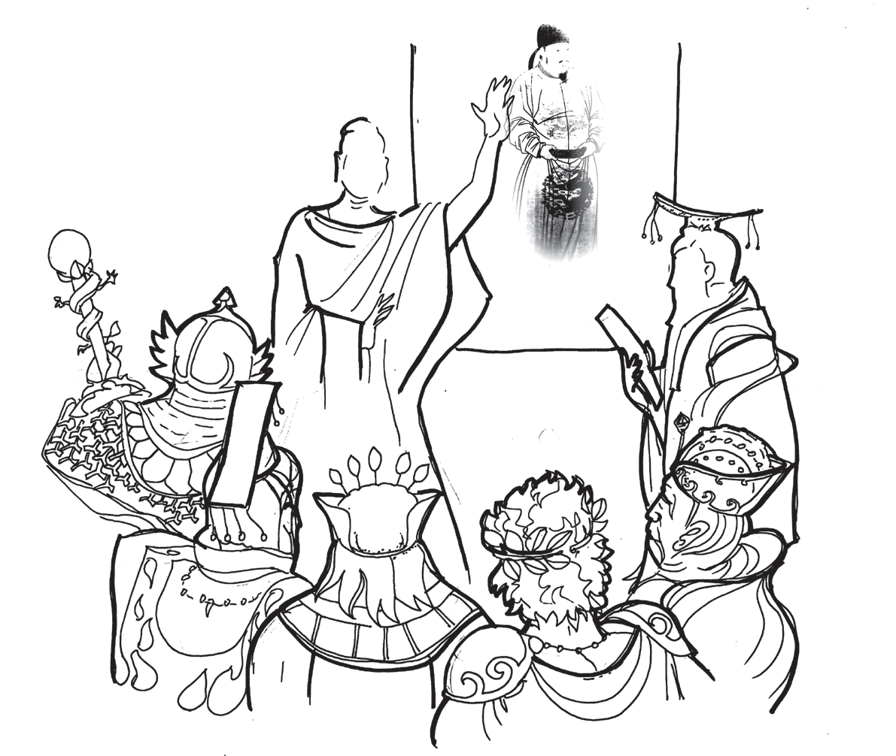
第二是福德，需要大量的福德。要當一世的帝王，所需的福德量要比所有國民福德量的總和還要多。所以大部分人王職業的人都是從商職業轉職而來。先做好商人，積攢足夠的福報之後，再發大願轉職。在積攢福報這件事上，一個人只做單純的財佈施，那麼佈施千萬世都不一定能積攢夠一世帝王的福報，除非遇到釋迦牟尼佛這樣的人。在佛經裏，對釋迦牟尼佛佈施最多的在家人有三個，波斯匿王、祇陀太子、給孤獨長者，這三人死後都升到六慾天享受天福，他們沒有大菩提心，一生也沒有精進修行，全靠佈施如來的功德升到天界。我們大部分人都沒有這樣的善緣，供養三寶、助印佛經都有大功德，但不能鍛鍊管理能力，放生也是如此。可以兼顧積攢福德和鍛鍊能力的方法是做企業，生產商品、服務用戶、同時僱傭大量員工，賺了錢還可以供養三寶。但是在世俗間做事又會消耗大量時間和精力，沒有時間專注地修行。所以對於大部分普通人來說，修心和行善很難同時進行，除非前世已經積攢下了足夠的福德和善緣。
第三是性格，對於沒有投胎入世的菩薩、羅漢來說，性格也是妄想，是不存在的幻覺。但是一旦投胎消業或者度人，那麼在過去輪迴中的習氣就會顯現，所謂的性格就是累世的習氣和思維模式。如果沒有在凡夫階段開始訓練，等解脫生死之後思維模式已經固化，再想學人王難度會非常大。因此人王都是佛菩薩在凡夫中選擇有大願和潛力的人，進行多世的引導和培訓，過程中也會有很多人淘汰，畢竟學佛修行的人都有慈悲心，哪怕有更高大上的理由，造惡業還是有點難度。
目前娑婆世界人王職業的首座由文殊菩薩兼任，文殊菩薩本來是禪職業的首座法王，釋迦牟尼佛和彌勒菩薩的弟子中目前還沒有能力出衆的人王，但兩位又想分家出來成佛，所以文殊菩薩作爲排名第一的弟子，半路出家開始學習做人王。在幾次任務中，文殊菩薩也深感自己思維的侷限性，希望能從凡夫開始培養出有能力的人王。
人王職業需要學習的內容在四大職業中最多，做商人轉職到人王，可以學習經濟方面的知識。普通的商人只管賺錢，多僱傭員工，提供更優質的商品和服務就可以，但上升到政治層面，國家既要賺錢，還要花錢，錢只是做事的工具。讓國家的經濟良性循環，給人們創造足夠的工作崗位，把失業率控制好，這些都是總理的工作內容。
除此之外，還要學習軍事方面的能力、外交方面的能力、官僚階層的管理和監督，等等。對於國家發展的大趨勢，還要懂得觀勢，勢可以理解爲民心，在勢的方面，有觀勢、造勢、借勢等不同境界的能力，都需要學習和訓練。
政治團隊的建設也是一門學問，教職業管理僧團組織，商職業管理商業組織，人王職業管理政治組織，不同的組織有不同的理念。僧團組織的凝聚力來自於宗教信仰，是脫離現實的理想主義，有信仰的人自我管理能力很強，所以僧團組織的管理難度最低。商業組織的目的是經濟利益，加入的人大部分都是爲錢而來，是現實主義者們的組織，因此只要給的利益足夠多，大部分人都能驅使，管理難度中等。這兩個組織都不是以命相搏的組織，大體上沒有生命危險。
但政治組織是追求權力、維持權力的組織，權力又無法分享，所以政治團隊的管理難度最大，危險度最高，是生死博弈的決鬥場。一個優秀的政治家，是理想主義和現實主義的結合體，內心需要有理想，對國家的未來有大的規劃，但做事的時候要從現實出發。純粹的理想主義者和純粹的現實主義者都會把國家帶入困境，兩漢中間出現過的王莽是純粹的理想主義者，把國家搞得民不聊生。目前很多西方國家包括美國，他們的政治制度只能是現實主義，國家無法制定長遠的大戰略，不斷追求眼前的短期利益，政客們各個都是短視的現實主義者，是投機份子，因此西方國家陷入的危機是無法避免的結局。
一切理論知識都可以從其他佛菩薩的記憶中讀取和學習，但是更多的技巧和隨機應變的能力還是來自於實踐，積累經驗需要無數次的實戰，如果以爲有一個沒有投胎的搭檔在後面指導就不需要自己動腦子做，那真是天真的想法，有些時候明着告訴你應該怎麼做，你都未必能如實地做出來。
人王職業修煉到最後是大設計師，專門設計文明和國家、設計大的傳法活動，設計中最難的任務由自己來做，所以設計師不能設計出連自己都無法完成的劇本。因此選擇傳法的世界難度是由設計師的實力來決定，目前我們所處的文明是娑婆世界中傳法難度最高的文明，衆生根器再低劣一點就無法傳法，選擇最高難度的目的是爲給娑婆世界的傳法人留下一個可以參考的模板。
一位佛能同時運作多少個傳法團隊，同時向多少個小世界進行傳法活動，由手下人王職業弟子的數量來決定。好比木桶理論，木桶能裝多少水，由最短的木板決定。所以各個佛世界對人王職業的需求從來不會減少，永遠都是供不應求。修行到八地以上菩薩需要到各個不同的世界傳法，度和自己有緣的人，要進入其他佛的世界投胎需要得到該世界佛的許可，這個時候人王職業相比其他職業，更容易得到許可。所以說，有難度就有相應的好處。
以上是四大職業的概況。那爲什麼有些人願意發更高的願，度和自己無緣的人，歸根結底還是感恩之心，感恩師尊的教導。《法華經》裏一切衆生喜見菩薩焚身供佛，不是爲功德，也不爲速得菩提，這種想法的前提都是我相，先有我，後有功德和菩提，一切衆生喜見菩薩已經是菩薩，早已沒有我相，他只是無以報答佛恩，以焚身的方式表達謝意而已。菩薩回顧輪迴中的記憶，那真是不堪回首的過往，是遇到了佛法和如來，才能走出痛苦的輪迴，證得無上智慧。佛又不要求任何回報，那隻好焚身供養以表感激之情。
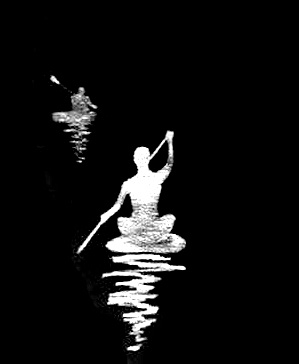
可以說，所有四大職業的人，解脫的過程中都有故事，對自己師尊感激之情無以言表，唯有多度人，以法供養如來，這叫上報佛恩，下化衆生。
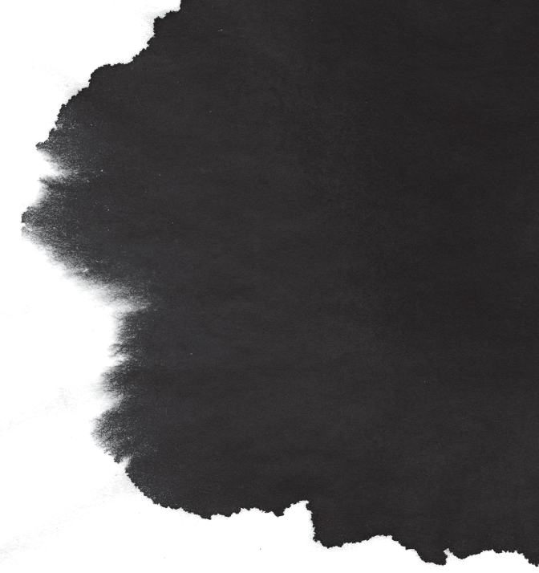
問：耳根圓通法門怎麼修？
Tai 師父：“初於聞中。入流亡所。所入既寂。動靜二相。瞭然不生。如是漸增。聞所聞盡。盡聞不住。覺所覺空。空覺極圓。空所空滅。生滅既滅。寂滅現前。忽然超越世出世間。十方圓明。獲二殊勝。一者。上合十方諸佛本妙覺心。與佛如來同一慈力。二者。下合十方一切六道衆生。與諸衆生。同一悲仰。”這是《楞嚴經》裏的原文。
“初於聞中，入流亡所。所入既寂。”“入流”指的是聽。“所”指外部聲音的音源。這個“亡所”指的是，外邊的聲音聽着聽着它慢慢消失了。“入流亡所。所入既寂”，就是指專注地聽外部的聲音，聽一段時間，外部的聲音逐漸消失。
這裏邊有兩個階段：有些人不修耳根圓通，但是打坐一定程度後，聽不見外邊的聲音，開始會聽見內部的聲音：心跳聲、血流聲、腸子的蠕動聲，而且這些聲音聽起來非常大，比你想象的要大，好像整個宇宙空間都充滿了這個聲音一樣，但是又不影響打坐。這叫“外動滅，內動生”——外邊的動靜消失，體內的動靜開始升起。這是你的專注力達到一定程度之後，注意力開始內斂，反觀內聞：不再聽外邊的聲音，也不去觀察外邊世界，而是往裏觀的結果。
接着繼續聽體內的聲音，體內的聲音也會漸漸消失。這個聲音怎麼聽？首先注意力不要放在外部，如果把注意力放在外部，注意力會在外部形成引力點，體內的氣會開始向外漏。所以你要把注意力放到大腦中兩耳中間的位置。
我們都知道，聲音的傳遞的方式——聲音是空氣裏的氮分子、氧分子、二氧化碳分子等，這些分子的振動傳到耳膜，通過聽覺神經把它轉變成我們能聽見的聲音。所以當我們聽到聲音的時候，我們的耳膜已經在振動了，或者說振動已經傳遞到了神經。
所以聽聲音，就要把注意力放到大腦裏面。而且注意力要輕輕地提，不能提得太重，否則血液會往頭上流，導致大腦充血。
還有，不要選太嘈雜的聲音，尤其是不能選讓我們升起情緒的音樂。有些音樂聽起來會讓人很興奮或者悲傷，這類音樂都不行，一定要平緩的音樂，聽着能讓我們靜心的音樂。最好是類似於鉢盂的聲音，敲一下會出“叮——”的聲音，會持續很長一段時間。如果選的是上下起伏的音樂，會讓注意力一起跟着起伏，對修行耳根圓通法門沒有幫助。
對有耳鳴的人來說，反而修法更方便，因爲耳鳴聲沒有起伏，只需專注地聽耳鳴聲就可以了。我以前也有過耳鳴，所以知道這聲音會一直在耳朵裏，從早到晚一刻不停歇，非常煩人，但是可以拿來修行。
等內部的聲音也消失了，叫“動靜二相。瞭然不生”：動和靜二相都不生。但是這個時候要“如是漸增”：繼續聽。
然後“聞所聞盡。盡聞不住”。“聞所”就是外部的聲音源。第二個“聞”，是聽的“根”的意思。這裏指的是外面的聲塵和耳根消失，還剩耳識。
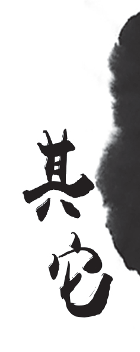
“盡聞不住”中的“住”就是執着，在這裏是注意力，有了注意力會出現外面的聲塵、中間的耳根、還有裏面的耳識，合成三界，“不住”就是指注意力消失了，耳根三界隨之消失。“盡聞不住”，聞到盡頭，注意力消失。注意力消失會怎麼樣？會進入三禪境界。
“覺所覺空。空覺極圓”，這裏的“覺”是指，用第七識分別心觀照前邊所有的執着，“覺所覺空”中的“覺所”指的是可以用分別心觀照的執着，第二個“覺”是指觀照這種行爲。“覺所覺空”，觀照的對象和觀照這種行爲全部消失，就會“空覺極圓”，沒有了執着之後，就會進入空的狀態，感受到空的狀態是圓融的。到這裏就會成爲阿羅漢。
然後“空所空滅”，“空所”指能空掉的對象，第二個“空”指空掉這種行爲，在這裏省去了我這個主體，先有我和空掉的對象，然後纔會有空掉這種行爲，那麼我、空掉的對象、空掉的行爲全部消失，也就是我相、人相等分別心消失，就到了菩薩的境界。用菩薩的妄想認知世界。“生滅既滅”：妄想的生滅消失了。一真法界中所有妄想和合而成的世界全部消失。“寂滅現前”：妄想不再生滅，就成佛了。
“忽然超越世出世間。十方圓明”，成了佛，意識覆蓋全法界，同時感知到輪迴外所有衆生，叫“世出”，也感知到輪迴內所有衆生，叫“世間”，從而達到“十方圓明”的境界。“獲二殊勝”，“上合諸佛本妙覺心”，指成佛了，擁有佛一樣的能力和智慧，“下合衆生同一悲愍”，對衆生能起無限的悲憫之心，隨緣度人。
在這個修法上，最關鍵的一點是：它跳過了情緒！所以我們不建議現代人修這個法門，前面可以照着修，但是這個情緒無法跳過。我們現代人情緒很熾盛，理論上用後邊的分別心來覺照，也可以把情緒滅掉，但是實際操作很難做到，而且情緒有個特點，它不遇到境界時不會輕易升起。
抑鬱症、焦慮症，這已經是很嚴重的疾病狀態。一般情況下，正常人平時不會有情緒波動，所以不刻意地去修，不用參的方式把情緒引出來，我們通常感受不到情緒，誤以爲自己已經沒有了情緒，會陷入良好的自我感覺當中。所以有些修行人在山上修行很多年，覺得自己很不錯了，已經很厲害了，等下山一遇到境界，各種情緒都起來了，就知道自己修爲還不夠。
所以我們要修這個法門，至少要知道這中間有一個情緒，用前面的觀法可以進入二禪，能做到聲音消失、注意力消失，或者暫時熄滅所有注意力。下三根境界徹底熄滅，上三根境界暫時熄滅叫安住於二禪，等上三根徹底破滅了，纔算三禪。
到了三禪，情緒不滅就無法往上修，所以我的建議是選擇一種有連貫性的法門來修，從唸佛開始，出聲唸佛→默聲唸佛→觀佛→思佛。這是一套有連續性的修法。
最後思佛的時候，就算思情不能破滅（也就是不能開悟，不能到四禪），只要能一直抓着思情不放，行住坐臥中不間斷地抓着思情，就像熱戀中的人思念情人一樣。不過思情不能一直強烈地提着，必須讓它慢慢熄滅。要有這個正確的認知，知道要讓思情慢慢熄滅，到最後是非常細微地提着，平時做任何事情時都不停止參思情。
如果你的修爲到了一定境界，情緒、注意力都可以故意升起，但是在修行前期，情緒和注意力很熾盛的時候，反而感到難以控制，想靠意念升起情緒都困難。
從耳根圓通法門，又講到了思情上。到了這個境界，一定要轉到思情或者疑情上——前面怎麼修都可以。
淨土法門：信、願、行——這個就說一點吧。
“信”，就是相信，相信極樂世界真實存在，西方三聖也真實存在，相信那裏有36 萬億多的、同名同號的阿彌陀佛真實存在。等你死的時候，相信他們肯定會來接，這是基本的信。
還有對自己也要有信心，相信自己肯定能去。我們修行人的信心，都是來自於佛菩薩的加持。不是單純地靠自力，全靠自力是不太可能的。越是到傳法後期，衆生根器越低劣，全靠自力往生的可能性非常低，所以還是要相信佛菩薩。那麼佛菩薩的加持是怎麼引來的，靠大願和戒行、善行、修行，是按照佛菩薩的指導精進修行引來的。這是第一點“信”，相信極樂世界真實存在，相信自己肯定能去。
第二點“願”。往生之願和其他七重的發願不一樣，往生之願是別傳。你只要有一個往生之願，理論上就可以了。但是你要想提高往生的可能性，就要在七重發心中選一個，選大菩提心，發願把有緣衆生全部度完。如果這樣的發心有點難，那麼可以先發願度和自己親近的人，先度自己的家人等。這也算大菩提心，都是度有緣衆生，只是有先後順序而已。只要有回來度人的想法，往生的概率就會大幅提高。
然後是“行”，戒行、善行、修行這三個。對於在家人，只要守根本五戒就可以了，其他戒就隨緣，戒中最重要的是殺戒和淫戒。極樂世界的下品下生世界也沒有殺生喫肉這種行爲。所以第一要戒掉的是殺生喫肉的習氣。
然後是“淫戒”，正常夫妻之間不算邪淫，夫妻之間是要消的業。不嫖娼、不包二奶、不搞婚外情，就算守了淫戒。正常的自慰行爲也不算邪淫。
“盜”就不用說了。
關於“妄語”。我們活在世上怎麼可能一句謊言都不說呢？正常的、恭維別人的那些禮貌用語，讓別人高高興興的謊言說也無妨。但是不要以謊言來騙取別人的東西、傷害別人的感情，這就算犯戒，是造惡業。
關於“酒”。在社會上生活，怎麼可能一點都不喝？當然你要是有條件不喝最好。很多在家人因爲工作需求，沒有辦法完全不喝。那就做到儘量不醉吧。因爲醉了之後可能犯其他戒，酒戒主要爲了防其他戒。
對在家人，只要能守住這五個根本大戒就可以了。
然後是“善行”，最簡單的就是儘量多放生。這個沒有什麼副作用，你也不用考慮放生以後還會被人抓、被天敵喫等問題，只要你放了就有你的功德，抓魚是他們的罪業，與你無關。
我們就是普通老百姓，沒必要擔心什麼經濟大循環，破壞生態環境之類的事，那是大人物們想的事，我們就是在不觸犯法律的情況下正常地放生而已。儘量放那些養殖的、在當地能存活的小魚，比如泥鰍。不要放外來物種，不要放鳥，鳥類是專門抓來的，放普通的小魚就夠了。
然後是在佛法上做功德，助印佛經，去寺院往功德箱裏放點錢之類的行爲。但是現在有些客流量多的寺院根本不缺錢。你要做好事，雪中送炭比錦上添花要好，可我們智慧不足，很難判斷什麼情況需要幫助。所以說用我們短淺的智慧能判斷的善行、最簡單的善行、的的確確能幫到衆生的善行，就是放生，這個最容易。
還有，幫助沒錢治病的患者也行，幫助沒錢讀書的學生也行。我是希望多些人做教育方面的好事，畢竟讀書多沒什麼壞處，起碼多了幾條選擇的路，比完全沒有讀書的人要好一些。
還有修行方面，不要強求，不要給自己定什麼目標，幾歲的時候一定要達到什麼境界，諸如此類的目標，這樣反而會給自己帶來更多的煩惱和痛苦。只要定好每天的功課量，一天一個小時開始，唸經、唸咒、打坐、磕頭，這都算修行。每天一點點增加。在家人一天修兩個小時能做得到吧，再往上四個小時就有明顯進步了。前期修行都能感覺到自己在進步，但是每天只修一到兩個小時，到了一定程度之後就不會再進步了，會一直保持那個狀態。
再往上就有點困難了，所以從兩個小時，到三個小時，到四個小時，這裏都有坎，雙盤超過三小時，會出現身體第二次升級的變化，我們叫百日築基，男性夢遺消失，女性月經消失，年輕人可以追求這個境界。
如果是老年人，磕頭也不行，打坐也不行，那就拼命唸佛就可以了。不夠的地方就用福報來填，多做善行。有錢就佈施錢，沒錢就去做個義工，出點力氣也行。各種能做的善事儘自己能力去做。
關於法佈施，向別人傳法的事不要特別強求。人家願意聽，你就說兩句，人家不想聽，你就不要追着人一直嘮叨，讓人很反感，甚至對佛法都產生不好的想法，這樣就成了你的罪業。有些人學佛很多年，但是家人之間的關係、親戚之間的關係都弄不好，這肯定是自己有問題。
善行、戒行、修行基本都說了。凡事不要特別強求，在自己能力範圍內慢慢增加，不要給自己造成特別大的負擔和壓力。如果你要系統地學，就從練腹式呼吸開始，然後是磕頭，再然後是打坐，這個順序。還有唸經、唸咒都是前面滅文字妄想的修法，都是早期入門的修法。可以先念一年地藏經送走冤親債主，沒有冤親債主就滅文字妄想和積累功德。
問：您說極樂世界和我們這個世界沒有中間人，所以加持力都不夠大，釋迦牟尼佛——我們的本佛不能當中間人嗎？
Tai 師父：關於加持力，請參考第三章、第01 節、第3 小節。你看這有人就問到點上了，我得展開來多說一點。
釋迦牟尼佛和極樂世界所有的阿彌陀佛並沒有輪迴中的記憶，不是對方記憶中的衆生。釋迦牟尼佛是在其他世界成爲等覺菩薩之後纔來到極樂世界求助的，希望極樂世界派出一個傳法團隊去他新創造的世界進行一次示範性的傳法活動。
釋迦牟尼佛是等覺菩薩的時候，他的意識和阿彌陀佛也重疊在一起。這個時候釋迦牟尼等覺菩薩升起一個妄想，想一下：“阿彌陀佛，你派出一個團隊，到我創造的世界裏傳一次法，好不好？”然後這個妄想消失了。
那阿彌陀佛是本知的，所有衆生的妄想他都知道。他就知道釋迦牟尼等覺菩薩起了這樣的妄想。
兩個人都在輪迴世界之外起妄想，相互之間並沒有情緒變化，也沒有我見——認爲對方是輪迴內凡夫的我見。
就好比你出門的時候看見鄰居在給花澆水，你只是看一眼就走了，他都沒有看見你，他澆完水就進屋了。你們兩個根本就沒有互動過，只是一個旁觀者的心態看了一下。
釋迦牟尼等覺菩薩起了妄想，之後妄想消失。他的妄想是衝着阿彌陀佛發的，希望阿彌陀佛做什麼事。但是他的妄想生滅當中，阿彌陀佛沒有參與進去，所以說他並不是阿彌陀佛心中的衆生。
阿彌陀佛也只是知道釋迦牟尼等覺菩薩在自性當中生滅了一個妄想。阿彌陀佛就接住了他的意思，也升起了一個妄想：“同意！”
接下來再升起第二個妄想。所有佛菩薩的意識都重疊在一起，所以阿彌陀佛只要升起一個妄想：“在我的弟子們當中，觀音、大勢至，還有誰誰，你們幾個人組成一個團隊，帶着你們手下的人，去他的那個世界裏傳法吧！”這樣妄想升起再消失，這些和阿彌陀佛意識重疊在一起的所有菩薩們，觀音菩薩、大勢至菩薩等等，他們也會紛紛升起妄想，向自己的弟子們開始發號施令，要去的人組成一個團隊，然後開始投胎，過程就是這樣。
所以說，釋迦牟尼佛並不是阿彌陀佛心中的衆生，所以他不能直接傳遞極樂世界諸佛的加持力。完全沒有前世記憶作爲連接的情況下還有一個辦法，就是凡夫自己先念佛，任何衆生只要不停地向阿彌陀佛發出心願、思念，加持力還是可以承接過來，就算不在一個世界，他還是能接受到極樂世界的加持力，但是他只要不念佛，這個線就斷了。
如果他是極樂世界的衆生，他和某一個極樂世界的人已經有了業緣，那中間就可以無限連接、層層連接到所有的佛。所以說，只要這個人來到了極樂世界，和極樂世界的某個羅漢也好、菩薩也好，某個上品上生的衆生有了業緣的話，就算他不信佛，這個加持力還是會直接傳到他身上。
但是沒有這種中間人，也沒有互相之間成爲對方記憶中衆生的情況下，這個加持力就傳不到他那裏，只能靠自己的思念來接一點加持力。
還有衆生的分別心——世界分別心。凡夫認爲我們這裏是娑婆世界，那裏是極樂世界，他心中有這種分別心的情況下，加持力會被分別心擋住，能傳遞給他的加持力就會減弱。
所以說我們這個世界的衆生要想接受阿彌陀佛的加持力，就得拼命地去思念他，用思念來連接極樂世界諸佛的加持力。
問：釋迦牟尼佛和阿彌陀佛在大通智勝佛的座下當過兒子，他們是兄弟，所以是不是能把那個加持力給傳遞過來呢？
Tai 師父：我們得先明白，佛有四個身：
第一個法身，佛沒有投胎入世的時候叫法身，在沒有任何妄想的、純粹的情況下就是法身。
報身，帶着業進入輪迴時叫報身。
化身，佛用神通顯現的幻像。
應身，順應衆生的需求展現出來幻像。
化身和應身性質一樣。化身是佛主動展現的幻像，應身是佛順應衆生的要求展現的幻像。只有在報身的情況下，才能在對方的記憶當中留下痕跡，成爲對方記憶中的衆生，同時把對方也作爲自己記憶中的衆生記錄下來，只有這種情況下纔可以。
再看咱們大乘義理當中，世界都是“夢幻泡影”，都是幻覺。還有“八識轉六識”，這也是重點，只有到了菩薩這個級別，六識和七識全部滅掉的情況下，可以在六識構成的輪迴世界裏自由展現神通。
把這幾個點全部拼在一起看，這個世界裏展現的所有東西全是假的。這一切可能都是佛想讓你看到的。所以你看前面的問題，釋迦牟尼佛和阿彌陀佛是不是兄弟，能不能傳遞加持力？實際上不是，傳遞不了加持力。
這裏還有一個點，釋迦牟尼佛在成佛之前去過很多世界，在很多不同的世界裏見了很多不同的佛，其中也有和釋迦牟尼佛有過輪迴中的互動，成爲記憶中的衆生的佛，但是並不多。你看佛經，釋迦牟尼佛去見的那些佛，根本沒有情緒，他們見到釋迦牟尼佛——一個還沒有成佛的人過來了，只是簡單介紹一下、傳一個咒文之類的，有這樣的佛經。
看大乘佛經，最好只看義理，故事看一看就可以了，千萬別把它當成真實發生過的、完整的、有據可查的故事來看。就因爲它有誇張的地方，所以小乘人一直攻擊大乘，說大乘佛經不是佛所說、是瞎編亂造出來的僞經。
因爲它沒有辦法考據的地方實在太多了。曾經有人的確想過把大乘佛經裏出現的劫名、佛名、世界名按照佛去過的順序串聯起來，看看行不行。結果發現不僅有很多同名的佛，還有同名的世界、同名的劫，甚至還有的佛經裏說，釋迦牟尼佛去了某個佛的世界裏跟他互動過，但是又在別的佛經裏說，這個佛在釋迦牟尼佛見到他之前還沒有成佛，這類互相沖突的內容不少，根本無法串聯起來。
後面大乘經典又出現了伏藏，說某個修行人在定中看到了釋迦牟尼佛在靈山講法，把它給記錄下來就成佛經了；還有在定中去龍宮取出來的佛經；還有在定中去一個山體裏邊，不是山洞，是實體的山，他以二禪三禪那種陽神態，進入實體的山裏把佛經取出來，有這樣的事。以這類方式出現的佛經叫伏藏。
所以我們看大乘經典就看義理，主要是關於心、意識的部分，還有關於修行的部分，最多再加點關於世界的部分——世界的產生之類的內容，這些可以當做真相來看。
其它的故事，幾乎都可以當作是寫佛經的人想讓我們看到的內容，甚至可以說這些互相矛盾的點是故意安排的，以表達這個世界的本來面目是假象，可能整個世界都是他們想讓你看到的而已。
大乘佛經也有邏輯困境，你信了才能如法修行，有了修行才能親證佛經所說真實不虛，你不修行就無法證明佛經所說真實不虛，不能證明的情況下你又不願意修。
佛法講信、解、行、證。你得先信，信了才能理解，叫解悟；然後才能引出修行行爲；有了修行才能證悟，你自己來證明佛法就是世界真相。問題是你不信的情況下，後面就沒有辦法證明，我們又不能拿佛經來證明佛法是正確的，那這時候怎麼辦？所以這個時候就拿義理來看，把它組成一個完整的邏輯來看，能不能用邏輯來先證明佛法是一個通順的邏輯，在自己給出的設定裏面形成完整的閉環。
所以我現在講的就是這個部分，不是佛經裏的某個故事，你不要拿這些故事來和義理相比較，看到哪個小故事好像有不通的地方，就拿來說整個佛經有問題，或者說我講的法有問題，這沒有意義。這種行爲就像小乘人攻擊大乘佛法一樣，用這種故事上不通順的地方來說整個大乘義理是錯的，我認爲是欠邏輯的。
還有人問和我結緣的話，是不是能承接那個36 萬億阿彌陀佛的加持力呢？抱歉啊，我不行，爲什麼？因爲只有佛纔可以把完整的加持力傳遞給自己記憶當中的衆生身上，只有佛纔可以100% 地傳遞過去。等覺菩薩會稍微打點折，然後十地菩薩再打折，這樣往下層層打折，一直到阿羅漢出現十方分別，一旦產生了對不同世界的分別心，打折的程度更大，到最後成爲凡夫，尤其是有情緒的凡夫，打折的程度已經大到沒什麼承接力了。我覺得應該是這樣。要不然，我身邊的人怎麼沒有突然開悟了的呢，是不是？我身邊也有一些修淨土法門的人，但是沒見過有誰突然間開悟了的，如果認識我就一下子境界提高的說法是真的話，估計早就傳出去了，所以不用往我身上打主意。
我一再強調，真正的傳法者是讓你去佛菩薩那裏，把你送到佛菩薩的懷裏，你直接和佛菩薩建立聯繫就可以了。
怎麼做？大願加上戒行、善行、修行。
最後就是精進、精進、精進。但是有些人已經年紀大了，磕頭也難、盤腿也難，這個那個都不行，那最後的辦法就是一直口唸阿彌陀佛，然後多多放生、佈施之類的，也就只有這個辦法了。只要功夫到了，都是可以的。
去極樂世界是信、願、行，只要這三個做到了就可以了，理論上不需要出離心、大菩提心。想提高往生概率，可以發願回來度有緣衆生，這就是大菩提心。
所以說，不要把注意力放到某個活着的人身上，最好還是把注意力放到佛菩薩身上，試着和他們直接聯繫，有問題直接問他們，好不好？尤其是外邊那些騙財騙色的假修行，這些人還是遠離的好。
但是你說要不要佈施、供養那些出家人，我覺得這是應該的吧，佛法靠僧團組織來傳承，確保中間沒有胡亂修改核心義理，供養僧寶有功德。但是，如果說你在情感上對他們產生依賴，這個是沒有必要的，你還是在情感上對佛菩薩產生依賴，就像思念母親一樣思念阿彌陀佛，能做到功夫成一片，思念不斷，那就可以去極樂世界了。不用管別人，好不好！
問：功德迴向和隨喜是怎麼算的？
Tai 師父：所有都是妄想，情緒也是妄想，既然妄想是可數的，那一切都是可數的，都是可以量化計算的。
按這位師父說的，假設我放了100 條魚，這100 條魚產生的歡喜心是衝向我的。
我回向給其他人：迴向給一個人，那100 個歡喜心當中七分之六是衝向我。《地藏經》說的，七分之六“生者自利”，還有七分之一給他。那100 的七分之一是多少？14 個點給那一個人。
你要是迴向給100 個人的話，14/100，就變成這麼少了。
那隨喜呢？隨喜的功德相當於你爲他的行爲讚歎，爲此開心，等於是把他迴向的那一份功德也算你這裏，這個是憑空造出來的。你看別人做好事隨喜了，他沒有迴向給你，他迴向給他的某人了，但是在你這裏也會憑空多出一份。他可能做很多功德，然後迴向給一個人。你隨喜讚歎了，那他親人得到七分之一，在你這裏可能連七分之一都不到。但起碼多少有點，這個不太好算。
你不能因爲隨喜有功德，到處去隨喜，自己不做任何功德——這又變成了“貪”，這樣就沒有什麼功德可言了。你要隨緣地看到有人做好事，就隨喜，這個可以。但是你追着這個到處跑沒有意義，功德有是有，但不多，只能這麼說。
功德是不能來回反彈的。有人以爲把一份功德迴向給法界衆生，然後說“舍一得萬報”，我得了一萬份。我把這個萬倍再回向給法界衆生，這樣來回反彈，可以倍倍增加，沒有這種事的，只能迴向一次！
所以你有事要“求”，或者你想爲某個人做功德，你迴向給他就行，不要回向給其他人，就回向給他。如果你認爲這個人目前有冤親債主討債，你可以迴向給他的冤親債主，希望他們拿着功德去投胎。
迴向給法界衆生，和迴向某個人或者某個特定羣體是不一樣的概念。你迴向給法界衆生，相當於做了“同體大悲心”的迴向。你直接回向給有緣衆生，那就是“大菩提心”的迴向。
你迴向給法界衆生，功德可以做到“舍一得萬報”。如果迴向給你的有緣衆生，功德可能會少很多，我也不敢說是“舍一得千報”，但是起碼有這麼個數吧，只能這麼說了。就是迴向給有緣衆生，回報會很多；迴向給法界衆生，回報會更大——就這麼理解就可以了。
問：師父好，能否多講講空性？這段時間，師父講了業，講了很多法界的祕密，真的顛覆了我以前的認知，我感覺現在無法將那些與空性圓融起來。我之前一直以爲：安住在第一義諦不動，是沒有可動的東西！可是師父講的這一切都不是空的。
我之前一直以爲，業果是自然成熟的，隨機的，所以沒有什麼救世主，一切都是自己的造作，沒想到，一切都有後臺控制，這個真的很顛覆。
Tai 師父：有人問“空性”。
他說看了很多我說的內容之後，世界觀被顛覆了。感覺以前一直修空性，覺得安住於空性的話，什麼都很好，現在突然間發現有“業”啊什麼的，感覺就變了。
我就回答一下：對凡夫來說，你安住於“空性”就是妄想，你自我的妄想。你不要相信那些整天談空性的人，那都是扯淡的！
比如說我現在拿手機錄音，手機是硬的，像板磚一樣硬，那你說這是空的嗎？你怎麼能說它是空的呢？——它明明很硬的、摸得着的，你怎麼能說它是空的？
如果你靠修行達到初禪，不要太高，就安住於初禪，把下三根暫時熄滅，你再看這個手機，它會變得半透明，因爲身根觸覺消失了——它會變得半透明，可以穿過去。
等你修到二禪，再看這個手機，它就變成一團霧狀，實體基本上消失了，但是它還是有，像霧一樣。
等你修到三禪，再看這個手機，它就徹底消失了，這世界上沒有霧了。
到了三禪，在宇宙中看地球，地球是沒有實體的，是無數個小小的陽神拼湊在一起，堆成一個大球。這些陽神全是黑色的、紅色的，整個地球是黑紅黑紅的陽神堆積在一起的，裏邊沒有藍色的星球。
你至少要修到二禪之後，再說這個手機是空的，是你真體悟到了。對一個普通人來說，你說“手機是空的”，你都不知道這個初禪、二禪怎麼修的，理論不全的情況下，你說“手機是空的”，那就是妄上加妄！
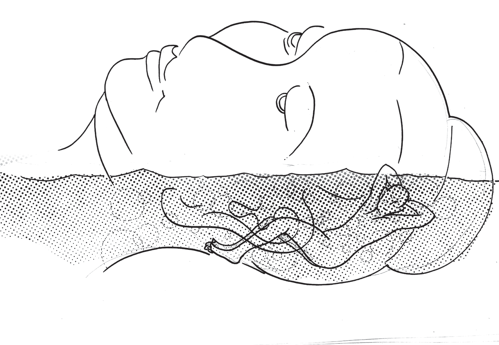
你不知道手機本來面目的情況下，又給它加了一個新的妄想，它就變成“空”，還自認爲自己安住於“空性”——這也是凡夫的一種妄念。
打個比喻啊：我是個四肢健全的健康男性，從“空性”的角度來看，這是不是一種妄念？也算是吧，但是我的確有男性肉身。我給自己來一刀，把自己給切了，然後硬說我是女的，還要求別人說我是女的，那這算什麼？是不是妄上加妄？
“男人”本身也是妄念。如果“我”到達初禪——沒有淫慾的時候，就沒有了男女之別。這時候男性肉身的性別特徵就沒有了——你就知道性別本來是空的。但是你沒有修到這個程度，意識裏還認爲自己是堅固的男性，再把自己咔嚓切了一下，然後就變成堅固的女性，這都是妄上加妄。你把自己切了，最多也就是有殘疾的男性，怎麼可能變成女性。是不是這個道理？
你現在以初學的角度說“我安住於空性”，瞭解這個世界“本來是空的”，對你的打坐、實際修行沒有幫助。你當下先從文字妄想開始滅起，文字妄想滅掉、淫慾滅掉、然後下三根滅掉。這樣一步一步往前走的過程中，對這個所謂的“空性”有真正的體悟，這纔是正解。目前階段講空，對你實際修行有幫助嗎？大概率可能都沒什麼幫助，反而讓你走向虛無主義了，好像只要什麼都說“空”就可以了，等你死的時候，你就知道你的死亡是不是空。你也就知道，這一切都是妄念而已，還是踏踏實實、腳踏實地地修行纔好。
問：我受到衝擊的是，我們凡夫是要這樣修證，迴歸自性，而佛菩薩不是應該真正地安住在“空性”裏面嗎？（不過現在明白了，他們也得做事）我說我們修的時候“安住空性”，是說安住於這個“自己與佛法身一體，本來都是佛”的這個知見，我覺得，師父可能沒有明白我說的意思。我上面說佛菩薩也得做事，度衆生是肯定的，大家都知道。我說的是在法界也得做事，掌控所有人“業”的顯現消滅，之前以爲在法界他們就只是安住於“空性”呢。我之前的卡點就是在這裏。
Tai 師父：抱歉，那我理解錯了。執空是很多學佛人的通病，應該不算隱私吧，所以我在外面說了，如果是你個人業相關的問題就不說了。對不起，不管怎麼說，你會念佛、思佛就是好事，值得讚歎。加油！
問：師父講說拍死蚊子這段，因爲是蚊子吸了我的血，被我看到，它先造了因，所以我可能會拍死它，會不會倒因爲果？
是不是該看成：可能是過去世，我曾經當過蚊子，曾經吸過它的血，所以這一世它吸回來。因爲如果拍死它，就變成冤冤相報何時了，在輪迴中不斷與衆生糾纏不止？
會想到這樣，也是因爲以前師父說過佛陀的一個故事：如果有人拿刀子桶我，就當作助我涅槃，要感謝他。
這裏延伸出一個問題，就是：當遇到不好的事（譬如被蚊子吸血），該如何判斷是在命運中已寫好，所以我該逆來順受，或者是衆生在造新的因，因此我不必刻意忍受，可以給對方立馬來個現世報？望師父解惑。
Tai 師父：有人問拍蚊子這類問題，這種問題在廟裏剛出家的人也會問大師父。我聽大師父是這麼回答的：那些小生命想和你結緣，但是又拿不出可以供養的東西，又沒有完整的心識跟你交流，最後能想到的辦法就是死在你手上，這樣和你結個緣。你就發個大願吧，等你成道之後，把這些死在你手上的或者被你傷害過的一切衆生都度了，你有這個大願就行。你看這個解釋怎麼樣。
可以說，這也是一種方便的解釋。但是我勸你還是不要把這種小事放在身上、放在心上。打個比喻：咱們現在站在屎坑裏，你擔心腳踩着屎、手碰着屎，你就啥也幹不了，只能靜靜待着。你現在最大的目標，就是跑出這個屎坑。就算手上沾點屎，先爬出去後再想辦法把屎洗掉，這樣可不可以理解。
修行本來就是這樣的。我們這個三界火宅充滿了殺戮，你既然已經發願要解脫、求成佛，就不要左顧右盼，先跑出去再說。等你回頭再來度了他們，他們也都成道了，再回想起和你第一次結緣，被你拍死的那一下，他們說不定還非常感激你。因爲如果是被別人拍死了，或者被天敵喫了，他們的生死輪迴還在繼續。幸虧被你拍死了，幸虧你也成道了，再回來度了他們，所以他們還能離開。
所以說，有些事情不能單看那小小的一個點，你要一直抓着那個點就走不出困境。你要先往前看，或者從更高的角度往下看，不能把一個微觀態的小事放在心上，一直耿耿於懷，你先發個大願，然後一路狂奔，先跑出去再說。
下一個問題，有人殺我的時候，算不算我還了一個債，助我成道？有人殺我和拍死一個蚊子不是一回事。殺蚊子是殺蚊子，人殺我是人殺我，人殺我肯定是和我結仇。
如果我是以大菩提心或正常的發心：戒行、善行、修行三行都有，精進修行的人。在這種情況下，佛菩薩會保護我的命運按照原來規劃好的劇本走，不可能出現意外。其實人的命運有很多意外，如果我在命運被保護的情況下有人來殺我，那就是我該死，我得還這個債！
如果是正常情況下，命運不被保護的普通人，他們的命運就有很多隨機事件發生。因爲有了隨機事件世界纔會變成這樣，不可能所有的事情都在劇本內按部就班地走。
比如有一個人非常愛喫肉，天天喫，各種肉都喫。那他一輩子喫的肉裏，有多少是他必須喫的，也就是說上輩子別人欠他的，有多少是他這輩子新喫的，你能算得出來嗎？肯定也有新的，是吧。
再比如，有一個喜歡到處嫖娼的男人，一年嫖娼100 回，其中有幾十人可能是和他有前世因緣的女人，也有幾十人可能沒有前世因緣，是第一次結緣。
再舉個例子，有個瘋子在路上砍人，一連砍死好幾十個人，你剛好有事經過那裏，你跟他前世沒有任何因緣，但有可能就被他砍死了。如果你的命運被佛菩薩保護的話，佛菩薩可能會提前通知你。在你做夢的時候，佛菩薩告訴你今天別去哪裏，也有可能是你出門的時候，家裏突然有事，自來水爆炸讓你回去修，讓你出不了門。這個本來就不是你的災就躲過去了，他用這種方式，讓你避開這種危險的可能性。
很多真正修行人的命運都是在這種保護下，但是修行人自己都不自知，不可能讓所有人都知道的。所以說，殺蟲子也好，被人殺也好，有些問題不能單看當下的那個事，你得從更高的角度往下看。
死了會出現什麼情況？這個問題和前面兩個問題聯繫不大。如果一個人死了，就相當於以中陰身進入一個房間。如果他平時一直唸佛，那佛菩薩會來接他，但是他的冤親債主也會出現。
如果你的修爲已經達到了能看到別人陽神態的情緒的程度，那你一眼就能看出，這個是來抓我的仇人，是來找我麻煩的人。你能看出他情緒裏充滿了對你的仇恨，充滿了對你的報復心。
但是如果你的修爲根本沒有達到這個程度，在你眼裏，他可能就顯現出你的一個親人來拉你走，你要是跟着他走，就會到下三途去。如果你活着的時候造了很多善業，放了很多生，又幫助了很多人，在這個時候，那些被你幫助過的衆生的善念、他們對你的感激之情、還有對你的美好祝福，這些情緒都會顯現出來，因爲諸佛同體。
這個時候，在中陰身形態下，諸佛同體的效果就會起來，他們對你的惡念和善念開始混在一起、相互作用，被你幫助過的這些衆生的善念會稀釋掉一部分惡念，對你進行保護。這樣的情況下，你就能看到佛菩薩，那幾個仇人一時之間就沒法對你產生影響，這時你就可以跟着佛菩薩走了。
所以說殺蟲子這種事情，你現在能做的就是先別管，先好好修行，多放生，讓放生的量多過殺生的量好幾倍，先保證做到這一點，等你解脫了或者去了別的地方再說。
解脫不了的話，下一世會怎麼辦？你這輩子修行起的慈悲心，被你幫助過、被你放生過的衆生，他們對你的美好的祝願、對你的感恩之心，這些都會在你重新投胎之時顯現出來，讓你去一個比現在更美好的世界。
你既然不想殺生，那下一次去的世界就會更乾淨、殺戮更少，比如天界。四天王天是天界中最低的，那裏的衆生也沒有殺生喫肉的習氣，沒有蟲子可殺。哪怕是在人間，南方和北方相比怎麼樣？北方的冬天半年都沒有蟲子，你要是去南方赤道那邊的話，一年365天都有蟲子，而且蟲子的個頭大、數量也多。
單純從殺業來看，生在南方和生在東北這樣的環境，東北的冬天是沒有什麼蟲子的。哪怕是一個星球裏也可以分出不同的環境。所以，如果你的慈悲心和善行多，下一世就會去往更好的地方，再修行、再修行，就這樣反覆地一點點往前推。你不可能在這一生一個蟲子都不殺，那是不切實際的。
我以前也想過，我要是有錢的話，請幾個保姆把我住的地方打掃得乾乾淨淨，讓我一隻蟲子都看不見，別讓我用任何主動的或者被動的方式殺死任何蟲子。但換過來一想，那保姆們爲了給我創造這個環境，得殺多少蟲子，可能他們殺的比我自己殺的還要多好幾倍，這樣才能讓我在這樣乾淨的環境裏生活！如果這樣的話，那算是我把殺業轉嫁給了他們，也不是什麼好事。
所以，先把殺小蟲子這個事放下，每次殺的時候你在心裏念阿彌陀佛就可以了，你在心裏念：早晚有一天我會來度你，這輩子我殺了你，希望你能去投胎成人。你帶着這樣的一點點慈悲心。但是不要主動去亂殺，這就可以了。
關於國家，我得表明我的立場，我是支持國家的人，支持政府的人。
我已經講過了，上面編劇菩薩可以給每個人寫命運。國家是什麼？就是一個個活生生的人組成的大組織，那國家大命運也在劇本當中，這一點不用說大家也能理解。中國在未來一百年內肯定會成爲世界話事人，這是大趨勢。所以說，我希望宗教界也能發憤圖強，趁着這個勢頭往外輸出一波，這是我的期盼，但成不成那就不知道了。
總之我是支持現在政府的人。咱們唸的迴向偈裏頭就有一句：上報四重恩，下濟三途苦，上報四重恩中的第四個就是國王恩，感謝政府給我們營造這個環境，維持這個環境，允許傳法，允許修行。
所以我支持目前的政府，支持一切政策，信教先愛國，學佛先做人。
還有我勸我的信衆們，我叫大家是我的信衆，我可以這麼叫嗎？我不知道。但是呢，我的信衆，或者你學過我的書的話，在外面不要做什麼破邪立正的事情，破邪立正就是去攻擊你認爲的邪法和說法者，然後去做扶持正法這種事，對於凡夫來說沒必要。準確地說，一個凡夫是沒有正法的，因爲佛也說了，成爲阿羅漢之前就不要相信自己，你也很難判斷你的想法對與不對。
如果真的是一個邪師到處傳邪法，上面真的決定要處理的話，那是可以分分鐘滅掉的，不需要你一個凡夫去操這個心，真的。
你看上世紀九十年代，一個附佛外道到現在還活着，他在美國活得挺好的。那個人用十年，發展了一億多的信衆，但是要滅他不過就兩個月而已。
所以說作爲一個普通人，你就好好過自己的日子，好好修行，珍惜這段比較和平的日子，能修到哪裏就修到哪裏，不要管外邊那些亂七八糟的事情。而且我以前也講過，不要參與到鬥爭當中，能離開就離開，先把自己修好了，能成爲阿羅漢更好，成不了那怎麼辦？就去極樂世界，去不了極樂世界那就去天界。
一世修成阿羅漢是有點困難，畢竟時間和業都堵在那裏，在現實生活中，大家不要去多管閒事，做自己的事就可以了，好吧？
身體障礙無非是兩種，一種是業障，還有一種是不好的生活習慣導致的。先說業障，業障大多都是冤親債主。怎麼解決業障？第一是懺悔，第二是發願，發願什麼？不僅要有大菩提心，還要向那個債主發願，你未來一定會度他。第三是做功德迴向給他，念《地藏經》也好，放生也好，做佛事也好，各種都行。第四個，跟他問，你就直接問你要什麼，你有什麼需要就直接說，託夢也好，怎麼樣要都行。然後看看他說什麼，如果他願意提要求的話，這事兒就好解決了，你只要能滿足他，他就會走了。
還有，身上有冤親債主會有什麼表現，人比較冷，頭腦也比較昏沉、容易瞌睡，還有時不時的會頭疼，這都是一般情況。冤親債主都是陰性的，所以身上有冤親債主的人都比較怕冷，但不是外部的皮膚感到冷，而是從體內開始冷，等冤親債主一走，感覺馬上就不一樣了，因爲我有過這個經驗。
另一種是不好的生活習慣導致的身體障礙。要先調好飲食，能不喫的就不要喫，尤其是晚飯，能不喫就不要喫了。然後是呼吸，要練好腹式呼吸，然後磕頭，要量力而行，特別是年紀大的人和肥胖的人，能磕多少個就磕多少個。尤其是一開始，要是打坐不能達到兩個小時的情況下，你硬磕三五百個，那膝蓋就恢復不過來，特別是年紀大的人。所以一開始是50 個、60 個這樣開始磕，然後打坐也是30 分鐘、60 分鐘一點點增加時間。如果磕頭有點累的話，就歇一歇，別那麼勉強，這樣堅持一兩年差不多都能調過來。
有人很執着地問，關於修行法門的問題，明明自己雙盤堅持不了兩個小時，處在欲界定的程度，卻一定要體驗二禪三禪的感覺，怎麼可能那麼快呢？就因爲你無法提起思情，也沒有辦法長時間地觀，才需要修行。你要是能長時間觀，把注意力高度集中，那就安住於二禪了，那是能打坐八個小時的人才能做得到的。還有，能長時間參疑情，那是三禪，能打坐24 小時的人才能做得到的，一開始打坐兩個小時怎麼可能做得到？那是不可能的事情。
虛雲和尚18歲出家，在山上閉關了很長時間，到三十六七歲的時候勉強達到二禪。後來下山之後，遇到另一位師父教他參話頭，到了56 歲纔到四禪。對一個普通人來說，從入門開始修十年，能做到欲界定兩個小時，這已經很不錯了。然後到初禪四個小時還需要十年，要滅盡淫慾十年都不一定夠，而且一般人中間還有身體上的變化。
身體上有什麼變化？男人叫百日築基，一般在意識層面上先滅掉淫慾之後，身體層面上要雙盤超過三個小時，這兩個條件要同時滿足。這樣纔會開始出現身體上的變化，這個時候要堅持100 天，說是100 天，有些人是180 天，最長200 天左右，基本上能做得到。如果淫慾沒有滅盡，睡覺的時候自己就會泄，雙盤達不到三個小時，精滿就會遺，這是無法控制的，自己就會漏。
女人比男人還難。女人和男人的身體有什麼區別？爲什麼佛說女人的身體不適合修行，佛說女人的身體是五障身，男人身體叫七寶體，這不是什麼歧視的問題，這是客觀存在的差異。男性只要不淫不泄，自己不主動泄，體內的精就會滿起來，滿了纔會泄，雖然泄了之後再打坐，會有那麼一兩天狀態不是很好，但很快就能恢復，因爲泄的是裝滿之後多出來的部分。但是女性呢，只要到點就會泄。28 天一個週期，不管你有沒有滿，它都會泄，而且你的身體差的時候，還會泄得更多。如果身體很差，完全不泄，那是病，還得治。
所以對女性來說，沒有百日築基的說法。女性怎麼練？女性本來就差的身體一旦泄了會變得更加氣虛，28 天爲一個週期，泄三天，其餘不泄的25 天中，每天堅持打坐兩三個小時，起碼十天左右，甚至是更長時間，是用來恢復泄出去的氣，等恢復完了剩下的時間纔是慢慢恢復身體、強化身體的過程。這麼一算用來強化身體的時間也就十多天。那第二次再泄，可能下一次泄的時候中間的間隔時間變成30 天、31 天，這樣往後慢慢延遲，泄的量也會減少，到下一次泄的時候，中間的間隔時間就會超過35 天，泄的量又會減少，這樣反覆地練，可能這個時間要好幾年，有些人一年，有些人需要兩三年。
說實話，我到現在見過的比丘尼中，有些人是二十歲之前出家的，但是到四五十歲達到初禪的人真沒幾個，只有極少數的人才能達到。這不是你想的那樣，稍微努力一下就可以達到的境界，所以要先把心態擺好，要做長期戰鬥的準備，而不是隨便找個什麼法門修一修，一下子就可以達到二禪三禪境界，這不可能的。
在寺院裏修行，很多人都做不到雙盤兩個小時，但是他說體驗過身體空的感覺，或者看到光，這都屬於很正常的事情。一般修行人多多少少都有點這種感覺，他自認爲那是初禪，但其實不是初禪。初禪在入定的狀態下，碰一下身體他都感覺不到，而且全身的存在感會慢慢消失，從手或者從腳開始消失，到徹底消失之後就可以長時間安住在那種狀態，而且你還沒做到前面那個月經消失的程度，那怎麼可能進入初禪？在很多人一起修行的環境裏，別人說什麼，一起修行的人也會跟着說什麼，要是不那麼說的話，顯得自己很不行的樣子，這種情況很普遍。
有些道場裏有修爲高的人，他的確有一定的加持力，實際修爲沒到的人，也可能會在加持下有一些感覺，狀態會比別的地方打坐要好一些。還有一些人是剛開始修行不久，馬上就進入禪定境界，但是經過那麼一兩次之後就進不了了，可能之後的好幾年都進不了，但是他記住了這個感覺，就開始到處說自己進過禪定。這種情況就是佛菩薩給他的一種體驗性加持，讓你先體驗一下，記住這個感覺之後向這個方向努力。這不是自己真實的修爲，如果是真實的修爲，什麼時候想入定就可以入定纔對。
淨土禪的修法是一系列的，一套連續性的修行法門。相比而言，參疑情是斷斷續續的，沒有連續性的法門可以繼承。我教的淨土法門，一開始就是念佛，散盤、單盤、雙盤都可以，腦子裏文字妄想太多就出聲唸佛。文字妄想少到一半左右的時候，就可以默聲唸佛，在心裏念。等文字妄想少到七八成，就可以選擇觀法，也可以選擇參思情，觀法在思情之下，是注意力上用功的法門，《觀無量壽經》裏面有幾種觀法，從落日西山觀開始，到後面的觀阿彌陀佛。我的建議，既然是念阿彌陀佛，那就直接觀阿彌陀佛。
那怎麼觀？你在網上隨便下一個阿彌陀佛的像，細節都記住，然後打坐的時候，你就閉着眼睛觀想這個阿彌陀佛站在你面前，不用觀想太用力，觀想在你面前一個手臂那麼長的距離外，有手掌那麼大的佛像，逐漸集中注意力，把細節都觀想好，一直觀想，那什麼時候算成就了呢？在你不打坐的時候，睜着眼睛的時候，這個阿彌陀佛的像還在那裏，和外面你看到的世界重疊在一起，到這個時候纔算是成就了這種觀法，這個是《觀無量壽經》裏說的。修到這個程度基本上就安住於二禪了，打坐八個小時能達到的這個程度，之後就可以改成參思情。但是我是不太建議修這樣的觀法，但是你要願意的可以做。
參思情同樣也是24 小時不間斷地參，平時也要提起這個思情，一直思念，不是隻在打坐時思念，而是平時一想起來就提起這個思念的情緒。情緒在膻中這裏開始升起，一般人都不知道自己的情緒從哪裏升起，你修行到一定程度，就能感覺到情緒是從膻中、從胸口開始升起的，所有的慾望都是從胸口開始升起，淫慾、食慾，哪怕是想動一下手指的慾望，打遊戲的慾望，那種躍躍欲試的感覺都是從胸口開始升起。也可以說，情緒和慾望是一體的，就是爲了解決不好的情緒，所以纔會出現慾望，爲了滿足慾望，就會動用六根去做行爲，這叫“情緒爲體，六根爲用”。
這個修行法門是從開口唸佛、出聲唸佛開始，到閉口唸佛，接着是觀想阿彌陀佛的像。在注意力層面上下功夫，是上三根，不是下三根，不在身體層面上用功。跳過初禪，直接到二禪，直接修眼觀——在眼根境界上用功。最後是在情緒上用功！這輩子能修到這個程度就可以往生了，去極樂世界應該沒有問題。
在此之上，你繼續修還需要什麼法？以前講過，從思情開始，後面需要有人帶。佛在《阿含經》裏講過小四念處的修法。雖然《阿含經》是最低層次的經書，但在佛陀在世的時候，所有凡夫都屬於下根之人，從初學開始到聲聞、四禪、無色界定全都算下根之人，所以《阿含經》裏講的四念處法門，其實是直接用分別心來觀察前面所有的執着，包括文字妄想、注意力、情緒，還有四禪和無色界定中的執着，全部一同觀察。在行住坐臥當中你要知道你在做什麼，這叫觀身；要知道身體的所有感受，你看到的、聽到的、身體皮膚接觸到的，還有冷熱，所有六根的感覺，你全部都要觀到，這叫觀受；還要知道心裏的想法，主要是情緒，這叫觀心；最後是觀法，世間一切統稱爲法，包括虛空、物質、肉身。
你想想看，這個是一般人能做到的嗎？那些修小乘的人說修四念處法門很厲害，還能解脫。其實對現代人來說，這已經是不可能的事情，你要是連觀想阿彌陀佛像兩個小時都做不到，那更別說什麼直接提起分別心，觀所有的境界，把所有的妄想、執着、感覺，全部一起觀，讓所有感覺一點點消失，直到全部消失。對現代人來說，這已經是不太可能的修法。你要是從頭開始修，用十年時間達到欲界定已經算是很厲害的了。
還有很多人都苦於卡在身體的各種痛苦（如腿疼）的感覺上，實際上，從一個過來人的角度來說，最直接簡單的辦法是不管身體，疼就疼，讓他疼一會兒就可以了。爲什麼？當你感到身體疼時，想着你要去消滅這個痛處，你有這想法，那身體的感覺就消失不了。爲什麼？你想一下生病的前提是什麼？前提就是我認爲我有身體，同時我還認爲我有病，我再用什麼方法去治病，你這麼一想肯定是滅不了的，就像電影《盜夢空間》裏的臺詞一樣，叫你不要想大象，你就會想大象。四禪以後的修行基本都是這個套路，不是讓你去針對的某個執着去滅，而是讓你不要去關心，徹底忘記它，把那個觀念徹底修改過來。
對身體亦是如此。如果感覺到痛，感覺身體有病，就按照佛說的方法，觀身不淨、觀身空這類觀法。認爲這個感覺都是空的，這麼一想，然後再讓感覺慢慢過去。如果時間足夠長，修法正確，所有的痛覺都會慢慢消失。你要是抓住一個痛的感覺，非要把它治好纔行，這樣可能更難闖過身體這關。
先講講什麼是善知識，怎麼分辨？一共有四點。
第一，三法印——諸行無常、諸法無我、涅槃寂靜。“諸行無常”中“常”是不變的意思，那麼“無常”就是一直在變的意思。“諸行無常”指的是世間萬物包括虛空、物質、肉身、凡夫的心，這一切都是妄想和合而成，因爲妄想在不斷變化，這一切也始終在變化。
“諸法無我”中諸法是世界，從佛、菩薩、阿羅漢的視角看，輪迴世界的一切統稱爲“法”，“我”指的是我相，菩薩無分別心，也就沒有我相，認爲我存在的想法是凡夫的顛倒妄想。
“涅槃寂靜”是修行的最終目標，也就是成佛，佛法是指引衆生成佛的真理，是宇宙的真相，初學可以有二乘三乘的目標，但最終還要歸到成佛的大路上，佛就是自性中沒有妄想的狀態。
三法印是識別真佛法與假佛法的標準：一切法若與三法印相違的，即使是佛陀親口所說，也是不了義；若與三法印相契合的，縱然不是佛陀親口所說，也可視同佛說。因爲三法印是“印”證佛法真僞的標準，如同世間的公文，憑藉印鑑可以確認公文的真假，因此稱爲“三法印”。
問題是三法印誰都可以說，邪師也會這麼說。作爲普通人，很難判斷別人說的內容符不符合三法印。如果你真的可以判斷，說明你對佛法的理解已經到了一定的高度，你也不需要判斷和分辨，誰是善知識，誰是邪師了。
第二，大菩提心——普度衆生的大願。你聽到一個人的說法之後，看看你自己在菩提心上有沒有進步。給你傳法的人強調大菩提心的重要性，希望修正法的人往這個方向努力，這麼教是對的。你不需要馬上發大願，只是在發心方面有了比較深的認知，以前不認爲發心很重要，現在知道了，這也算進步。
反過來說，你聽到一個人的講法之後，在一些小事情上，或者某個人、某樣物品，一些儀軌上產生過多的執着，這說明講法的人未必是善知識。善知識的指導應該讓你格局變大，心中裝有衆生，讓你明確知道修行的大方向，在往大方向努力的過程中，一些小事能略過就略過，這樣教是正確的引導。前面講過，我們現在站在糞坑裏，想手腳不沾糞地爬出去幾乎不可能，如果把一些小事一直抓着不放，你可能寸步難行。
有了大目標、大菩提心之後，我們就要勇敢前行，不要過多地執着於小事，包括人、物件或者儀軌。只要方向對了，再有戒行、善行、修行就可以一天天進步。
這是第二點，在發心上讓你有所進步就是善知識，如果發心上反而退步了，讓你更執着於一些小事，那可能不是善知識。
第三，感應問題。關於感應，很難對外細說，因爲每個人感應都不一樣。而且進行大衆傳法的時候，我們都會勸不要過度在意夢境、感應等等，這些都是幻覺。但是從個人角度看，一個人修行五年、十年、二十年，靠什麼來堅持，如果真的沒有一點感應，又拿什麼來堅定信心。所以多多少少都會有感應，而且這個感應應該是正面的、殊勝的感應。
如果你聽了一個人說法之後，按照他所教之法修行，結果真的得到了佛菩薩的加持，至少你認爲這是佛菩薩在加持你，從而信心倍增。不論是你的修行，還是周圍的人際關係、財運，這些方面都有了改善，那麼向你傳法的人大概率是善知識。
反過來說，修了很長時間卻沒有任何感應，而且也沒有什麼太大的變化，甚至諸事不順，魔事諸多，有很多妨礙的人出現，不管是真人還是非人、靈體之類的障礙，那麼可能你所學的法不對。在這裏你要分辨冤親債主的干擾，如果修的法正確，前期都會遇到冤親債主的干擾，但是時間不會太長，短則一兩個月，長則一兩年，只要堅持修行，都會過去。
如果你跟着邪師學，哪怕前期修行方面教得都對，佛菩薩也不會加持你，因爲加持你等於承認那個邪師是善知識，會讓你對邪師增加信心。佛菩薩只會加持跟着真正善知識學的人。
那麼怎麼分辨感應。首先要有大願、戒行、善行、修行，這是得到佛菩薩加持的前提條件。其次要修持一個咒，例如大悲咒或者楞嚴咒等等。要把一個咒唸到睡夢中都能自動念的程度，一旦修好了咒，在睡夢中或者定中有外來的意識進入時，自動念咒就可以嚇退大部分天魔鬼神。對於修行達到一定境界，淫慾滅盡或者將要滅盡的人，天魔鬼神只要接近就能分辨出來，因爲天魔鬼神都在六慾天內，是有淫慾的衆生。意識清淨的人感知不清淨的天魔鬼神就像清水裏滴墨水一樣非常清晰，只有修爲沒到這個境界的人才會被天魔鬼神干擾。如果是佛菩薩給的感應，佛菩薩的意識比我們清淨很多，感覺意識變得非常清爽。
還有一點，如果你還執着於相，認爲佛菩薩也有人一樣的身軀，那麼佛菩薩會示現人相，天魔鬼神也可以化身佛菩薩的形象出現。如果你已經悟到佛菩薩是無相的，他們的意識遍虛空，那麼佛菩薩就不會給你示現人相，而是直接往意識裏輸入信息。這個信息大部分是語言形式，還會有語氣，可能是你信任之人的口吻，但是你聽不到聲音，是直接往意識裏輸入一段話語。天魔鬼神都是欲界天內有形的衆生，他們做不到這一點。
再一次強調，修行不能求感應，但是如法修行的人肯定會有感應，哪怕不是夢中或者定中的感應，現實生活中肯定會有變化。佛菩薩給你感應的目的是，在你信心不足的時候爲了增強你的信心。還有在你遇到困難的時候爲了幫助你，有可能是簡單的提示，有可能是直接幫你解決。
第四，最後一項就是我們大乘佛法的核心理念：諸佛同體，佛菩薩的意識遍虛空，所有正法修行都在佛菩薩的加持下進行，不入諸佛之本心，一切修行都是盲修瞎練——這是非常重要的標準。
大乘佛法一再強調，佛菩薩的意識遍虛空，佛菩薩就在我們身邊，你想什麼佛菩薩都知道，他要不要向你發信息，這是他的事，但是從他的角度看，還是你的事。你這個人需不需要信息，不管是修行方面，還是消業方面，佛菩薩會根據你的認知、修行、發願，還有當下的境遇等各方面條件綜合考慮之後，決定要不要給你發信息。所以你有任何問題，只要心裏想一想，心中對着某位佛菩薩訴說你的訴求，佛菩薩肯定會知道。
真正的大乘傳法者會把這個真相告知於你，把你推向佛菩薩，讓你去找佛菩薩直接溝通。只要你有大願、戒行、善行、修行，你就滿足了佛菩薩加持你的條件，這也是和佛菩薩溝通或者得到信息的條件。還有身心儘量清淨，不喫肉，平時多唸咒，讓腦子裏沒有妄想，這樣更容易得到信息。
善知識會教你有問題儘量和佛菩薩溝通，從佛菩薩那裏得到最真實的、你最需要的、最準確的答案。在我這裏你得到的未必是最準確的答案。因爲我畢竟是普通人，沒有他心通，不能知道你的真實想法；也沒有宿命通，不知道你的業，所以也不知道你當下需要的是什麼指導。我是根據以往的傳法經驗來判斷，並不是用佛菩薩全知的智慧來判斷，所以我的答案很有限，從佛菩薩那裏得到的纔是最準確的答案。
初學一開始都有依賴的心理，想找個師父依靠，但是依靠也有限度。就像我們小時候依靠母親，長大後就要獨立一樣。事實上，我們就算獨立了也在佛菩薩的意識當中，所謂的獨立也無法和佛菩薩完全切割，是用更成熟的心態回到佛菩薩的意識當中，從佛菩薩那裏尋求正確答案。這樣指導纔是真正的善知識。
如果一個傳法者讓信衆往他自己身上靠，潛移默化地灌輸信衆凡事都得依靠他的觀念，在修行、行善，甚至人世間的重要決策都要通過他來做，這應該不是善知識。
在《地藏經》裏，地藏菩薩有一前世叫光目女，供養一位羅漢之後，詢問亡母去處，羅漢用神通看到光目女的亡母在地獄。光目女問羅漢，尊者慈憫，如何哀救。在這裏羅漢並沒有直接幫她，而是勸光目女至誠念清淨蓮華目如來，兼塑畫形象。光目女照做後得到清淨蓮華目如來託夢告知。
在這個故事裏，羅漢作爲再來人傳法者，沒有直接參與到光目女和亡母的業中，只是教她怎麼求佛，這就是善知識的傳法方式。善知識只會把人推向佛菩薩，不會引向自己。
還有一些人，非常喜歡拿佛菩薩說事，好像自己天天和佛菩薩喝茶聊天一樣，這類人更要遠離。一個善知識真正瞭解了業的原理，他是不敢輕易參與到他人的業中，就算有人來求教有關個人業的問題，善知識都會強調他所說只是個人看法和建議，聽不聽自己決定，後果也要自負。善知識絕不會說他是替佛菩薩傳話，或者受到佛菩薩的指令而做某些針對其他人的事。只有內心險惡之人，做了傷害他人的壞事還會說是佛菩薩叫他這麼做的，這類人不管出家在家都不是正信的佛教徒，就是純粹的惡人。
總結一下怎麼判斷善知識：第一，三法印；第二，菩提心；第三，殊勝的感應；第四，靠向佛菩薩。發心方面，大菩提心之上的平等普化心和同體大悲心在大衆傳法上是第一次提到。之前也有再來人，包括四大職業的人傳法，也講到過更高的發心，但都是對入室的弟子們講，沒有對外公開講。關於殊勝的感應，修行人不應該求感應，但是如法修行必然會有感應。聽別人的感應時，大家喜歡說那是幻覺，但是自己真實的經歷不得不信。最後一個就是往佛菩薩身上推，而不是往自己身上引。
以後不管去哪裏學什麼法、聽哪個法師說法，大家都可以按照這四個標準來判斷一個人是不是善知識。以上判斷標準適用於所有傳法者，包括凡夫傳法者和再來人傳法者。
除此之外再來人傳法也有一些規定，不講神通，不算命，不講自己過往的神奇經歷。因爲這些事都會把聽衆引向講法的人，而不會引向正法。再來人入世傳法是充當指月之手，把人們的注意力引向正法，而不是自己。
還有人要求傳法者出來證明自己的實力，比如神通，或者直播雙盤24 小時等等，那你想多了。從佛菩薩的視角看，但凡跟傳法者提條件討價還價的人直接判定爲求法之心不真切，根本不需要搭理。
佛陀爲了半句偈子可以捨身命，慧可斷臂求法，他們可沒有要求對方先展示什麼，以正確的發心求法的人不會向傳法者提任何要求，只會表現自己求法的誠意。那麼什麼發心算正確的發心？七級發心中，出離心開始，之上的發心算正確的發心。一個人有了出離心，在他的認知裏輪迴世界只有無盡的痛苦，死亡也不過是輪迴中的一個環節而已。對他來說求法是求醫，求的是結束痛苦輪迴的良藥。如果求到了真法，就可以得償所願出輪迴，如果遇到邪師，把自己修死了，那也不過是原地踏步而已，因爲輪迴內本來就有生死。就像買彩票一樣，買了就有一定概率暴富，不買，暴富的概率爲零，對於窮人來說，買彩票的那點錢留不留都無所畏，還不如賭一下概率。
在這裏大家要記住一點，佛菩薩的意識遍虛空，如果你真的是用正確的發心求法，結果被邪師坑了，佛菩薩都看在眼裏，後面會給你安排真正的善知識，如果修死了，還有下一世，也可以安排善知識。就像捨命求法的佛陀最終還是成佛一樣，佛陀既然成佛了，說明佛陀的確遇到了再來人傳授了他成佛的方法。
再從凡夫的視角看，你看不出傳法者的實際修爲，那是你修爲太低的緣故，你自己看不出對方的境界，還要求對方按照你的標準展示，這是何等的傲慢，再來人可沒有理由一定要度你。實際上，在看我第二次傳法內容的有緣人中，已經有好幾個人達到初禪以上境界，有些人會看陽神，甚至根據陽神定位我的位置。這類人都不需要花費口舌，他們自己看一眼就知道傳法者的修爲遠在他們之上。只有那些連入靜都做不到，也沒有正確發心的人，纔會用懷疑和傲慢的眼光看傳法者，還要求傳法者出來走秀。
最後從傳法者的立場看，再來人進行大衆傳法是服從組織的命令而已，至於度多少人，具體都有誰，有多少功德，這些再來人一概不管。再來人只需把理論傳播出去即可，後面的引流和加持都交給沒有投胎的大領導來做。雖然說進行大衆傳法的再來人都有平等普化心，願意和無緣衆生結新緣，但這裏也沒有要求跟所有人都結緣。菩薩、羅漢只需度和自己有緣的衆生就可以成佛，至於無緣的人，能不結緣就不結緣，大概率不會主動和無緣凡夫結新緣。再來人都是內心清淨的人，平時最喜歡靜靜地待着，能不動就不動，雖然有度人的大願，但何時出來傳法由大領導來決定，自己不會貿然傳法，沒有人求法就回去靜靜地待着就行，不會故意做吸引眼球的事情，給自己帶來不必要的麻煩。
還有，菩薩在法身地沒有分別心，但是一旦投胎做事，時間和精力都有限，必然會把寶貴的時間和精力用在值得度的人身上，對於那些我慢心熾盛之人，直接放到一邊。哪怕是和這個凡夫有業緣，自己要成佛必須先度他，但是凡夫沒有誠意時還可以一直放着，因爲菩薩的境界裏沒有時間，完全可以一直等到凡夫求法心切之時再來度。如果貿然出手，拔苗助長往往導致適得其反的結果，對此我個人也深有體會。
最重要的是，再來人傳法是團隊行動，不是個人行爲，怎麼傳法，傳多少內容，都有法身地的大領導把關，既要確保再來人的安全，同時還要最大化傳法的效果。
至於佛菩薩的加持，十年前的《坐禪1》中就說過，學我的法，能得到我的搭檔和觀音菩薩的加持。在這裏再補充一點，大家已經知道了諸佛同體的真相，對於輪迴內的凡夫來說，所有輪迴外的佛、菩薩、羅漢都是統一陣線。
真正的傳法由三種人同時發力進行，哪三種人？第一種是提供加持力的人，佛和高級別的菩薩，他們的加持力讓衆生起惡念的頻率和強度降低，提高傳法人的能力，可以全面降低度人的難度，這叫禪那狀態。第二種是提供點對點幫助的人，像觀音菩薩、地藏菩薩，只要有人向他們求助，他們都會提供適當的幫助和引導，是在法身地用化身做的度人行爲，屬於三摩鉢底的一種形式。第三種是菩薩、羅漢以報身進入輪迴世界，傳授理論知識，示範修行過程，是三摩鉢底的另一種形式。
在這裏學習的人中，有很多人是求了各自有緣的佛菩薩後遇到我的法，有求觀音菩薩的人、有求阿彌陀佛的人、有求地藏菩薩的人、有求文殊菩薩、普賢菩薩，等等。可以說，你跟着真正的再來人學，可以得到所有佛菩薩的加持，不管你信哪位佛菩薩都沒有關係。就算你修淨土法門，一心求往生極樂世界，釋迦牟尼佛也會加持你。
反之，有人故意破壞傳法，攻擊再來人，所有佛菩薩都會擯棄。所以我一再強調不要做破邪立正的事，凡夫沒有正法，立正無從說起，凡夫用短淺的智慧也很難分辨正邪。萬一對方是真的，這個果報承受不起，只有不相信因果的愚癡之人才會拿自己的未來命運賭一時口快。
對於個人而言，如果你覺得誰是邪師，心裏罵罵倒無所謂，雖然這也有果報，但是什麼時候悟了，內心懺悔一下，也就過去了。但是一旦做出任何行爲，影響到其他人，這個果報就不是內心懺悔就能結束得了的。需要消除所有影響纔算完。
再來人不出現在大衆面前也是這個原因，真正能從再來人那裏學到正法的人是少數，更多的人會因爲攻擊再來人給自己帶來巨大的惡報。所以再來人的傳法通常都會隱祕進行，由佛菩薩接引那些上根之人來學習，不會對外廣泛傳播。
還有些人深著我見，堅定地認爲自稱再來人的都是騙子。如果我們認真研究關於再來人的記載就會發現，再來人否認自己身份時面對的都是外人。再來人傳法也有規則，其中一條是責任制，對入室的弟子傳授上乘法門和理論的時候一定要說出自己的身份，讓弟子知道此法出自誰口。還有一點，只有再來人才有解脫之法，弟子只有相信師父是再來人，才能相信其傳授之法是真正解脫之法。
在過去沒有網絡的時代，求法都是當面求，見面就算結緣，絕大部分再來人不願和無緣衆生再結新緣，因此對外隱藏自己的身份。目前這樣的網絡時代，在不見面的情況下也能傳播正法，只要不露臉，相當於沒有投胎的菩薩、羅漢在法身地提供加持是一個性質。更何況社會上有太多的牛鬼蛇神，夾在中間裝神經病，只要不觸犯國家法律，誰也不會關心。這是其一。
按照以往的規矩，只有凡夫修行者有大菩提心，同時修爲達到三禪以上時才能引來再來人。但是目前大乘佛法住世的時間只剩一百多年，大部分人已經沒有時間修到阿羅漢離開輪迴，求往生極樂世界反而是最理想的選擇。移居其他世界並不需要三禪以上境界，理論上只要有堅定的信念和足夠的福德功德、還有基本的戒行就可以移居，禪定功夫只是可以提高往生概率的輔助手段。因此由極樂世界來的人傳授淨土法門，給求往生之人信心也是有必要的。
有智慧的人會跟着時代變化改變認知、解放思想，傳法者要如此，求法者也應如此，墨守成規者就算有幸遇到正法也會失之交臂。佛法能夠傳承3000 年，都是菩薩、羅漢們反覆投胎傳法的結果。單靠凡夫傳法者，200 年都堅持不了。再來人一直有，是凡夫沒有福報和智慧，遇不到而已。
如果你堅定地認爲自稱再來人的都是騙子，那麼你永遠都遇不到再來人，就算遇到了也會被你的我見擋住，無法學到再來人的正法。因此我在這本書的序章中專門寫哲學做鋪墊，希望大家在腦子裏建立大圖書館，把自己認可的、不認可的知識都先放進來，以旁觀者的心態看待一切人和事，學習一切對自己有用的內容。
還有一點，依法不依人。有智慧的人會先看傳法者所說之法，從傳法者所說之法中推導出傳法者可能是再來人的結果，但是傳法者是不是再來人和學習正法沒有關係。有智慧的人會學習一切有用的部分。
愚蠢的人深著我見，認爲自稱再來人的都是騙子，以此否定傳法者所說的所有內容，甚至爲否定而否定，帶着雞蛋裏挑骨頭的心態專門找漏洞，哪怕沒有漏洞也要扣上邪師的帽子，最終喫虧的還是自己，百千萬劫難遭遇的機會就這樣失去，如果惡意攻擊，果報就在地獄。
什麼叫清淨佈施？
最高級的佈施是“無相佈施”。什麼叫無相佈施？是菩薩的佈施。是沒有分別心的佈施，連佈施的相與不佈施的相都沒有，以這種心態做的佈施叫無相佈施。佛經裏說，無爲心內起悲心，同樣的狀態，無爲心內起佈施之心，沒有佈施的人和受佈施的人，也就是我相和人相，沒有佈施的行爲，此三者全無的佈施叫“三輪體空”。我們凡夫是理解不了這樣的狀態，也無法做這種佈施。
差一級別是“有相佈施”，也可以叫“平等佈施”，“不住相佈施”，是阿羅漢的佈施。我知道我在佈施於人，我知道我這個行爲叫佈施，這裏就已經有了我相和人相，這個認知就叫有相佈施。這樣的佈施我們也做不到，因爲我們還不是阿羅漢。
再往下叫“住相佈施”。“住”是執着，“相”是分別心。有執着與分別心的佈施叫住相佈施，我們要求的是不住相佈施。我們能做到嗎？我們已經知道執着分爲見、取、執三種境界，那麼佈施也可以分見、取、執三個層次。
見是我認爲。我佈施了，我認爲這是我在佈施，有這種認知就叫見相。我們要求不見相的佈施，能做到嗎？也是做不到的。我們普通人一直活在我見當中，只要佈施了，就認爲自己有所佈施，普通人都有這個想法。
再往下叫取，取是我想要，我佈施完了，我想要後面的結果，這就叫取相。比如說你佈施完了，你希望對方做出任何舉動，哪怕希望給你來一句謝謝，希望對方有感恩之心，這也叫取相。也就是說，對受佈施的人有任何希求，這都叫取相。我們要做的是不取相佈施。
再往下是執，是執念，就是控制慾。有些人佈施完了就想反過來控制人。相信大家都有過這種經驗，你接受了他人的幫助，他就開始對你指手畫腳了，以更高的姿態想控制你，這叫執相佈施。
（在2024 年年初，我在微信的管理員羣裏接受了某人的佈施，這位就開始想控制我。有一次有人問《僧伽吒經》，我就解釋了我對《僧伽吒經》的理解，某人就在微信上跟我說，“不許胡說八道，你不說話不行嗎？你講法不許胡說八道啊！”說了連我母親都不會跟我說的那類話。在我看來，她就像教培機構的大老闆，我是她手下的一個小講師，我得按照她的意思講法纔行。她傲慢無禮的態度讓我有點生出了厭離心，我都產生了不想繼續講法的念頭，所以對某人一頓痛斥。
後面某人的種種行徑讓我大跌眼鏡，當她發現我不是可以控制的人時，就開始希望我早點消失。爲此她先是曝光我的個人情況，看我不在意，還求我母親趕緊去世，以爲這樣我就回山上修行，不再繼續傳法。到此還沒完，某人繼續在背地裏給很多人發造謠污衊我的信息，甚至還想離間我與大領導的關係。所作所爲不是一個出家人能幹得出來的事。最終我決定把某人佈施的錢退回去。
按照接受佈施的規則，在對方沒有要求退還的時候是不能主動退還的。因爲對方佈施的時候在他那裏形成了很多倍的福德功德，如果主動退還佈施，等於是用很少的金錢毀掉對方很大的福德。只不過某人的種種行爲已證明她的佈施不是清淨佈施，因此我打算連本帶利地退還，但是某人還不接受。因此，我就學佛陀的做法，如法地把錢拿去用她的名字捐給寺院，再把所有證據留下，併發給她。因爲是以她的名字用她的錢供養的三寶，中間不需要回向，也就沒有迴向中功德打折的情況。算是圓滿結束了這一段孽緣）。
某人的種種行徑，讓我反思了這3000 年傳法的設計初衷。
這就是我們想要的結果嗎？爲了在女性出家的情況下，佛法能夠傳承下去，我們修改劇本。爲了順利推行修改後難度變高的劇本，我們不少人還要多投胎幾次，包括我也多投胎了幾次，造了更多的業，還有受更多的苦，還要消業，到現在還在消業當中。我們喫這麼多的苦，就是爲了給女性穿上袈裟，這值得嗎？當初爲什麼要堅持修改劇本繼續傳法，直接推倒重來多好。我覺得某人就是故意安排進來扮演提婆達多的角色，讓娑婆世界的菩薩、羅漢們知道，女性出家帶來的後果。
有了這種想法，纔講了釋迦牟尼佛犯錯之後修改劇本的這一段內容。本來這些寫劇本的事情都不想講，因爲對凡夫來說也談不上有多大的用處，但是被某人這麼引出來，我就講了，這也算是一種機緣。而且某人每次出來鬧，我都要講一段法，說一些真相，這樣某人就成了講法的緣起者，果報會少一些。
總之，我還是感謝某人，畢竟給我們提供了很多可以講故事的契機。這一點我還是非常感謝她，要不然很多內容不會講，因爲她，我還是說了很多計劃外的內容。還有，黑粉也是粉，只要在外宣傳，同樣會幫人結佛緣，也可以看作是篩選讀者的一道關，被黑粉的一面之辭所矇蔽的人，其福報和智慧不足以接觸高端的佛法。
回到佈施的問題，我們做不到無相佈施，也做不到有相佈施，也做不到不見相佈施。那麼在不取相佈施和不執相佈施上努力一下，佈施之後不要向對方索取什麼，哪怕是一聲謝謝，人家願意感謝就好，不願意就拉倒，更不要試圖去控制對方。這叫清淨的佈施，是我們普通人能做到的清淨佈施。這不是我一個人的說法，佛陀也是這麼教的。
接下來講講佛陀經歷的事情當中的三種不同的情況。
第一種，有人純粹地想佈施，沒有什麼特別理由。看到有一個修行人或者乞丐，就佈施一點錢，或者佈施一點食物，佈施完扭頭就走，根本不需要對方做出任何回應。這種佈施叫清淨的佈施。在佛陀的時代，佛陀認爲這種佈施是可以接受的，沒有索求任何回報的，這種純粹的佈施是可以接受的。
第二種，有人來佈施的時候，他是帶着問題來的。佛認爲這種佈施也屬於清淨佈施，是可以接受的。但是這裏有問題，不是什麼人都可以這麼做的。人家帶着問題來向你請教，你給出的答案他很滿意，很歡喜，這個時候他的佈施屬於清淨佈施，你可以接受。佛是可以這樣做的，因爲佛有宿命通、他心通，他知道這個人來問什麼問題，也知道他過往的業，現在遇到的問題等等，同時佛還可以找自己的所有記憶，根據自己記憶當中相似的案例，來找到適合他的說法方式，如果自己的記憶中沒有，還可以去搜索其他佛的記憶當中類似的案例，給提問題的人最恰當的答案，讓他生起歡喜心，讓他對佛法產生信心，這叫辯才無礙。
所以佛是可以接受這種帶着問題來的人的佈施。但是在後世，我們這一代人已經沒有他心通、宿命通，講法全靠自己以前看的書，和經歷的那些事，還有聽來的那些事，未必能給出對方非常滿意的答案。
有人來了他先拿出一筆錢，然後打算提問題，這個時候我們都會先拒絕，“你先把錢收起來，別讓我看見，先收好了。你先問問題，問完我給個答案，聽完這個答案，你覺得滿意再佈施，不滿意不用佈施。滿意了，覺得這個答案值多少錢，你再掏多少錢就可以。”
有些人上來就先掏出幾千塊錢放那裏，然後開始提問，結果我給的答案他很不滿意，心裏想這個答案就值個十塊錢的口水費，但是已經掏出來的錢他也不好意思往回拿，這個時候他可能不要錢了，但是出去的時候心裏罵罵咧咧的：這算什麼講法，這算什麼大師，以後再也不來了。帶着這種心情離開，這樣的佈施不是清淨的佈施。這樣離開的人自己也有果報，因爲他佈施完後悔了。
佈施完後悔會有什麼果報？以後你會有錢，因爲你佈施了。但是這個錢你不能隨便花，錢雖然在你名下，但是你不能隨意支配，會有這樣的果報。作爲講法的人，沒有給出人家滿意的答案，還收了人家的佈施，同樣也有相應的果報。未來你也有可能花錢找人辦事，人家收了錢辦了事，可辦的事不符合你的要求，你又礙於面子沒法跟人說，錢花了事沒辦好，還憋一肚子氣，還得再花錢找其他人辦。會有這樣的果報。
所以作爲傳法者，有人帶着問題來的時候，我們儘量避免先拿錢再回答問題，先讓他把問題講清楚，我們能答就答。答完了，根據這個答案他願意佈施多少就佈施多少，不願意佈施更好。不願意佈施，在我這裏沒有任何負擔，也不虧心。就像十年前講法一樣，不收一分錢，我心裏非常輕鬆，沒有任何問題。因爲我就是純粹地進行法佈施，不求回報地進行了法佈施，我心裏非常痛快。這是第二種情況。
第三種情況，人家是帶着挑戰的心態來的。聽說你挺厲害，我帶着問題來跟你挑戰一下。結果被你說服了，不管是心服口服，還是口服心不服，起碼在表面上說不過你，然後他就拿了一筆錢要佈施。這種佈施是不能收的，這叫不清淨的佈施。因爲人家帶着挑戰的心態，不是帶着供養或者請教的心態來佈施的。
在佛經裏就有這樣的案例，有人帶着挑戰的心態來提問，然後被釋迦牟尼佛說服了，之後他拿出了食物要供養。釋迦牟尼說，這種供養我是不收的，那個人說，我拿出來了，怎麼辦？釋迦牟尼佛就說，把食物埋到地裏，佈施給地裏的小生命們，這也算你的福德。
可以說，佛陀已經把關於佈施的各種情況和因果說得非常清楚。作爲討飯的人，我是希望施主們做清淨佈施，不對討飯的人索求任何回報。
現實裏還有一些人內心險惡，向傳法者佈施之後說，如果你所說之法有假，那你要披毛戴角還。等於是用佈施的那點錢試圖釣魚。這樣的佈施我是不拒絕的，因爲這種話一旦說出口就變成對賭，不管你接不接受，以這種心態佈施，還說出口，讓對方和第三者看見。那麼傳法者所說法沒有錯時，你自己就要披毛戴角還。
最後講講佈施功德的計算方法。我們已經知道，衆生互動過程中讓對方產生情緒上的變化叫業，我們的行爲讓其他衆生產生好的情緒，稱之爲善業。那麼佈施的功德就由佈施的人和接受佈施的人的境界來決定。佈施的人境界越高，越接近無相佈施，功德越大。同樣，受佈施的人境界越高，越接近無相狀態，功德越大。
在《地藏經》裏講到，佛告地藏菩薩：南閻浮提，有諸國王、宰輔大臣、大長者、大剎利、大婆羅門等，若遇最下貧窮，乃至癃殘喑啞，聾癡無目，如是種種不完具者。是大國王等欲佈施時，若能具大慈悲下心含笑，親手遍佈施，或使人施，軟言慰喻，是國王等所獲福利，如佈施百恆河沙佛功德之利。何以故。緣是國王等，於是最貧賤輩及不完具者，發大慈心，是故福利有如此報。百千生中，常得七寶具足，何況衣食受用。
這段話的重點是，第一，有身份差距；第二，發大慈心；第三，軟言慰喻，這是一種情緒上的佈施。滿足這三種條件的佈施有巨大的功德。我們不考慮這些附加條件和特殊情況。單純地假設，在身份平等的凡夫之間的佈施行爲中，一份佈施有一份福德。這裏的凡夫都有情緒，相互之間的佈施只有簡單的情緒變化，不涉及第三者。那麼一個凡夫向另一個凡夫做了十份佈施就有十份福德，一個凡夫向十個凡夫各佈施一份，也有十份福德。這是福德最少的情況。
那麼福德最大的情況呢，是境界最高的佛對另一位佛佈施的行爲。佛沒有妄想，也就沒有佈施的行爲，但是我們假設佛會佈施，那麼應該怎麼計算福德。我們現在已經知道了諸佛同體的真相，也知道佛的意識裏沒有妄想，是100% 空心管子。那麼假設兩個佛各自都有一萬名有緣衆生。當A 佛向B 佛做了一份佈施，佈施本身是讓人起歡喜心的行爲，但B 佛不會起任何妄想，也不會起情緒，那麼A 佛的佈施行爲會通過B佛的意識，直接傳遞到與B 佛有緣的一萬名衆生的意識中，變成一萬份歡喜心，再反射回來，通過B 佛的意識，反映到A 佛的意識，A 佛也是空心管子，那麼一萬份歡喜心又會通過A 佛的意識傳遞到與A 佛有緣的一萬名衆生的意識裏，這樣就變成10000×10000=1 億份歡喜心，再回來反映到A 佛的意識裏。到這裏歡喜心的傳遞結束，從A 佛的佈施行爲開始，最後回到A 佛這裏算走了完整的過程。1 億份歡喜心就是1億份福德，最後A 佛將獲得一億份福德。
如果佈施的一方是菩薩，是80% 通的空心管子，和他有緣的衆生有10000 人，這位菩薩向一個有情緒的凡夫佈施，讓這個凡夫生成1 份歡喜心。凡夫沒有空心管子的屬性，會如實反彈歡喜心，那麼這份歡喜心通過菩薩的意識時會打八折，同時反映到10000 有緣衆生的意識當中，0.8×10000=8000。最後菩薩得到8000 份的歡喜心，也就是福德。
如果佈施的一方是有情緒的凡夫，向一位菩薩佈施。這位菩薩是80% 通的空心管子，和他有緣的衆生有10000 人。那麼一份佈施行爲通過菩薩的意識時會打八折，再反映到10000名衆生的意識中，這樣就有了0.8×10000=8000。這8000 分歡喜心再通過菩薩的意識反映到凡夫的意識中，凡夫就有了8000份福德。在這裏我們要知道，所有衆生的意識重疊在一起，爲了敘述方便用了“通過”這個詞，但空間上沒有任何距離，所以佈施行爲雖然來回通過了兩次菩薩的意識，但打折只有一次。
如果是佈施者和接受佈施者都是80% 通的菩薩，那麼計算方法如下，0.8×10000×0.8×10000=64000000。《妙法蓮華經·觀世音菩薩普門品》中說道：無盡意菩薩白佛言。世尊。我今當供養觀世音菩薩。即解頸衆寶珠瓔珞。價值百千兩金。而以與之。作是言。仁者。受此法施珍寶瓔珞。時觀世音菩薩不肯受之。無盡意復白觀世音菩薩言。仁者。愍我等故。受此瓔珞。爾時佛告觀世音菩薩。當愍此無盡意菩薩及四衆。天龍。夜叉。乾闥婆。阿修羅。迦樓羅。緊那羅。摩睺羅伽。人非人等故。受是瓔珞。即時觀世音菩薩愍諸四衆。及於天。龍。人非人等。受其瓔珞。分作二分。一分奉釋迦牟尼佛。一分奉多寶佛塔。
在這裏，無盡意菩薩求觀世音菩薩接受佈施，觀世音菩薩不接受，佛勸觀世音菩薩接受佈施，理由是爲憐憫無盡意菩薩及四衆。爲什麼說觀世音菩薩接受佈施是憐憫四衆，他們並沒有進行佈施，就是因爲這四衆衆生都是和無盡意菩薩有緣的衆生，所以觀世音菩薩只要接受佈施，功德會通過觀世音菩薩這個空心管子，反映到無數與觀世音菩薩有緣的衆生的意識，再返回來通過無盡意菩薩的意識，反映到與無盡意菩薩有緣的衆生意識中。這樣這些衆生雖然沒有直接佈施觀世音菩薩，但是可以得到無數倍的功德。
下面觀世音菩薩又轉手把珍寶瓔珞分成2 份，供養釋迦牟尼佛和多寶佛塔。觀世音菩薩的的佈施行爲會通過釋迦牟尼佛和多寶佛塔又會反映到與其有緣衆生，再返回來功德又會增加無數倍，所有和觀世音菩薩有緣的衆生又都能得到功德。
佛經裏說，阿羅漢有三層含義，應供、殺賊、無生。應供就是應受人天供養的意思，因爲阿羅漢已經有了空心管子的屬性，哪怕只有10% 通的阿羅漢，背後也有很多有緣衆生，假設只有10000 名有緣衆生，向其佈施會得到1000 份福德。
對於我們這些普通的凡夫來說，我們沒有空心管子的屬性，無法讓佈施行爲利益所有與自己有緣的衆生，但是和我們有親密業緣的衆生還是能得到利益。所以有些人行善做功德並沒有求菩薩什麼願望，但是家裏不信佛的人都能走好運。
最後講講有關求願的事，我們已經知道，人的命運都是編劇菩薩編寫的劇本。當我們修行境界和積攢的福德足夠改寫命運劇本時，我們可以求觀音菩薩滿足我們一些小願望。至於菩薩，也有滿足凡夫願望的前提條件，首先菩薩會用推演能力向前推演滿足願望後凡夫的變化，如果這個變化是正面的變化，在修行上凡夫變得更加精進，也爲周邊人帶來正面的影響，那麼菩薩會滿足凡夫的願望。如果實現願望後凡夫的變化是負面的變化，在修行上凡夫變得更加懈怠，還會結更多的惡緣，那麼菩薩就不會滿足凡夫的願望。
除此之外，菩薩還會觀察凡夫所有周邊人的情況，關係到業的問題時，菩薩會慎重考慮。比如說，你在一個老闆手下打工，不僅收入少，老闆經常用職務之便欺負你。那麼你求菩薩給你一筆意外之財，好讓你辭職。這個時候菩薩觀察你的業之後發現，你前世欠這個老闆，這輩子需要爲他打工10 年才能消業。那麼菩薩就不會滿足你的願望，哪怕你的修行境界和積攢的福德足夠兌換一筆錢也不會給你滿願。但是大災小受、提前受報是可以做到的，菩薩可以縮短你的打工時間，本來的10 年有可能變成7 年、5 年。等你受完報就可以順利辭職，還能兌換出財運。
類似這種情況很多，你目前的情況和你要消的業聯繫在一起的時候，就算修行境界和積攢的福德足夠也無法滿願。所以當我們有願望向菩薩求，自覺積攢的福德功德足夠多，但遲遲不能滿願的時候，應該多觀察周邊的人和事，是不是有些業只能在目前的狀態下才能消。還有，向菩薩求願最好向菩薩承諾，滿願之後你會怎麼做，修行方面會更精進，會盡力幫助周邊的人等等，這樣更容易實現願望。
有些人很在意我個人的身份，對此無可奉告。未來會怎麼樣，我心裏大概有個數，因爲我也當過總指揮，我知道這種情況會往哪個方向發展，但是大領導沒有明確說的情況下，我也不敢說。總之，現在我就是以在家人的身份向有緣人討飯，並不是以出家人的身份接受供養。
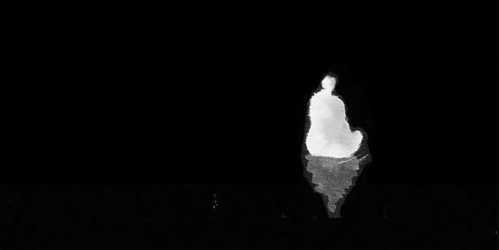
最後我也祝願所有佈施一頓飯的人，未來生生世世到解脫爲止，都不再受飢餓之苦。
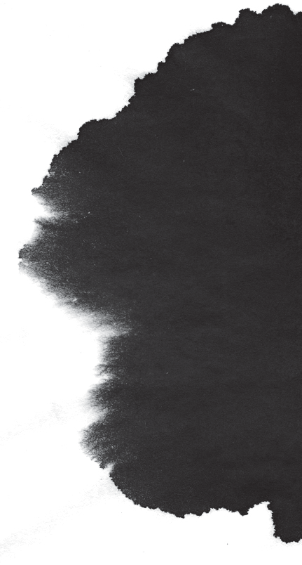
到這裏要講的內容基本上講完了。下面對佛法做最後的總結。
首先，怎麼判斷一個人對某專業的知識完全掌握與否，可以看以下兩點。
第一，可以用自己的語言闡述專業知識給外行人聽，還能讓外行人聽懂，而不是用大量的專業術語，讓外行人望而卻步。
第二，對專業領域的所有知識形成框架，各知識點不再是獨立分散的碎片，而是在大框架中找到相應的位置，最終所有知識點形成完整的邏輯。
那麼佛法的大框架是什麼？首先佛法是宇宙真相，最底層的真相是“自性恆常”，每一個衆生都有不生不滅的自性，也就是根本意識。其次是“初妄無因”，自性當中沒有理由地產生妄想，這也是自性的性質。第三，“諸佛同體”，所有自性重疊在一起，這是自性的存在方式。
先有物，說明這是什麼物，給它下定義，再講物的性質，還有它的存在方式。這是哲學的研究方式，也是我們研究世間萬物的主要邏輯。
接下來從“初妄無因”中的妄想開始，往下延伸出菩薩的十一層妄想，阿羅漢的九種分別心，凡夫的九種執着。再把它倒過來講就是凡夫修行的次第。這是一條邏輯線。
再從“諸佛同體”開始，往下延伸出業的原理、因果定律、法界最初的故事、七級發心、繼承成佛、分家成佛、創世、衆生輪轉、文明設計、傳法團隊的建設、四大職業、度人的流程、消業指導等一系列的問題。這又是一條邏輯線。
以上兩條線是佛法的大框架。
落實到我們個人身上，首先給人生確定目標和意義，大目標是成佛，符合大目標的行爲是有意義的行爲，不符合大目標的行爲是沒有意義的行爲。接下來看成佛的條件，成佛要滿足修心和消業兩方面的條件，修心要達到沒有妄想的境界，消業要做到度完所有有緣衆生。
具體怎麼做？先要有正確的發心，發願普度衆生。然後是行爲，戒行、善行、修行。做到以上四點之後在人生中遇到任何問題，不管是修行方面還是生活方面，先做功德，再向佛菩薩求幫助或啓示。要深刻理解“諸佛同體”，佛菩薩的意識遍虛空的真相，有問題直接向佛菩薩求就可以了。
等你瞭解了這一切，你會覺得佛法也不過如此，真相併不復雜，人生也不再迷茫。
對於佛經，我們要區別義理和故事來看，故事都是爲了讓讀者信義理而寫的內容，有刪減和演繹的部分。義理纔是重點，總覽八萬大藏經，義理的部分主要是意識的結構和修行的次第，也就是“初妄無因”這條邏輯線上的內容。在修行次第上對身體的障礙說得也很少，因爲佛陀收的弟子大部分都有外道修行的基礎，基本上都過了身體關。
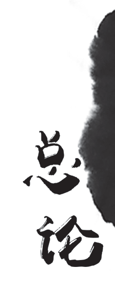
佛經裏並沒有直接講“諸佛同體”，更沒有講到業的原理，不能講的理由前面已經說過了。關於業，佛陀只是講了大量的因果故事和自己前世的故事，用很多事例來證明因果真實不虛。從我們這些後世讀者的視角看這一部分，尤其是現在受過高等教育，懂得邏輯思維的人的視角看，還是缺乏說服力。這就好比有人告訴你喫飯會肚子飽，但他不說飯在肚子裏起什麼作用，喫飯後身體有什麼變化，而是舉了大量的實例，說某某人喫飯後飽了，某某人喫飯後也飽了，有很多人喫飯後飽了，我也喫飯後飽了。所以你也應該喫飯。
那麼此書把業的運作原理解釋清楚，再把發願的原理和必要性講清楚，把佛經裏欠缺的社會觀部分完整補上，邏輯上形成完整的閉環，到此功德圓滿。關於此書中第六章和第七章，讀者也可以當作故事來看，主要是爲了證明世界有人管理，傳法是有計劃的團隊行爲而舉證的內容。
關於兩本《坐禪》中着重推薦淨土法門，也有些人認爲是針對下根之人的方便法門。在這裏大家首先要知道，修行大乘佛法的終極目標是成佛，講究的是信、解、行、證。而淨土法門的目標是往生極樂世界，講究的是信、願、行，和成佛不是一個方向。
這就好比打遊戲的目標是練到滿級，中間的各個級別都是必經的等級階段，但是進哪個服務器打遊戲由玩家自己決定，和等級無關。淨土法門就是移民其他佛世界的方法，可以用來往生任何佛世界。例如，你想去東方淨琉璃世界。那麼第一步是信，相信東方淨琉璃世界真實存在，東方三聖（藥師佛、日光菩薩、月光菩薩）真實存在；第二步是發願往生東方淨琉璃世界；第三步是做到戒行、善行、修行，用來提高往生概率。修行時繼續選擇唸佛、觀佛、思佛的方法，只要把對象佛換成藥師佛便可。至於個人而言，到了其他佛世界還要繼續修行，直至成佛，但是可以享受到該佛世界提供的一些便利。
在往生這件事上並沒有根器限制，也可以說淨土法門普被三根。龍樹菩薩是歡喜地菩薩，但還是發願往生極樂世界。現實裏有不少沒有禪定功夫的人，只靠專心念佛往生極樂世界的例子。任何人只要做到信、願、行都可以往生，只是有禪定功夫的人更容易往生而已。
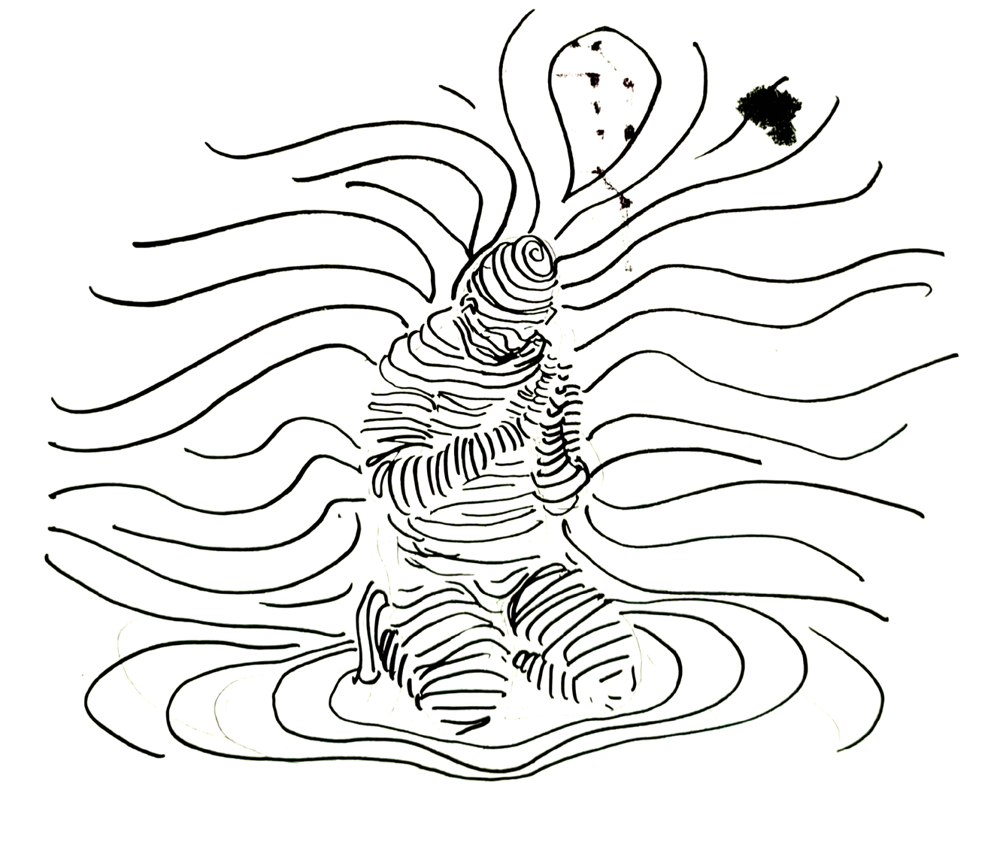
最後祝所有讀者，此生業盡時便能往生極樂世界，不求往生極樂世界的人也希望得償所願。《坐禪1》中最後我發願，看過我的書的人不管支持還是反對，我都會度，這個願繼續有效，但我的職業要求賞罰分明，我會先度支持我、幫助我的人，故意妨礙傳法，攻擊個人的人放到最後度。